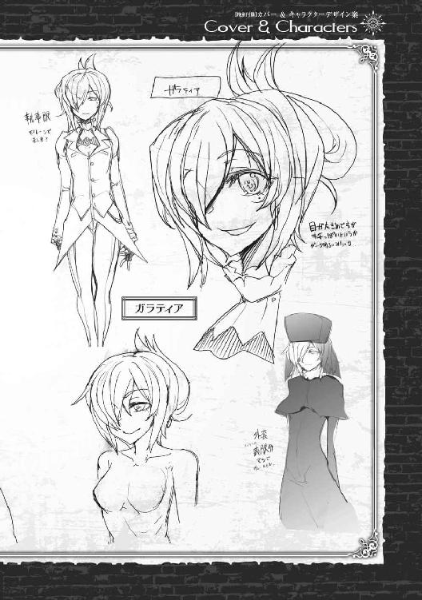

| 人食いダンジョンへようこそ！3 人食いダンジョンへようこそ！シリーズ (ビギニングノベルズ) | |
| 一年新 | |
| (2016) | |
※本作品の全部あるいは一部を無断で複製・転載・配信・送信したり、ホームページ上に転載することを禁止します。本作品の内容を無断で改変、改ざん等行うことも禁止します。また、有償・無償にかかわらず本作品を第三者に譲渡することはできません。
※本作品は電子書籍配信用に再編集しております。
......だから、悪いことは言わないから、人知れずこの街を離れるか、僕の庇護下に入ったほうがいいと言ったんだ。僕は君を高く評価しているし、いい友人になれるかもしれないと思ったんだ。これは本当だよ。
美人だなとか、色っぽいなとか、まったく思わなかったことがないといえば......まぁ、嘘になるけどさ。君も知っての通り、僕は女性に飢えているわけではないし。
......いや、その。うん、気持ちいいことは当然好きだから、女の人を抱くのは好きだよ。
無理やりっていうのは、あまり好きじゃない......そんな顔をしないでくれよ、好きじゃないことと、それをしていることは両立してしまうんだ。
今更隠しておく必要もないから先に言っておくけれど、僕は他人を魔物に変えることができる。その上で、魔物にした相手を支配することができる。
......まぁ、全部正直に言っているとは思わないだろう？
僕のことを悪魔と呼びたければ呼べばいいし、その言葉を否定する術を僕は持っていない。生き残るためだとはいえ、直接は少なくても、間接的に何人もの人を殺したのは間違いない。何人もの女性を魔物にしたよ。君もよく知っている、ダリアも魔物だ。
......驚いているね。外見からではわからない？
あぁ、その顔はどうやら気がついたようだね。
そう、エブラム領主の姪にして聖堂騎士のオリヴィア嬢を危機から救うきっかけとなった地元民というのは、誰でもない僕のことだ。ちなみに、その情報は半分でしかない。
もう、わかっているだろう？
退治されたことになっている人食いダンジョンの主というのは、誰でもない僕のことだ。
まぁ、色々あってオリヴィーとは和解して......あぁ、言ってなかったね。僕とオリヴィーは昔からあの村で遊んでいた知り合いなんだよ。十年近く会っていなかったから、あの子がダンジョンの魔物討伐の指揮官になったと聞いたときには本当に驚いたけれど。
あの子は暗殺の危機にさらされていた。それでも、あの子は逃げることができなかった。
暗殺を指示していたのは......それはもう、君自身が一番よく知っているだろう？
さぁ、改めて聞こう。この世の中はきれいじゃない。
この水門都市エブラムにも、表の顔も、裏の顔もある。君は今まで表の世界で生きてきて、望まず裏の世界を垣間見て、一歩踏み込まされてしまった。
それは僕が望んだことでも、君が望んだことでもないのは理解してもらえるよね。
この街は蜘蛛の巣みたいなものさ。遠くから見ればきれいだけれど、どこもかしこも獲物を狙う罠ばかりだ。君のような人は、いわば蜘蛛の巣に掛かった蝶のようなもの。
これから先の選択肢は、食われるか、君も蜘蛛の仲間になるか。僕が提示できるのは、この二つしかない。このまま、本当に死が訪れるのを待つというならば、惜しいけれど止めはしない。
でも、もし。悪党である僕に、少しでも好意を持ってくれていて、少しでも信じてくれたのなら。こっち側に来ることは、不可能ではない。
まぁ、色々とやることはあるのだけれど。君にとって嬉しいことかどうかまでは保証できないけれど、半ばは僕の女になるということだからね。
あまり悩む時間はない。
さぁ、決めてほしい。その上で、僕は君が欲しい......だから、こう言わせてもらうよ。
......ようこそ、蜘蛛の巣の街へ！
ヌビアとネムが僕の魔物になって、一週間ほど過ぎた。
ゴードンのサーカス団は花形であるネムを失い苦労していたようだが、逃亡者であるヌビアに関しては知らなかったということにして一応お咎めなしとなった。
もっとも、ヌビアが賞金首なのはエブラムでもこの国でもなく、交戦中の隣国の話だ。エブラムの兵士たちに取り締まる権利は本来ないものだから、お咎めも何もない、というのが正直だろう。
サーカス団は予定の滞在期間を少しだけ前倒しし、次の都市へと移る準備を始めた。
珍しくギュスターブ爺さんもエブラムに残っていたので、ゴードンと僕との三人で別れの席を設けることになった。
「ゴードンはもう気づいているとは思うが、エリオット。数日前から、お前らの近辺を誰かが嗅ぎ回ってるぞ」
酒も回ってきたころに、ギュスターブが突然つぶやいた。
「は？」
一気に酔いが醒めた。
「あぁ、エブラムの......オリヴィア嬢ちゃんのところじゃないっぽいんだが、実際のところはわからん。きな臭いんで、早めに退散させてもらうことにしたんだ」
と、当たり前のようにゴードンが返す。一応警戒しているつもりだったけど、まったく気がつかなかった。
ここ数日は蜘蛛の巣館に顔を出した以外に裏の仕事はしていないから、怪しまれることはないと思うが......シロを身の回りに置いていないことが仇になったかもしれない。
それにしても、なんで僕のことが。魔物のことがどこかから漏れたのだろうか？
「身に覚えがないんだけど......」
僕の声は震えてはいなかったと思う。前から正体を知っているギュスターブはともかく、ゴードンにはまだばれていないと思う。
杯を飲み干し、ギュスターブが言葉を続ける。
「俺の傭兵団の連中の所にも、この数日で魔法道具商人のエリオットの噂を聞きに来た奴がいる。どっちも傭兵風の奴だったらしいが、別の奴が別の相手に二回」
「......傭兵の所に、魔法の武具の話を聞きに来るのは普通じゃないのかい？」
自分でも違和感を覚えながら、ギュスターブに問いかける。考えれば結論が出るかもしれないが、結論を出している相手が目の前にいるんだ。聞いてしまっても損はない。
......その上で、鵜呑みにするのは危険なのだけれど。
「お前の店、この街で噂話のレベルでご指名を受けるほど有名か？」
言葉もない。売り出し中ではあるが、まだ店の売り上げや知名度は今の蜘蛛の巣館にすら及ばない。
「それに、普通は魔法の武器の入手先を聞きに来るもんだろう。なんで店を決めうちで聞きにこなけりゃいかん？」
ゴードンがビールを飲み干し、あきれたように言う。
「エリオット、お前ヌビアに武器を渡してただろう。それに、娼婦を紹介していただろう。この街でヌビアが一番親しかったのはお前さんだよ......それに、ネムも」
それで得心がいった。まだ疑いは晴れていないのだ。いや、ヌビアたちとの接点が残ったままだったことに、僕は無頓着だったのだ。ここは人里離れた荒野ではない。人が住み、多くの人目がある都市だということを肝に銘じなければいけない。
そして、調査をしているのはオリヴィアの目の届いていない勢力......他の勢力の可能性もなくはないが、おそらくはランベルト家だろう。
「痛くもない腹を......まぁ、何もないとは言わんが......探られるのは具合が悪い。なんで、早めにさよならってことさ。エブラムはそこそこ稼ぎがいいから、ちょいと惜しいんだがな。次は西のパルミラでも目指すかねぇ」
※ ※
翌日、店じまい間際にライラが店に立ち寄った。彼女が来るのは、ヌビアが消えた翌日に聞き込みに来て以来だ。
「......やぁ、エリオット。ダリア」
「いらっしゃいませ、ライラさん」
ダリアがいつもの通りに挨拶を返す。ライラは何か疲れ気味だ。
いつものように他愛ない世間話をしたあと、こちらから話を振ってみることにした。
「どうしたんだい？ 疲れているようだけど......ヌビアの件は、まだ調査中なのかい？」
自分としても、貸し出した魔法の武具を持ち逃げされた形になるのだから、ある程度気になるふりをしていないといけない、ということもある。
それに、どの程度状況をつかんでいるのか、ライラが僕を疑っているのか、表情から見えてくるものがあるかもしれない。
「あぁ、水路から出ていく小舟の目撃証言がある。おそらく、エブラムからは逃亡した......と見ていいだろう。私個人としては、まだ確証は持てないんだけどね」
それはライラの勘なのか、何か物証があるのか。
「何か、気がかりなことでもあるのかい？ 僕としては何か暴力を振るわれたわけではないし、貸していた武器を返してもらえれば文句はないんだけどね」
「君も被害者だからな......。いや、これは確証があるわけではなく、単に勘みたいなものだ。聞けば、あのヌビアという男は、かつて殺した女の娘を育てていたというではないか」
「......あぁ、ネムのことだね。ずいぶん、ヌビアになついていたように見えたよ」
「どういう関係だったのか、どういう人物だったのか、私にはわからない。だが、仲良くあった......親子のような関係の相手を置いて逃げられるようなものなのだろうか？」
「......僕には、わからないな。一緒にいれば危ないと思ったのかもしれないし、足手まといだから置いていくことにしたのかもしれない。当人たちのことは、たぶん当人たちしかわからないよ」
そういえば、ネムは行方不明ということになっていたけれど、一般にはどう見られているのだろう？
ヌビアと共に逃げたのだと考えてもらいたいのだが......
「......あぁ、そうだ、な。すまない、私はいらないことを考えすぎているみたいだ」
ライラが顔を上げ、軽く頭を振る。やはり、目元に力がないように見える。
「ライラさん、お仕事はお忙しいんですか？」
ダリアが奥から冷やした水を持ってきてくれた。
「ああ、ダリア、ありがとう。......これは、いいな」
ライラの表情が目に見えて変わる。暑い盛りは過ぎたとはいえ、実りの季節まではまだ早い。刻んだ果実を入れて、少しだけ香りが付いた冷たい水。ダリアが誰かから聞いてきて作ってくれたのだが、暑い時期にはとてもありがたい。水を冷たいまま保管できる容器とか、作れないものだろうか......魔力も溜まってきたし、今ならやり方のヒントさえわかれば案外作れるかもしれない。
「ええ、神殿にお参りに行ったときに、親切な方から教えていただいたんです」
そんな所に行っていたのか。休みの時間帯は自由にしていいと言ってあるし、ダリアにはもっと自由に過ごしてほしいと思っていたから、喜ばしいことなんだけれど、ちょっとだけ意外だ。
「あぁ、神殿か......そういえば、最近は公務以外では行っていないな。たまには挨拶に行かないと。......それにしても、エリオットは果報者だな」
ダリアが少しだけ頬を染め、ライラが笑う。
ライラは僕たちの関係を、健全な恋人だと思っているのだろう。
「さて、長居しすぎたか。すまないね、長々と邪魔をしてしまって」
「いやいや、ライラさんの噂話もこっちには商売の種になるからね」
そのタイミングで、シロが戻ってきたことがわかる。ライラがまだ店内にいるため、遠隔でしばらく待機するように指示しておく。
「では、また寄らせてもらうよ。買い物ができるくらいのゆとりがあればいいんだが、ね」
苦笑しつつライラが帰ると、少しの間を置いて入れ替わるようにシロが帰ってくる。
「ご主人様ぁ、今の人、男の臭いがしました」
シロが言う今の人とは、間違いなくライラのことだろう。男の臭い......？
「それは、どう言うことだい？」
「その......男の人の、精液の臭いですぅ。ちゃんと拭いてると思いますけど......」
シロは嗅覚が鋭い。おそらく、人間では気がつかないレベルの臭いまでかぎ取った結果の報告なのだろう。
「ライラは勤務からの帰りのはずだ。僕の店に寄る前に誰か男の所に寄ったのか......？」
あの生真面目なライラが、勤務中にそういうことをするとは考えにくい。
怪訝な顔をしていたのだろう僕の後ろで、ダリアが小さい声でつぶやく。
「ライラさん、もしかして......」
「ダリア、何か気がついたことがあるのかい？」
僕にはわからないことがダリアにわかったのだろうか？ 少しためらったあとに、ダリアが言葉を続ける。シロは、ライラが飲んでいた水の入ったコップを手に取り、臭いの確認をしている。
「今日のライラさん、なんだか悲しそうな顔をしていました。今までにも、時々あったんですけれど......。わたしとマスターのことを話すとき、あの人は、すごくまぶしそうにこっちを見るんです。だから、もしかして......」
「ご主人様ぁ、やっぱりですぅ。ミントとかで消してあるけど、コップにも残ってます。お口でもしてあげてるんですね」
......僕は何かを見落としている。
ランベルト家の騎士ライラ。生真面目で、馬術の技量にも長けた美しい騎士。
そのくせ自己評価は低く、領土も持たない、罪人の父を持つという彼女......もしや、ライラはランベルト家の中で誰かに抱かれているのではないだろうか？
ライラがベタぼれしている可能性もあるが、仕事中にライラがそれを許すというのも考えにくい。
そう考えると、そんなことができるのは、おそらくはごくわずか。ライラは、ランベルト家の当主か、次期当主の妾なのだ。
それも、おそらくは望まぬ形での。
※ ※
「......あなたの推測は、おそらく正しいわね、エリオット。騎士ライラは、一部の騎士たちか〝ベッドで騎士の座を得た〟なんて言われることもあるみたい」
翌日。サラの家の魔具を使って、サラとオリヴィアと連絡を取る。
この時期に、僕がこの二人と接触していることを知られるのはあまり望ましくない。もちろん、サラと商売としての取引は続いているので、家に行くことはあるが、長々と喋ると怪しまれる可能性もある。
オリヴィアには、以前からライラのことを調べてもらうように頼んでいた。その結果も、ダリアの予想を裏付けるものだった。
「ライラ・ハルバニア。下級貴族ハルバニア家の長女。領地はランベルト家の現当主が管理しているわ。......ハルバニアはランベルト家の一派とされる騎士の家柄で、先代が十年ほど前に戦地で亡くなっているの。長男は同時に死亡していて、ライラが現在唯一の家督相続権を持つ人物ね」
オリヴィアは、かなり調べてきてくれていたのだろう。
「ライラは、自分が罪人の子と言っていた。それに関しては？」
「これは、確証があるわけではないけれど......ハルバニア卿は戦場で敵軍と内通したという噂があるわ。......当時を知る人に聞く限りでは、ハルバニア卿は実直な方でそんなことは信じられない、という話だったけれど」
後ろのほうで、つまらなそうなため息が聞こえる。サラは既にオリヴィアから話を聞いてるようだから、この話の結末を知っているのだろう。そして、その結末はサラにため息をつかせる類のものだということか。
「謀殺......かい？」
「証拠はないのよ。ハルバニア家はランベルト家の旗のもとに集う家柄だったから、実際のところ、何があったのかもわからない。書類上、家を継ぐ者がいなくなって、まだ子供だったライラが家を継ぐ......正確には、彼女が夫を娶るまでは、財産や領地はランベルト家が管理する。そういうことになってるの」
オリヴィアの声は、そう言いながらもほぼ確信している声色だった。ランベルト家は、オリヴィアに対しても同じようなことを仕掛けているのだから、当然といえば当然か。
「......当時は、ライラも十歳ちょっとくらい。世間のことも知りようがない、かな？」
ライラがあれだけ生真面目な性格を保っていられるのは、死んだ父や兄を信じているからなのか、それとも憎んでいるからなのか、正直判断は付かない。
裏表のない人だと思っていたけれど、それは僕の見る目がなかっただけか。僕の沈黙を読み取ったのか、オリヴィアは僕をそそのかすように言葉をつなぐ。
「噂の評価は最悪だけれども、実績と実力の評価は高いのよ、彼女。......エリオット、彼女のことが欲しくなったんでしょ？」
「......あぁ、最初は、敵にしたくないなとだけ思っていた。途中から、巻き込まずにすめばいいなと思っていた。でも、今は違うね」
「騎士ライラは有力な戦力よ。その忠誠心はランベルト家にだけ向けられていると見たほうがいいわ......もし、何かがあった際に敵に回ったら、やっかいな相手。でも、もし彼女を味方にできたら？」
......オリヴィアは、本当に僕と似ている。僕の思考を読むのに長けているのかもしれないが、僕がこれから言おうとしたことを、そのまま先に言ってきた。
今度は、僕が答える前に向こう側からサラの声が聞こえた。
「あんたたち、ほんっとに似た者同士よね。あと、お互い内心隠すのも無駄だからやめなさい。特にエリオット、あんたあの騎士のこと気に入ってるんでしょ？」
なら、あたしやシロのときみたいにさっさと抱いてものにしちゃいなさいよ、とあっさり締めくくる。僕が軽く吹き出すのと同時に、オリヴィアも小さく笑っていた。
「あぁ、そうだね。ライラを、僕たちの側に引き入れよう。そのためには、事前準備がかなり必要になるだろうけれど」
オリヴィアたちとの連絡を終えるころ、ダリアがお茶を淹れて持ってきてくれた。
「マスター、準備が整いました」
「あぁ、ありがとう。一休みしたら、そっちも片づけないとね」
茶受けには小さな焼き菓子が数枚。最近、シロとダリアが街中で見つけた店のものらしい。
シロはリリの出産が近いのでなかなか出歩くことができない。そのため、ダリアは一人で動き回ることも増えてきているようで、時々こうやって指示していない菓子や飲み物を買ってくる。......いい傾向だと思う。
焼き菓子の包みをはがし、口に含む。焼き菓子の甘みが頭の疲れをいやしてくれる。もっとも、これからまた頭と魔力を酷使することになるのだけれど。
※ ※
一息入れたあと、ダリアを伴って店の地下に降りる。そこでは既にダリアが儀式の用意を済ませている。近い距離ならば、呪文一つでこなせることだが、距離が離れると疲労が激しい。だからこそ、このような儀式の準備が必要になる。
色砂で陣を描き、目的地に置いた触媒......まったく同じ種類の宝石......を中心に設置する。
ダリアは自分から何かをするということは多くないものの、ゴーレムとなった影響で記憶力は抜群によくなっている。だから、儀式が必要な魔術を使うときは、自分の代わりに儀式の準備を任せることも多くなった。簡単なものなら、資料を見ずに描きあげることも可能だろう。
陣の中に座り、精神を集中する。意識を自分の体からもっと前に飛ばすように想像し、宝石の向こう側にいるはずの相手を見ようとする。ぼんやりと、次第にはっきりと目の前の映像が二重写しになる。
※ ※
目に映ったのは、褐色の二つの丘。それをわしづかんでいる黒檀色の小さな手。それが自分の手だと認識するのにわずかにラグがある。
薄布のこちら側で見るように、自分が......この場合、自分が憑依している体が快感を得ていることがわかる。
あぁ、そういうことか。状況を理解する。フレッドは、今チャナを犯している最中だ。褐色の二つの丘はフレッドの目の前にあるチャナの尻であり、今その尻をわしづかみにして、ペニスを突き込んでいるのだ。
「もっとォ......もっと欲しいヨ！ 強く、強くしてほしいんだヨ！ ご主人様ぁ」
チャナの愛液は、わずかながら木の香りが混じっている。アルラウネとなった影響は、体臭やわずかな皮膚の変化に現れる。
注意深く見なければわからないかもしれないが、こうして見ると、手足の末端部分が植物的になっていることはよくわかる。
そんなふうにフレッドに憑依したまま観察していると、フレッドのペニスがひときわ強く反応した。もう我慢できないのだろう、射精の前兆が見える。......さすがに、今体の支配権を奪うのはあまりにもあんまりだ。射精が終わるのを待って、ぐったりとしたところで、フレッドの精神を眠らせ、僕が前に出る。
「ご主人様ぁ......すっごくイイヨ......。もう一回、もう一回お願い」
「チャナ、申し訳ないけれど時間だよ。......ディアナはもう来てる？」
射精直後の体は疲労感に包まれているが、若さ故だろうか、あっという間に回復していく。
急に口調が変わったことに怪訝な顔をするチャナも、どうやらフレッドではない誰かがここにいることがわかったのだろう。
「あら、来るって聞いてたけど、そうやって来たのネ。ディアナは隣の部屋で待ってるヨ」
「......監視がついている可能性があってね。あとは別件で忙しかったから、地下を通るのも手間だったってのもあるかな」
※ ※
ディアナを呼び入れて、簡単に打ち合わせを行う。さすがに、フレッドの身体に憑依したままの長時間行動は疲労が激しいので長居はできない。
「まずは、頼んでいたことの報告を聞こうか。蜘蛛の巣館の売り上げ報告や、暗殺ギルドの定常の業務などは、後日書面でもらうだけでかまわない」
取り急ぎ、知りたかったことをいくつか確認する。
「ランベルト家に関して......特に、あの女執事に関して何かわかったことはあるかな？」
ディアナが目で合図すると、チャナがまず報告を始める。
「個人での経歴はあとでディアナにしゃべっテもらうけド、取引があった内容をまとめておくヨ。過去に三回の暗殺依頼と、その周辺調査がある以外にも、主に薬品の......まぁ、いわゆるあたしの作ったあの辺の取引をしてるヨ。これは結構付き合いが長いネ。取引はこの程度かナ？」
「ふむ......誰を殺したのかと、何を買ったかは？」
「三回目は知っての通り失敗してるヨ。前の二回は、共に二年くらい前......まぁ、うちらがエブラムに居着いて、あの二匹に乗っ取られたあとだネ。対象はエブラムの商工会の顔役一人と、水門の管理をしていた爺さん。どっちも事故に見せかけてるヨ」
......商工会か。ジェンマ商会あたりに聞けば、何かわかるだろうか。水門に関しては、オリヴィアに何か聞けるかもしれない程度だ。
「薬は？ どんな薬かと、量はどれくらいか知りたいな」
「一番多いのは、労働者に配る興奮剤だネ。疲れを忘れるけど、ちょっと身体に悪くて習慣性があるやつ。いわゆる麻薬ってやつだけど、商売できるような量じゃないヨ。あとは、催眠薬、媚薬、毒......薬草や少量の宝石なんかも何度か注文があったネ」
麻薬か、量が少ないということは、ランベルト家の主な収入と言うよりは、水利関係の裏側の家業で使っているのだろう。あるいは、雇用人たちに使っているのか。
催眠薬、媚薬、毒......どれも、貴族の社会ではよく使われるものなのだろうか。薬草や宝石は......？
「......付与魔術か」
僕の推測は、ディアナが調べてきたことで補強される。
「おそらくはその通りです。あの女執事......どうやら、西の都パルミラの学院で魔術を学んでいるみたいです。これは、ランベルトの屋敷の下働きの者たちの噂なので、確定ではありませんが......」
正式に魔術を学んだ魔法使いが敵にいるのは、やっかいな話だ。
「相手は人間だろうけど、正式に魔術を習っているのであれば僕よりもやっかいかもしれない。警戒は必要だね......って、ディアナ、その女執事は魔術師として雇われているわけではないのかい？」
執事というのは、主人に代わり家の業務を取り仕切る、使用人の中でも最も高い地位に就く者だ。それでも、宮廷魔術師に比べればその地位は低い。
ランベルト家は、どうやって魔術師を執事として取り込むことができたのか？
「ええと、そいつの名前は......」
「ガラティア。パルミラの下級貴族クルツ家の娘というふれこみですが......本当かどうかはわかりませんでした」
そこは、パルミラの神殿に留学していたオリヴィーに聞けば多少わかるかもしれない。油断はできない。相手が僕の知らない魔術を知っているだろうことは確実だ。あとは、こちらの情報がどれだけ漏れているか......
「ディアナ、もう一度ガラティアに接触を図ることは可能かな？」
質問に、ディアナは少しだけ眉をしかめる。
「......正直、わかりません。我々が失敗したことはもうわかっているでしょうし、魔物の姿とはいえアラクネの首を見ているわけです。アラクネが倒されたことは既に知られていると思ったほうがいいでしょう」
ディアナの判断は正しい。アラクネと顔をつないでいたのならば、どこまで正体を知っているかが未確定でも、甘く見積もることは危険性が高すぎる。
既に、相手には暗殺ギルドが何者かの手に落ちているだろうことは予想されていると見るべきだろう。
「......ディアナ、チャナ。暗殺ギルドの構成員に調査が行われている形跡を調べて。僕がガラティアなら、暗殺ギルドに対して調査をするはずだ」
シロが周囲の警戒をしていることもあり、まだ僕の店の周囲に妙な調査が来たことはないことがわかっている。......ライラが唯一調査と言えば調査だが、監視用の魔具を持っていたわけでもないし、生真面目なライラに腹芸はできないだろう。
警戒すべきは、暗殺ギルド本体と、副業として持っている蜘蛛の巣館。そして、サラとオリヴィーの周辺か。
「......ディアナ、連絡がつくのであれば、ガラティアに接触する準備を。暗殺ギルドの新しい主として、再び挨拶に行ってもらうことになるだろうからね」
そう。暗殺ギルドの情報収集能力は低くはないが、万能ではない。そして、同様の盗賊たちの集団は、このエブラムにまだ複数ある。
こちらが上とは限らないならば、最も近くに自分たちから飛び込むしかないだろう。
※ ※
「......あなたが、暗殺ギルドの新しい頭目なのね？」
数日後、ディアナはガラティアと面会することになった。
ランベルト家の手の者かどうか確証は取れないが、この数週間で暗殺ギルドの下部構成員数名に金や女が流れ込んでいることが確認できた以上、時間をかけることはできない。
念のため目と耳を持たせたが、隠し持たせているせいで、僕からガラティアの顔は見えない。僕の本体は店の地下で、ダリアに接客を任せながら遠隔的にこの会談を聞いている状況となる。何かあった場合、ディアナに対してできる手助けはほとんどない。
「ええ、ご存じの通り、前の子が失敗したからね。表に出たくはなかったのだけれども、他に人材もいないし。詫び......とは言いませんわ、詫びはあの子が命で支払うことになりましたから。以前の契約内容の再確認と、契約の継続の意図を確認に来た、というところですね」
この辺の虚言混じりの交渉は、ディアナが最も適している。
表情を変えずにいられて、その上度胸もあるのだから、表に出たくない僕としては重宝する代理人なのだ。
「あら、私何かあなた方に依頼したことで、失敗したことなんてあったかしら？」
ガラティアの返答は意外なものだった。貸しにしてくるとばかり思っていたが、どういうことだろうか？
「......ええ、申し訳ありません。それはあたしの思い違いでした。あなたがどなたかの暗殺を依頼するなんて、ありえませんからね」
ディアナの返答で理解する。相手も改めて言質を取らせたくないのだ。おそらく、今僕がやっているように別の場所で聞かれることを警戒している。魔術師の手口を知っているからこそできる芸当だ。
ディアナにはあらかじめ目的だけは伝え、やり方は自由にさせている。僕はしばらくの間見守るだけだ。
「前の頭目が暴走した結果、詳しい仕事内容の引き継ぎができていませんでしたので......改めて確認させていただきたいのですが、我々とあなた様との取引内容は、薬品と少量の宝石類など。それで認識はあっていますでしょうか？」
手探りで話が進む。
「ええ、基本的にはそう。あとは、街中の調査を時々お願いしていたくらいかしら」
街中の調査......まぁ、そういう言い方になっているのか。
「なるほど、了解いたしました。私どものメンバーは調査もいたしますし、急なトラブルにも自力で対処いたしますので」
ディアナの言う急なトラブルとは、おそらく暗殺のことを指すのだろう。依頼されているわけではなく、仕方なくそういう事態が起きて処理してしまったということにしたいのだろう。
「なら、これからも良好な関係を築くことができそうね？」
ひとまず、挨拶は無事に終わった......と、思ったそのときに、ガラティアは小さな言葉の爆弾を投げ込んできた。
「そうそう、地下水路の蛇姫様はお元気かしら？ 元の場所にはいないようですけれど」
ミヤビが移動したことを知っている？
「それをどこで......っ？」
ディアナが口にして、自分のミスに気がついた。しかし、これは僕でも無理だっただろう。相手が一枚上手だ。
冷静に考えれば、ガラティアがその知識を持っていてもおかしくはないのだ。アラクネから大まかなことを聞いていた可能性は常にあるし、具体的な場所やミヤビという名前を出したわけでもない。おそらくはブラフだ。
しかし、僕たちはそれ以上に知りすぎている。水面に顔を出さないように指示していたが、ヌビアの地下水路逃亡の際にミヤビを使ったところをガラティアの使い魔に見られていることを僕たちは知っている。
大したことは知られていない。しかし、ガラティアはディアナが何かを隠そうとしていることに気づいてしまった。
ヌビア逃亡の際に暗殺ギルドが手を貸したと思われているのだろうか。相手が何を知っていて、何を知らないのかわからない。では、今こちらからできることは何か？
「読めるのよ、私。全部とは言わないけれど、あなたの考えていることがね。あなたはアラクネから聞いていなかったのかしら......私が、魔女だって？」
ガラティアが攻めに転じる。この執事が魔法使いだというのは噂になる程度に知られている情報だ、価値は低い。ここでその情報を開示する理由は何だ？
「あなたが新しい頭目？ そうね、他の役立たずに比べれば悪くないわ。でも、理解しなさい。あなたのギルドは私の助力なしでは立ち行かない、私の道具なの」
直接的な言葉に面食らう。ガラティアは歌うような節回しで言葉を続ける。
「理解しなさい。あなたたちは腕、私が頭。心に留めなさい。あなたの前任者は、私の配下。身体に刻みなさい。あなたの魂を縛るのは......私であることを」
ディアナの身体が動きを鈍くする。支配下の魔物であるディアナの身体に異常があることはすぐにわかり、急いで思考を読み取りにいく。
視界を借り、状況を確認する。視界の端に薄い煙を上げる香炉が目に留まる。臭いを伝える魔具はなかった、だから、気がつかなかった。しかし毒ではない、それならばディアナが気づく。
これは、心を落ち着かせる市販の香にわずかに混ぜ物をしただけのもの。ディアナにはまさしく、鎮静効果しか起きないだろう。
仕方ない。意識を切り替えて、ディアナの精神に潜り込む。
ハリーやフレッドのように、それに適した形に調整をしているわけではないからあまり長くは入れないが、僕が生み出した魔物である以上、身体を支配することはできる......みんなには、黙っていたかったのだけれど。
視界に入るのは、ガラティアの美しい顔。鮮やかな、赤と金色の光彩が混じった瞳。二十代後半だろうか、一見気の弱そうな、儚げな女性なのに、今はその瞳が妙に大きく見え......これは、催眠......いや、邪眼か!?
ディアナの身体は少しずつ麻痺し始めている。無理やり動かして、右手を突き出し、視線を遮る。このままでは押し切られるかもしれないし、ガラティアの配下を呼ばれたら捕らえられる可能性もある。
荒事にはしたくない......仕方ない、やり方を切り替えよう。
「......いやいや、なかなか性急なやり方だね。ランベルト家の執事殿」
ディアナの口から、ディアナの声で、違う言葉が発せられる。ガラティアは一瞬驚いたような表情をしたが、即座に表情を切り替え、にっこりと微笑む。
「......出てきていただけると思っていましたわ」
おそらく、これはブラフ。ならば、こちらもブラフで対抗するしかない。
「この身体は、私が使わせてもらっているのでね。いくつかあるうちの一つにすぎないが、君に持っていかれると少し不便なんだよ。あー......ガラティア、と呼べばいいのかな。魔女殿」
少なくとも、ここまで知っているぞと情報を出して、相手に考えさせる。
「親しくない相手から名前で呼ばれるのは好みません。それよりも、まずはあなたが自己紹介をするべき場面ではありませんか。あなたはまだ名乗ってもいないのですよ？」
「ははは、これはおもしろい。暗殺ギルドのことを嗅ぎ回っていたのは君と思ったが、違うのかね？」
こちらから名乗ってもいいが、相手がどの程度の情報を握っているかを引き出したい。
誤解してくれれば御の字だが、それができなくても相手に確定情報を握らせなければいい。ガラティアの顔がわずかに真顔になる。
「あぁ、そうそう。なかなか見事な邪眼だね。学院とやらはそんなものまで教えてくれるのかい？ それとも......」
「......っ」
一瞬、表情が変わった。おそらく、怒り。学院で習うようなものではないのだろう......あれはおそらく、生まれつきだ。
流れが変わった、話をそらしにくるのであれば、付け入る隙がある。
「学院でも、ここまで見事に使う者はそうそういませんが......今は私の話ではないですよ？」
なるほど、確定したことはあまりないようだ。他に出す話題もなく、相手も苦しいと見える......苦しいのはこちらも同じだが。
「私が誰か？ 君ならば推測くらいはついていると思うがね、ガラティア。私がどこから来たか、可能性はあまり多くないだろう」
相手の推測を補強する。いずれは確定してしまう情報ならば、細部を誤解させるほうに使うことにしよう。
「グランドル鉱山......人食いダンジョンの魔物。こんな所に来ているとは思いもしませんでしたね」
ガラティアはこちらの言葉尻から確定情報を取ったと思っているだろうか。
「なに、何度も遠征軍を送られても面倒だからね。うまい具合に内紛をしていたので、私の都合のよいように少し手を出させてもらったよ」
嘘は言っていない。だが、真実を正確に言い表しているとも言えない。可能性は大量にある。僕の実力を、ガラティアは見切れてはいない。僕が狙っているのは、ガラティアが僕の実力を過大評価することだ。
こいつは決して馬鹿ではない。楽観的に相手を見くびるようなら、この立場にはいない。
だからこそ、交渉の相手としてお互いに距離を置くことを選ぶように仕向けたい。
ガラティアは考え込む、何か口を開こうとする前に、思考を揺らすべく次の情報を叩きつける。
「あぁ、南方人の大男のことを考えているのかな？」
「！」
おそらく違うことを考えていたのだろうが、その一言で思考を縛られる。ギュスターブやジェンマ爺さんが時々使うテクニックだ。
ガラティアも会話の席では強い立場に居ることが多そうだ、おそらくは一方的に攻める経験しか持っていないだろう。
「あれは惜しいことをした。あのとき詳しく知っていたならば、ぜひ欲しかったのだがね」
これは嘘。だが、真実を混ぜることで確認しにくくすることはできる。
「あのときはまだ、完全にはこの子を食えていなかったのでね。この子が君たちの動きを見ていて、何か起きていることはわかっていたが、まだ手が出せなかったよ」
ここで、僕はいくつか誤情報を出した。完全には食えていない、というのは他人を支配するのに時間がかかるということ。まだ手が出せなかったというのも嘘。
ディアナがランベルト家を調べていたのは、半分本当。疑ってかかるだろうし、地下水路に手を出せなかったというのは嘘だと判断されてもおかしくはない。潜在的な敵に戦力を隠したがるのは世の常だからだ。
だが、今回の一番の目標は「相手に僕のことを誤解させておきたい」ということだ。
僕が他人を魔物に変えるのではなく、他人の精神を乗っ取る魔物だと誤認させておきたい。それは、相手の注意の方向を「物」ではなく「人」に向けさせることになるからだ。
......同じ付与術士としてみれば、おそらく実力は相手のほうが上。アラクネが持っていたあの宝石は、おそらくはガラティアが作ったものだろう。
あれは僕には作れない。だが、目や耳は作れるが、ガラティアが注意深く見れば見破られてしまうだろう。だからこそ、「どこに僕の分身がいるかわからない」という意識を刷り込んでおく必要があるのだ。
「人食いダンジョンとは、よく言ったものね。正体がわからないわけだわ......もしかして、あなたの身体の中にはエブラム伯の娘もいたりする？」
いきなり別方向から直球を飛ばしてきた。相手もこちらの情報を引き出そうとして必死だ。
「惜しいところだったんだがねぇ......」
信じるかどうかは別として、そう言っておく。時間がかかるという説明を信じるならば、この一言にもある程度の説得力はある。
「凱旋時にチャンスがあるかと思ったが、近づく暇がなかったよ。チャンスがあれば食いたいものだ」
そう言うと、ガラティアのほうを挑戦的に見つめる。一瞬だけ、ガラティアが身体を硬くしたのがわかる。食われる可能性を感じて、何か防御できる手段を準備したのかもしれない。
「なぁ、ランベルト家の執事殿。君はなぜその家に仕えているんだい？ 君ならば......あぁ、もしやもう掌握済みかな？」
今度は、こちらが聞き出す番だ。もしかすると、ランベルト家はガラティアが既に掌握しているのではないか？
「あら、そんなことはありませんわ。私はあくまでも執事ですから」
これは外したようだ、相手に冷静になる隙を与えてしまった。
「ランベルト家のみなさまは、とても素晴らしい方々ばかり。私がお仕えするにふさわしいと考えていますの」
その表情は穏やかで、何かあきらめたような気だるげな雰囲気がある。......オリヴィーやアスタルテが時々浮かべる表情によく似ている気がした。
「あぁ、これは失礼。人の世界のことは詳しくないのでね。実力だけでは表には出られない、ということか。少し悲しいな......」
下級とはいえ貴族の生まれで、学院を卒業した才媛であるならば本来ならばパルミラの宮廷で魔術師になっているはずだ。
そうではなく、大都市とはいえ、パルミラに比べれば田舎と言われるだろうエブラムで、しかも都市貴族の執事をしているには何らかの理由がある。
おそらくは、生まれ持っての不利......邪眼だろう。
ガラティアの左目には、地の色だろう濃い金色に、星を散らすように小さな赤い模様が浮かんでいる。生まれつき、この瞳をしていたのであれば貴族の女性としてのまともな生き方は望めなかっただろう。
ガラティアは答える。
「......別に、都市を支配したいとも思いませんからね。私は望むものが手に入り、とやかく言われずに好きにできる環境があればいいのですよ。政は殿方に任せておけばいいのですし」
おそらく、それは言うべきではなかった本心の一部。
「ならば、我々はほどほどの協力関係を築き上げることができるのではないかな？ 私も、あまり人目に触れずのんびりと暮らしたいのだよ。もちろん、多少の被害は出るかもしれんが......街に影響が出るほどではないだろう」
こちらも、本心と嘘の情報を混ぜて相手に届ける。
「魔物のあなたが、この街で何を望むのかしら。後学のために聞かせてくださる？」
ガラティアはある程度緊張を解いてきている。おそらく、信用はできなくても交渉はできる相手だと踏んだのだろう。
「そうだな......人を食うのは、そんなに必要はない。年に一人二人食えれば十分だ。むしろ、そうだな......娼婦を十人くらい使わせてもらい、小さな娼館でも経営させてもらおうかな。生きていくのに必要なものは、人とそう変わらないよ」
嘘と、はったりと、真実と、相手の情報を引き出すための情報を混ぜた返事。
「まぁ、必要とあればまだこの街にダンジョンを作り出すだけさ。面倒事は嫌いだから、できるだけ手を出さないでいるほうが楽だがね」
「必要であれば、魔物を呼び出すこともできる......と？」
ガラティアの眼が光る。魔法も使わずに、今ここでは多くの見えない剣戟が飛び交っている。
「あぁ、大量に呼ぶにはそれなりの準備がいるがね。必要とあらば、町外れに骸骨の群れでも呼び出しておくかい？」
「いえ、今はその必要はありません。ですが、もしかしたらその力をお借りするかもしれませんね」
「そのときは、この子を通じて依頼をしてくれ。この子は私のことをあまり覚えていないけどね」
「......かわいそうな子」
「いや、なに。知らないほうがいいことだってあるだろう？ せっかく暗殺ギルドの長になったんだ。張り切って働いてもらうほうがいいじゃないか」
僕の内側で、ディアナが小さく不満の声を上げているのがわかる。とはいえ、面に出すほど彼女も馬鹿ではないから黙っているのだが。
ディアナに一つ指示を出すと、改めてガラティアに向き直る。
「では、そろそろ私は失礼するよ。あとはこの子とよろしくやってくれ」
「あぁ、そうそう。あなたの名前は？」
「......人食いの魔物、とでも呼んでくれるかな」
それだけ言うと、ディアナに身体の支配権を戻す。催眠による身体の麻痺は解けている。素晴らしいことに、ディアナは僕が指示しなくとも、さっき自分が話をしていたところから会話をつなげた。
「知られていましたか......あれは、殺しました」
「......なるほどね」
数秒の間を置いてガラティアが口にする。
「蛇姫は、トップの刷新に反抗的でしたので......戦力としては惜しいことをしました」
ディアナはさっきまでの話の直後であるかのように振る舞う。
ガラティアは少し考え込む。おそらく、ディアナが言っていることがどういうことなのかを確認しようとしているのだろう。
おそらく、たどり着くのは「人食いダンジョンの主が蛇姫を殺し、それを自分たちが倒したと認識させられている」という考えだろう。
このエブラムの中に、人食いの魔物の端末となった身体はどれだけあるのか。ガラティアにはまだ予想しかできない。
「......そうね、あなたたちには今までと同じように、いくつかの細かい仕事をお願いできると思うわ」
そう言うと、ガラティアはゆっくりと立ち上がった。
「今日はありがとう、有意義な話し合いを持てたわ」
※ ※
「やっかいですね......権力を持った相手は、それなりに多くの手を持っているものです」
店を訪れたアスタルテにガラティアとのことを話し、しばらくこの店に近づかないよう伝える。何をしてくるか、予想はできてもそれ以上は常にありえる。
魔法使い相手にいくら警戒しても損はない。今後、蜘蛛の巣館にも音声を伝える魔具を設置してもらい、蜘蛛の巣館の管理をしているアスタルテにはしばらくそこに専念してもらう形になる。
その上で、魔術についてある程度知識があるだろうことから善後策を練るために相談を持ちかけたのだ。本人は明言を避けるが、アスタルテはほぼ間違いなく貴族の生まれだ。
母と同世代の生まれであり、魔物にされて人間の世界には戻っていないはずなので、アスタルテの知人から情報が漏れることはまずないだろう。......それ以前に、この国の生まれではない可能性も高いが、そこはあえて今は聞くまい。
だが、貴族の世界の考え方、動き方はある程度知っているだろう。
僕が知りたいのは、そこだ。
「エリオット様、相手は貴族の執事として働いているのですか？」
念を押すように、アスタルテが聞いてくる。
少なくとも、知る限りはそうで、ランベルト家には老齢の現当主の代から仕えているため、他には執事はいないようだくらいのことしかわからない。
アスタルテは、右手を顎の下にあてがい、少し考え込みながら告げた。
「おそらく......いえ、奇妙な形ですので、確証は取らないといけませんが......相手の弱点は、忙しい、という一点につきると思われます」
「忙しい？」
あまりにも普通な答えに、僕の声も呆気に取られたものとなったのだろう。
「忙しいというのは、執事としての仕事が、ということですか？」
と、ダリアが代わりに質問を挟んでくれた。
「ええ。ランベルト家は話に聞く限りエブラムの都市貴族の中でも勢力の強い一門。であれば、表向きの業務だけでも相当なものとなります。都市外部の領地や地方の荘園は専門の管理人を置くとしても、一つの館を切り盛りするというのは大仕事ですし、執事であれば館の中の業務よりは主の政務に関わることのほうが多いでしょう。執事というのは、主の右腕ともいえる存在です」
都市貴族の仕事。確かに、色々あるのだとは思うが、僕はそこについてほとんど知らない。
オリヴィアから大変だということだけは聞いたことがあるが、具体的なことを知らないことに、今気がついた。
「たとえば、どんな仕事があるんだい？」
「執事の仕事は、まずは配下の使用人たちの管理監督です。家の中のことは女中頭が、館の周りのことは庭師や馬屋番が仕切るとしても、彼らに指示を出したり、状況の報告を聞くのは執事です。もちろん、執事の責任を超えるようなことがあれば当主に指示を仰ぐことになりますが、家の中の業務で執事の管理を超えるものはまずないと言っていいでしょう」
「ふむ。ジェンマ商会の番頭みたいな立場だね。確かに、忙しそうだ」
「それだけではありません。主が何らかの事業を行っている場合......ランベルト家は、何らかの事業所得を得ていると伺いましたが、なんでしたっけ？」
ええと、確かオリヴィアに聞いた記憶がある。なんだっけな......
「マスター、確か、エブラムの水運業者を仕切っているのがランベルト家です。そして、彼らに資金の貸付も行っています」
すかさず、ダリアが助け船を出してくれる。
「そうだった、水門の維持管理だけはエブラム伯が行っていて、利用者たちの首根っこはランベルトにつかまれているようなことを言っていたっけ」
「であれば、日々あがってくる水運業者や金貸しの報告をまとめ、主に伝えるのも執事の勤めです。その中で、自分で判断をしてもよい程度のものは執事自身が決定を下します。これは、主の業務を減らすためです」
「......番頭ではなく、大番頭クラスだね。ジェンマ爺さんの所に数名いるだけの大物だ」
「まだありますよ。くだらなく思うこともありますが、貴族社会において社交というものは決しておろそかにできないものです。人を招くことは家同士のつながりを告知することであり、その際にはもてなしの力の入れ具合で関係は良くなったり悪くなったりします。まぁ、このあたりは割愛しますが......これもまた、面倒ですが重要な業務です。当然、貴族社会では食事の好みから異性の好み、美術品の所持数や鑑定眼まで様々な情報が重要とされます。すべてに精通している必要はありませんが、誰がいつどう動いて、それについて誰に指示を出すかを決めるのは、執事と女中頭の重要な業務となるでしょう」
聞くだけでも頭の痛くなる作業量だ。
だが、これらの情報が示すことで、僕が必要としていたものは一つ。
「......なるほど、他に執事のいないランベルト家で、ガラティアが本当に執事として働いているのであればその忙しさこそが彼女の弱点となる、ということだね」
「ええ、驚かれることとは思いますが、貴族とは忙しいものなのです。それゆえに、我々と比べると、その邪眼使いの取ることのできる手数はかなり少ないでしょう」
「相手が態勢を整える前に、相手の懐に潜り込む......か。できるかな？」
「油断はできません。本人が動けないからといって、相手の動きが鈍いとは限らないのですから」
アスタルテが思案しつつ言う。おそらく、それは僕も懸念していたこと。
「うん、本人が動けない代わりに、相手には配下がいるだろうし......それに。おそらく数日中に僕の存在は相手にばれる。確証は取れないだろうけど、容疑者リストには入るだろうね」
「えっ、マスター、それはどういう......」
ダリアだけが驚きの声を上げた。アスタルテもおそらくはわかっている。
「ダリア、僕らがエブラムに来たのは、何があったときだい？」
「それは、遠征軍が......あ」
ダリアも気がついたようだ。
「そう、人食いダンジョンの魔物がエブラムに入り込んだのは、遠征軍が戻ってきたタイミングと同じだということは相手には予想されているだろう。そして、ガラティアの取る一つ目の手は間違いなく、遠征軍の帰還と同時期にエブラムに入り込んだ人間の洗い出しだ」
「エリオット様が商業許可証を発行されたタイミングも、記録には残ります。都市貴族であるランベルト家の人間であれば、公的な記録の閲覧をするのになんの支障もないでしょう」
「そんな......では、それを防ぐ手段は何かないのですか？」
ダリアが焦った声を出す。おそらくは、僕に危害が及ぶのを懸念して。
「公式の書類を偽造するのは非常に難しいことですし、破棄させるのも問題です。エブラム伯がそれを知ったら、今度はエブラム伯に疑われることにもなるし、オリヴィアさんの立場も悪くなるでしょう」
「今から手を打つのは、動きを察知された場合本当に危険になってしまう。だから、そこはあきらめる。やるとするならば、他に怪しい人物を作り上げて目をそらす......まぁ、時間稼ぎ程度にしかならないかな」
では、どうすればいいか。
今までと同じことをしているだけでは通用しないだろう。相手は、単純に攻め込んでくる軍勢ではなく、僕と同じ手段で、おそらく僕よりも多い手札を持った相手。その代わり、相手には手番が少ない。
お互いに同じ盤面で、違うルールで戦うことになる。
僕には何ができる、相手は何をしてくる。考えろ、考えろ、考えるのをやめたとき、きっと僕は負ける。
こちらの有利は、小回りが利くことと、正体を知られていないことだ。相手の不利は、ランベルト家という勢力に所属しているだけに、隠れきることができないことだ。
こちらの不利は、圧倒的に手駒の数が足りないことだ。それに、つながりを悟られないために直接連絡を取ることは難しくなる。
相手の有利は、貴族の家の権力を使うことができること、そこに付随する人脈を使えること。資金力はあってもここにすべてをつぎ込むことはできない......資金？
何か引っかかる。
ガラティアはあくまでも執事であって、ランベルト家の資金すべてを掌握しているわけではない。もちろん、邪眼で何かしている可能性もゼロではないが、割とその可能性は低いと見ている。それなのに、何か引っかかる。
「......ランベルト家の主な事業は、水運関係と金貸し......ランベルト家と取引をしている大口の顧客は誰だ？」
僕は何か見落としている。
都市は生き物だ。ガラティアが所属するランベルトという家は、この都市の中でそれだけで存在しているわけではない。
そこには金の、人の、物のつながりが発生し、敵も味方も存在する。
「マスター、エブラムで水運事業者をまとめていて、なおかつ中小の水運業者たちへの金融の取り扱いも行っているのは......」
ダリアが、記憶を探しながら言葉を紡ぐ。彼女の顔が曇る。
「......この都市で最大の小売商である、ジェンマ商会です」
お互いに気がついていないだろうけれど、もうこの時点で僕たちはつながっていた。
この都市は、水面下に何重もの糸を張り巡らせた巨大な蜘蛛の巣のようなものだ。僕も、ガラティアも、一つの蜘蛛の巣の上で相手の動きで糸が揺れるのを待っている。
うかつに動けば、相手の所にあっという間に糸の揺れが伝わり、僕は蜘蛛ではなく蜘蛛の巣に囚われた蝶になる。いや、お互いがお互いを食い合おうと睨み合っているのだから、どちらも蜘蛛であることには変わりないか。
「......ジェンマ商会は、僕たちに敵意を持っているわけではない。ただ、お得意様のちょっとした頼みならかなえようとするだろう。僕やダリアの情報はあっち側に流れると思っていいだろうね......これ以降、あの爺さんと話すときは気をつけないといけないな」
「かしこまりました、マスター」
ダリアの顔があまりにも真剣だったので、かえって自分の緊張が解けた。
「ダリア、そんなに硬くなったら、ジェンマ爺さんの思うつぼだよ？」
「えっ、あ、すいません。どう対応すればいいのか考えていて......」
アスタルテも、ダリアの姿を見て微笑む。
「ダリア、そんなに焦らなくていいのよ。意識するとかえって疑われるわ......そうね、何か聞かれたときに答えられるよう、打ち合わせをしておくことは大事かしら？」
※ ※
アスタルテとの相談が終わり、暗殺ギルドへいくつか指示を持たせてから送り出す。
そのままサラに連絡を取り、オリヴィアへの報告と、遠征軍の帰還日近辺の資料を調べに来る相手が誰だったのか、わかれば調べておいてもらえるように依頼した。
サラからは嬉しい知らせもあった。
頼んでいた触媒の加工が終わり、新しい魔具の作成ができるようになったのだ。
これは、シロに以前持たせていた「認識をごまかす」タイプの魔具の強力なもので、身につけている相手を別人に見せたり、身につけた人間には周囲の人間の正体を認識できなくしたりという幻覚の魔力を込めることができると予想している。
ただ、店の地下に工房を構えたままというのはいささか不安があった。いつランベルト家の息がかかった密偵や泥棒が進入するかわからないのだ。やはり、これを機に地下水路の奥に場所を移すべきだろう。小さい作業用具だけは残すことにして、荷物をまとめる。
深夜にヌビアとミヤビを呼び、ミヤビの新しい住処の奥に運び込んでもらうことにした。それまでの間は、ダリアと僕の二人で荷造りだ。
前に荷造りをしたのは、鉱山村が襲われる直前と、この街に来る直前だった。
最初はアスタルテに手伝ってもらって夜逃げの準備を。その次はアスタルテだけではなく、ダリア、シロ、サラ、ディアナに手伝ってもらいエブラムに引っ越す準備を。
今回は、エブラムの街中から街中だが、イメージ的には半分夜逃げともいえる。
「こうして急いで荷造りをするのは、鉱山村から夜逃げしようとしていたとき以来だ」
中腰になることが多く、さすがに腰が痛い。ぼやきながら腰を伸ばしていると、ダリアがくすりと笑う。
「あのとき、本当に嬉しかったんです......わたしはあの村から外に出たこともなくて、マスターが一緒に行こうと言ってくれて。あのときは荷造りの手伝いができなかったけれど、今回はお手伝いできますね」
「あのとき、アスタルテはほとんど手伝ってくれなかったからなぁ......まぁ、今のダリアと違って、アスタルテは魔具を作る手伝いもしていなかったから、何をどうすればいいかわからなかったんだろうけど......おそらくは、もともと育ちがいいんだろうね」
他愛ない会話、他愛なく過ぎていく時間。それが貴重なものだと、頭ではわかっていた。荷物を梱包し終え、ミヤビとヌビアに荷物を任せ、疲れ切った身体を横たえる。珍しくダリアが自分から身を寄せてきたので、抱き寄せて唇を奪う。ゆっくりと、お互いをいたわり合うように抱き合い、二人ともゆっくりと眠りについた。
僕は、ここで一つ見逃していたことがあった。
それは、些細なものであったけれど、あとになって思えば、これが最初の兆候だったのかもしれない。気がついていれば何かできたかというと、おそらくは何も変わらないだろう。それでも、気がついているべきだった。
フレッシュゴーレムであるダリアは、鉱山村が傭兵団に襲われ全滅した夜に瀕死の重傷を負い、僕に魔物にされた。その際に、人間としてのダリアの記憶は失われ、今ここにいるのはあの日に生まれた新しいダリアのはずだった。このとき気づくことはできなかったが......ダリアは、僕に魔物にされる前の記憶を取り戻していた。
翌日、サラの所から預かった触媒を早速加工して作ったのは、小さな宝石のペンダントトップ。付与したのは、認識を阻害する魔法。うまくできたかわからず、まずは自分でつけて試してみた。
......一回目は、目的とは違う意味で成功。
僕は声をかけてきたダリアを認識できずに、噛み合わない会話をしばらく続けることになった。
落ち着いて確認すると、相手の姿をうまく認識できないことがわかった。誰かにつけさせるにしても、注意深い相手には気づかれてしまうし、そもそも騙す相手に身につけてもらうというのは何とも間抜けだ。何かいい使い道が思いつくまで、これはお蔵入りになりそうだ。
数回、高価な触媒を無価値なゴミにしてしまったが、何度目かで目的の効果を作り出すことに成功した。
この宝石を身につけることで、身につけた僕のことを見ても誰だか認識できないし、それに違和感を覚えない。たとえば、会話もできるし、取引もできる。それでも、あとで自分が誰と話したのかを確認できない。
ただし、どうやらこれは自分から近い距離にいないと効果を発揮しないらしい。
試しに街に出てみたが、遠くから知り合いが声をかけてきて、近づくと「あれ、誰だっけな」という表情に変わるのを見てそのことに気がついた。どうにも、近くに寄ってからでないと使うのは難しいようだ。
昼過ぎに、シロが買い物客のふりをして店を訪れ、依頼していたことが一つ達成されたことを知らせてくれた。そのため、今日は少し早めに店を閉め、衣装を変え、旧市街から新市街へと出ることにした。
※ ※
「そうなのよ、ほんっとーにあいつったらサイテー！」
騒がしい新市街の居酒屋に僕はいた。
机に差し向かいで座り、今日もてなしたらしき客人についての愚痴を漏らすのは、一人のまだ若い女性。言葉遣いは少し悪いが、それなりに品のある顔立ちをしている。
背はやや高めで、絹の布地とはいかないが、それなりに値の張りそうな布を使ったこざっぱりした服を着ていた。
「お屋敷勤めってのも大変だね。お給金はいいのかい？」
「よかったら、こんな愚痴なんか叩かないわよー。そりゃまぁ、衣食住最低限はそろっているけど、旦那様たちのお召しになる物や食べ物の値段を知ったらやる気もなくなるわよ」
少し小振りだが、形のいい乳房が机にくっつきそうなほど上体を倒し、木杯に注がれた葡萄酒に手を伸ばす。まるで、小鳥を狙う猫のように。
彼女の名はグレイス。仕事は洗濯室女中で......ランベルトの屋敷に仕えるメイドの一人だ。もちろん、これは暗殺ギルドに調べてもらったことで、使用人の中で身持ちのあまりよくない相手をピックアップし、そこから情報を引き出そうとしているのだ。
グレイスは最も早く引っかかった相手で、休憩時間や休みの日には旧市街から新市街にわたり、居酒屋で酒を飲んだり、時には行きずりの男と床を共にすることもあるという。
最低限の職業倫理はあるのか、どこに勤めているのかなどは言わないけれど、それはこちらが知っている。それさえわかっていれば、会話の内容から中身を推測することは難しくない。それに、調査結果によればグレイスは使用人としては少し金の使い方が荒い。
貯蓄などはほとんどできていないか、あるいは、女の武器を使ってもう一つの商売をしているのか、どちらかだろう。
ガラティアが罠を仕掛けている可能性もあるが、調べによればグレイスは過去にも何度か同じようなことを繰り返している。ガラティアが何らかの罠を仕込むにしても昨日の今日だ。さすがに自分を釣り上げるために放流されている危険性は低いだろうと判断した。
「君みたいな可愛い子が、そんな大変な仕事ばかりしているなんてね。神様は不公平だ」
あぁ、神様とかいう奴は不公平だ。そして、安全をくれるわけでもない。
偶然を装い、酒をおごったときにあのペンダントを身につけた。そこから会話を続けているから、グレイスは僕が誰なのかもよくわかっていないだろう。だが、それはアルコールの霧の向こうに忘れてしまったのだと思ってもらえればいい。
「あなた、行商人なのぉ？ 何かさ、安くて可愛い装飾品ってないかなぁ」
「あぁ、君に似合うペンダントがあるよ。そこまで安いというわけではないけれど、よかったら少しくらいサービスするよ......？」
念のため、酒に混ぜる媚薬を持ってきていたが、そんな物はなくてもグレイスは誘いに乗ってきた。早朝からの仕事があるから、それまでなら......という条件付きだが。
「おにーさん、好みだから今日はただでしたげる♪」
昔使った宿はさすがに避けたが、新市街の行商人や旅人が使う安宿に部屋を取ってあったので、そこにグレイスを招き入れる。
都市貴族たちが飲むには少し安物の、しかし、メイドたちにとってはなかなか手が届かない酒とつまみを買い込み、部屋に入ったグレイスに振る舞う。
「これもいいけど......これだけでいいの？」
遊び好きな旅の行商人とちょっとした火遊びを楽しむ。グレイスにとっては、日頃の鬱憤を晴らすための軽い遊びなのだろう。
だが、僕にとって、これは戦いの一手番だ。こんなことをしているが、実のところシロが周囲を警戒して怪しい動きがないかを見張ってもらっているわけだし。
この子には悪いが、手早くいかせてもらおう。
※ ※
「やだ、旦那さんお上手......」
媚薬入りの酒を飲ませてはいるが、既に本人も楽しむ気でいるグレイスは性に対しても開放的だった。指をあてがうと、濃い陰毛に覆われたそこは既に濡れている。
「雇い主のお手つきなんかには、なったりはしないのかい？」
貴族や大商人の若い男と家に仕える美しいけれど貧しいメイドのロマンスは、旅芸人や吟遊詩人たちの持ち歌の中では珍しいものではない。
「そんなことばれたら、首を切られてしまうわよ。それに......今の当主様はもうお歳で勃つものも勃たないだろうし、若様はもう別にお気に入りがいるみたいだし......ねぇ、そんなことはいいからさ、あたしを気持ちよくしてくれないのかな......？」
そう言うと、グレイスは僕の首筋に唇を押し付ける。チロチロと舌が這い回り、鎖骨に、シャツをめくりあげて胸に、脇腹にと舌を這わせる。
なるほど、ドーラほどではないけれど、手慣れている。こちらもゆっくりと上着を剥ぎ取り、おそらくは自慢の品なのだろう下着に包まれた胸と尻をゆっくりとさすり、お互いに高め合っていく。
「旦那さん、結構遊んでるのね......強そうな色してる」
そう言うと、グレイスは上目遣いにこちらの顔を覗き込み、僕をベッドに座らせると床に膝をつき、口での奉仕を始める。
肩で切りそろえてある赤みのある髪の毛をなで、様子を見る。細身なグレイスは、指先だけは仕事柄肌が荒れているが、それ以外はきれいな肌をしていた。特に、魔力を感じる持ち物もないし、この子から魔力を感じることもない。
予想通り、ガラティアが何かを仕掛けた相手でないことはほぼ確定だ。
では、仕掛けるとしよう。
魔力を集中し、両手の指先から糸のような形でグレイスの耳に侵入させるイメージを描く。イメージに追従するように、魔力の糸がグレイスに入り込む。
糸が侵入するにつれて、グレイスの中にもやのような形が見え始める。快感に耐えながらその中をじっと見つめ、鼓動を打つように動く中心を見定める。これが何なのか、正確なことは僕にもわからない。それでも、ここがグレイスの心の中心部なのだということはなんとなくわかっている。
頭を少し強くつかみ、こちらを向かせる。
「あら、どうしたんで......ひあっ」
目を合わせた瞬間に、魔力の糸を侵入させ、心の中を犯し、支配する。
弱い抵抗があっただけで、一度入り込んだ糸はグレイスの隅々を侵食していく。目の焦点が一瞬合わなくなり、身体の調整が一瞬とぎれたのか小水が漏れる。すぐに身体の支配権を戻し、暴力的な快楽を押し付けると、今度は細かく震えながら愛液を漏らし始める。
「な......なに、これ......こんな、こんなのってぇ......!?」
「こんなに感じてくれているんだね、グレイス。さぁ、全部僕にゆだねて。ベッドに寝て、僕を受け入れる準備をするんだ」
あくまでも、自分の意志でやっているように思わせる。
あまり意味はないかもしれないけれど、そのほうがやりやすい。
「舐めてるだけでこんなになるなんて......これで、おちんぽ入ったらあたしどうなっちゃうの......？」
その瞳に映るのは、恐怖ではなく欲情。これならば、感情をいじる必要はなさそうだ。
グレイスは足を細かく震わせながら僕の身体に寄り添うようにベッドに横たわり、両手で自分の股間を開き、おねだりを始めた。
「こんなの、初めてなの......欲しいの、ねぇ、お願い......」
強制的に快楽を起動させられている姿は、哀れでもあり、劣情をそそるものでもあった。竿を添え、焦らすようにことさらゆっくりと挿入する。
「やだぁ、早く、早くしてよぉ！ もっと、もっと欲しいの！」
グレイスを一気に支配して、魔物にしてしまいたくなる衝動に駆られる。だが、それはまずい。
魔物になるということは、僕との魔力のリンクが生まれてしまうということだ。ガラティアにそれを気づかれた場合、一気に正体が知られてしまう危険を犯すのは避けなければいけない。普段よりも長い時間をかけて、一番奥まで押し込む。グレイスは既に、一度目の絶頂を迎えていた。
※ ※
「じゃぁ、グレイスはその執事の女の人が嫌いなの？」
あれから大小あわせて十回程度の絶頂を迎え、膣内に二回ほどの射精を受けたグレイスは既に意識が朦朧としている。
ベッドに腰掛けた僕の上に座り、つながったままで緩やかに揺らされているグレイスには隅々まで僕の糸が張り巡らされ、その気になれば指を触るだけで絶頂させることもできるほどの深い催眠状態になっている。
これが、今回の一番の目的だ。口だけでは真実かどうかはわからないから、精神の奥まで支配した段階で覗き見る。趣味が悪いことこの上ないが、手段を選べるほど僕は強くない。
「あの執事、親方様が若いころに見つけてきたからって偉そうにして......あたしより数年先に来ただけなのに。それに、騎士たちの何人かもあいつには逆らえないみたいで......。若様はわかった上で好き勝手やらせているみたいだけど、あんまり好きじゃない......」
なるほど、ガラティアは屋敷内の人々の歓心を買うことにはあまり積極的ではないが、支配している手駒はやはりあるようだ。
「......それに、あの女、郊外に愛人を囲っているみたいなの」
ほう。それは大きな情報だ。
「都市からちょっと先の水門の近くに、お貴族様たちの別荘地があるの。水門管理人の家族や川渡したちの集落の近くに作られたのね。あいつ、使用人のくせにそこにお屋敷を持ってるらしいのよ。たまにそこに行っているみたいだから、きっと愛人を囲ってるのよ。浮いた話の一つも聞かないし、そうに決まってるわ」
......本当に愛人なのか、それは確認しなければいけないだろう。だが、ガラティアの行動拠点の一つがわかったのは大きい。
「へぇ、それはおもしろいね。でも、グレイスはなんでそんなことを知ってるの？」
追加で何か聞けないかと気軽に口に出した言葉は、別の情報を掘り出してしまった。
「えー......秘密だけどぉ、あたし、密偵なの。あ......密偵なんていってもたいしたもんじゃないのよ。うちとは別のね、ライバルっぽいおうちの人からお金もらって、ちょっとした調べ物をしたりしてるの」
!!
そうか、エブラムの都市貴族は一枚岩ではない。オリヴィーが言っていたように、都市貴族たちはエブラムの中で一枚岩ではないというだけではなかった。エブラム伯に対抗する勢力の中でもいくつかの派閥があるということだ。
ランベルト家に対抗している都市貴族があれば、知っておいて損はない。グレイスの金遣いの荒さは、そのライバルからの報酬があったからか。
「さて......じゃぁ、そこを詳しく教えてもらおうかな」
※ ※
数時間後、汗や愛液をすべて拭き取り、着替えを済ませたグレイスは頬を染めながら夜の新市街を歩く。
「......こんなに気持ちよかったのは初めてよ、旦那様。また誘ってくれてもいいのよ？」
「次にエブラムに来るのは、しばらくしてからだけど......そのときは、また会ってもらえるかな？」
本心とは少し違う言葉を告げて、屋敷に戻るメイドを見送る。
グレイスは、僕の顔も名前も覚えてはいられない。ただ、快楽の記憶だけが身体と心に刻まれている。こちらがグレイスを見つけられれば、再び情報を得ることは容易だろう。
歩きながら、グレイスから聞き出した情報を頭の中で反芻する。
ガラティアが所持している、郊外の館のこと。
ランベルト家に密偵を送り込んでいる、別の都市貴族のこと。
次期当主であり、オリヴィアに求婚している人物であり、ライラに首輪をつけている男、ルベリオのこと。そしてライラのこと。
やるべきことはいくつか見えた。同時に、やっかいなことも見えた。相手の手札が見えない以上、警戒しつつ動かなければいけない。お互いに、暗闇の中で剣を振り回している......いや、足元につながる糸を手繰り合っているのか。
有利はある、不利もある。おそらく、先手は取ったが......一対一では、まだ分が悪い。
「三人目がいれば、あるいは......」
ふと思いついたことを調べるため、暗がりに隠れているだろうシロを呼び出す。血の流れない闘いは、長く続きそうな気配を見せていた。
ジェンマ商会から、昼食会の誘いがあったのは前日の夜のこと。
ダリアは有能な秘書と思われているのか、既に僕の内縁の妻だと思われているのか、同伴を許可されていた。まぁ、下手をすれば僕よりも商店主たちの人気は高いから、無理もない。
なんでも、エブラム内の事業主が集まる交流会のようなもので、ある程度の信用がないと本来であれば招待すらされない。
そのこと自体は、事前に噂で聞いていたし、呼んでもらえることは素直にありがたい。
だが、この時期だということが引っかかる。先手は確かにこちらが打ったが、あちらの一手目がこれではないという保証はどこにもない。
しかし、エブラムの小売商としては最大勢力のジェンマ商会からの誘いを蹴るのは、利益を逃す点でも印象を悪くする点でも、どちらの理由からも避けたい。
......ならば、どうするか？
※ ※
「おお、来たかエリオット君。君よりはダリア嬢に会えるほうが楽しみではあったが、君も君の店も繁盛しているようで何よりだ」
会ってそうそう、予想通りの言葉を飛ばしてくるジェンマ老人。
まぁ、この人はギュスターブと同じタイプの人だと考えているので、この手の反応は好意からのものだろうとは思っている。
昼食会の会場は、ジェンマ商会が所有する川沿いの倉庫を一つ開放して行うものだ。
集まっているのはエブラムを拠点とする、あるいは流通の関係でエブラムを経由し、ジェンマ商会と関わりのある商店主たち。
様々な儲け話が、商売の相談が、情報が流れていく。ジェンマ爺さんに紹介され、何人もの流通関係の商人たちに挨拶をさせてもらった。
西の都市パルミラでの紙の需要が高くなっているとか、北の鉱山の停止の影響から鉄の値上がりが懸念されるとか、エブラムの中にいるだけでは聞こえてきにくい情報も多い。
魔法の道具を専門に扱う僕の店は、様々な商人たちに注目されることとなった。それはそうだ、パルミラくらいの都市でも、魔法の道具を扱う店はごく少ないし、それらは騎士たちや冒険者たちなどの一部の人間にしか関わりのないものであるという認識がある。
ところが、僕が主に扱っているのは安価な装備品か日用品だ。もちろん、通常の日用品と比べれば安いものでも倍程度の値段がするが、一般の市民でも手が届く程度のものだ。
だから、昼食が終わってもかなりの時間質問攻めに遭うことになった。
「重さが軽減......とはいっても、どの程度わかるものなんだね？」
「持ち上げるときは、ほぼ変わらないでしょう。ですが、毎日その鍋を持って歩く人物ならば明確にわかる程度です。また、数多く持ち運ぶときなどは大きく違うでしょうね」
「その手袋は、水に濡れても中に水が染みてこない、と？」
「まったくとは言いませんが、布を魔法で水に強くしていますので雨や酒をこぼした程度なら......先日エブラムを離れたサーカス団の芸人にも提供していましたし、帽子に加工することもできます。ただ、普通の布と比べると重いですよ」
「それだけのものを、どこから仕入れて......？」
「まぁ、それは商売上の秘密というもので」
結果、売り上げはその日だけで一月分の金額を叩きだした。
帳簿を持ってきていなかったので、ダリアが居てくれて本当に助かった。
※ ※
「居てくれて本当に助かった。あんなにいっぺんに話をされても収拾がつけられないよ」
「オリヴィアさんみたいに、多くの人をしきれるといいのですけれど......マスターもわたしも、そのあたりはさっぱりダメですからね」
大量の注文書と、ジェンマ爺さんからの土産物を持たされた帰り道。まだ日は落ちていないが、そろそろ夕暮れの足音が聞こえてきてもおかしくはない。
足元の影はゆっくりとその姿を大きくし始めている。街を行く人々も、次第にそわそわし始める時間帯だ。
「ちょっと、お茶でも飲んでいこうか」
「......ええ、マスター。確か、その通りの角を曲がった所にこの前見つけた茶屋が......」
これだけを見ていれば、仲のいい経営者と従業員、あるいは若い夫婦にでも見えるかもしれない。茶屋に入って、周囲を軽く見て席につき、注文をすると一息つく。
「ご主人様ぁ、侵入者は三名、おそらくは冒険者です。一人が通りの入り口に立って見えないようにして、あとの二名がお店に侵入していました」
聞こえてくるのはシロの声。魔具を通しているので、声だけ聞こえる。
この店はシロがいる場所からほど近く、魔具で音を届けることが可能な距離だ。実際に顔を合わすよりも、報告を聞くだけならこれでいい。
「......ちょっと、疲れたかな」
それだけ言って、顔に頬杖をつくようにして口元を隠す。万が一、喋っている唇を読まれたら困るからだが、いささか気にしすぎではないかと我ながら思う。
とはいえ、ダリアと会話をしていないことを店員に怪しがられてもそれはそれで困るのだが。ダリアは時々自分と会話をしているようにして、僕が小声で返答をしているかのように演技をしてくれている。あまり演技がうまいわけでもないが、日常的な会話なら問題ないだろう。
「シロ、店に仕込んだ目に気づかれた様子はあった？」
「ないです。ただ、一緒に見ていたアスタルテさんが言うには、あちらの盗賊さんもご主人様のと同じような目を身につけていたみたいです」
......それは、ガラティアが遠隔的に見ていたと考えて間違いない。水路への通路をふさいでおいたのは正解だった。
「何か反応はあった？ こちらの目を見つけられたとか」
天井の角に仕込んであるから、見つかったとは思いにくい。ディアナみたいに天井を歩けるならば別だけど。
「それはないと思いますぅ。ただ、最後になるまでお金を持っていったりしなかったので、明らかに動きがおかしかったです。商品よりも帳簿や棚や寝室を調べていましたし......」
やはり、僕の正体を調べているのは間違いない。疑われているのだろう。
以前から準備していた町中の複数の隠れ家は、別件ですべて使ってしまったし、その関係で店の金もかなり目減りしている。むしろ儲かっていないのかと不審に思われるかもしれないが、地下水路の魔物や暗殺ギルドと関わりがある物証はないはずだ。
とはいえ、ここまで明確に相手側の手が伸びていることを感じることには恐怖がある。
かつてオリヴィーが指揮する遠征軍が、僕の仕掛けた罠にもはまらずに着実に近づいてきたようなあの感覚だ。相手は僕以上の経験を持つ付与術師、そして都市貴族の権力を利用できる立場にある。その上で、その都市貴族はオリヴィーの命を狙っている相手でもある。どうやって立ち回ればいいのだろうか......
ふと、口を隠している手に、ダリアの手が添えられる。心配するような、安心させるような、笑っているようにも泣いているようにも見える顔が僕を見ていた。
「......あぁ、大丈夫。ちょっと考え込んでた」
まだ確定してはいない。
この都市での生活に慣れてきていたけれど、地下に潜ることや都市を一時的に離れることも考えなければいけないかもしれない。
「......で、シロはその泥棒たちの行き先を確認できた？」
「戻り先は、新市街の安酒場でした。一応、途中で暗殺ギルドの人と入れ替わったりもしたのですけど、酒場の中で誰かと会っていたかまでは見れてないです......けど、見張ってた人はまだ残っているので、あとで聞いてみようかと思います」
「......いや、すぐに戻らせてほしい。逆に監視される可能性もあるだろうし。そうだね、別の冒険者を尾行するような形で撤退させてくれるかな」
「わかりましたぁ～」
シロが早速動きだしたのか、音の届く範囲から消える。
「......どうでした？」
ダリアが心配そうに聞いてくる。努めて明るい声で、答える。
「やっぱり泥棒が入ったよ。帰ったらちゃんと驚かないとね」
「......くすっ、それを義務みたいに言うのは、なんだかおかしいですね」
僕らが「家に泥棒が入ったこと」を知るのはこれからなので、その通りにしないと怪しまれるのだけれど......何か、ダリアのお気に召したようだ。
まぁ、明るくなれるのはいいことだ。少なくとも、本物の泥棒が予告なくやってきて一切合切持っていかれるよりは被害額は少ないのだから。
※ ※
店に戻り、被害にあったものを確認する。
ダリアに頼んで、近所の住人たちに触れ回って泥棒が入ったらしいことを知らせ、街の警備兵に連絡を取ってもらう。
警備兵たちが来る前に確認すべきは、相手の動き方とこちらが仕掛けた罠にはまるかどうか。
意図的に見つけやすい場所に隠した、元は魔力付与の素材として買い集めていた小型の宝石は幸運にもいくつか盗まれていた。価値は低くないが、高すぎもしない。
これで、おそらくは短期間だろうけど実行犯の現在位置を追うことができる。僕がガラティアの立場だったら信用できる部下には「何も取らずに元に戻せ」と言うだろう。信頼できない部下ならば、そんなことを言っても価値のある物を取らずに我慢できるわけはないと判断するだろう。
おかしな物を盗んで追跡されたり大事になるよりは、あまり大きな物ではない素材や金貨の強奪は許したと考えるのが自然だろう。
魔法の道具で盗まれたのは投げナイフ、女物の手袋とこれまた換金しやすそうな物ばかり。鍋くらい持っていってもいいのに......まぁ、注文を受けた中で数が足りなくなってしまった物もあるので、その調整は面倒くさそうだ。
そんなことを考えていると、ダリアが戻ってきた。......なぜかライラまで一緒に来たのはびっくりしたが。
「エリオット、君は無事なのか？」
ライラの声は本当に心配そうだった。だが、その胸に輝いているペンダントは、明らかに「目」の働きをする魔力を秘めている。
......どうする。
「あぁ、参ったよ。二人共留守だったから無事だけど......不幸中の幸い、ってところかなぁ」
偶然、街の巡回任務に入っていたライラがダリアを見つけ、警備兵を呼んできたようだ。事務的な部分はダリアに頼み、ライラの対応をすることになった。
......おそらく、この会話はガラティアに筒抜けになっていることだろう。
「ライラさんには何か見当つくかな、それにしても、おかしいんだよ」
「おかしい、というのは？」
どこまでこちらの情報を公開するか。どこで目を無効化できるか。話しながら考える。
「取られた物が、あまり高価な物じゃなくってね......まぁ、助かるといえば助かるんだけど」
と、盗まれた物があまり大きな物ではないことや、一切合切というわけではないことを説明する。ライラは少し考えると、こう答えた。
「価値がわかっていないのではないかな。魔法の道具は価値がわかる人が見ないとわからないものだろうし、大きな物は売りさばくにも出元が判明しやすいからね」
なるほど、ライラはその辺の事情もある程度は理解できているのか。苦労しているだけあって、裏事情を予測できる程度には知っているようだ。
......それゆえに、誘導もやりやすい。自分は魔法のことは知っているが、盗賊たちの裏事情はほぼわかっていない市民という立場で色々と話し、ライラから知識を教えられている。
そういうふうに、目の向こう側に居る相手に思わせたいのだ。......あぁ、それならば。
「......そういえば、ライラさんも何かいいことがあったのかい？ 見覚えのないペンダントだね」
ライラは少しだけ気恥ずかしそうに、
「その......我が主からの賜りものだ。ただ、何やら試験的に持っておいてくれということを言われたから、何か深い意図があってのことだと思うが」
なるほど、ルベリオがライラにこれを持つように指示したのか、提案者は間違いなくガラティアだろう。
「あぁ、なるほど。たぶん......ちょっとうちでは扱ってないけれど、これはこの宝石に映ったものを遠くで見るための魔具じゃないかな？」
「えっ？」
「確証はないけど、何かわずかに魔法の力を感じる......と、思うんだよね」
と、ジロジロと、なんの疑いもないようにペンダントを見つめる。我ながら、嘘がうまくなったものだと思う。
ライラが顔を赤くしたのは、何か思うところがあるのだろうけれど......
「ライラ、このペンダントを身につけたまま湯浴みとか......」
「......わ、我が主は巡回時や行き帰りのときにつけておくといいとだけ言われていたからな......私がうかつだった......」
あ、図星だ。しかし、この反応を見ると、ライラはルベリオのことを憎からず思っているのだろうか？
ライラの気持ちがわかれば、一番いいのだけれど。さすがにそこまで突っ込んで聞けるほどの間柄ではない。ライラはその後、何か悩みながら帰っていった。ガラティアへ少しだけ嫌がらせができたかと思えば、まぁいいだろう。
※ ※
警備兵たちの調査も終わり、夜になってようやくゆっくりできるようになった。
うちに泥棒が入ったことを聞きつけたのか、ジェンマ爺さんからも見舞いが届いた。ジェンマ爺さんからもらった土産もまだ開封していないのに、律儀なことだ。
まぁ、高い可能性として、ランベルト家と取引をしているジェンマ商会は、昼食会に僕を呼ぶように頼まれたのだろう。きっと、この店を空けておくためにだ。
その関係性には気がついていないかもしれないが、結果的に自分が呼び出したことで被害に遭わせてしまったことは気にしてくれているらしい。
「さて、持たされた土産物でも開けてみるとするかな」
ダリアに持ってきてもらい、包みを開けると中からは日持ちのする焼き菓子の詰め合わせと、一枚の紙片が出てきた。
書かれているのは、わずかな文章。読んだ瞬間に、足元がふらついた。
あの昼食会にいたのは、この国のほぼすべての地区に散らばる商人たち。その中で、以前から僕を知っている相手は一人も居ない、居るはずがない。
......その紙には、ジェンマ爺さんの筆跡でこう書かれていた。
「君はどこから来た？」
たった半日足らずの会合で、ジェンマ爺さんに見抜かれた。
どうする......どうすればいい？
交渉事では、おそらくあの百戦錬磨の爺さんにはかなわない。かといって、今ジェンマ爺さんを殺したからといって、なんの利益も......いや、不利益だらけだろう。
それに、あの爺さんのことは嫌いではない......利害が絡む以上、最終的にそうせざるを得ないかもしれないが。
考えても、答えが出てこない。今までに仕込んでいた計画に指示を出しながらも、この事態を打破する方法は見つからない。出口のない思考の迷路にはまりこんでいくのが、自分でもわかった。
ジェンマ商会にとってランベルト家は大口の取引先だ。ルベリオや現在の当主、それにガラティアとも面識がある可能性は高い、いや、ほぼ確実に面識があるだろう。
昼食会に呼ばれる前に、店の奥にある様々な物を隠しておけたことだけが幸いだったが、このままでは、おそらくここに作り上げた生活基盤はなくなるだろう。
その夜は、自分が何をしていたのかの記憶も曖昧で......気がついたら、ダリアの胸に顔を埋めて眠っていた。
母親に抱かれて眠っていたのは、村の子供たちにいじめられて泣いていた小さな時分のことだった。今、同じようにダリアの胸に顔を埋めて、子供のころのように不思議な安心感に包まれている自分がいた。
......そのまま、もう一度眠りにつく。今度は、多少は穏やかな気分で。
パンの焼ける匂いがする。温かいスープの匂いが漂ってくる。
まだ眠い頭を振って、上半身を起こすと、部屋の入り口から声が聞こえてきた。
「マスター、おはようございます。朝ご飯はしっかりと食べてくださいね。空腹ではいい考えも浮かびませんから」
目が覚めると、ダリアが朝食を用意してくれていた。
いつもは前夜作っておいたスープに買い置きのパン、それに日によってサラダなどがあったりなかったりという程度だけど、今日は朝からダリアが厨房を使ったのか、温かいスープに、卵や加工肉を使った炒め物が追加されていた。
「ダリア、朝から豪勢だね......」
そうは言っても、鼻をくすぐる料理の匂いに胃袋は素直に従いたがっている。
「わたしは、学問もわからないし頭もよくありませんから......マスターが困っているときに、アスタルテさんや、オリヴィアさんみたいに一緒にお手伝いはできません。だから、せめてこれくらいしかできませんけど......」
ふと、ダリアの声が弱くなったことに気がつく。目が少しだけ赤い。
......僕は一体何をしているんだ。みっともない。
「......あぁ、うまそうだよ。ありがとう、励ましてくれて」
「い、いえ、そんなことは......」
「さぁ、昨日は食べ損ねてしまったから、しっかり食べよう。考えるのは、それからにしようか」
朝食を食べながら、二人でとりとめもなく雑談をした。
ジェンマ爺さんが何を考えているのかという当面の問題から、最近の食べ物の流行や、リリの出産祝いをどうしようかということや、蜘蛛の巣館の娼婦たちの生活の保障をどうするかとか。
主に喋っているのは僕で、ダリアは相づちを打ったり、たまに疑問点や僕の思考から漏れている部分を指摘してくれたり。もし、色々とばれてしまってこの街から逃げ出すか、地下に潜ることになった場合どうしようか......なんてことも話した。
「今は、逃げ出すにしてもミヤビさんの住処をどうするかが問題ですよね......ある程度水場が近くにないと不便でしょうし」
「ネムも、地下ばっかりじゃ不満も出そうだからなあ......元は人間だから、夜も多少は目が見えるらしいけど、それでもやっぱり明るいうちに空を飛びたいだろうし」
「そういえば、ネムさん地下の奥で歌を歌っているじゃないですか。街のまったく別の所で、地下水路からその歌が響いているらしくって......」
「ということは、あの地下水路にはまだ知らない空気穴があるんだろうなぁ......」
そんなことを話していると、本来なら営業を開始する時間になった。
木戸がノックされ、見覚えのない来客がある......一見は普通の街の住人だが、荒事に慣れた感じの男だった。
「朝早くから失礼。こちらは、魔法の道具を商っている店だと聞いたのだが......」
口調は丁寧で、言葉に訛りはない。都市の......しかも上流階級の人間だろう。
「ええ、取扱品には身近なものが多いですが、武器や防具、時には道具もございますよ。何かご相談があれば承ります」
急いで身支度を整え、売り場に出る。衣装からは判断ができないが、どこの手の者か......
「......実は、防犯に使える魔法の道具があると聞いた」
「ちなみに、どちらの方からお聞きになりましたか？」
男は一呼吸置いて、
「又聞きで申し訳ないが......〝曲馬団の裏方〟からだ」
よし。表情には出さないが、内心で拳を握る。曲馬団の裏方とは、とりもなおさず僕本人のことだ。そして、この言い方をするように噂を流したのは僕自身。ディアナたちに命じて、ある都市貴族の関係者にだけ聞こえるようにした......ランベルト家と張り合っている都市貴族、ローランド家に。
「そちらでしたか......ええ、表では出しておりませんが、様々な道具を取り扱っております。では、詳細は奥でお伺いしましょうか......ダリア、店番を頼む」
※ ※
「ああ、遠隔地から別の場所を見張る道具ですか。防犯......などと、用途は伺いません。私は商売人ですので、対価に応じて商品をお渡しするだけです。もし必要でしたら、使い方についての説明や、技術的なご相談にも乗りましょう」
予想通り、ローランド家はランベルト家に対する諜報活動を行っていた。
グレイスの雇い主であるローランド家は、農地や果樹園など、陸に勢力を持つ都市貴族であり、財力や規模は並んでいても、この水門都市エブラムではランベルト家にわずかに劣ると見なされている家柄だ。
「色々と、防犯も必要だし......なにぶん、我が家を狙う不届き者の中には忌々しい魔術の使い手、覗き見好きの恥知らずがいるようでな」
この男、おそらくは執事ではあるまい。当主の貴族仲間の友人や、一門の中にいる下級貴族の一人だろう。あまりにもうかつすぎる......これでは、確かにガラティアがいるランベルト家には勝てないだろう。
「なるほど。目には目を、魔術には魔術を、というわけですね。......もしかすると、既にお屋敷などに目や耳が仕掛けられているかもしれません。ちなみに、専属の魔術師は......？」
まぁ、仮にも領主であるオリヴィアのところにも、魔術の知識のある学士はいても魔術師はいなかったのだ。冒険者に混じっている魔術士も、多くは魔力の才能がある、戦いに関わる呪文だけを覚えた「自称魔法使い」ばかりで、こういった小回りが利く技術の持ち主はなかなかいない。
学院を中退したとはいえ、サラですら知識量はすごいが細かい魔術の扱いは苦手としているのだ。
「呪文使いはいても、こういうことには、な......」
「なるほど。私の仕入れ先はとある付与魔術士でして。必要であればお屋敷の防犯の確認なども頼むことができますよ。まぁ、外に出たがらない相手なので、私が代理で赴くことになりますが......」
※ ※
ローランド家との取引は、おおむね満足のいく結果になった。
ランベルト家が動く前にあちらが動いてくれたのは僥倖だ。これがどの程度の効果を持つかはわからないが、攪乱になってくれればいいのだが......
「マスター、あれを」
ダリアの言葉に振り向くと、窓際に小石がいくつか並べられている。暗殺ギルドの構成員が置いた符丁だ。
......窓を開けて石の配置を確認してから払い落とす。裏に回って、木箱を持ち上げると、小さな紙片が残されている。暗殺ギルドの人間に命じて、ガラティアの別邸を調査させた報告結果が帰ってきたのだ。水門の先の保養地までは半日程度、馬を使わせて、急がせた甲斐があった......
店に戻り、紙片を開く。予想していなかったわけではないが、最悪に近い結果に目がくらむ。調査には暗殺ギルドの構成員三名を向かわせた。二人は先行して、一人は帰りの馬車を手配して通常の速度で。
帰ってきたのは、最後の一人だけ。調査に赴いた二人は、少なくとも並の兵士に殺されるような腕前ではない。それに、一人は屋敷に、もう一人は少し離れた場所で周辺の確認をしていたはずだ。
それなのに、どちらも殺されていた。遅れて街を通った三人目が、合流地点になんの符丁もなく、誰も来ないことを確認して戻ってきたということは、つまりそういうことだ。
これでわかったことがある。
保養地の別邸は、愛人を囲っているような場所ではない。おそらくは、魔物やそれに近い能力を持った人物をそこに住ませている......おそらくは、ヌビアと同じように逃亡している罪人だろう。
ランベルト家がヌビアを追っていた理由を、なんとなく理解した。ならば、その家の住人を使って、ランベルト家が狙うのはただ一つ。ライラが危惧していた通り、継承権を持つ人物......オリヴィアの暗殺だ。
※ ※
......今の我が主は、朝食中にその日の行動をほぼすべて決定する。
そこで情報を提供し、手段を提案し、決断を仰ぐ。それが、私の仕事であり、楽しみ。
寝所への扉は、主人と合い鍵を持つ私以外は開くことができない。扉の前に待機する夜番の兵士は、私を見ると襟を正して敬礼する。小さく頷き、鍵を使って扉を開ける。兵士の目線が私の腰から尻のあたりを見つめているのは軽く無視する。
いつもと変わらない早朝の時間帯。おそらく既に目覚めておられるだろうが、もしまだお眠りのようであれば朝を告げるのも執事の勤めだ。
湯を満たした陶器の桶と、身体を拭くためのタオル。そして、午前中を過ごすための簡素な食事と、今日の業務に関わる資料を装飾の入ったワゴンに乗せて運んでいく。
扉をくぐり、寝所への控え室に入る。寝所に主が一人で眠ることはあまり多くない。奴隷女か、犬とした女か、支配するために首輪をつけている女のどれかを置いておくことがほとんどだ。健康管理の一つでもあるし、我が主の日課のようなものでもある。
寝室への扉の前に、青ざめた顔の女が一人。犬の分際で、まだ主人の行為に慣れないのだろうか。
「ライラ、おはよう。我が主はお目覚めか？」
「......ガラティア殿。あの娘はまだ行儀見習いとして来たばかりのはず。なぜ......」
自分で止められもしないのに、そんなことを考えているのか。
「あなたは、剣を捧げた主の考えに不満でも？」
「......」
言葉に詰まった犬と会話をする必要もない。扉を開き、寝室に入り込む。媚薬をわずかに含んだ香と、血の臭いがわずかに香る。
「おはようございます、ルベリオ様。朝食のお時間です」
「......あぁ、わかった」
我が主、ランベルトの次期当主であるルベリオは既に目を覚まし、何やら布で身体を拭っていた。昨夜夜伽をさせた女の衣装の残骸であることはすぐにわかった。
「湯とタオルをお持ちしました。こちらを」
お湯に浸し、固く絞ったタオルを差し出すと、当たり前のように受け取って身体を拭い始める。背は平均よりもやや上程度だが、肩幅は広く、胸板もそれなりに厚い。
血筋特有の黒い髪の毛は短く切りそろえられ、彫りの深い顔立ちを際だたせている。
主人の身を清めるのは本来ならばメイドたちの業務だが、我が主は好んで自分で自らを清める。天蓋の付いた寝台の上には、すすり泣く少女。顔は腫れあがり、股間からはまだ温かい精液とわずかな破瓜の血が流れている。
行儀見習いとして先月から働き始めた下級貴族の娘だ。これも予定通り。
「女。お前の主を清めろ」
我が主の言葉に、すすり泣いていた娘はびくりと反応すると、おびえたようにこちらを見る。
「何をしているのですか？ ご主人様があなたに命じているのですよ？」
私の声は別に冷たいものでも何でもない。それに、家畜にあえて冷たく当たる必要もない。
娘はのろのろと寝台から降りると我が主の前にひざまずき、口と舌を使って我が主の股間を清め始める。
「この娘が、何か？」
「特に、何も」
我が主ルベリオは、一つだけ好むことがある......闘争だ。
闘争し、勝利し、支配する。そのためには、調査し、計画し、準備する。艱難辛苦にも、難なく耐える。おそらく、この娘を犯したいと思ったわけでもないし、快楽のために抱きたかったわけでもないだろう。これは後にこの娘を利用して何かを行うときの下準備であり、この娘が愚かにも反抗的な態度を取っただけだろう。
我が主にとって、女を抱くことは手段であって目的ではないようだ。嫌いではないのだろうが、それが第一目的になっているところは見たことがない。
それゆえに、女に対して容赦はないし、目的がそもそも快楽を得たり与えることではなく、心を折り支配することだ。そのため、時折死者が出ることもあるが、そこはたいしたことではない。都市貴族ランベルト家の権力はそれなりにあるし、死体の処理も執事の役目だ。
それに、我が主は殺すべきではない相手は殺さない。常に、どこかは冷静なのだろう。だからこそ、私がお仕えする価値があるのだが。
食事に移る前に、軽く昨日のうちに入ったいくつかの報告を行う。しばらくすると、娘の頭をつかみ、口の中に精を打ち込む。咳き込む娘を放り出し、食卓に向かう主に衣装を差し出す。部屋の外で控えていたライラが娘を抱える。
「......ルベリオ様、この娘を休ませてもよろしいでしょうか」
「かまわん。ご苦労だった」
一礼すると、ライラは精液まみれの少女を抱え上げ、部屋から退出する。
......何度も我が主に抱かれ、犬にされているのに、けなげなことだ。
「ジェンマ商会に、何か注文をしていたようだが......何か進展はあったか？」
朝食を取りながら業務指示を終え、わずかな私的な会話......表にはできない会話が始まる。既に私の行動から、ある程度何が起きたかを予想しているのだろう。
あぁ、そうです、我が主よ。
あなたは私が主と認める強さを持っている。私が思うがままに活動することを認め、支える力がある。だからこそ、私はあなたに従っているのだから。
「ええ、遠征軍の帰還と共に入り込んできた魔物の件です。疑いがあった魔具商人の店を調べました。......が、今のところは証拠を発見できずにいます」
「......そいつが、最も疑わしい候補者だったか？」
「ええ、エブラムに入った日時や、商売の許可が下りた経緯が一番怪しいのはここです。まだ、疑いは晴れていません」
「......その店主は、エブラム伯の姪の恩人だそうだ。例の鉱山村で、遠征軍が勝利するきっかけをもたらしたという話を聞いた」
「......なるほど、疑いが強くなりましたね。他にも傭兵や冒険者などいくつか候補はありますが......」
「私の妻となるべき女の恩人だ。無下に扱うわけにもいくまいが......ガラティア、必要と判断したならば、例の日に疑わしい相手はすべて消せ。選択肢から外す必要はない」
「......心得ました」
深々と頭を下げる。腹の底に、性欲に似た熱いものが持ち上がる。
あぁ......この男を主に選んだのは、間違ってはいなかった。
※ ※
地下水路の、ネムとヌビアを魔物にしたあの部屋に今は陣が描かれている。ローランド家の使いとの商談が終わったあと、少し早めに店を閉めて地下水路に潜ったのだ。
今、自分の秘密を守るために何ができるというわけでもない。
それでも、オリヴィア暗殺の可能性が再び見えてきた以上、武力を整えることを怠るわけにはいかない。エブラムの町中を戦場にする気はないが、それでも兵隊は必要だ。
オークたちはもうほとんどいない。ヌビアやミヤビは、力強い戦力だが、表に出すわけにはいかない隠し玉だ。今は、町中に出せる兵力が欲しい。
最悪、使い捨てることも可能な戦力が。
「マスター、準備できました。これで、何を？」
ダリアが代表として質問をしてくる。ディアナを含めた暗殺ギルドのメンバーには、ランベルト家とローランド家の情報を集めるために動いてもらっているために、今動かせるのはダリアとヌビアとネム、それにミヤビだけだ。
その全員がここで、僕の作業を手伝ったり見守ったりしている。その上で、何をしているかわかっているのは僕だけなのだから、気になるのだろう。
ダリアは陣の描き方や儀式の準備を丸暗記しているだけで、すべてを理解しているわけではない。だが、これが何をするためのものかはある程度知っているので、この質問は単に他のメンバーの代弁をしているのだろう。
「これは、召喚と変成の魔術を使うためにアレンジした魔法陣......と言ってもわかりにくいよね」
「うん、わかんない」
ネムがよくわかっていない顔で頷き、ミヤビとヌビアは僕に続きを促す。
「エリオット、俺たちが運んだその大量の武具や素材を使うと思っていたんだが......どこかから魔物を呼び出すのか？」
ヌビアの質問はもっとも。
「我が君のすることなのじゃ、きっと何か深謀遠慮があるのじゃろう。妾はただ信じて待ちまする」
ミヤビは完全に思考を放棄していた。まぁ、実際の年齢もネムと大差ないし、そこは仕方ないだろう。そういえば、ネムとミヤビは結構仲がよいようだ。
「スケルトンの召喚の魔法陣をベースにしているのはわかりますが、そこに変成の魔法を加えたもの......ですよね、マスター」
ダリアにはスケルトン召喚の陣を準備してもらったので、そこから変更を加えた部分はこの変成の魔法となる。以前は生き物を......サラの仲間であった赤烏のメンバーをオークへと変えたのだが、今回は少し違う。
「うまくいくかは未知数だけど......スケルトンを素材として使おうと思ってね」
地下水路には、ミヤビを捕らえたときに作り出したスケルトンがまだ残っている。それを使った実験では、七割はうまくいったのだが......
陣の中央に血液、石灰、その他雑多な触媒を配置する。その上に、砂利、鎖、石材や木材を組み合わせて、関節のない人形のような形に配置する。全身を覆う軽装鎧、長靴、手袋、兜に頬当てを、それぞれにあてがう。まるで、兵士の格好をした案山子のようにも見える。寝転がったままなので、案山子としての役割は果たさないが。
ストーンゴーレムを呼び出すには多くの時間と魔力が必要で、それでは必要な数がそろえられない。そもそも、魔物の召喚は短時間だけか、少数であることがほとんどで、常時軍勢を呼び出しておける召喚術の使い手などは、人の世界では伝説の中でしか聞いたことがない。
死霊術士は、そのわずかな例外だが......その力の源泉が忌まわしいイメージの大きなものであることと、呼び出す魔物の恐ろしい外見故に恐れられている。まあ、鉱山村の魔物に対する世間のイメージはそれだったのだろうけれど。
僕に半分だけ流れている魔物の血のおかげか、スケルトンは呼び出すことが容易な魔物だ。それでも、実際僕が複数召喚できる魔物としては、小悪魔と並んで二つしかない選択肢だ。
とはいえ、呼び出すのは比較的容易だといっても、人目につくスケルトンを表に出すわけにはいかないし、動けば多少の音が出るので隠密行動にも向かないのだ。
かなり前から......具体的には、鉱山村にいたころから設計だけは続けていた、召喚と変成を混ぜた呪文の設計書を取り出し、詠唱を始める。
自分の魔力を火種にして、周囲の魔力の流れを組み替え、呼び出しを試みる。理屈は未だに説明しにくいが、この世界の裏側にあるところ......それを魔界というのかは、残念ながらわからないが......から、スケルトンを呼び出すのだ。
他の魔物は抵抗し、魔力を派手に消耗するのだが、スケルトンは比較的すぐに呼び出すことができる。魔法陣の内側に煙が上がり、触媒が魔力に反応してスケルトンの肉体を形成し始める。触媒がなくても呼び出すことは可能だが、それだとやはり魔力の消費が激しいために、使える素材は何でも使う。
呼び出しの途中で、詠唱の中身を切り替える。まだ存在が定まりきっていないスケルトンを、強制的に作り替えるのだ。
骨の上に、鎖と砂利で作り物の肉を。木材と石材で、身体を形作る作り物の外皮を。
武具を融合させて、外見を取り繕う。頭蓋骨も砂利に覆われ、兜と頬当てに隠されて、見えなくなる。......詠唱が終わると、そこには全身を軽装の防具で隠した一人の兵士が立っていた。
「......うん、少し不格好ではあるけれど、即座には魔物とばれたりはしない......かな？」
僕のつぶやきには、ヌビアが答えてくれた。
「動き方......次第、だな。スケルトンが元なのだろうし、会話はできない。ならば、動き方がどうかで判断される」
なるほど。試しに、スケルトン......いや、もうスケルトンではない、偽装型のボーンゴーレムに命令を与え、歩き回らせたり、戦闘の型を取らせてみたり。
ボーンゴーレムは、ややぎこちないものの、人間とあまり変わらない速度で動いた。身につけているパーツが増えた分、素早い動きはできなくなっているが、それは仕方ない。
「ヌビア、どうだい？」
「......短時間であったり、見張りの脇に置いてあるようなら大丈夫ではないかと思う。だが、それでも動きにぎこちない部分があるな」
ヌビアはそう言うと、歩き回っているボーンゴーレムの前に立つ。融通が利かないために、ヌビアにぶつかって動きを止め、そこからヌビアを避けて動きだす。
......確かに、前を見て歩行者をよけるということを逐一判断させるのは難しいか。
もともと、この手の魔物はどこかを守らせておくか、好き勝手に徘徊させておくのが普通だ。
オークたちだって、普段はダンジョンの中で自由にさせておき、必要に応じて命令をしていた。それに、元人間で、ある程度知能のあるオークとは違い、スケルトンもゴーレムも自律して何か判断することはあまりない。
自分が命令していけば、動かすことは可能だが......それでは、多数の運用ができない。
「悩ましいなぁ」
「なやましー、なやましー♪ でも、動いてるし強そうだよ？」
僕の言葉に反応して、ネムがヌビアの肩に飛び乗る。
「我が君は、この人形を使って何をする気なのじゃ？ 人形は所詮人形にすぎぬが、人形なりの使い方があろう。人形に人と同じことをせよというのは酷なのじゃ」
ミヤビがそう言って、かまってほしそうにまとわりついてくる。久しぶりに顔を合わすことができたので、それも無理のないことだ。しっぽの先端がチロチロと小刻みに震えているのは、シロのしっぽと同じようなものなのだろうか。
「で、これを何に使う気なんだ？」
その疑問はもっともだ。
「あぁ、それは......そうだ、ヌビア。君は、近隣の都市や国で賞金がかかっていて、しかも腕利きの犯罪者とかの情報を知っていたりしないかな？」
「賞金首の噂？ まぁ、ある程度は知っているが......」
暗殺ギルドの構成員が帰ってこなかった、あのガラティアの私邸に居るのは、おそらくはオリヴィア暗殺のために集められた人材。
ガラティアがヌビアを探していたのは、そこに組み込むためだったのだろう。そう考えると、その戦力には犯罪者や賞金首が含まれている可能性が高い。
「今後、おそらく人間......魔術師の援護を受けた人間と、街中で戦わなければいけないときがくる。それも、かなり近い時期に」
オリヴィアを狙うのであれば、今度行われるパレードを狙うのが最も手っ取り早い。
「ふむ......それが、賞金首連中だと考えているのか」
少し考えてから、ヌビアはゆっくりと言葉を紡ぐ。
「サーカス団で噂話程度に聞いた話だと、東のローダニアから国境を越えてこの国に逃亡してきた連中がいるとは聞いている。この国でも相手側でも、軍隊からの逃亡兵というのは居るだろうな。あとは、北の鉱山で五人殺した毒殺魔だとか......」
「結構居るもんだね......。その、国境を越えてきた連中ってのはどんな奴らだい？」
毒殺は恐ろしいが、パレードの中の暗殺ではまだ危機は少ない。もちろん、油断するわけにはいかないが、ガラティアはやるならば直接的な手を混ぜてくるだろう。
「確か、小規模な傭兵団だったか......あまりに行いが悪いというので軍から処分されかけて逃げたとか。ローダニアの軍は民兵も傭兵も多いし、規律があまり厳しいわけではない。まぁ、契約を交わしているだけで、傭兵に軍規を求めるのは難しいからな......」
傭兵崩れと、逃亡兵か......。それが敵の戦力となっている可能性は否定できない。既に、暗殺者と思われる戦力はエブラムの郊外に待機している。油断できる要素などどこにもないのだ。
「そんな連中を、あの執事殿が集めている可能性があるんだよ。暗殺ギルドの人間が二人やられた以上、結構な腕利きだ。さすがにミヤビたちを街の表に出すわけにはいかないし、ネムは上空からの偵察をお願いするかもしれないけれど......」
「いいよー？ エリオットには助けてもらったもん、お手伝いする♪」
「俺も、同様だ。借りは大きいからな......この頭が隠せればいいのだが......」
ありがたい話だ。ヌビアの外見はただでさえ目立つ上に、ミノタウロスとなった今は頭が人の形ではなくなっている。まずはそこをなんとかしなければいけないだろう。
「......ふむ、我が君。その人形は、我が君にしか扱えぬ物......かの？」
「あぁ、僕が呼び出した本人であり主人だから、僕が命令をしないと......」
ふと、思い出す。アスタルテは、自分が生み出したオークを僕に預けてくれていた。
アスタルテにとって僕は支配下の魔物ではないが、僕を魔物にしたのはアスタルテだ。同じように、僕が生み出した魔物にこのボーンゴーレムの運用を任せることはできないだろうか？
......それで、いいのだろうか？
今、自分にできることはそれだけなのか？
他にやらなければいけないことがあるのではないか？
気を抜くと、足元から不安が霧のようにつきまとう。
ジェンマ商会のこと、ガラティアのこと、何か他に打てる手はないのか？
ここで馬鹿みたいに戦力を強化だけしていればいいのか？
「......マスター？」
ダリアが心配そうに声をかけてくる。
「あぁ、ごめん、考え事をしていた......今日のうちに、増やせるだけ増やしておこう」
今、できることは多くない。戦力の補充も、必要なことは間違いないのだから、迷うのは危険だ。
まだ心配そうな顔をしたまま、ダリアは次の準備に取りかかる。この部屋の床には、今実験した物と同じ陣があと三つ準備してある。一度に呼び出せるスケルトンは最大で十体程度。変成も同時に行うとして、半分の数を見込み、少し余裕を持たせる。
同時に四体のボーンゴーレムを作り出すことができれば、パレードまでにそれなりの数を量産することができるだろう。
「我が君、我が君。もし魔力が足りなければ、妾から魔力を奪ってくだされ」
「あぁ、ミヤビも、ダリアも、あとで抱かせてもらうことになると思う。色気のない場所ですまないけれど......」
残された時間は多くない。しばらくは、眠れない日々が続きそうだ。
※ ※
「......で、明け方まで魔力の補充？ うちの店に来てくれれば部屋ぐらい提供したのに」
ドーラがあきれたように言う。久しぶりの蜘蛛の巣館であり、初めての二号館だ。正確に言えば、ここはアスタルテの提案で買い取った別の店であり、同じ建物ではない。
蜘蛛の巣館に比べると少し小さいが、上品な調度品や、少し広めの部屋などがある。ここは二階で、一階は広めのホールを持つ少し洒落た雰囲気の酒場になっている。
「そこまで余裕がないんだよ。ダリアにはほぼ不眠不休で動いてもらっているし、最悪の場合、僕は君たちに店を任せて夜逃げしなきゃいけない」
軽口を叩くが、正直言えば胃が重い。本来はここに来る余裕もないのだが、事態が動きだす前に二号館の営業開始が間に合ったので、それにあわせて確認しておきたいことがあったのだ。
......もしかしたら、多少なりとも事態を変える一手になるのではというかすかな希望にすがって。
「エリオット様、お疲れのようですね」
奥から、アスタルテがやってきた。蜘蛛の巣館の女たちには、詳しい事情は教えていない。ドーラが多少知っている程度で、アスタルテ以外に現状を知る者はない。
最初に出会ったときの修道女の衣装によく似た、その上でさらに妖艶な、背徳的な衣装を身につけたアスタルテ。彼女の姿は色欲の神に仕える女司祭とでもいったところだろうか。
「あはは、やっぱり姐さんそういうの似合ってますよ」
そう喜ぶドーラも、いつも煽情的で露出の多い衣装ではなく、上流階級の子女のような露出度の低い、それでいてボディラインの浮き出る衣装を身につけている。
共通しているのは、その顔の上半分を軽く覆い隠す仮面。額の部分に、僕が作り出した宝石の魔具......認識を阻害する、誰なのかをわからなくするための魔具を取り付けてある。
※ ※
「仮面舞踏会は、貴族のたしなみ......とまでは言いませんけれど、正体を隠して密談をしたい方は裕福になるほど多くなるものです」
きっかけは、アスタルテの発言だった。
身分を隠したい、正体を隠したい。僕にとってはなじみの考えだ。それは貴族だけではなく、商人たちにだって町人にだって需要のあることだろう。
それが、色事に関するものであればなおさらだ。家庭があれば、立場があれば、誰だって醜聞は避けたい。
「秘密の神殿」......それが、この場所の名前だ。
蜘蛛の巣館の二号店となるこの店は、表向きの屋号は変えてあり、経営者が同じとは思われないだろう。
あくまでも、表向きは酒場であり、少し値は張るが誰でも入ることのできる店だ。ただ、普通の酒場と違うことが二つある。
店内は薄暗く、迷路のように区分けされ、テーブルごとに小さな灯りをともしていること。そして、この店ならではのルールがあること。
来店時に、客は二つだけルールを告げられる。一つは、店の中では全員仮面を身につけること。もう一つは、相手を呼ぶときは「仮面」につけられた名を呼び、本名を呼ばないこと。......一般の客には、店の提供するちょっとした遊びとしか思われないだろう。
秘密の神殿と名付けられたこの店は、実際のところ、飲食ではなく密談の場所を提供することを主目的として作られた店だ。卓数は十二、全部で五十名も入れば店は埋まってしまうし、提供される食事も、味はそれなりのものだが種類は多くない。
提供するのに手間のかからない飲み物だけは種類も豊富に用意しているが、飲食店としての役割は正直なところ限定されていると言えるだろう。
一階の酒場は「礼拝堂」と呼ばれる。食堂で働く従業員たちの多くは、蜘蛛の巣館で働けなくなったり、病気で娼婦の仕事ができない元娼婦たちだ。もともとは、アスタルテとドーラの二人が彼女たちの生活を保障したいと言って持ってきた話だったのだ。
礼拝堂の奥には、「待合室」と呼ばれるいくつかの小部屋がある。ここは建物に隣接しない別の出口からの出入りが可能になっている上に、部屋の音は外に漏れないように作られており、本格的な密談をする常連客だけに開放される。部屋の利用料も高いが、狙いがうまくいけば、大きな利益を生むことになる。一般的に、利用されるのはここまでだ。
誰かの紹介があって案内されてきた客か、蜘蛛の巣館から紹介されてきた一部の客だけは、待合室の奥にある扉の奥に進むことを許される。
小さな階段を上り、「聖堂」という小さな金属のプレートがかかった部屋に入る前に、ここで改めて専用の仮面を渡される。この仮面の目の部分には、僕が作り出した魔具のレンズがはめ込まれている。
聖堂の中は小さな灯りだけがともった暗闇で、この仮面をつけていないと部屋の中を見通すことができない。仮面を通して見ると、そこには絢爛豪華な装飾で彩られた楕円形のホール。......ここが、高級娼婦を待機させた、蜘蛛の巣館の二号館なのだ。
聖堂では、客は信徒、商売女は神に仕える巫女という扱い......つまり、古代の神殿売春の真似事をしている。
もちろん、店に出る女たちは蜘蛛の巣館の中でも上等な女ばかりを厳選している。客も、最初は彼女たちの信頼する常連とその招待客だけだ。一度に招くことができる客は、最大でも八名。これは、小部屋の数とホールの数を合わせた最大のキャパシティであり、僕が作り出した聖堂の影響を及ぼせる数がそれしかいないということでもある。
聖堂では、相手が誰かわかっていても名前は呼ばないのがルールとした。これは、店全体のルールでもあり、客の情報を隠すためのもの......だからこそ、ここに罠を仕込むことができる。
仮面に仕込んだ宝石は、暗闇を見通すだけが機能ではない。その仮面をつけた人間を、特定の誰かと認識させる......魔力によって認識の操作をしているのだ。
たとえば、特定の仮面をアスタルテだと設定することで、ドーラが仮面をつけても、シロが仮面をつけても客にはアスタルテに見えてしまう。もちろん、この仕組みは完璧にはほど遠い。声もある程度認識をずらすことはできるが、会話の中身を変えることはできない。よく知った人間に会えば、ほどなく偽物だとばれてしまうだろう。
だが、接点があまりない客であればどうだろうか？
もし、そこにいるのが、面識はないが顔だけはよく知っている相手であったら？
秘密の神殿は、僕に魔力を供給する目的だけではなく、このような実験を試すための場所でもある。とはいえ、建物全体にこの魔術のために仕込みをしていたりするので、この魔術の効果が及ぶのは実のところこの神殿内部のみ。
大げさに言っているものの、できるところだけ飾りたてたというのが実状で、まだ完成したというにはほど遠い技術なのだ。
僕が身につける仮面は、「神官長」と名付けた番号なしの仮面。顔の上半分を覆い隠す無地の仮面に、片方だけ角が生えているような装飾をつけてある。
聖堂の中にいる限り、この仮面をつけている者の性別も体型も曖昧にしか認識できず、声のトーンもわからなくなる。つまり、僕以外がこの仮面をつければ、たとえ僕がここにいないときでも「そこにいる」と思わせることが可能になる。
......もっとも、聖堂の神官長が誰かを明かす気などさらさらないのだが。
※ ※
「エリオット様、そろそろお時間です」
アスタルテが告げると、下の階からざわざわとした物音や話し声が聞こえてきた。開店日である今日、黙っていては客なんか来るはずもない。蜘蛛の巣館の客で、この店の礼拝堂側に移籍した娼婦たちのなじみ客に招待状を出しているのだ。
条件は、同行者一人につき、銀貨二枚のバックマージン。三人連れてきたら、本人の飲食費はあとで戻すという扱いだ。もともと、蜘蛛の巣館は高級な店ではないために、客層もあまり裕福な層ではない。それでも、シロとリリに宣伝をさせていたこともあり、冒険者や傭兵の客も多少ながら入ってきたために、今日の客層はそれなりに雑多なものとなっていた。
普段、冒険者や傭兵という人種と、街中で暮らす市民はあまり接点がない。それでも、この店では仮面をかぶることによってその壁を少しだけ取り払うことができているようだ。
いずれは、客層をもっと裕福な層にまで広げていく必要があるが、広い階層が混じり合うことで、よりいっそう誰が誰なのかわかりにくくなることを期待しているので、この雑多な客層を手放す気はない。
「順調、のようだね」
階下から聞こえる声を聞きながら、とりあえずの成功に安堵する。
「あの子たちだって、好きで身体を売っていた子ばかりじゃないからね。エリオ......じゃなくて、ここでは神官長様だったっけ、あんたには感謝してるよ」
ドーラの声に、ほんのわずかに呵責を覚える。
本当は、感謝されるいわれはどこにもないのだ。僕は娼婦たちを自覚のないままに魔物にして、いつだって操れるようにしている。下の階にいる女たちも、わずかながら意識を覗き見ることができる程度には僕の支配下にある。ホールの中でウェイターとして走り回っているハリーとフレッドに至っては、完全に魔物にしてしまったわけだ。
「僕の目的に沿って使っているだけだよ。それで彼女たちの生活が成り立つのであれば、それはそれでいいことさ」
「あんた、人でなしのくせにお人好しなところもあるんだねぇ、ほんとに」
あきれたように、楽しそうにドーラが笑う。
「そろそろ、聖堂の客が到着する頃合いだね。神官長の挨拶が済むまでは寝落ちしたりしないでおくれよ？」
※ ※
今日集まったのは七名。
それほど裕福な客というわけではないが、城の衛兵や宿場の会計係など、この街の中ではある程度の立場を持った人物も少数ながら混じっている。
ハリーとフレッドに通され、それぞれの仮面をつけた男たちが不安と期待に胸を躍らせて、座り心地のいい長椅子に腰掛けている。
「ようこそ、本日招待させていただいた七名の客人。私は神官長と呼ばれています」
男たちは、怪訝な顔を向ける。それは当然だろう、自分たちを招待した女ではなく、男か女かわからない奴がいるのだ。
「女たち......この聖堂を守る巫女たちは、今あなた様方をもてなすための準備をしております。その間、私が少しだけ説明をさせていただきます」
普段、自分のことを僕と言っているので、私という言葉を発するには少し違和感がある。とはいえ、営業で喋ることには慣れている。相手の反応を待つことなく続ける。
「今宵はこの秘密の神殿の聖堂が初めてその営みを行うめでたき日。そのため、既にお聞きになっているとは思いますが、今日はあなた方から一切料金をいただくつもりはありません」
その言葉に、半数近くの男が頷く。
「その代わり、あなた方にはお願いがあります。あなたの知る限り、多くの友人知人を持つ知り合いに声をかけて、この店のことを広めてほしいのです。もちろん、信用のおける方にのみ......ね。あなた方には、この神殿の神官となって、信仰を広める布教活動をお願いしたいのです。この お願いに異議がなければ、沈黙をもってお答えください」
そう言いつつ、男たちに寝具を引いた長椅子を勧める。異議を発する者は一人もいない。
「では、ここに誓約は成されました。神官たちを慰める、巫女をお呼びいたしましょう」
手元にあった小さいベルを鳴らす。アスタルテとドーラが、五人の娼婦......蜘蛛の巣館の上位五名を伴い、部屋の中に入ってくる。男たちの小さな歓声が漏れる。小さく口笛を吹く音が聞こえる。
「お待たせいたしました、今宵選ばれし七名の神官よ。巫女長としてご挨拶を」
アスタルテの声は堂々としたもので、本当に神殿で説法でも聞いているかのような気分にさせられる。それでも、その声の裏には男の欲望をくすぐる扇情的な響きがある。
それは、淫魔であるが故のものかもしれないし、本人の淫蕩な性かもしれない。
「隠されし神殿の、秘密の聖堂が開くことを記念し、巫女たちの選んだ男たち。あなた方は、今宵、この聖堂の神に仕える神官として......巫女たちに精を注ぎ、共に淫らな儀式を行うことになります」
「......という形で、今夜は楽しんでもらうからね。言ってある通り、開店記念で今日だけは自由に、どの子を好きなだけ抱いていってもかまわないから......宣伝、よろしく頼むわよ？」
アスタルテの言葉を引き継ぐように、ドーラが現実的な補足を加える。
そう、今日呼ばれた七名はこの街の各階層に店の宣伝をするための客だ。だからこそ、今日は無料で女たちを提供する......そういうことになっている。
「ド、ドーラ......なぁ、聞きたいことが」
「ここでは、猫の巫女って呼んでくれなきゃだめだよ」
ドーラが客をいなす。遊びだと思っていても、徹底しなければ店のルールとして当たり前にすることができない、それでは意味がない。
「猫の巫女......自由に、ってことは、あんたや、そこの......巫女長......も、いいのか？」
「もちろん♪ ただし、他の客と取り合いにならないように、仲良くやってね」
「神官殿、ご希望とあれば、複数の神官殿で一人を相手に儀式を行うことも、その逆もまた望むがままです。気に入った相手と個室に入るもよし、皆に見せつけるように、この場でするもよし......さぁ、あなたが望む相手をお選びください」
男たちが、思い思いに女たちの手を取り、自分のもとに引き寄せる。女たちが杯を渡し、軽い酒を注ぐ。ぎこちない愛撫が始まる。
それと同時に、僕は奥にある小部屋に戻り、媚薬の香を焚き始める。
かすかに粘つくような甘い香りが薄く立ちこめ、男たちの瞳に情欲の色が浮かび始める。
聖堂からは見えないようになっているが、この部屋には水盤が用意され、聖堂の中も、待合室も、表の神殿もすべて監視できるようになっている。
ここが、この秘密の神殿の最奥部だ。アスタルテがいるから、問題なく事は進むと思っているが、何事もトラブルは付き物だ。改めて手順を確認し、儀式を始める。
既に、最初の挨拶で七人の男たちから言質は取っている。
彼らは、この神殿の神官となることを無言のうちに誓うことに同意した。そして、彼らは媚薬の煙の中で、僕が魔物にした女たちを抱き......気がつかないうちに、僕の支配下に置かれることとなる。
彼らは僕に操られ、自分の意志だと思い込んで、自分の知る限り最も影響力のある友人をこの聖堂に連れてくる。そして、その友人は魔物となり、また彼の知る限り最も影響力のある友人を探す。
一度に変えられるのは七人が限界で、おそらく平均すれば一日に魔物にできるのは三人程度が限界だろう。それでも、街の各所への影響力を持つ人物にこの糸が届くことになれば。
......水門都市エブラムに、僕という魔物の蜘蛛の巣が張られることになる。
そのとき、初めてこの街の中に、僕のダンジョンが生み出されるのだ。
問題は、間に合うかどうか。時間だけが、圧倒的に足りていないのだ。
※ ※
秘密の神殿での一仕事を終え、あとはアスタルテに任せて店に戻る。どこで見られているかわからない以上、地上を動くときはあくまでも「魔具商人のエリオット」でいなければいけない。
だから、地下水路を通って店に戻る。新市街には、少し行きにくくなってしまった。
水路を動くときは、たいていミヤビが護衛に付いてくれる。
普段は大げさだと思うが、今はありがたくもある。目立つために地下水路から出られないミヤビとは、こうやって一緒に歩いている時間が一番多いかもしれない。
暗殺ギルドからも、店からもまだ距離のある地下水路を歩いている途中、水路をまたぐ小さい橋があった。
「主様、主様。いいことを教えてあげるのじゃ。実は、ここは妾の秘密の場所で......ほら、あれを見てほしいのじゃ」
普段は水の中に姿を隠しているミヤビが、珍しく途中で声をかけてきた。振り向くと、彼女は水路から顔を上げて、天井を指さしている。その小さな指を追って視線を上げてみれば、空気抜きのための縦穴が開いている。
縦穴の大きさは小さな煙突程度しかない。だから、僕やミヤビでは通り抜けることはできない。ハリーやフレッドでも相当苦しいだろう。それでも、ここから見ると手のひらで隠せてしまいそうな、いびつな四角形の穴は、地上の......夜明け前の暗い夜空と、そこに光る星の姿を見せてくれた。
手が届かないくらい、遠くにあるという星。
空を飛べるネムに聞いても、雲の上の方にあるからわからないと言われた、はるか空の上にある星。そんな遠い星も、この地下水路からは、四角い縦穴という小さなキャンバスに描かれた絵のように見える。
......夜空を見上げるなんて、一体いつ以来だろうか。
「......ああ、ここからでも、空が見えるんだね」
「あれは、お星様というのじゃろ？ 星がなんなのか、妾にはよくわからないけど、キラキラして、宝石みたいにきれいなのじゃ......カゴメには止められていたけど、妾は時々、一人でここに来てあの窓から空を見ていたのじゃ♪」
「......ここからだけ？」
「外に出ると、人に見つかってしまう可能性もあったから......だから、ここは妾だけの秘密の場所なのじゃ」
そうか......。
アラクネ以外の誰に対しても姿を隠していたミヤビは、暗殺ギルド内部でも自由に動くことはできなかった。
人の出入りのめったにない地下水路だけが、彼女が自由に動き回れる場所で。
あの小さな天窓だけが、ミヤビが知っていた自由な世界。それは、今になってもまだあまり変わっていないのだろう。
「この前、ダリアが教えてくれたのじゃ......星には、空にとどまったままの星と、空から流れていく星があるって。流れる星を見たら、すぐに願い事をしたらそれがかなうって、そんなおまじないがあるって」
果たしてミヤビは、この小さな窓から流れ星を見つけることはできたのだろうか？
......ダリアから聞いたということは、割と最近のことか。まだ、見つけられるほど時間は経っていないのかもしれない。
「......主様は、妾からカゴメを奪ったけれど......でも、自由も優しさもくれたのじゃ。それに、妾は主様の物になったのじゃし......その、主様になら、教えてもいいと......あと、一緒にこんなことができたらいいなって......」
......あぁ、そうか。
ミヤビが、僕に示せる好意は、もうこれしかないのだ。
そして、彼女の欲望もまた、これくらいしかないのだ。
ミヤビは言葉でもためらいなく好意を伝えてくるし、抱いてほしいとも求めてくる。
この子のそのあけすけな素直さには好意を持っているが、それは、彼女が他に駆け引きの材料を何も持っていないことの裏返しだ。幼いころから人間の奴隷として育ち、その後はアラクネに守られていたミヤビは、自分一人で成長することも、悩むことも......良くも悪くも、成長する機会を持つことができなかったのだろう。
だからこそ、彼女が僕に示せる好意は自分の身体や心を与える以外に選択肢がなく。彼女が僕に望むことも、彼女の知っているごく狭い範囲での希望しか選択肢がない。
それは、僕が何を求め、何を好むかを調べたり、会話の中で推測する駆け引きの技術もないからであり、この世界にどのような楽しいことがあるのかも知らないからだ。
熟練の戦士を打ち倒すほどの体力と腕力を持ち、ラミアという種族の強靱な体躯を持ちながら、ミヤビの欲望は悲しくなるほどに幅が狭い。
抱いてほしい、名前を呼んでほしい、褒めてほしい、頭をなでてほしい、近くにいてほしい......。どれもこれも他愛ない願い事ばかりだが、彼女にとって、それ以外の願いはまだ認識すらできていないのかもしれない。
ダリアとミヤビが仲良くなった理由が、ようやくわかったような気がした。貧しい農家の子として生まれ、教育もろくに受けられず、一人で生きていく道を選ぶこともできず、父親の死のあと、村の共同所有物になる以外に選択肢がなかったダリアと、生まれつき檻の中にいたミヤビ。
二人の境遇は、案外よく似ている。
だからだろうか。珍しく実現できるかわからないようなことを口に出してしまった。
「いつか、もっと広い場所から一緒に星を見よう。そのときは、二人だけでもいいけれど......ダリアも、ネムやヌビアも、みんなで一緒に見るのもいいかな」
「主様......やっぱり主様は、ダリアの言う通り優しい方なのじゃ♪」
ミヤビの声に、隠しきれない喜びが混じる。
この子を喜ばせてあげられたという、それだけのことでも少し心が軽くなる......それにしても、ダリアは一体ミヤビに何を吹き込んだのだろう。
「ダリアも、妾と同じように、ずっと檻の中にいたのじゃと言っておった。主様のことは、昔から知っていたけど、ずっと憧れていたけど、自分が本当に辛いときに優しい声をかけてくれて......助けてくれたのじゃと言っておった」
まったく、何を......え？
「ミヤビ、ダリアは、昔から知っていた......と？」
「うむ、実際に言葉を交わしたのはずっとあとになってからだと言っておった。それから、読み書きも教えてもらったとか......妾には、難しいことはわからないけれど、ダリアが主様のことを話すときは本当に嬉しそうなのじゃ」
......このときになって、僕はようやくここしばらくの会話の中で感じていたかすかな違和感の原因を理解した。ダリアは、人間だったときの記憶を取り戻している。
※ ※
思考はまとまらなかったが、ダリアはよく働いてくれている。
それに、今はそれよりも対処しなければいけないことが山のように残っている。地下水路から、店に戻るとダリアはもう起きているようで、軽い食事の準備をしてくれていた。まだ、日は昇っていないというのに。
ダリアが小さなかまどでお湯を沸かしてくれている間、眠気のあまりうとうとしつつも、記憶のことを聞いてみたくなった。
「......ねぇ、ダリア」
ダリアは、少し困ったような顔で振り向くと、
「マスター、ご自分の顔がとてもお疲れになっていることをわかってますか？」
と、こちらが本題を切り出す前に問いかけた。
......確かに、身体の節々が重い。秘密の神殿では、僕は魔力を使ってあの七人を魔物にしたが、僕自身は女を抱いているわけではないので、魔力の補給はできていない。その疲れだろうか。
「マスター。魔力の問題ではありません、ここしばらくあまり眠れていないじゃないですか。今日もお店の仕事はあるんですから、少しでもお眠りになってください」
記憶のことを聞こうと思ったけれど、確かに思考がまとまらない。
それに、店を開けるのは多少遅くしてもいいけれど、営業はしないといけない。ジェンマ爺さんの件はまだ頭が痛い話だが、あの昼食会での受注は嘘でもなんでもないのだ。
確か、まだ今日のうちに魔力を込めなければいけない物がいくつか......
気がついたら、目の前に温かいスープが置かれていた。あらかじめ煮詰めてある濃いスープにお湯を注いで、ちょうどいい味と温かさにするやつだ。
スープを腹に入れると、身体の中が急に温まったような気がした。思考がまとまらない。どうやら、本当に疲れているみたいだ。
ダリアに促されるまま、店の奥の私室に戻り、ベッドに倒れこむ。水に沈むように、意識が眠りの淵に沈んでいく。その中で、ダリアが僕の頭に手を触れているのがわかった。
......どんな顔をしているのかまでは、見ることができなかった。
※ ※
夢を見た。
どんな夢なのか、覚えていないけれど。誰かが、ずっと呼んでいたような気がする。
※ ※
「マスター、起きてください、マスター」
......身体をゆさぶられて、まどろみの中から浮かび上がってくる。
意識はまだはっきりしないけれど、ダリアが焦っている。ならば、それは大変なことが起きたということだろう。
「......どうした、の？」
あくびが出かかり、言葉がとぎれる。
「店を開ける時間......ではあるのですが、来客が......」
珍しい。昼とはいえ、こんな時間に客が来る店ではない。
起き上がり、服のしわを確認する。店に出てもおかしい服ではないが、このまま寝てしまったので少し汗の臭いがするかもしれない。
とはいえ、今から着替えていると待たせてしまう。ならば、このまま対応してその後で着替えよう。
「すぐいく。ダリアは、お湯を沸かしておいて。あまり長居する客かどうかはわからないけど、長く話をするならお茶も必要だろうし」
「あの、客はライラさんと、そのお連れの方で......」
なんだ、ライラか。ならば、この時間というのも納得できる。
「あぁ、なるほどね」
ライラが約束通り宣伝して、夜の勤務明けに同僚でも連れてきたのだろう。
「あの、他にもいて、その方は見知らぬ方です」
ふむ。......ダリアが何か困ったような声を出す。普段ならば、そのことに気がつけたのだろう。寝起きで、焦っていたことと......ライラがいるということで、油断したということもあるだろう。
「ライラさん、申し訳ありませんね。営業開始の時間がかっちり決まっているわけではないので......」
店に出て、まず動きが止まる。
入り口にいたのは、一人の男。
ヌビアほどとはいわないがみっしりと肉が詰まった、それでいて均整の取れた身体。短く刈りそろえられた黒髪。地味にまとめられているが、明らかに高級な素材を使った衣類。
他人を見下ろすことに慣れ、他人を見下すことを必要としないだろう自信と自負に満ちた、気負いのまったくない表情。
その男のすべてが、人の上に立っているということを示していた。
危うく膝をつきそうになるが、こらえる。
男の後ろに、ライラと......帽子を目深にかぶった、男物にも見える衣装を身につけた一人の女性。ガラティアだとすぐにわかった。だが、表情に出してはいけない。
「いらっしゃいませ、あなたは......ライラさんの、雇い主さん......でしょうか？」
視線が合う。強い。ガラティアの邪眼とは違う。魔力のこもったものではなく、引き込まれるような、射すくめられるような強い意志の力がぶつけられるような印象さえ受ける。
突然、男の目つきが柔らかくなる。
「あぁ、その通り。ライラから話を聞いていたのか？ まぁ、いい。改めて、名乗らせてもらおう。私はルベリオ。ライラの主だ」
「......ご来店いただき光栄です。既にライラさんから伺っているかもしれませんが、ぼ......私はエリオットと申します。魔法の道具を扱う商売をしています。立ち話もなんです。よろしければ、店内へどうぞ」
その言葉とほぼ同時に、ルベリオはためらいなく店内に足を踏み入れる。動きには無駄がない。戦士としての技量も一定以上あることは確かだろう。
申し訳なさそうに目線をよこすライラ。値踏みをするように、こちらを窺うガラティア。
......いきなりここまで踏み込まれるとは、思ってもいなかった。
ガラティアに気を取られていて、僕は大きな見落としをしていた。ランベルト家の次期当主ルベリオは、ガラティアを部下として扱える男なのだ。
「エリオット、挨拶もそこそこにすまないが、お前にいくつか聞きたいことがある」
......長い午後になりそうだ。
「鉱山村の生き残りだということは聞いている」
一言で切り込んできた。回りくどいことはしないタイプか。しかし、その言葉に意味はどこまで込められているのだろう。
「あの村で起きた魔物の発生について、我らエブラムの人間はそれを防ぐこともできず、対処も遅れた。様々事情があったとはいえ、お前にはそんな事情は関係のないことだ」
......！
「......ええ、まぁ」
警戒しなければならない。軽くかぶっているだけだった帽子を直しながら、答える。
何を考えている？
どこまで、何を知っている？
「都市貴族として公式な発言にはできないが、謝罪したいと思っていた。守るべき領民を守れなかったのは、我々の罪だ」
その瞬間、心に残っている壁が一つ突き崩されたような気分になる。
こいつは、ランベルト家の次期当主。事件の糸を引いていた可能性に、最も近い一人だ。そう知らなければ、僕はこの言葉に心から感謝していたかもしれない。
「いえ、そのようなことをおっしゃられましても......」
反応に困る。言葉が多いわけでも、恫喝してくるわけでもないが、やりにくい。
オリヴィアと会話しているときに何か落ち着くのとは逆に、非常に落ち着かない。それでも、会話は進み、話題は変わる。この有無を言わせない感覚は、ルベリオという人物の持つある種のカリスマなのだろうか。
「ならば、これはこちらのわがままだ。聞き流してくれればいい。それに、今日ここに来たのはそれだけが目的というわけでもない」
「目的、とは......」
ルベリオはそうそうと話題を変える。会話のペースがつかめない。
ここにはまだガラティアとライラもいるというのに、そちらに注意を払うことができない。魔法でもなんでもなく、ただただやりにくい。
ギュスターブやゴードン、ジェンマ爺さんのような老獪さともまた違う交渉術だ。
「ごく普通のことだ。鉱山村の......いや、魔具商人のエリオット。お前と取引がしたい」
※ ※
「この店は、魔法の道具を扱っているとライラから聞いている」
それについてはなんの異論もない。
「パルミラのような大都市にある、学院出の付与魔術師が作った作品とまではいかないと言っていた......とは聞いているが、そもそも付与魔術師がどれだけ多いのか、という話でもあるな。このエブラムには他に魔法の道具を扱う店がないとは言わないが......専門に商う店など、わざわざ数えるほどもないぞ？」
その通り。競争相手は少なければ少ないほど良い。それは、僕が商売を行うのに際して調べたことだ。
「それに、魔法を付与した日用品も商っていると聞く。その考えは私にはなかったし、それを比較的安価に提供するということも同様だ」
ライラに宣伝を頼んだのは僕だ。なので、ここで情報が漏れているのは仕方ない。
「......ええ、おかげさまでそれなりに商いをさせてもらっていますよ。......あぁ、少々失礼。ダリア、すまないけれど奥に戻って湯を沸かしてもらえるかな？」
振り返って、ダリアに言葉をかける。話の腰を少しでも折りたい。会話の主導権を握られたままというのは、性に合わない......
ふと、自分がここまで主導権を握りたがっていたことを自覚する。交渉において、先手を取れないと弱いというのは自分でも予想していたが、この場で自覚したくはなかった。
「ですが......いえ、わかりました」
ダリアは当然ながらガラティア邪眼の持ち主であることも知っており、自分を一人で残していくのが不安なのだろう。
しかし、普通に暮らしている街の住人であり、ライラ以外とは初対面の僕たちはそんなことを知っているわけもないし、それを気取られても逆効果だ。それに、ダリアは僕ほど交渉の場に出た経験がない。言葉尻を取られて情報を漏らしたり、何かを見透かされる可能性が高いのを察してくれたのだろう。一礼すると、ダリアは奥へと下がる。
「ええと、お客様を立たせたままというのもよくないですね。茶を用意させますので、席についてお話を聞かせていただけませんか」
振り向くと、さっきまで圧倒的な存在感で僕を圧倒していたルベリオは僕のことなど見向きもせずに、店に飾ってあった籠手や鍋を手にとって色々といじっていた。
その目つきは、真剣ながら新しいおもちゃを見つけた子供のようで、さっきまで話をしていた男と同一人物なのか疑いたくなるほどだ。
※ ※
「エリオット、この籠手は妙に軽いが......」
「軽量化の付与をしていますから、同じ程度の物と比べると一割程度軽くなっています。あとは、わずかながら錆びにくいですが、これは誤差ですね」
「この鍋は何か魔法が付与されているのか？」
「内側にほんのわずかですが、火に対する防護の呪いを施してあります。......本来は、火除けの護符などに使う魔術なのですが、鍋の焦げ付き防止に......」
「あー......それは考えたこともなかった。では、これは......」
次から次へと、矢継ぎ早に質問を繰り出してくる。もちろん、すべて自分で作ったものだから即座に回答できるが、冷静に考えをまとめる時間が取れない。
しかし、この反応はなんというか......
「しかし、不躾な質問になるが......エリオット。君は儲ける気がないのか？」
「え？ いや、まぁそれなりに利益を出させていただいていますが......」
「君という奴は......。確かに最高品質とはいかないのかもしれないが、これだけの種類の魔法の品をたった一人で扱い、管理できているのは普通じゃないぞ。それに、俺が首都で買い込んだ魔法の剣は、確かに君の作った剣より切れ味がよいのかもしれないが、値段が百倍違うぞ？」
ルベリオは明らかに興奮していた。さっきまでこちらを「お前」と呼んでいたのが「君」になって、自分のことも「私」から「俺」になり、話し方もかなり雑なものになっている。
見れば、ガラティアはあきれたような顔をして、ライラは困ったような顔になる。ということは、これがこの男の、ランベルト家次期当主の元の姿なのか？
「エリオット、これは量産できるのか？ 軽い武器を、ある程度量産する場合はどの程度の日数で出来上がる？ 積載量の多い荷車の魔具はないか？ 俺の魔法の剣を売り払って、その分である程度の経験を積んだ兵士や騎士にこの店の武具を配ったほうがよほど効率いいじゃないか！」
「......ルベリオ様、そろそろ落ち着いてくださいませ」
ガラティアがようやく口を挟み、ルベリオがふと我に返る。
「おお。......すまないなエリオット。お前の店の品ぞろえと値段を見て、勝手に盛り上がってしまった」
わずかに興奮は残っているようだが、口調も戻った。同様に、あの威圧感も。
おそらくは、気分の切り替えが恐ろしく早いのだろう。そしてこの男は、戦いというものに関して、僕やオリヴィアとかなり近い考えを持っている。
一人の英雄ではなく、多くの兵士の強化。いつ出てくるかわからないような英雄が生まれるのを待つのではなく、軍隊を強くして勝つ。同じ戦術を取る相手と戦うことを想定すると、当然ながら物量豊かなほうが強い。相当にやっかいな相手になりそうだ。
「改めて、確認させてほしい。条件さえ合えば、我がランベルトの兵士の装備を任せてもいいと考えているのだ」
......なっ!?
「我が主、いくらなんでもそれは唐突すぎでは......」
「ライラ、それはあなたの判断するべきことではありませんよ？」
ライラも、その一言には慌てたようで、ガラティアにたしなめられている。
「さすがに、すぐ品をそろえるというのは難しいですが......」
これは紛れもない事実だ。
「ふむ。たとえば、十名の兵卒に軽量な銅鎧、兜、槍と丸盾を用意するとなった場合なら、どの程度かかる？」
即座に、具体性を持った質問が飛んでくる。
値段を聞かないということは、そこは気にするなと言っているのか、値段によって時間が変わる可能性も考えているのかどちらかだろう。
「これは金額が多くなったからといって、時間を早めることができるかというとそういうものではありません。その、入荷にも時間がかかりますので......おそらくは、一月から一月半程度は」
実際には、在庫から見繕えばすぐだし、同じ性能の物でそれだけに取りかかるのならば時間は半分もかからないだろう。
それでも、在庫ゼロの状態から作ることもありえるし、ジェンマ商会経由の発注もあるのだからそればかりに関わってはいられない。
「......ジェンマ商会経由で受けた依頼を後回しにするとしたら？」
「......それならば、一月以内に」
ジェンマ商会から情報を得ていることを、ここで明言してきた。この男は何を狙っているんだろうか。
「なるほど、間違いないな。エリオット、君だな？」
※ ※
「何が......でしょうか？」
正体がばれたのか？
なぜ？ 本当に正体なのか？ 別のことか？ ブラフか？
心臓が早鐘のように鳴るのを止められない。顔にだけは出さないように、落ち着いた声を出そうと全力を傾ける。
「......商売人としては、やはり若いのだな」
若さでいえば、お前だってあまり変わらないだろう。内心で強がっても、相手に届くはずもない。
「我が家は都市貴族の中でも商人とのつながりがそれなりにあってな。このエブラムを定期的に訪れる行商、隊商の出入りはある程度管理している」
何を言おうとしているのか。考えろ、考えろ。聞き逃すな、考えることを止めるな......
「他の魔具を扱っている店にも確認しているが......注文を受けてから、たった一月でそれだけの物をそろえるのは無理だ。魔法に関わる品の多いパルミラとの間は、隊商が往復すればどうやっても一月近くかかるのだからな。しかも、普通の隊商はたいてい、その間のいくつかの都市で数日過ごすものだ」
......！
パルミラまでは、街道沿いの駅を利用し、馬を取り替えていけば片道一週間はかからない。だからこそ、余裕を持って一月としていたが......それは、あくまでも記録上の最短。
実際にパルミラに行ったことがない僕は、動きの鈍重なキャラバンがどの程度遅くなるかの予測ができていなかった。しくじった......！
「それは......」
「偽っていたことを責める気はない。商売上必要なこともあるのだろう......だが、これは確認だ。お前が、店の品を作り出している付与魔術師だな？」
※ ※
「......参りましたね、そこまで見抜かれたのは初めてだ」
内心、安心していなかったといえば嘘になる。そっちは、まだばれてもいいところだ。
「ほぼ独学ですし、パルミラの学院なんて行ったこともありませんよ。ですが、付与魔術が使えるのはその通り」
「どこで、お学びになられたのかしら？」
ここで初めて、ガラティアが問いかけてくる。
目を合わせようともしていないが、かえってそれがありがたい。そちらを少しだけ向いて、自然な形で目を合わせないようにして答える。
「死んだ母親が、もともと旅の魔術師でした。父親は知りません。火の玉を飛ばすとか、そういう魔法の才能はありませんでしたが、物に魔法を込めることだけは、少しできました」
これも嘘だが、調べようもないだろう。そもそも母はこの国の人間でもないし、故郷は既に滅んだあとだ。
「......だからこそ、村から出ても生活をすることができました」
これで、鉱山村に住んでいたエリオットの情報を調べることはできなくなった。
「そういえば、お前はエブラム伯の姪であるオリヴィア殿と知り合いだったようだな。鉱山村の魔物を退治するときに、オリヴィアを救ったという魔法使いと取引があるようだが、その辺の絡みかな？」
くそ、そっちからきたか。そっちは、ゴードンに話したことと同じことを答える。
「あれは、ほぼ偶然......ですね。あの近辺を行商で旅していたときに、逃げてきたサラさんを偶然助けることになったんですよ。僕がしたのは、食事と水を与えて、鉱山村の抜け道を教えたくらいで......そこから先は、オリヴィア......様と、サラさんと兵士のみなさんの活躍でしょう」
「なるほど、つまらぬ詮索をしてしまったな。許せ」
......引き下がった。ひとまずは、助かったか。
「ルベリオ様、これなのですが......」
視界の端でガラティアがルベリオに何か問いかけている。
「あぁ、うむ。エリオット、すまんが、これはなんだ？」
「ええ、どれでしょうか......っ？」
追及がやんで、油断していたのは間違いない。
だが、僕はもっと大きなミスを犯した。ここにいる相手は、ルベリオだけではなかった。
そして、今の合図を見る限り、ルベリオは意図的に僕にプレッシャーを与えて、注意を集めていた。
それは、交渉におけるちょっとした工夫程度のものだろう。ある意味、自分を囮にして......ガラティアの存在を忘れさせていた。
そちらに顔を向けた僕が見たのは、赤く目を光らせるガラティアの顔。......邪眼使いガラティアに、無防備に向き合ってしまったのだ。
※ ※
「あなたは動けない。呼吸も会話もできるけれど、逃げることもできず嘘もつけない。大丈夫、おかしなことをするつもりはないわ」
クスクスと笑うガラティア。整った顔に、嗜虐的な笑みが浮かぶ。まずい......ディアナの身体を使ったときには避けることもできたのに、まともに魅了されているのがわかる。
思考力が落ちる。考えがまとまらない。中途半端な体勢のまま、身体が動かない......
パサリと、深くかぶっていた帽子が落ちる。ライラの、ガラティアの、ルベリオの目つきが同時に変わる。......魔力と同様に、顔も知らない父親から残されたもの。僕が人ではなく魔族との混血であることを示す、額の角が露わになっていた。
「っ!?」
ルベリオが、ガラティアが、何よりもライラが一瞬で反応し、警戒を露わにする。
無理もない。魔物はこのエブラムでは何年も見られていない......もちろん、公式にはだが。
都市を出て、農村や山岳地帯に行けば黒妖精コボルトによる被害はよく聞く話だし、沼沢地や洞窟などにはインプやゴブリンの小規模な集落などがあることは知識としては知られている。
それでも、この国は教会勢力の強さもあってか、魔物による大規模な被害はめったに発生しないし、魔物が生活を脅かすというのは、山賊や大型の野生動物に遭遇するのと比べても少ないだろう。
遺跡や古い時代の墓地などには、戦乱の時代に作られたゴーレムやスケルトンなどの不死の兵隊が未だに動き回り、そこに残されたわずかな宝を求めて冒険者たちが旅に出る。
とはいえ、そんな遺跡が大量にあるわけでもないし、かつて多くの冒険者の命を奪った迷宮も、その多くは踏破され、破壊されている。
冒険者たちの時代も終わりつつあるのだと言われて久しい。
この国においては、街道を旅する限り、魔物に襲撃される可能性は盗賊団に襲われる可能性よりも低い。
冒険者の主な仕事も遺跡荒らしから護衛や荒事が主になりつつあり、傭兵団と次第にかぶりつつあることから、両者はそのうち一つになるだろうと言う者までいる。だからこそ、鉱山村の人食いダンジョンはあそこまで有名になった。
「エリオット、君は!?」
ライラが青い顔をして、それでも一瞬でルベリオと僕の間に割って入っていた。街中なのだから、当然鎧など着ているわけもない。それでも、騎士としての習慣は主君を守るための壁とさせていた
彼女が持つ護身用の小剣は既に抜き放たれ、僕に向けられているが、その切っ先はわずかに震えている。答えようにも、声が出ないのだけれど、目線だけを合わせて......どんな顔をすればいいのかわからないことに、そのときになって気がついた。きっと、僕はずいぶんと困惑した間抜けな面をさらしているのだろう。
「ライラ、その男は動くことも、声を発することもできませんからご安心なさい」
そう声をかけたのはガラティア。少しだけ慌てていたかもしれないが、既に落ち着きは取り戻している。自分の邪眼の効き目に自信があるのだろう。......確かに、身動きも取れないので何も言い返せないのだが。
「まさか、いきなり正解にたどり着くとは思ってもいませんでしたが......。エリオット、答えなさい。あなたは魔物ですか？」
答える必要もないと思いつつも、気がつけば自分の口が答えを告げている。
「......半分は、魔物だ。半分は、人間だと思っている」
催眠状態に入っているのか、意識が残っているのに自由が利かない。
ガラティアの質問内容がまだ大きいくくりでの確認のために、細かな答えをしていないが、いずれ細かく聞かれれば僕の正体がばれる。
それに、ルベリオがどう動くかもわからない以上、僕の命がいつ奪われてもおかしくない。
通じるのかわからないが、店の奥に引っ込ませたダリアにとにかく逃げるように指示を飛ばす。このままでは、全滅だ。アスタルテ、シロ、サラ、ディアナ、ネムとヌビア、ミヤビにも危険を知らせるが、果たしてこの思考が外部に出せているのかはわからない。
直接僕が魔物にした女たちには思考を届けられるのだが、ネムを通じて間接的に魔物にしたヌビアや支配はしたが元から魔物だったミヤビにこれが届くかは疑わしい。ドーラや蜘蛛の巣館の女たちは僕が魔物にしたが、もともと僕の正体を知らない彼女たちにこの状況を知らせる気もない。
......どちらにせよ、この店に助けを呼んでも意味がない。いや、ここでガラティアとルベリオを殺しておけば、オリヴィアの命を狙う相手の主力はいなくなる。既に立場を得てしまったサラを呼ぶわけにはいかないが、やってみる価値はあるか......？
「エリオットが、半分魔物......？」
ライラの声は、今まで信じていたことが崩されたからか、悲しげに響いた。
「ライラ、あなたは利用されていたのです......エリオット、答えなさい。使用人の娘は魔物ですか？」
「......ダリアは、魔物だ」
ライラの顔が引きつる。ルベリオは少し考え込む。ガラティアも少し言葉を止め、新しい質問を発する。
「エリオット、答えなさい。あなたがこの......」
その瞬間、店の奥、地下水路に向かう隠し扉のあたりから大きな音が響く。荷物の山を崩したような音。何があったんだ!?
「ライラ、行け」
ルベリオが落ち着いた声で命令し、ライラは苦しげな表情のまま、即座に店の奥に駆け出す。彼女はそこで、ダリアと談笑しながらお茶の準備を手伝うこともあった。その記憶が、これから起きるであろうことの予測を邪魔しているのかもしれない......そろそろ、そこに隠された地下水路への扉を見つけていることだろう。
「エリオット、そこで待ちなさい」
ガラティアもライラの後を追う。ルベリオも同様。......今がチャンスか？ いや、ダリアは何をしたんだ!?
ダリアは僕が魔物にした相手だから、その気になれば身体を支配して動かすこともできる。しかし、そのためには精神を集中させることが必要で、ガラティアに支配された状態ではそれもままならない。
そのとき、今度は地下から別種の轟音が響いた。
ライラの上げた悲痛な怒号。叫び声は、おそらくはミヤビのものだろう。
激しい水音、爆音。その瞬間、身体を縛り付けていたガラティアの呪縛が解けた。動こうとしても動けなかった身体が急に自由を取り戻し、バランスを崩して床に膝をつく。
「これは......」
地下水路に向かおうとしたそのとき、店の入り口に誰かが来たような気がした。その次の瞬間には、頭をつかまれ、顔面を床に叩きつけられていた。
※ ※
視界が急に角度を変え、床だけしか見えなくなる。その端に、見覚えのない誰かの靴。わずかな薬品臭。鼻の奥に熱を感じる。口の中を切ったのか、しょっぱい血の味が広がる。
「ふふふ、ふふふふ？」
耳から入ってくる音は、まるで洞窟の中にいるかのように妙な反響をしているが、僕のすぐ近くで、小さい声で笑っている誰かがいることだけがわかる。
男とも女ともわからない、甲高い笑い声。
入り口から入ってきた誰かに、気がついた瞬間には背後を取られ、頭をつかまれて床に顔を叩きつけられたのだと理解するまでに数秒かかった。
そのときには既に両腕をつかまれており、腕の自由も利かない。背中に体重がかかり、呼吸ができないほどではないが、起き上がることもできない。
「ふふふふふふふふふふふふふふ......耳、切っていい？ いいよね？」
囁くような声がすると、右耳に冷たい感触が当てられる。刃だ。一気に切り落とすのではなく、焦らすように、楽しむように皮膚を薄く切り、小さな切れ込みを何ヶ所にも入れてくる。
......なんだ、これは。何があった!?
痛みはたいしたものではないが、理解できない状態に頭が混乱する。片手で頭をつかみ、片手で両腕を押さえ、片手で耳を......!?
計算がおかしい、どういうことだ？
腹の底から、何か冷たい感触がせり上がってくるのがわかる。これは、恐怖だ。今までの会話の中での緊張と恐怖とはまた別種の、即物的な痛みと、謎の乱入者に対する恐怖。
まずい、パニックを起こしたらこの乱入者の思うつぼだ。
「貴様、何者だ!?」
すぐ近くでライラの叫び声が聞こえた。地下水路側からライラたちが戻ってきたのだ。
ダリアはどうなったのだろう。ミヤビは、ダリアは無事だったのだろうか。僕の後頭部をつかむ手は、まだ力を緩める気配すらない。
「......そこまでにしておきなさい」
この状態から僕を救い出したのは、奇妙なことにガラティアだった。
「ふふふ？ ......つまんないの......」
その言葉を残し、僕を押さえつけていた手がすべて離される。
「三号、勤めに戻りなさい」
「ふふふ......？」
僕に見ることができたのは、扉の隙間をすり抜けるように店を出る小柄な男。だぶだぶの衣装をまとっていて、体格......腕の数は把握できなかった。
「ガラティア殿、今の男は......？」
「ライラ、あなたが知る必要はありません。......敵ではないとだけ理解しなさい」
ガラティアはサラが持つ物と似た短杖を懐にしまいながら、ライラのほうを見もせずに言う。そうか、調査に送り込んだ暗殺ギルドのメンバーを殺した奴の一人があの「三号」と呼ばれた男なのだろう。つまり、ガラティアが集めた暗殺者たちの一人だ。
おそらく、僕が何か動きだすことを警戒して入り込んできた......ガラティアが護衛として隠れさせていたのだろう。
後ろに控えていたルベリオが、そのときになって口を開いた。
「エリオット、すまんな。お前を多少疑っていたという事情もあって、ライラとは別に護衛を付けていたのだが......護衛が少々血気盛んだったようだ」
軽い謝罪よりも、僕を疑っていたという一言が気になった。
そんなことはもうわかっている。疑っているではなく、疑っていた。そう言ったのには意味がある。そして、それは本来僕に知らせる必要のない言葉のはずだ。
「わかっているかもしれんが、お前は利用されていた」
それは、どういうことだ？
その瞬間、いやな予感が......いや、考えたくない思考が組み上がる。
見れば、ライラは少し怪我をしている。なぜか、手に持っているのは剣ではなくうちの帳簿だ。ルベリオとガラティアは無事だが、多少埃をかぶっている。明らかに不必要に立てられた大きな音。ミヤビによる攻撃。ガラティアが呪文行使のための短杖を取り出していたこと。
即座に戻ってきたのだから、おそらく戦いがあってもすぐに終わっている。お互いにたいした傷は負っていないだろう。音を立て、姿を現したのはなんのために？
あぁ、簡単だ。ダリアは、僕のやり方を今までずっと見てきたのだ。僕の、すぐ隣で。
「エリオット、先ほどは失礼しました。あなたの疑いは高い確率で晴れました」
ガラティアが微笑む。その微笑みを信用することはまったくできないが。
「しかし、あなたには悪い知らせがあります。もう、理解されているかもしれませんが......」
ガラティアは表面上申し訳なさそうにするが、目元が笑っている。楽しんでいるのだろう。今から告げられた言葉で、僕がどういう反応をするか期待しているのだ。
ライラは、はっきりとわかるくらい気を落としている。ルベリオの反応はわからない。彼との接点はまだ少なく、表情は読めない。......ガラティアを喜ばせるのはまっぴらごめんだ。だが、それはダリアの計算を狂わせることになる。
「あなたは、あなたの使用人に操られていました。いいえ、はっきり言えばあなたはあの娘に騙されて、あなたが主人のような振る舞いをさせられていた、と言うべきでしょうね。......そんな能力もなかったのに」
そう言うと、楽しそうに顔を近づけてくる。気を抜けば、再び邪眼による催眠を仕掛けてくるかもしれない。目を合わせないよう、伏し目がちになって答える。
「......それは、一体どういう」
ガラティアはライラに持たせていた帳簿を受け取ると、僕にそれを見せる。......あぁ、やはり。隠してあるはずのもう一つの帳簿だ。詳細は記号でしか書いていないが、様々な裏の収入を記載している......
「この帳簿の筆跡は、あなたのもの？」
「......いいえ、帳簿は長らくダリアに任せていました」
「これは私の推測、間違っていたら教えて。あなたは、付与魔術の才能があった。そして、商売を始めた。帳簿を付けたり、注文や素材の仕入れは、大体あの娘が仕切っていた......どうかしら？」
「仕入れに関しては、僕が主に行っていましたが、ここしばらくはダリアに任せられるようになっていました。帳簿は、その通りです」
ガラティアは満足そうに頷き、ルベリオに目配せをする。ルベリオはつまらなさそうにうむ、と答えると、無表情に僕たちのほうを眺めている。ガラティアはわずかに興奮したように続ける。
「あなたは知らなかったかもしれませんが、帳簿は二つありました。地下水路で、あの娘が落としていったものです」
音からすると、あの場所にミヤビがいたことはほぼ確実だが、それは一切口にしない。僕には知らせる必要もないということだろうか。
「あの娘は、あなたを切り捨てて逃げました。もう、戻ってくることもないでしょう」
「......そんな......」
あぁ、だめだ。演技なんかできるわけがない。ダリアがそう思わせることを狙っていたことがわかってしまうのだ。棒読みもいいところだ、僕はやはり、仮面で顔を隠さない限り役者になんかなれそうにない。
「どうせ、金庫の管理もまかせっきりだったのでしょう？ あなたはただ、言われるままに魔法の道具を作り、納品していた。もちろん、営業もするし、あなたの職人としての腕を疑うものではないけれど......あなたのこの栄光は、このエブラムに拠点を作り出すために、他人にお膳立てされたもの」
口をつぐむ。ガラティアは目を少しだけ大きく開き、少し早口に喋り続ける。
「あの下層あがりの魔法使い娘が生かされていたのも、あなたが魔法使いを助けたのも、ぜーんぶ筋書き通り。あなたの言う通りね、あなたがすごかったわけではなく、他人の思惑に乗せられていただけ」
ライラが怒ったような表情で何か言いたげにしているが、拳を握りしめて黙り込む。
「それでも、ダリアは......」
何を言えばいいだろう。悔しいが、うかつなことを言えない。
「それに、あなた。記憶もいじられているわよ。......あの事件が起きる前のグランドル村の住民の一覧を調べたのだけれど......」
......まて、なぜそんなものがある？
形式上とはいえ、あの鉱山村を治めていたのはエブラム伯であるブレア家だ。ランベルト家の人間であるガラティアが、なぜそんな資料を持っている!?
「古い資料にはあなたの名前があったけど、事件直前のものにはあなたの名前の記載はない。だから、確かに事件の前にあなたは村から出ていたみたいね。でも......ダリアと言っていたわね、あの女。その名前は事件直前の村の住人に含まれていたわ」
ああ、知っている。
母の死後、僕は村にいながら、村人とは扱われていなかった。
「......どういう、ことですか？」
「ダリアという娘は、あの鉱山村が魔物に襲われたときにあの村にいた。そして、あの事件の生き残りは一人もいない......つまり、死んでいるのよ。あの娘は、ダリアという村娘の名を語った別の何者か......あれこそが、人食いダンジョンに潜む魔物の本体でしょうね」
......残っていた恐怖が、冷たい怒りに置き換えられる。
はっきりとわかった。ガラティア、君はミスを犯した。圧倒的な優位にあぐらをかき、自身の嗜虐的な部分を隠そうとしない。資料を信じるあまり、現地の状況を知ろうともしていない。だから、ダリアに足を掬われたことに気がつかない。
僕も同じミスをしているし、既に生存者のいない鉱山村グランドルの事情を知るのはガラティアには無理だったのだろうが......それを、確証と思い込んだのは僕にとっての大きな幸運だ。それが、傭兵団を使い、村を焼いたのは君たちの命令だということを教えてくれた。
......ああ、ダリア。
君はもしかすると、僕を越えたのかもしれない。
「操られていたことを責める気は、ない」
ルベリオがようやく言葉を発した。
「混血であるというのは、奇妙であることだが、それ自体は悪ではない。むろん、その力で悪事を働いていれば別だが......君は、そうではなかったようだ」
おそらく、混血かどうかも疑っているのだろう。ルベリオの目には感情というものがほぼ見えない。これは、彼に感情がないのではなく、必要なとき以外は感情を面に出さないように訓練ができているということ。同時に、僕にはその真意を読み取ることができないということでもある。
先ほどの、自分の興味に集中したときに見せた元の姿はもう見えない。
ルベリオは僕をまだ交渉相手と見なしている......とは考えにくい。だが、なんとなくだが、殺す気であれば、彼は無駄な会話はしないだろう。
つまり、ダリアの情報なりなんなり、まだ僕から引き出したいことがあるのだ。ならば、対等とはとてもいえないが、まだ交渉の余地はあるだろうか？
「私は、魔物だからといって無意味に殺す必要はないと考えている。もちろん、人に害をなさないことが前提だが」
「......それは、僕に言っているのですか？」
答えは、即座に返ってきた。
「半分はそうだ。もう半分は、君を通じてあの娘に伝わることを期待している」
......もしや、魔物を自分の配下に取り込むことを考えているのか？
「ゴブリンやオークなどの粗暴な魔物や、そこにいるだけで周囲に危害を加える者は人とは共に暮らすことはできない。だが、人の中に紛れ、人として過ごすことができるほど知恵を持つならば、法を守る限り人として扱っても問題はあるまい。......まぁ、教会には言えない話だが」
最後の一言だけは、苦笑いをするような表情になる。この国の教会は、他国に比べても魔物に対する姿勢は強硬だと聞く。
「僕のことも、黙っていてもらえると考えていいんですか？」
間違いなく、そういう条件の提示をしてきている。お前のことは教会には黙っていてやる、生活も保障する。だから、ダリア......人食いダンジョンの魔物との交渉窓口となれ。ということか。
「俺は、お前の能力を高く買っている。あの魔物とのつながりがある以上、最低限の警戒はしないといかんのだが......正直、ジェンマ商会やブレア家に取られる前にお前を専属にして雇いたいくらいだ」
その言葉を聞いて、ライラが少しだけ安心したような顔になる。どうやら、僕が殺されるのではないかと不安だったのだろう。律儀というか、生真面目な人だ。
「歴戦の冒険者に並ぶわけではないが、俺も立場上それなりに多くの魔法使いと会ったことがある。その多くは弓を撃つ代わりに呪文を唱える者で、残りの多くは魔法の研究をするが実践で役立てることをしない学者だった。お前のような職人であり、なおかつ新しいことに魔法を応用する奴にはなかなかお目にかかれない」
......もしかして、ルベリオは予想以上に僕の腕を買ってくれているのかもしれない。
「なぁ、エリオット。たとえば、広い川を挟んで睨み合っている軍勢がある。弓を撃つ程度はできるが、有効な打撃ではない。馬で川を渡ることはできるが、いい的になるだけだ。お前なら、こんなときに何があればいいと考える？」
これはおそらく、長く続いている領土争いの戦場のことを言っているのだろう。
まさか、戦場で僕の答えを試す気なのだろうか？
「......地形を大きく変えるようなことができるのであれば別ですが、まず無理であれば......方法はいくつか考えられます。もちろん、実現できるかどうかとか、コストは度外視した考えですよ」
考えるのは、嫌いじゃない。それに、時間は必要だ......相手の出方を窺い、助けを待つための時間が。考え込むふりをして、足元に落ちた帽子をゆっくりと拾い上げ、かぶりなおす。
「そうですね......一つは、氷を使うことです。氷を作り出したり、氷の魔法を使える魔法使いを多くそろえることができるならば、水面を固い氷にすることが可能でしょう」
夏場には難しいし、慣例として、冬場は普通戦いを挑まないものらしいが。
「それは、魔法使いの数をそろえるのが厳しいな。兵士は多いが、魔法使いの数はやはり少ない。もう少し違う方法はないか？」
「では、上流の、敵陣から見えない位置に大きなため池を作るのはどうでしょうか？」
「ため池？ 川の流れでも変えろと言うのか？」
気の長い話だな、という顔でルベリオが返し、続きを促す。
「現地を知りませんので、タイミングや川の水量にもよりますが......。わずかな時間だけでも、川の水量を大きく減らすことができればいいのならば、変えることはできるのではないかと思います」
「......エリオット、わずかな時間って、それはどういうこと？」
おそらく、僕よりは実感を持って想定される現場を知っているのだろうライラが遠慮がちに質問を飛ばしてきた。ルベリオは、少し考え込んでから推測を返してくる。
「空のため池を作って、攻め込む直前に水の流れを変えるということか？」
......こっちの考えを当ててきた。
しかも、困惑しているライラとは違い、小さく笑っている。
「......ええ、その際にも、小型の堤防を川の中に落として流れをコントロールしたりすることは必要でしょうから、あらかじめ作っておくか、魔法使いに川の一部を凍らせるなどの処理を頼むことは必須になるでしょう。それでも、先ほどの案よりははるかに少ないコストで済むでしょうね」
「川の流れを変えて、ため池に一時的に......となると、水量は減る......あっ」
ライラはこの時点でようやく追いついたようだが、これはライラが悪いわけではない。
おそらく、ルベリオはこの考えを既に持っていたか、ある程度は既に考えていたのだろう。だからこそ、こちらの発案を即座に理解できた......いや、誘導されていた。あるいは、試されていたともいえるだろう。
「ですが、おそらくこれでは川の水量を減らし、攻め込むことができるようになるかもしれない、というだけでしょうね。実際の川底の地形などがわからない限り、確証はありませんよ」
さて、次はどう出てくる？
「川底は、中央で大きくえぐれるように深くなっていて、そこだけは馬や歩兵が通るには不向きだ。平地であれば馬が飛び越すことができるかどうか、という距離だが......川底の石は小さいがとがっているものもあって、なかなか難しい」
即答。
これは、あらかじめ僕に聞こうとしていた問題のはずがない。つまり、頭の中に抱えていた考えの一つをちょうどいいからやらせてみよう、という程度のことだろう。なるほど、アスタルテの言う通りだ。貴族にはやるべきことが多い。
「大きな段差は、幅が短いのであれば小型の橋を造ってしまうのがいいのではないでしょうかね。重装甲の騎士が通るものは簡単ではありませんが、歩兵が走り抜ける程度の強度であれば、数名で持ち運べる物が作れるでしょう。これは、うちに任せていただければ多少軽くしたり、頑丈にしたりすることは可能です」
「できれば、騎士を先に突入させたいが......まぁ、兵士の損耗は仕方ないか」
「川底の石が気になるのであれば、使い捨てでいいので、木材を張り合わせて巻物状にした長い絨毯でも作ればいいんですよ。あるいは、兵士全員に丈夫な鉄靴を配布するのもいいでしょう。靴の底に頑丈な素材を縛り付けるだけでも、それなりに効果はあるでしょうし」
「......鉄靴の営業をしてくるかと思ったが、本当に欲がないな」
あきれたような顔をしているが、ここで商売っ気を出してどうするというんだ。
「僕の立場は今非常に弱いんですから、ここで欲をかいても意味がありませんよ」
その言葉を聞くと、ルベリオは小さく頷いた。
「あぁ、それを自覚しているのはいいことだ。それを忘れない限り、君の安全は保証しよう」
その言葉に、僕よりもライラがほっとした表情を見せる。ガラティアは会話に興味はないらしく、僕が目線を合わせようとしなくなったのを理解すると、僕の手元や足先を注視しているようだ。
......おそらくは、僕がどこかにサインを送るか、何らかの怪しい素振りをしないか見ているのだろう。まだ、こいつは僕にたいして警戒を解いていない。
「さて。長居してしまったな」
椅子から立ち上がると、ルベリオは改めて周囲を見渡す。
「エリオット、この店に魔法の剣はあるか？」
店の倉庫から、いくつか持ってくる。通常よりも軽い物、斬りつけたときに強い衝撃を与える物、実際よりも短く見えるために避けにくい物。最も売れるのは、軽い物だ。
「......これだな。これを買おう」
ルベリオが選んだのは、かつてライラがためつすがめつしていたものの、領地からの収入を持たない契約騎士の懐では手が出せなかったあの剣。
値段を告げると、懐から財布を取り出し、なかなか見ることのない大金貨を何枚も取り出す。まさか、即金とは......
「......ライラ」
「はっ、ご命令を」
ルベリオに名前を呼ばれて、ライラが驚いて襟を正す。
「お前には今までにも苦労をかけているが、お前の忠義は疑いようのないものだ。私が家督を継いだ際には、いずれお前にも領地を戻すことになるだろう」
ライラは一瞬何を言われたのかわからない、という表情になったが、即座に自分を取り戻した。
「こ、この身には過分なお言葉です......」
「この剣は、お前に与える」
ずい、と。今購入したばかりの剣を差し出す。戸惑いつつも、ライラは剣を受け取る。
「これは、今までの忠義への褒美であり、今から与える使命への詫びだと思え。今からお前の騎士としての勤めをしばらく解く。騎士ライラ、お前はしばらくの間この店に住み込み、エリオットの身辺警護を行え」
は？
「えっ？」
僕以上に、ライラが豆鉄砲を食らったような顔になる。
「え、え、エリオットの店に？ 住み込みで？ いや、でも、私の家は近くに......」
ガラティアがあきれたようにライラに言葉をかける。どうやら、僕の意志は気にしないことにしたらしい。
「未通女でもないでしょうに、今更恥ずかしがる必要はありません。この男は、証拠隠滅のためあの魔物娘に殺される危険性があるのです。そのためにあなたが護衛に付け、と我が主は言っているのですよ？」
からんからん、と軽い音がして扉が開く。
「エリオット、ちょっと注文を......って、あら？」
店に入ってきたのは、青い髪の娘。長い髪が揺れている。腰の所と、肩に掛けた小さな鞄は見覚えのない物だが......
「......あら、最近ブレア家に雇われた魔術師殿」
ガラティアが少し棘のある、それでいて礼儀を失さない程度の挨拶をした相手はサラだ。
「あなた、確かランベルト家の......え、もしや」
露骨に慌てたように、ルベリオを見るサラ。
「いや、気にする必要はない。偶然よっただけで、公務ではない」
「ランベルト家のルベリオ殿でしたか......これは失礼をいたしました」
「いや、こちらの用事は済んだ。これ以上は商売の邪魔だろう。ガラティア、準備を」
軽く言葉を交わすと、ルベリオはサラに対してはあまり関わらず上着を羽織りなおす。
「や、やぁ、サラ。今日は、なんの注文だい？」
もちろん、注文などない。サラの所に届ける品は大体決まっていて、定期的に届けている。来るのが遅かったが、サラは僕の危機を知って駆けつけてくれたのだ。
「あぁ、ちょっと触媒が足りなくなってね。今度のオリヴィア様のパレードの護衛に当たって、触媒が足りなくて呪文が使えないなんてなったら恥ずかしいじゃない」
そう言うと、サラは鞄と小袋を持ち上げて、軽く振ってみせる。
「あれ、ダリアさんは？」
「あー、その......」
僕だけではなく、ライラまでが困った顔になる。......僕は演技で、ライラは本気でという違いはあるが。扉が開き、ルベリオとガラティアが出ていく。からんからん、と軽い音がする。
※ ※
「ルベリオ様、あのエリオットという男はどうなさるおつもりですか？」
ガラティアは小さな声で問いかける。
「影たちからの報告はどうだった？」
主は答えずに、別の問いかけを行うが、ガラティアは嫌な顔一つせずに答える。
「暗殺ギルドのあの娘が近くまで来ていたようですけど......ダリアといいましたっけ、あの娘が離れると同時に引いていきました。また......あの水路にいたラミア、暗殺ギルドにいたもう一人の魔物でしょう。暗殺ギルドが完全にあいつらに乗っ取られたのは確実ですね」
「あらかじめ、居場所をつかめればいいが。あの水路から追うことは可能か？」
「......厳しいですね。情報を握っていたのは暗殺ギルドなので、今までに調べさせた部分だけではおそらく情報量で負けるでしょう。影たちも、相手の庭の中では力を発揮しきれませんから」
「そうか」
特に悔しがる様子もなく、男は答える。
「エリオットは、おもしろい奴だ。切り離して使えるのであれば、いい働きをするだろう。だが、あれは利益を求める目ではないな......」
「そのようなもの......なのですか」
「あるいは、あいつを通じて鉱山村の魔物と取引ができるようになればよし。が......不確定要素になるのであれば、消す」
ガラティアは満足そうに頷き、言葉を返す。
「手を取り合うことができるのは、喜ばしいことです。見張りはお任せください。ライラもあの男のことを憎からず思っているようですし......ふふ」
「......ライラが？ そうだったのか？」
少し間を置いて、疑問の言葉が出た。
「我が主、あなたはそういうところは本当に興味がないのですね......。おそらく、ライラはあの娘に遠慮して、どこかで嫉妬していたのでしょう。自分と違う、小さな幸せを見つけていたあの娘に......ふふ」
楽しげに笑うガラティアに、あまり興味なさそうに歩きながらルベリオは小さく問いかける。
「ふむ。そういうものか。......で、今夜試すのか？」
「ええ、これならば、万が一失敗しても影響はありませんからね。それに......偶然ではありますが、いい情報が手に入りました」
「......オリヴィアのところの魔法使いか」
「触媒が必要な魔法使いなど、未熟もいいところですが......手の内をさらすのは、賢いことではありませんね」
※ ※
「え、ダリアいないの？ で、その人は？」
「あー、その。私は......」
サラの当たり前だが容赦ない質問に、ライラはひたすら困っている。サラにはライラのことは教えてあるし、状況から大まかに察しているだろう。それでも、何も聞かないのはかえって怪しい。
「ライラさんは、さっきいたランベルト家の若様のお付きの騎士さんだよ。色々事情があって、しばらく僕の護衛をしてくれることになったんだ。ダリアはしばらく安全な所に......」
怪訝な顔をするも、引き下がるサラ。助かったというような顔で露骨に安心するライラ。
この人は、本当に嘘がつけないんだな......まぁ、騎士としての腕は一流だし、だからこそ僕の護衛兼見張りとして置いていったのだろうけれど。
「ふぅん......別にいいけど、やばいことに首突っ込んでいなくなる、とかしないでよね。この店なくなると困るんだから」
「......確か、サーリア殿といったか。その、オリヴィア様お付きの宮廷魔術師と聞いていたが......」
戸惑ったようなライラの声に、サラはあっけらかんと答える。
「あ、知られてるのね。よろしく、ライラさん。知ってるかもしれないけど、あたしはもともと冒険者だから。育ちはあまりよくないのよ」
あー......と、ライラが少しだけ安心したような顔になる。そりゃ、ガラティアと比べれば、サラは接しやすい相手だろう。
「それは、正直助かる。私も礼儀はそこまで得意なほうではなくて。商売の邪魔をする気はないから、私のことは気にせずに進めてほしい」
「いや、それかえって気になるんだけど......」
苦笑しつつ、サラは鞄を開けて小さな書き付けを僕に渡す。
「触媒のリスト、これだけそろえてもらえる？ 分量は、この鞄と小袋に入る程度でいいから」
内容がライラの目に触れないように、奥に行きながら書き付けをチェックする。これは、オリヴィーの筆跡だな......
内容は簡単で、「サラに話を合わせて、適当な触媒を詰めてほしい」というものだった。何を考えているのかまではわからないが、オリヴィーとサラは独自に動いてくれていた。それだけでも心強い。
サラは精霊を使う魔術師で、短杖を使うだけで、実際のところ魔法の行使にはあまり触媒を使わない。あえて触媒を買いに来たと言ったのは、この店に来る言い訳以外にも何か目的が......あぁ、そういうことか。
適当な触媒を詰めて店に戻ると、サラがライラを質問責めにしているところだった。
僕が戻ったのを見ると、サラは突然こっちにやってきて
「ねぇ、あの人と同居ってどういうことよ!?」
と詰め寄ってきた。......あ、半分本気で怒ってる？
「いや、まぁ護衛だから......」
「あの子がいたからまだ......っ」
それだけ言うと、サラは言葉に詰まったようにいったん止まる。本気と演技の中間のような顔で、鞄をひったくるように受け取ると
「支払いは、いつものようにまとめて支払いにくるわ」
と言って、店を出ていく。入れ違いに、ジェンマ商会の使いが荷物と手紙を運んでくる。
しばらく事務仕事をしていたが、ダリアがいないために手間取った。......ダリアの不在は、地味にこういうところでも効いていていた。
※ ※
「エリオット、君は......その。女性に人気があるんだな」
作業が一段落したところで、ライラが何とも言えない困ったような顔でつぶやく。サラは一体ライラに何を吹き込んだんだ？
「サーリア殿から、なんの権利があってここに寝泊まりするのかと、結構な剣幕で問いただされてしまった......。なんというか、その......彼女は、君のことを男性として好いているのでは......」
あー......
「いや、そんなことを言われても......」
「あっ、そ、そうだな。あんなことがあったばかりだというのに、失礼なことを言ってしまった。すまない、謝罪する」
ライラが本気で頭を下げる。
サラとしては「僕を狙っていたけどダリアがいたから遠慮していた」という立場に見せたかったということか。おそらく、この脚本を書いたのはオリヴィアだろう。
狙っていた男と「つながろうとしていたけれど、まだつながれていない横恋慕した女」という姿を印象付け、可能な限り接触が少ないと見せて、魔物とのつながりを疑われる要素は薄くしておく狙いなのだろう。ルベリオとガラティアにうまく見せることはできなかったが、僕も同じ立場ならそうする。
「いや、僕にもよくわからないんだ。だから、ライラさんが謝るようなことじゃないよ」
偉い人にも知り合いができたしね、と力なく笑う。ランベルト家は間違いなく大口の顧客になるが、まぁあの状況で喜べるようなものでもない。
「それにしても、君は本当にすごいんだな。我が主......ルベリオ様があのように熱心に話し込むなんてめったにない」
「いや、恐ろしい人だったよ。下手なことを答えたら斬られるんじゃないかと冷や冷やしてた」
その言葉で、ようやくライラの顔にわずかながら微笑みが戻る。......ライラは、普段は生真面目に口を結んでいるか、少し寂しそうにしている印象が強いが、笑うと少しだけ幼く見える。
「まぁ、そう言わないで。あのお方はとても才能のある方なのだが......自分と対等に語りあえる友に飢えておられるのだ」
きれい、ではなく、可愛いなとそのとき初めて感じた。
「だから、もし君があのお方の友達になってもらえたら、私も嬉しい......あぁ、すまない。こちらの要求ばかりだな。......何か雑用があれば、命じてほしいな。専門的なことはともかく、力仕事とか日常の世話なら多少はできるから」
確かに、黙って立って見張っているだけだと、ライラ本人が申し訳なさの固まりになりそうだ。ならば、台所のあれこれを教えて、少し賄いでもしてもらおうか......れっきとした騎士のライラにそんなことをさせていいものか、少し悩むけれど。
「じゃ、お茶の場所を教えるから......」
立ち上がった拍子に、まだ開けていなかったジェンマ商会からの手紙が落ちる。
「あぁ、しまった。中身を確認していなかった」
さすがに、急ぎの用ではないと思うけれど。
内容は、明日の昼食の誘いだった。しかも、気が向けば来てくれという不思議なもの。返答を出すことさえ求められていない。さて、あの爺さんは何を狙っているのだろうか。
※ ※
「いや、家主である君がベッドに寝てくれないと。私は野営の経験も多いから、床でかまわない！」
「そんなことを言われても......女性を床で寝かせるのはさすがに気が引けるんだけど」
トラブルが持ち上がったのは、その日の夜だ。
窓の鎧戸を落とし、小さな魔法の燭台に灯りをつけて部屋の明るさを保つ。感心していたライラが寝室を確認して、動きがピタリと止まった。そういえば、この家は大型のベッドが一つしかない。そこで、先ほどの会話となったのだ。
今まではダリアと一緒に寝ることがほとんどだった。ダリアは僕の魔物であり、僕が抱く相手だったから、こういう気遣いは必要なかった。
場合によってはシロやサラ、アスタルテも加わることがあったから、ベッドサイズとしては大きいが......ライラと同衾するのはさすがに気が引ける。しばらく真顔で話し合いをした結果、ベッドには僕が寝ることにし、毛布や枕など、寝具類の主な物は床で寝ることになったライラが使うということで両者合意を得た。
どこで寝るかを真剣に話し合うなんて、あまりの馬鹿馬鹿しさにどちらからともなく吹き出してしまい、しばらく笑い合った。
「......あぁ、ようやく笑ってくれたね、エリオット」
「ずっとふさぎ込んでばかりもいられないからね。何せ、明日はあのジェンマ爺さんのところに呼ばれているわけだし......あ、ライラさん、寝間着」
「あ、いや、寝床を借りる身だ、その程度は......」
そんなことを言われても、軽装鎧の鎧下は多少の防具としての性能を持たせてある衣服であり、簡単に言うとごわごわしていて着心地のよいものではない。鉱山村で傭兵相手に商売をしていたとき、武具の修理をさせてもらうときに何度も着たことがあって、その着心地の悪さはある程度知っている......少なくとも、寝間着にしたいとは思わない。
客用の寝間着はないのでダリアの使っていた寝間着を渡すと、ライラは何とも言えぬ顔で考え込んでから上着を一気に脱いだ。
「では、ありがたく......ん？」
女性の裸に慣れすぎて、羞恥心に関する感覚が鈍ってきていたのは事実だ。
だが、ただぼーっと見ていた僕が悪かったのだろうか。それとも、ライラの不注意を責めるべきだろうか。衣服の下から、ライラのちょっと固そうだけれども形のよい胸が露わになる。白布で巻き付けてあったのだろうが、それも丸ごと脱げ落ちてしまっている。
何がとはいわないが、普段外から見ている予測よりも大きかった。
......もしや、サラが警戒したのはこれだったのだろうか？
「あっ!?」
「あ......あ、ライラさんごめん！」
急いで目をそらすものの、真っ赤になったライラが急いで胸を隠すのが見えた。
「いや、その......今のは私の不注意が招いた結果だ......その、すまない。あ、ただ......これからしばらく、敬称をつけるのも面倒だろうし。今は客ではないし、居候のようなものなんだから、単にライラと呼べばいいから」
ライラはそうつぶやくと、照れたようにお休みと言い、毛布をかぶってしまった。ライラの言葉自体も、普段のかしこまった口調と時々漏れる砕けた口調が混じってきている。やはり、普段は気を張っているのだろうか？
「ええと......お休み、ライラ」
そう言うと、灯りの強さを足元が見える程度に弱くして眠りにつく......と、いうのは嘘だ。眠った状態からでも、意識を集中することはできる。そして、この状態ならば、僕が魔物にした女たちの精神に移ることができる。
ヌビアを追跡していたときのガラティアの動き方から考えて、わざわざ使い魔に「目」の魔具を持たせていたことを考えれば可能性は低い。だが、僕がディアナを通じてガラティアを見たように、ライラの目を通じて僕の身動きはガラティアに見られていないとは限らない。
だからこの時間だけが、味方との連絡が取れる時間なのだ。
※ ※
まずは、ダリアが心配だ。
いるとしたら、ネムとヌビアが隠れ住んでいるエリアだろう。ネムの中に乗り移る......起きてはいるようだ。
「あれっ、あたしの中にエリオットがいるよ？」
自分の頭の中で声がするようだが、これは逆。僕がネムの中に入り込んでいるために、ネムの声が聞こえるのだ。
「マスター、ご無事ですか？」
「我が君、大丈夫なのじゃ？」
ゆっくりと意識の波長を合わせ、ネムの視界を借りる。視界の端で灯りがともる、ヌビアがランタンを持ってくるのが見える。僕は夜目が利かないから、それを気遣ってくれたのだろう。よし、声でわかってはいたけれど、ダリアもミヤビもいる。
「すまないね、見張りがついているから、こういう形でしか連絡ができなかったんだ」
ネムの声で喋っているから、違和感があるなぁ......まぁ、そんな細かいことは気にしていられないけれど。
事情を簡単に説明し、しばらくは地下水路とアスタルテのいる蜘蛛の巣館のどちらかで過ごすように伝える。
「シロさんとディアナさんから、連絡がきています。あのとき、店の外には少なくとも二人いたとのことです」
僕の頭をつかんだ「三号」と呼ばれるあいつの他にも、もう一人いたのか。用意周到というか......ガラティアの暗殺者は一体何人いるのだろう。
「深追いはしていないと思うけど......何かわかったことは？」
「盗賊的な身の動きをする細身の男が一人、北方人らしき、肌の白い女が一人だったそうです。それぞれ別個に移動したため、大まかに旧市街に向かったこと以外は......」
まぁ、深追いはしなかったのだろうし、それは正解だ。二人で二人を追跡するのは、よほど実力差がない限りは無理だ。これからしばらくは、ルベリオが僕を殺そうとしない限り逆に僕の命は安全と言えるだろう。だからこそ、地下水路のメンバーの防衛と機密保持を心がけなければいけない。
情報漏洩が一番ありえるのは、正直に言えば僕と僕の店からだ。「僕が知らない安全な逃げ場」を準備することを指示し、何も連絡がつかなければシロを経由してサラかアスタルテに指示を仰ぐように伝える。
アスタルテが仕切っている「神殿」は順調に巣を広げているようだが、まだ影響下にある人の数は少ない。目標となる相手につながるにはもう少し時間がかかるだろう。
ガラティアもルベリオも知らない、僕たちの唯一の秘密は、自分の意志で考え、行動する頭が複数あることだ。
オリヴィアが、アスタルテが、それぞれ独自に動くことができる......今では、ダリアも。
「残り時間は少ないけど、まだこの先はわからない。油断はしないでほしいけど、今張りつめる必要はないからね。あと、ダリア」
名前を呼ばれて、ダリアがぴくんとはじかれたように反応する。
「はい、マスター」
「今回は、君のおかげで助かった。ありがとう......ダリアもやるようになったじゃないか」
「いえ、勝手なことをしてしまい申し訳ありません......」
恐縮するダリアの頭を、ネムの手を借りて軽くなでる。
「何かあったら、自分の考えで行動するんだ。僕は、緊急の事態においては君にそれを命じる。いいね？」
それは、相変わらずの確認作業。
僕が命じる。ダリアがそれを受ける。彼女は僕の物であるということを、再確認するだけの他愛ない儀式。
「......はい、マスター」
※ ※
サラも、僕が訪れるのを待っていてくれた。
しかも、オリヴィアとの連絡の準備まで整えて。
「やぁ、オリヴィー。今回はしてやられた」
「話を聞いて、呼吸が止まるかと思ったわよ。まさか、こんなに早くあなたのところにたどり着くとは思わなかったけど......いずれ遠からず知られていたでしょうね」
「君のほうも、対処がずいぶん早かったじゃないか」
「ちょうど、サラと一緒にいたのよ。周囲があまり信用できないからサラと過ごすことが増えるんだけど、おかげでサラってば私の愛人扱いされてるのよ？」
......いや、そんなことを言われても困る。
「僕は妬けばいいのかい？」
「むしろ、私とサラが妬く立場だと思うな。騎士ライラと同じ屋根の下ですものね」
「彼女はいい人だと思うけど......何せ、後ろにいる相手が、ね」
明日以降届くだろうライラの荷物にはガラティアの「目」が仕込まれている可能性もある。前に僕が見破った以上、別の手法を取ると思うが......
しばらく相談を続けていると、なんだか妙な感覚が流れ込んできた。
......？
これは、サラの感覚ではない。サラは身体の主導権を僕に預けてくれているし、そのサラ本人も僕の身体から何か感じているようだ。
（ねえ、エリオット。あなたの身体のほうからなんだか、妙な......）
その瞬間、集中がとぎれてしまう。甘く小さい痛みが走り、サラとの波長がずれた。
具体的には、サラには本来感じることのできない感覚が流れ込んできたのだ。......男性器への、性的な刺激が。
「......ん......？」
身体に意識を戻し、状態を確認する。
寝間着がはだけられ、胸を出した状態でベッドの上に仰向けに寝ている。あの感覚は、ここからではない......その瞬間、すべてを理解する。温かい粘膜に肉槍が呑み込まれる感触。
「っ!?」
ズボンも半ば脱がされており、局部が露出している。弱い光に照らされて、ベッドの上に覆いかぶさる女性の裸身が見えた。
暗闇の中に、濡れたように光る瞳が見える。予想通りではある。この部屋にいるのは僕以外に一人だからだ。予想外でもある。彼女がこういう行動をするとは思っていなかったからだ。僕の股間に覆いかぶさるようにして、僕についばむような口づけをしていたのは......ライラだ。
「ライラ......何を？」
敬称をつけるのも忘れていた。ベッドの上に覆いかぶさるように僕の股間に顔を埋めるのは、あの生真面目な騎士ライラ。
それくらい、予想外だったのだが......
「すてき......ずっと、こうなりたかった......」
身体の興奮とは別に、精神は一部分が急激に醒めていく。
欲情したライラの表情は確かに今まで見ていた真面目な姿とのギャップが大きいが......これは、彼女の本意ではないだろう。彼女の目は、どこか遠くを見ているように見えた。
「お願い......わたしを、抱いてほしい......」
魅了、幻惑、言い方はいくつかあるが、ライラは誰かに操られている。まず間違いなく、あの邪眼に。
はねのけるべきかとも思ったが、脳裏に残る警戒がそれを押しとどめた。
「え......まって、ちょっと......」
おろおろと、周囲を見渡す。正しくは、おろおろとしているような振りをして周囲とライラを観察する、だ。
ガラティアの魔術は、おそらくは生き物の視界は操れない。それは、ヌビアを追っていたときにガラティアの使い魔が「目」となる魔具を持っていたことからの予想だ。だが、確定ではない。
僕が魔物にした相手に乗り移るように、ガラティアが今ライラの身体に入り込んでいる可能性は？
「だめ......なの......？ もう、抱いて、くれないの......？」
その声は、本気で寂しそうで、不安そうで。どこまでが演技なのか、ライラの意志がどこまで残っているのかはわからない。残念ながら、僕にはそういうことができないからだ。
警戒しつつ、ライラと目を合わせる。
弱い灯りに照らされて見る彼女の瞳は、明らかにここではないどこかを見ていたが......どこか弱気だった。
「......私は......私は、ずっと見ていたんだ......。あんなに、近くにいた......」
......あんなに、近くに？
様子がおかしい。演技させるなら、こんなつじつまの合わない言葉を言わせるはずがない。
つまり、今のライラはガラティアが直接操っているわけではないのだろう。
催眠をかけるなり、邪眼で操るなりして、一定時間が経ったり特定の条件下になれば動きだすように仕掛けられた暗示。
それがなんだったのかはわからないが、何を言わせるかなどの厳密な操作はできないのだろう。おそらくは僕に抱かれることを狙って発情させ、夜這いをかけるように指示をしたのだろうこれは、僕を抱き込みにかかったと考えていいのかもしれない。
だが、ガラティアの意図とは別のことが起きている。
「ライラ......いつから、見ていたの？」
声をかけるのは、ちょっとためらわれた。
この部屋に、魔力が込められた品は自分が作り出した物しかない。だから、僕が関知できない暗殺者が忍び込んででもいない限り、この会話が盗み聞きされている可能性は限りなく低い。それでも、ガラティアの手がどこにあるかわからない以上、警戒してしまう。
「小さいころから......とうさまが、生きていたころから......はじめてあなたにお会いしたときから、ずっと......」
別の意味で、腹の底が冷える感覚がした。
ここから先は、聞いてはいけないのではないか。
ライラは身を乗り出し、僕の腹に、胸板に、騎士が貴婦人の手の甲に口づけをするように唇を触れさせる。
「身分違いだなんて、最初からわかってる......それでも、あなたの......あなたの近くで、あなたの剣として、盾として......あるいは、端女としてでも......あなたの目指す先を、一緒に見ていたい......」
おそるおそる、おびえるように、ライラの舌が身体の表面を這う。
娼婦たちのように、舌と手や指を同時に扱うような技術は持っていないが、懸命に奉仕を続ける。
どうしようか迷い、手を伸ばしてライラの髪の毛に触れる。かすかに震えていた。......さらに手を伸ばし、軽くライラの頭をなでる。
僕が拒絶しないことに少しだけ安心したのか、舌の動きがちょっとだけ活発になる。息継ぎをするように、時折こちらを上目遣いに見上げてくる。
これは、愛の告白だ。
それが実際に行われたものなのか、果たせなかったものなのか、僕にはわからない。
だけど、その告白の相手は明らかに僕ではないし、ここで僕が聞いていいようなものでもないはずだ。
ガラティアも、これを僕に聞かせて得があるわけでもない。あの女の酷薄な部分は多くあるが、これを喜ぶとは思えないし、狙っているとも思えない。やはりこれは意図せず起きたものと判断すべきだ。
考える。自分がガラティアだったら、どうやってこの状況を作り出す。自分が誰かを操ろうと思うときに、どうやって搦め捕る？
......ネムとヌビアを魔物にしたときに、自分は何をした？
そう、相手を思う心を利用した。ああ、そうだ。自分も大差ないことをしている。ガラティアは僕がライラに惚れているなんてことは考えていないだろう。では、ライラが......ああ、そうか。ガラティアはミスを犯したのか。
「罪人の娘となり、家も、身分も失ったわたしを、貴方はそばに置いてくれた。わたしは頭がよくないから、貴方の見ている未来はわからないけれど......」
ライラが僕に好意的だったのは、僕に惚れていたからではない。
自惚れて、少しくらいはそう思ってくれていたと仮定しても、彼女が最も強く想っていたのは、僕ではないのだ。彼女は公平で正義感が強く、親切で、ちょっとお人好しで、この街に来たばかりの僕とダリアに優しく接してくれていた。ただ、それだけなのだろう。
......そして、彼女が本当に愛していた相手はたった一人。
ガラティアにそれが理解できなかったのも、仕方がないことなのかもしれない。
僕だって、ダリアの想いに気がつくことができなかった。騎士であるライラは自分の中で、その想いを忠誠心に置き換えてずっと隠そうとしていた......罪人の娘である自分にはその資格もないと、自らを騙そうとしていたのかもしれない。
......なんだか、オリヴィアに無性に会いたくなった。さっきサラを通じて話をしたばかりだし、今そんなことはできるはずもないのに。
「道具でもいい。愛してくれなくてもかまわない......子供のときから、おそばに置いていただいたあの日から、貴方のことが......」
ライラとダリアが、なんとなく仲がいいように思えたのは、このためか。
「好きだ......。貴方の隣に立つことなんてできないけれど。せめて、貴方のために......貴方の剣として、生きたい......」
弱い光が、僕の上で身体を持ち上げたライラの裸身を照らす。
均整の取れた、やや女性としては筋肉質ながらも柔らかい曲線を描く身体。腰に接しているライラの茂みは、明らかに発情して、熱をこもらせているのに......
彼女は、泣いていた。
ルベリオ・ランベルト。君は、この女のことをどこまで知っているのだろうか。
オリヴィアの命を狙い、そして今僕の生殺与奪権を握ろうとしつつある敵に対して、僕は奇妙な共感を覚えていた。
そして、彼はこのライラの言葉を聞いたことがないのだろうと考え、少しいらついた。ライラはここにいて僕と抱き合っているけれど、彼女の心はここにいない。ルベリオはライラの心を奪っていることにすら気づかず、野心のために邁進しているのだろうか。
なんだか、無性に腹が立った。
なぜ、あいつなんだ。なぜ、ルベリオにここまで一途なんだ。
自分がルベリオに嫉妬していると自覚したのは、実際のところ後になってからだ。ライラの心は、僕の物にはできないだろう。それでも、彼女をこのままにしておきたくはなかった。奪って、僕の物にしてやりたかった。
これは罠だ。
ライラは、意志を持ったまま操られる人形。後ろで糸を引いている人形遣いはガラティア。
ガラティアにその気があれば、僕はライラに殺されていた。つまり、ライラは生きた罠であり、ガラティアには同じようにどんな相手にも罠を仕掛ける力があるということであり......ライラにも、まだ何か仕掛けられている可能性は高い。
だが、ガラティアの仕掛けは完璧ではない。
ライラの心を制御しきれていないのもその一つで、おそらくは彼女の能力も万能ではない......はずだ。
遠征軍にいたオリヴィアの暗殺に自分の力ではなく、暗殺ギルドを利用したのがその一つの証拠。距離か、時間か、数か、精度か、人間である以上どこかに限界はある。
精神に干渉し相手を操るガラティアの邪眼と、僕にできる人の身体への魔力付与は違うものだし、それが干渉し合う可能性もある。
罠だとわかっていても、乗るしかない。ガラティアに、ルベリオに気づかれないように。ライラ本人にすらわからないように......僕は、ライラを僕の物にする。
「ライラ......今から、君を奪う」
腕を引き寄せ、ライラの身体を引き寄せる。
彼女は逆らわず、受け入れられた喜びを表す。ライラの瞳は、僕を見ていない。僕は、ライラの背後にいる敵の動きを見ている。
「......ごめんね」
あぁ、そうだ。僕は魔物だ。
生き残るために、君を貪り食らおう。......だから、僕の物になれ。
「ライラ、見せて」
それだけで、ライラはいそいそとベッドの上で身体をひっくり返す。
筋肉はそれなりにあるはずなのに、不思議と柔らかい曲線を保ったライラの脚が目の前を横切る。ちょっと大きめのお尻が、目の前に突き出される。
「あの......お見苦しいものですけど......ご覧ください......」
既に準備は出来上がっている。操られているからとはいえ、もともと色事の経験が多いのだろうか......ああ、そういえば、ライラはルべリオの情婦のように言われていることもあった。そう考えれば、おかしくはないのだが......ライラの告白とは少しちぐはぐだ。
少し考え込んでいると、ライラがそれを僕が不満を持ったと受け取ったのか、指を股間にあてがい、ゆっくりと自分で開いた。
「こちらが......私の、いやらしい......その、穴......に、なります」
明らかに、処女ではなかった。おそらく尻の穴も使い込まれているだろう。......ああ、そういうことか。
「ライラ、夜はどんな仕事をしてくれるんだっけ。もう一度君の口から説明が聞きたいな」
おそらく、ライラは知らない。自分が、他人の性欲処理の道具にされていることを。
ガラティアが何か長期間にわたってライラに仕掛けをしていることは確実だ。昨日の昼に遭遇したばかりの僕のために、わざわざこんな仕掛けを作ったとは考えられない。ならば、これは何か。以前からライラはこのように作り替えられていたと考えるのが普通だろう。
ルべリオは、おそらくそれを許容している。彼にとって、ライラは道具だからだ。主な利用者もルべリオだろう......と、そこまで考えて違和感を覚える。
ルべリオはわざわざこのような手段を使ってライラをものにしなくても、ライラを抱きたくなったら抱ける立場だ。以前ランベルト家の女中から聞いた噂を考える限り、ルべリオはお気に入りの女執事と、愛人らしき女を何人も連れ込んでいると......まて、その女執事はガラティアであって、ガラティアはルべリオと男女関係にあるのだろうか？
見た限りでは、そこまでの関係はわからないが、もしガラティアがルべリオに対して愛情を抱いているのであれば、ライラは確かに邪魔だ。そう考えているうちに、ライラの告白が始まった。
「週の半分は、夜、あなたがお眠りになる隣の部屋にはべり、不審者が立ち入らぬよう見張りを......していますけれど、時折お呼びいただいて、お情けをいただきます」
抱かれているのは、自覚しているらしい。
「ライラ、僕が他の娘を抱いているのを見てどう思う？」
「......私は、そこに不満を持てる立場ではありませんから......でも、できれば、もう少し娘たちに優しくしてあげていただければと......」
ルべリオの性癖を盗み見ているようで、なんだか妙な気分になる。
「私には政治はわかりません。でも、他の家の娘を無理やりものにするのは、相手に利益があるとしても......その」
「続けて。これは命令だ」
放置しておくのもかわいそうなので、少し開いたライラの股間に指をあてがい、軽く擦りながら命令する。かすかな喘ぎを漏らし、数秒ためらったのちにライラは答える。
「騎士としては、認めたくない......それに、それなら私に......してくれればいいのに、と......」
個人の感想、か。ルべリオは、権力拡充のために他の貴族の娘を犯している、ということなのだろうか。家同士の契約で行われているにしては少し妙だが、これ以上は情報を引き出しても意味がなさそうだ。たぶん、ライラは詳しい情報を知らされていない。
「ライラは、いじめられるのが好きなの？」
「あなた......あなたにだけ、なんだ......私は、そんなにはしたなくなんか......ない、はずだったのに......。口を犯されるのも、指で奉仕するのも、お尻も、普通に犯されるのも......すき......どれも、だいすきなんだ......」
おそらくルべリオにも抱かれているが、ガラティアのことだ、他の男にも使わせたに違いない。何人かの騎士の弱みを握っているというのは、ライラを利用したのではないか。......嫌になるくらいありえて下種な考えだ......だが、それを僕が責めることはできない。僕だって似たようなことをしている。
「そうか。ライラは犯されるのが好きなんだ......悪い子だね」
人差し指をゆっくりと挿入しながら、からかうようにつぶやく。その瞬間、きゅっと締め付けが強くなる。
「あぁ、やっぱり......それとも、いじめられるのではなくて罰を受けるほうが好き？」
「ひっ......」
探りを入れると、小さな悲鳴が上がる。それは、すぐに甘い響きを帯びる。
「私は、罰されるの......か......？」
「そうだよ。ライラは悪いことをしたから、お仕置きを受けるんだ。お仕置きを受けるときは、どうすればいいかな？」
どう反応するだろうかと思っていたら、ライラはいそいそとベッドから降り、床に膝をついた。
「はい......私は、罰を受け入れます......なんなりと......」
......これは本格的だ。瞳には、まだ欲情の光が見えているのに。ライラの中で、性欲と懲罰は何か近い位置にあるのかと思ったが、必ずしもそうではないようだ。これは、罰を与えるという方向で触るのは避けておこう。
身体を起こし、ベッドに腰掛けて膝をついたライラの髪の毛を触り、頭をなでる。
「それで十分だよ。ライラ、君は悪くない......だから、おいで」
「......ありがたき、幸せ」
頭をなでられるのが嬉しいのか、ライラは膝をついたままベッドに腰掛ける僕に顔を寄せてくる。まるで、大型犬にじゃれ付かれているような錯覚を覚えなくもない。
「ああ、少し小さくなってしまった」
考え込んでいたせいで、反勃ち程度になっている僕のペニスを目ざとく見つけてライラがつぶやく。大事そうに指で支え、舌先でゆっくりと奉仕を始める。
「......ああ、気持ちいいよ。自分でも、するんだ」
「はい......我が主......」
くちゃくちゃと大きめの音がする。ライラは左手を自分の股間に添えて、奉仕を続けながらも自慰を始める。
「今日は、ご褒美に君の好きなやり方でやってあげるよ。どういうふうに......されたい？」
実際のところ、いつもどうされているかなんてわからないのだ。だから、こう聞くことにした。その瞬間、ライラは顔を上げて、頬を赤く染めた。
「あの......その、私ごときにそのようなお言葉、もったいありません......けど、その......」
「今日は特別だよ。遠慮せずに言って、これは命令だよ」
「あの......はい。ならば......その......わたしも......ほしい、です」
何か、小さな声でつぶやいた。少しだけ意地悪な声で、囁く。
「聞こえなかったな。どうしてほしいのか、もう少し大きな声で、僕にゆっくりと聞かせてくれないか」
暗い部屋の中、弱い灯りの中で、さらにライラが顔を赤くするのがわかる。
「わたしも......あなたに、舐めて......ほしい、です......」
「よく言えたね。僕が褒めてあげるよ」
ここからは、ガラティアの催眠をひっくり返すことにする。今、ライラは僕をルべリオだと信じ込んでいる。ガラティアは、おそらくそう思わせたいのではなく、僕に対して欲情させたいのだろう。そのほつれに付け込んで、ライラの中の僕とルべリオを混ぜて、入れ替えて......僕に忠誠を抱かせるように持っていけたら御の字だ。
どちらにせよ、明日の朝になればライラは僕に抱かれたことに気がつく。ならば、その前に僕の女になったことを身体にも、心にも理解させたい。魔物にするのではなく、心だけを組み替えて支配する。そうだ、僕も所詮ガラティアの同類だ。
ライラというゲームの盤上で僕とガラティアが心の支配権をかけて戦っている。ライラの本当の心なんて、知ったことではないと言わんばかりに。
※ ※
「あっ、ああ、あぁー......した、舌が入ってくるぅ！」
ベッドの上にライラを寝かせ、自分で両足を抱えて舐められやすいように仰向けにさせる。奉仕してばかりで表に出せなかった小さな欲望を表出させたライラは、女性としては大柄ながらも、少女のようにしどけなく、それでいていやらしかった。
顔を突っ込み、犬がミルクを舐めるように周辺部を、中心部を責めると、先ほどの抑えた叫び声が早くも漏れだした。
「おぉ、おお......こんな、こんなこと......でも、気持ちいい......です......」
両腕で抱えていた脚が、快感に動かされるように足を閉じようと動く。僕の頭を締め付けるように、もっと奥深くへと押し付けようとしているようだ。
無言で、舌を奥深くに差し込む。わずかに塩気のある愛液が、奥から次々とあふれてくる。あっという間に顎まで愛液に濡れるが、かまうことなく舐め続ける。
「うあ、ああ、うあぁ......そんな、そんなところまで......あっ、あっ......あー......」
低い声で、小さく長い叫び声を上げて、ひときわ強くライラの身体が痙攣する。僕よりもたぶん少し年上で、成熟したライラの身体は既に女としての快楽をよく知っているようだった。
「おぉ......あっ、やめて......やめないで......」
矛盾することを言いながら、ライラは僕の頭を押さえる。無意識にだろう、頭を押さえる手はいつの間にか頭をなで、さするようになる。彼女の手が僕の額の角を軽く触った瞬間に、手の動きにかすかな戸惑いが生まれた。
......認識に齟齬が生まれだしている。ルべリオには角なんかないのだから、当たり前だ。体格だって、背丈は大体近いが、ルべリオは僕よりも一回り体格が大きい。わずかな戸惑いが、少し足の力を緩めたようだ。顔を上げ、両足をつかんで開く。
「もしかして、声を上げるの我慢してる？ ......我慢しなくても、いいよ」
「だって......声、聞こえちゃう......」
「いいんだ。そんなことは考えなくていい」
許可を与える、命令を出す。騎士としての心得なのか、ライラはこれらの言葉に従順に従うようだ。おそらく、自制心が強いのだろう。自分の快楽や欲求よりも、誰かに迷惑をかけないことを優先して我慢しようとする傾向があるから、許可や命令をしない限り、流れていかない。
「なら、命令だよ。次は、何をしたい？ 何をしてほしい？」
「そんな......こと......言えるはず、ないじゃないか......」
「命令、だよ？」
ライラはもともと性欲が強かったのかどうか、それはもうわからない。ただ、本人が意識しているところでも、していないところでも性欲処理に使われていたのはほぼ確実で、成熟した身体のライラがその快感を嫌悪していない限りは......
「......その、あなたの、おちんちんを......固くなった、それを、私の......その、赤ちゃんを産むための穴に......」
それだけ言うと、目の周りが真っ赤になる。ああ、ライラは顔全体ではなくて、目の周りが一気に赤くなるんだなと、細かなところに目が行く。
「赤ちゃんを産むための穴？ どこのこと？」
あえて、少し意地悪に返す。恥じらっている女の子を見るのが結構好きなのだと自覚したのは、オリヴィアに指摘されてからだ。
「......お、おま○こだ......今、舐めてもらってたところ、もう、ぐちゃぐちゃなんだ。気が変になりそうなんだ、だから......」
「僕でいいの？」
やり取りの中に紛れ込ませる、小さな毒。
「いい......ほしいんだ、無茶苦茶にして、ほしいんだ......」
かわいそうなライラは、まだ気がつかない。今、君を抱いているのは君が一途に愛し、その愛に応えることのないルべリオではない。
「なら、今から君を抱く。君を犯す。君の腹の奥に、僕の精を打ち込む。いいんだね？」
「......うん、いいんだ。だから、はやく......」
再び、ライラは両足を広げ、股間を手で広げる。かすかに湯気が立ち上るのがわかる。
ゆっくりと、焦らすように挿入を始める。
「おぉ......お......くるっ、入ってくる......」
「我慢しなくていいんだ。僕も気持ちいいから、好きなだけ感じるんだ、ライラ」
その言葉が、心の堤防を切り崩したようだ。言葉にならない、先ほどまでとは別の小さく甲高い声を上げて、ライラは快感を伝えてくる。
「やっ、いいの、いいの......奥に、もっとおくっ......奥に来て......っ」
ああ、そろそろ目を覚ますときだ。
......ライラ、僕を恨んだってかまわない。
「ライラ、僕をよく見て。僕の名前がわかる？」
耳元でそうつぶやく。ルべリオとは違う一人称、額の角の感触、言葉。彼女の中で蓄積された違和感は、そろそろ目を覚ますころだ。
「え......あなた......き、君はっ!?」
蕩けた瞳に、わずかではあるが一瞬で理性の光と驚きが浮かぶ。
そのタイミングを逃さず、唇を奪う。腰の動きを激しくして、強く抱きしめる。頭は冷静になったかもしれないが、身体は絶頂の直前で焦らされている状態だ。このまま......絶頂に持っていく。
「んぐ......んんっ......ん！ ん!?」
僕を抱きしめていたライラの両腕が、どうしたらいいのかわからずに宙を泳ぎ、拒絶もできず、しばらく戸惑うように動いたあと、再び僕を抱きしめる。
唇を強く吸い、ライラの舌を搦め捕る。同時に、ライラの膣奥に、溜まった精を一気に放出する！
ライラの目がひときわ大きく見開かれ、全身が強く痙攣する。両足が、両腕が、逃がしはしないというかのように僕を強く押さえつけ......
射精が終わるころ、ライラの身体から力が抜け、ベッドの上に大の字になって崩れ落ちる。
......さぁ、夜はまだこれからだ。
「なんで、こんなぁ......あぁっ！」
ライラが意識を取り戻したのは、それから数分後のこと。
その間に、いくつか細工をさせてもらった......とはいっても、たいしたことではない。ガラティアが何か仕込んでいる可能性があったので、その軽い確認と、暗示にかかりやすくするための少量の薬の投与だ。
別に彼女を洗脳したいわけではない。ただ、催眠暗示で何らかのコントロールを受けているライラがそばにいる以上、ガラティアが暗示したのはどういう内容なのか確認しておきたい。
それに......これは、自分でも意外な発見だったが、ライラを抱きたい、困った顔が見たいという嗜虐の感情が湧き上がってくるのだ。
サラを屈服させ、ちょっと困った泣き顔にさせたくなるのと近いかもしれないが、ライラにもまた、本人の意図しないところで男を狂わせる才能があるのかもしれない。
「こう言うのはずるいと思うけど......そもそも、君が誘ってきたんだよ？」
これは嘘ではない。ライラが操られていたという点を除けば、だけど。どこまでライラが覚えているかはわからないけれど、少しでも覚えているのであればしめたものだ。彼女の責任感の強さは、こういうときに開き直ることを許しはしないだろう。
「あ......なんで、私は......確かに......」
よし、どうやら覚えているようだ。
「驚いたよ、まさかライラのほうからベッドに忍び込んでくるなんて。......でも、嬉しいな」
素直な意味でも、素直ではない意味でも。実際に、ライラを抱くなんて考えてもいなかったけれど、魅力的な女性であることに間違いはないのだ。
「う、嬉しいだなんて......」
戸惑い気味に答えを返すのを尻目に、近寄って、ベッドに上がる。ライラが一瞬身体を引こうとするが、片側は壁だし、まだ力が入らないのか軽くみじろぎをするにとどまる。
ライラの横に寝そべり、裸体をゆっくりとなぞる。そのたびに、ライラは小さく声を上げ、唇を噛む。
「気持ちいいなら、声を出していいよ。あまり、外に音は漏れないような作りだから」
「だって、そんなこと言っても......私は、君のあああっ」
強く乳首をつまむだけで、ライラの身体には電流が走ったかのような反応が起きる。媚薬の影響もあるが、ここまで発情しやすい身体にされているとは思わなかった。
「ライラは美人だけど、こんなに可愛いとは思わなかった」
これは素直な感想。そう言いながらも、手は乳首を離れ、さっきまで蜜をあふれさせていた股間へと伸びる。股を閉じて手の侵入を拒もうとするけれど、その力は弱い。
「か、可愛いだなんて......私のような、無骨な大女を相手に何を......」
「そんなこと言われてもさ、もう一回したいんだ。ダメ......かな？」
耳元で囁く。僕ではなくてハリーやフレッドのような子供が甘えたほうが効果は強いかもしれないが、まぁ仕方ない。ライラのほうがわずかに年上だろうし、平時はライラが年長者として振る舞っているのだ。多少は甘えさせてもらおう。
「ダメ......なんて、言われても......」
「大女なんて言わないでよ。それでも、僕と大差ないじゃないか。女性としては背が高めだけれど、きれいでかっこいいし......声を上げて乱れる姿は、とても可愛いし」
その一言で、閉じようとしていた股が力を失う。
「可愛いだなんて......んぐっ」
身体ごとのしかかって唇を奪う。戸惑いながらも、唇が薄く開かれる。舌を差し込み、唇を割り、彼女の口の中に僕の舌をさまよわせ、彼女の舌を引きずり出す。
身体を起こし、仰向けになったライラの上に行こうとすると、身体を引っ張られて真上に乗る形になった。両腕が回され、僕の背中の上で組まれたのがわかる。
ペニスは固さを取り戻していたが、まだ挿入はしていない。普段は押さえつけていたのか、鍛えられた大きな乳房は仰向けに寝てもまだ形を崩さず、僕の胸板を押し返してくる。ライラなら、ある程度体重をかけてしまっても大丈夫そうだと判断し、両腕で支えるのをやめ、ゆっくりと身体を下ろし、ライラの頭に手を回し、髪の毛をなで、唇を吸い続ける。
そのまま、数分体を押し付け、緩やかに絡み合い、舌を絡ませ続ける。部屋の中には湿った音と激しい息遣い、そしてベッドの小さな軋みだけが響く。
「ぷは......ああ、いい顔だよ、ライラ」
彼女の顔は、涙と涎が少しこぼれていたけれど、微笑んでいた。泣きながら、微笑んでいた。
「エリオット......お願いだ、もう......」
「うん。僕も我慢できない。今から、また君を抱くよ。僕の物になってよ、いいかな......ライラ」
「ああ、来て。私も......君が、欲しい」
腰を持ち上げて、ペニスを挿入しようとするが、他の子と違い体格がほぼ同じため、微妙に場所がわからない。抱き合ったままということもあるのだけれど......と、するりとライラの両手が解かれ、僕のペニスに伸びる。片方で自分のひだを開き、もう片方の手でペニスを軽く握り、あてがう。さすがに恥ずかしいのか、顔は少しだけ横を向いている。
「早く......ちょうだい」
ゆっくりと、焦らすようにペニスを挿入する。二回目の挿入だというのに、入れた途端に強烈な締め付けで危うく射精しそうになる。一番奥まで突いてから、ゆっくりと引き抜く。抜けきる直前に、もう一度中ほどまで入れて、戻す。ライラの反応を見ながら、ゆっくりと抜き差しを続ける。
「エリオット......もっと、激しくしても、いいよ......？」
ライラが気を遣うように聞いてくる。息は荒いから、興奮してくれてはいるようだけど、まだあまり感じていないのだろうか？
「もっと、激しいほうが好きだった？」
「あの......その、他のときは、もっと激しいことが......っ、き、聞かなかったことにしてくれっ！」
それだけ言うと、両手で顔を隠してしまう。明確ではないかもしれないけれど、他の男に抱かれたときの記憶は残っているのだろう。うかつに彼女が操られていることを思い出させてしまってもやっかいなことになりそうなので、別のことを聞くことにした。
「ライラは、激しいほうが好き？」
「いや、私としては......あっ、ゆっくりしてもらえるほうが、気持ちいい......って、な、何を言わせるんだ......私じゃなくて、君が気持ちよくなることを」
顔を隠したまま答える。なるほど、男に奉仕することだけを仕込まれてきたから、自分が積極的に気持ちよくなるのに慣れていないのかもしれない。
「僕は、君が気持ちよさそうに乱れるのが見たい。君が気持ちよくなれば、僕も気持ちよくなる。だから、思う存分感じてよ」
ライラは許可を求めているわけではない。ならば、こちらから甘えたり、頼んだりするのがいいのだということがわかってきた。押しに弱いというか、断れないというか。
「そんな......こと、言われても......私は」
「今は騎士じゃなくていい。今は任務じゃなくていい。今は、一人の可愛い女性として僕に抱かれてくれないかな」
「い、言うな。言わないでくれ、そんなこと......」
乳房を責めても、ペニスを咥えても、欲情はしてもそこまで赤面することがなかったライラの頬が赤く染まっている。明るいところで見たら、リンゴのように赤くなっているのではないか。
どうやら、可愛いというのはライラにとって言われ慣れていない言葉のようだ。
「ライラ、そういうとこ、すごく可愛いと思う」
「やっ、いや、そんなこと、言うな......エリオット、そんなことを言われたら......」
腰が跳ねる。もともとかなり高ぶっていた身体だ、絶頂が近いのかもしれない。彼女の脚が絡みつき、腰をホールドしようとする。
「なんで？ 可愛い人に可愛いって言って、何が悪いの？」
「だって、そんなこと、言われたこと......言われたら......君が、君のことが......」
......ルべリオは、偽りでも優しい言葉はかけてくれなかったのだろうか。父親は......ああ、そうか。ライラの父親は、彼女が子供のころに不名誉な死を遂げたと言っていた。彼女は、罪人の娘として、本来なら可愛がられ、甘やかされて育つべき時期にそれらを得ることができなかった。
僕は村人から嫌われていたが、母や傭兵たちには、なんだかんだ言って可愛がってもらえていた。......彼女は、飢えていたのだ。自分でも、気がつかないところで。
無言で唇を求める、何も言わず、彼女は答える。彼女の身体にうっすらと汗が浮かび上がる、僕の我慢もそろそろ限界だ。それに、これ以上ため込むと彼女の身体に魔力を送り込んでしまう。
今ライラを魔物にするのは不可能ではないかもしれないが、彼女は僕に忠誠を誓っているわけではないし、心が折れているわけでもない。それに、ライラの変化はおそらくガラティアに気づかれる。身体を奪うことはできても、まだライラを堕とすことができる状態ではないのだ。
それから、無言で唇を合わせたまましばらく身体を揺らし合い......騎士ライラの膣の中に、二回目の射精を打ち込んだ。力いっぱい抱き合ったままで。
......射精後、ライラも深い絶頂が訪れていたのか、しばらくの間ずっと僕にしがみついていたが、しばらくしてようやく腕と脚が離れた。
無意識に身体を起こそうとして、ペニスを清めようとしているのがわかる。身体に仕込まれた、性処理道具としての動きなのだろうか。ダリアにも同じような癖があった。腕を引っ張って、今度は僕の上にライラを寝かせる。
「いいよ。いいんだ。甘えていい。ライラ、僕は君を許す。だから......今は泣いていいんだ」
「え、エリオット。君は何を......何を、言って......そんな、こと......言われたら......」
耐えようとしていたのだろう。主人から与えられた使命で、自分が守るべき対象に弱みを見せるのは彼女としても不本意だったのだろう。
それでも、僕は彼女を抱き寄せ、背中に手を当て、ぽんぽんと軽く叩き続けた......かつて、村の子供たちにいじめられて泣きながら帰った僕を、母があやしてくれたときのように。
目を閉じて、何も見ないようにする。しばらくすると、ライラの頭が僕の胸に乗り、小さくすすり泣く声が聞こえてきた。
彼女がどんな人生を送っているのか、僕にはほんの一部しか知る由はない。彼女が愛しているのは僕ではなくルべリオで、ルべリオの愛が彼女に向くことはないだろうことは本人もわかっている。そんな相手に、一度抱いただけの僕が何を言えるというのだろう。
いつしか、僕は彼女の背後にいるガラティアの存在を忘れ、ライラを抱いたまま眠りについていた。
※ ※
目が覚めると、日はもうすぐ中天に差し掛かろうかというころだ。教会の昼の鐘が鳴るまではまだ余裕はあるだろうけれど、いつもよりはちょっと寝すぎたかもしれない。
胸にライラの頭が乗っている。お互いに全裸で、ライラは僕に抱きつくようにして眠っていた。身体を起こすと、ライラが目を覚ましてしまうかもしれない。そんなことを考えていると、身体の動きを感知したのか、パチッと目を開く。さすが騎士、寝ざめはいいようだ。
「うう、もっと寝ていたい......が、日課をこなさねば......」
......いきなり弱音を吐いた。まだ寝ぼけているのかもしれない。騎士だからといって無条件で早寝早起きができるわけではない、努力しているのだなぁ......とぼんやりと思う。
意志の力でライラが目を覚ましたのは、それからきっかり十秒後。
「よし、私は目を覚ました。二度寝はしない。今日の任務は......？」
どうやら、その時点でようやく現状に思い至ったらしい。
「おはよう、ライラ」
その言葉に、一瞬で抱きついていた身体を離し、かけていた毛布を引っ張って胸を隠す。
「えっ、エリオット......!? あっ、昨日......」
だんだんと昨夜のことを思い出してきたのだろう、ゆっくりと頬が赤く染まっていく。
「す、すまない。昨日のことは、その......わ、忘れて......」
「いや、それはどう考えても無理だと思うけど」
ライラは頭を抱える。......まぁ、普段の彼女のことを考えると、こういう反応になるだろうなぁ。日常的には、本当に堅物なのだ。
「し、しかしだな、君と私はこういう関係になるべきでは......その、私は君の護衛なのだし」
「ライラは、気持ちよくなかった？」
あえて、話題をずらす。会話の矛先をずらす技術は、生真面目なライラは持っていない。目をそらし、顔を赤くしたまま小声でぶつぶつと何やら返答をしている。......悪くはなかったらしい。
同じベッドのすぐ隣で、この前までは生真面目で誠実な騎士様としか認識していなかったライラが裸で座り込んでいる。恥じらいに顔を赤くして、わずかに目をそらし、膣にはまだ僕の精液を蓄えたままのライラが、妙に可愛く見える。
今日は、午後からはジェンマ商会の食事会だけど、まだ時間はあるだろう。もう一度ベッドに倒れこむようにして、ライラの腕を引く。予想もしていなかったのか、彼女の身体は抵抗なく引き寄せられる。
「もう一度、いいかな？」
「......き、君という奴は......っ」
心はまだ堕とせないだろう。背後のガラティアもまだ健在である以上、魔物にすることも今はできない。ならば、身体に教え込もう......僕に抱かれて、優しくされて、平穏に過ごす快楽を。
わずかな抵抗もむなしく、ライラは僕を受け入れる。窓から差し込む光は、そろそろ昼が近いことを知らせていた。
※ ※
ジェンマ商会に到着したのは、指定の時間ぎりぎりだった。
案内してくれた番頭は、僕の隣にいるのがダリアではなく、ランベルト家の家紋をつけていないにせよそれなりに騎士として顔を知られたライラであることについて礼儀を守って聞いてくることはしなかった。
もちろん、彼らの主人であるジェンマ老人は別だが。
「おや、今日はダリア嬢ちゃんの代わりに変わった顔が並んどるね」
「ちょっと色々ありまして......」
言葉を濁し、詳細を聞かれたらあとで話そうという形で流そうとしている僕の隣から、この辺のやり取りにまったく慣れていないライラが口を挟んだ。
「ジェンマ殿、本来であれば私がこの場に同席するのは筋ではないのですが、現在私は主命によりエリオットの護衛として参上しているのです。隣室などでもかまわないので、護衛としての任務を果たすことを許してはいただけないでしょうか」
ああ、うん。全部とは言わないけど、言っていいと思ったことは全部言ったね。まぁ、聞かれたら話さなければいけないことだろうから仕方ないが......
「......なるほど、ずいぶん大変なことになっとるようだ。君は確か、ランベルト家に仕える騎士さんだねぇ。こういう言い方は失礼だが、エリオット君はいつも美人を連れていて羨ましい限りだ」
冗談めかして言う。おそらく、意図的に空気を崩してライラの緊張を解くつもりなのだろう。
「えっ、いや、その。私は無骨なだけで、そういうのは......」
おべっかを使われ慣れていないライラは真に受けて慌てる。美人というのは別におべっかでもなんでもなく、事実なのだけれど。女性としては背が高いライラがその手の扱いに慣れていないのは、昨晩から今朝にかけて僕がもう確認していることだ。
......もしやこの爺さん、若いころはよほど女遊びが好きだったのではなかろうか。
そんなことを考えたが、よく考えれば商売人としてジェンマ商会をここまで大きくして維持している本人だ。どんな交渉だってある程度うまくこなせるのは間違いないだろう。
ライラは途中から席を外してもらう必要があるのは事実だし、おそらくジェンマ老人は柔らかく途中で引き離しにかかるだろう。それは問題ない。
問題は、彼が僕とどのような話をしようとしているか、だ。時間が大きく取れるわけではない。だが、ライラという監視装置を外して会話のできる機会を逃すのももったいない。手早く済ませよう。
「昨日、ランベルト家の次期当主であるルべリオ殿とお会いしまして。そのとき細々あったのですが、その結果、ちょうど近所に住んでいたライラさんが護衛として通ってくれることになりまして......まぁ詳細はおいおいと」
僕の説明は、正直に言えば大したことを言っていない。単に、ライラの言っていることを追認しただけだ。重要なのは最後の一言で、詳しい話はあとで、ライラがいない場所で話したいということを伝えたかっただけなのだ。
「ほうほう、君はやはり大物だね。まさかこの町で一、二を争う都市貴族の若様から目をかけていただけるとは。ええと、ライラさんといったね、ちょうど席にも空きがあるし、お嬢さんも食事をご一緒にいかがかな？」
ライラがぎょっとした顔になる。おそらくは脇で控えているつもりだったのだろう。ジェンマ老人の発言内容から、考えていることを推測する。なぜ、ライラを食事の席に招くのか。
ダリアの席が空いているからだ、それはすぐにわかる簡単なことだ。ライラはランベルト家の騎士だが、ジェンマが名前を知らなかったことから政や交渉事などにはまったく顔を出していないことはすぐ見て取れる。では、なぜそのライラを食事の席に着かせるのか？
......おそらくは、ライラを疲れさせるためか。
「いいじゃない。せっかくのご厚意だから受け取っておこうよ......元はダリアの分だし」
最後の一言は、ライラだけに聞こえるように小さい声でつぶやく。ライラにとって、ダリアは人食いダンジョンの魔物であると同時に、自分の信じていた友人でもあった。そこをつくのはずるいことだと思うけれど、ライラは断れなくなるのではないかと思ったのだ。
「は......せっかくのご厚意ならば、ありがたく......ですが粗忽者故にマナーなどは、その」
「なに、身内や知り合いの気楽な食事会ですよ。あまり気にすることもない」
ジェンマ老人の言葉に嘘はないが、言ってないこと以外はすべて嘘......ということは往々にしてある。ライラには悪いが、食事中ライラは味も何もわからないのではないだろうか。
※ ※
「これは......この絶妙な味付け、芳醇な香り。奇跡のようだ......っ」
僕の予想はあっけなく外れた。
今回の催しはジェンマ商会の大番頭たちとその家族、それに一部の取引先を含めた二十人ほどの食事会だった。料理は商会に所縁のある店の料理人を呼び技術の限りを尽くして......とまではいかないが、それなりに豪華なものだ。
ライラの食事のマナーは、最低限どころか僕よりよほどしっかりとしていた。
それはそうだ、いくら下級といえどライラは騎士の家に生まれて、父親が死ぬまではそれなりの教育を受けていたはずなのだ。
ただ、ライラは騎士として真面目すぎたか、環境が贅沢を許さなかった。個人的にはそのどちらもが合わさった結果だと思うが、上等な料理にライラの心の耐久力はあっけなく陥落した。
おいしい食事に夢中になってしまったのだが、礼儀として周囲の人と何か会話しなければいけないという使命感が合わさり、ライラは礼儀を失さない程度に料理をぱくつきながら延々と今日の料理の素晴らしさを語る妙な客人になっていた。
近くに座っていた参加者の子供たちから見れば、騎士というのは憧れの対象になる職業の一つだろう。しかも、パレードの先頭を任されるくらいに顔は知られているのだし、若く美しい女性騎士は多くない。気がつけばライラの周りには小さい子供たちが集まり、おいしい料理に感激するライラと、それを眺めながら色々と質問する子供たちという光景が繰り広げられていた。
「ねえねえ、騎士様は普段おいしいものは食べられないの？」
子供ならではの直球の質問だ。親は青い顔をしているけれど、ライラ本人は気分を害した様子もなく、いたって真顔で受け答えをする。
「いや、そういうわけではないけれど、戦いの場に出るときは温かいご飯が食べられるとは限らないだろう？ それに、騎士だけではなく普通の兵隊のみんなもおいしいご飯を食べたいのは同じだ。だから、そういうときに私だけおいしいご飯を食べていたら、兵隊たちが悲しい顔になってしまうからね。普段だって同じ心構えでいなければいけないんだ」
それは理想だ。あえて言えば、そういう考えもあるが現実的ではない。だが、子供のときに父親から聞かされた理想がそのまま固まってしまったのか、ライラはおそらくそのルールを自分に課したまま生活しているのだろう。
「あのねあのね、このお料理、パパのお店の料理人が作ったのよ。おいしい？」
「ああ、とても！ 君のお父様のお店と、そこに来るお客さんは幸せだな。こんなおいしい料理、宮廷の舞踏会で食べて以来だ......このままでは太ってしまって、馬に乗るときに馬が悲鳴を上げるかもしれない」
もともと真面目な上に子供好きなのだろう。子供たちのあちこちに話題がずれる質問攻めに対して、それなりの速度で料理を平らげながら、ライラは生真面目に返答していく。
子供たちの笑い声が響く。巻き込まれるように、ライラも笑う。その光景が妙におかしい。
ジェンマ爺さんが興味深げにライラを見つめ、そのうち親たちも安心したように微笑みを浮かべ始めた。
母親や、傭兵たちには可愛がってもらえたから、愛を知らないなんて言うつもりは毛頭ない。それでも、僕の知る限り、ライラのような人物は見たことがない。あえて言うならば、オリヴィーが少し近いかもしれないけれど、残念ながらオリヴィーが子供に囲まれている姿は見たことがない。
──ああ、これは、僕が知らない世界だ。
ふと、そんなことがすとんと腹に落ちる。
「いやはや、武勲と真面目なところだけが取り柄かと思っていたが、ここまで子供に好かれるとは思ってもいなかった。人を見る目も少し曇ったかねぇ」
ジェンマ老人が好々爺の顔でつぶやく。
「僕も、ライラさんにこういう一面があるというのは今知りました」
「なるほど。女性とは常に我々男には謎のままなのかもしれないが......まぁ、それもいい」
そのことに本人は気がついていないだろうけれど、今日の食事会は事実上ライラが主役となった。食事を終えて、各自が商談や打ち合わせに移るとき、ライラは僕たちが何か策を練る前にご婦人方や子供たちに捕まっていた。
「ライラ様、よろしければ今度戦場のお話を......」
「お姉ちゃん、遊ぼうよ！」
「いや、お誘いはありがたいのですが、私には護衛の任務が......」
「ライラさん、僕はすぐ隣の部屋にいるから安心して」
僕の言葉を許可と受け取ったのだろう。子供たちが一斉にライラに話しかける。困った顔をしたライラを残し、僕はジェンマ爺さんに案内され、彼の書斎へと移動する。
......ここからが、今日の本来の目的だ。
※ ※
「まずは、楽にしてくれ。茶を出そう」
ジェンマ老人は自分で水差しから色のついた液体を薄い陶器のカップに注ぐと、僕のところに持ってきてくれる。カップの脇に小さな紙が添えられており、そこには「この部屋の中に、君がわかる限りで音をどこかに伝えるものはあるか？」と記載されている。
なるほど、自分の屋敷の中でも盗聴される危険性があると考えているのか。周囲を見て、魔力を持ったアイテムやそれらしきものを探すが、特に魔力の反応は感じられない。
「この部屋には、ないようですね。誰かが潜んでいた場合はわかりませんけれど」
「ふむ。やはり君自身にも魔法の才能はあるんだねぇ、エリオット君」
......しまった。あまりにも自然に共犯者として動かれたためか、隠すのを忘れた。
もともと怪しまれていたのは事実だとしても、これは明らかな僕の失策だ。
「......今更隠しても仕方ありませんが、そうです。どこまで使うかはご想像に任せます」
「はは、まだまだ若い者に口では負けんよ」
そう言われても、自分のうかつさに腹が立つ。その上で、この男の老獪さと憎めなさは学ぶところが多いのも事実だ。認めよう、単純な交渉ではこの老人にはまだかなわない。だが、最初から降伏するつもりもない。せいぜい技術を盗ませてもらおう。
「......あの娘の父親は、運の悪い男だったよ」
一瞬、なんのことかわからなかったが、それがライラの父親のことを指しているのだとは理解できた。
「彼女の父親は、不名誉な死を遂げたと聞きました......ライラさんのこと、初対面のような顔をしていましたけど知っていたんですね？」
「面識はなかったよ。ただ、知識としてこの町の著名人や関係者は押さえているだけさ」
確かに、この爺さんの記憶力には目を見張るものがあることはわかっていた。そして、人脈の広さもだ。
「どのように、運が悪かったんですか？」
この話題から、どのように本題に持っていくつもりなのだろうか。それとも、この爺さんの単純な思いつきで、僕にライラの過去について教えてくれるだけなのだろうか。
「ハルバニア卿は真面目で融通の利かない男だった。ランベルト家に仕える騎士の中で、あれだけ忠義の厚い男もそうそういなかっただろうね。あの娘の今の姿を見れば、どんな教えを受けていたかは想像できる......父親とまったく同じことを言うとは、ねえ」
その瞳が、一瞬だけ僕ではなく遠くを映した。
そうか、この爺さんはライラの父親と直接の面識があったのか。この町に長く住んでいるし、取引先を考えても、年齢的にも何もおかしくはない。人のつながりは、僕の予想など飛び越えるくらい複雑に絡み合っているのだと実感する。
「これは、あの娘には言わないでくれよ。あの娘の父親は、不正......具体的には、敵国への内通行為で処刑されたとされている。地位を失って契約騎士などにされている以上、知っているかもしれんがね」
内通。裏切り者。ライラの心に影を落とす、自分の父親の理想への背信。それは、前にオリヴィーに聞いたことと同じ内容だった。
「だがね、あいつはそれができるような奴ではなかったんだよ。少なくとも、経済的にあいつが潤っていたことなんて一度もなかった。調べきれなかったが、証拠も何もない。戦場での即時処刑だから、名誉も何もないし、裁判の記録もない。息子も同じ戦場で事故死している」
言葉の一つ一つが、明らかにある方向を向いている。
噂では聞いたことがあった。確かに、そういうことはありそうだと思ったこともあった。だが、それを、当時の本人を知る人物が口にするということはどういうことか。
「ランベルト家の中でどのような事情があったのか、わしにはわからんよ。だが、ほぼ間違いなくあいつは謀殺されたのだろうね」
ランベルト家を主な取引先とするジェンマ商会。そこを取り仕切るこの老人は僕に何を伝えようとしているのだろうか。
「......それは、今回お呼びいただいた件とは別の話題でしょうけれど、興味深い話です。自分がそこから何ができるかは、まるで見当がつきませんけれど」
半分は本当だ。契約騎士としてランベルト家に抱えられているライラを政治的に救済する手段は今の僕にはない。それに、ライラは本来今日ここに来るはずのない人物だ。本当の話題は、このあとに来る。
ジェンマ爺さんは人の悪い笑いを浮かべ、改めて言葉を発する。
「ああ、お前さんには一つ詫びをしておこうと思ってね。だが、そっちも私に隠していることがあるんだから、これはおあいこだね」
......この老人は、どこまで気づいている？ 何を知っている？
「ああ、安心してくれ、これはランベルトの連中には伝えてないからね。......君が鉱山村のダンジョンマスターで、オリヴィア嬢ちゃんと取引したのだろうってことは」
......真実か、引っかけか。仮面をかぶれ、平静を演じろ。
ここは、もう戦場だ。
「......それは助かりますね。それがばれたらライラさんになんて言われるかわからない」
相手の表情と口調を見るに、演技の可能性は捨てきれない。
だが、おそらく確証があるのだろう。下手にごまかすとこちらが弱みを見せることになる。ならば、ばれてもかまわないと考えているように振る舞う。この爺さんに足元を見られたらちょっと怖いことになりそうだ。
「ふむ、否定はしなかったんだねぇ。君はとぼけることもできたかと思うけれど、なぜ今の言葉を肯定したか聞かせてもらえるかな？ 私の戯言や引っかけだとは思わなかったのかい？」
「引っかけを否定しても、そこには僕が否定したという結果しか残りませんよ。何も知らないふりをしてもよかったですが、どうせ何かしら裏は取っているのでしょう？ あなたに言葉の騙し合いで挑むのは分が悪いですよ、ジェンマさん」
ジェンマ老人は満足そうに頷くと、手元の湯呑から茶一口を飲む。チャナに調合させた毒に対抗する薬は既に飲んでいるが、おそらくここで妙な毒を盛るということはないだろうし、僕も出してもらった茶を遠慮なく飲む。
口の中が乾いていることに、そのときになって気がつく。
「では、問題だ。エリオットという新進の商売人が、身分を一部偽っていることに気がついたこの老人は、君の身元を探るためにどんな手を使っただろうか？ まぁ、外しても損はしないし、当ててもたいして得はないが爺の道楽に付き合ってくれたまえ」
......何を考えている？
この爺さんは、おそらく別ルートで僕の正体を確認している。それは、まだわかる。鉱山村のダンジョンはギュスターブの紹介で一部の人間には知られていたから、調べることが不可能というわけではないのだ。
だが、それは別として、なぜ僕に問いかけをするのか。僕がダンジョンマスターだと理解した上で、食事会に呼び、こうやって他者を排除した場で話を持ちかけたのか。
......高い可能性で考えられるのは......取引相手として、僕を見定めようとしているのか。
「僕は正体をある程度隠していましたけど、商売はしていました。だから、どこからか情報が漏れる可能性は常にあります......ジェンマ商会は、裏社会の商売にも目を光らせているみたいですね」
さて、これはこっちからの引っかけだ。裏社会の商人や逃亡者に、国境を越えるための拠点と安全な宿を提供していたのは事実。そこでダンジョンマスターだという名乗りをしていたのも事実。しかし、それは鉱山の奥の洞窟ではなく、僕の実家だった宿を使って行っていた商売だ。
ダンジョンで実際に魔物を生み出すシーンを見せたことはないし、ダリアとアスタルテを魔物と見破った（それを僕らに見破られた）客はとりあえず記憶にはない。
「罠や鍵を扱う女の行商人を覚えているかね。なんと名乗ったかはわからんが......」
確かに、その人は何度か来た記憶がある。アスタルテが魅了し、操って僕に抱かせようとしたときに自分から迫ってきた開放的な女性だった。ついでに、罠や鍵だけではなく貞操帯やら張型を商う商人でもあった記憶がある。というか、抱いたことがある相手だったか......
「お恥ずかしい話だが、あれは一応私の血縁でね。公式には商会からは破門したんだが、あれはあれでおもしろい情報を持ってきおる。まぁ、もちろん他にも情報源はあるがそれはそれだ」
ため息が自然と漏れる。だが、そこが最も大きい情報源ならば、僕が魔物を生み出すことはばれていないかもしれない。
「そこまで知られていては仕方ないですね。ええ、彼女からは色々と買い物もしましたよ」
「あきらめがよすぎるのも、他意を疑われるよ？」
その一言で言葉に詰まる。思考を読まれてるんじゃないだろうか？
「場所が場所なら、あなたを殺して姿をくらましたほうがましなんじゃないかと思えてきましたよ。本当におっかない人だ......で、です」
口がうまく回らない。ゆっくりと、意図的にいつもよりもゆっくりと話さないと、言葉に詰まってしまいそうだ。いい加減に切り返さないと完全にペースを握られる。
「あなたは、オリヴィー......いえ、ブレア家とどのような取引をお望みですか？」
これは賭けだ。さっき、ジェンマ爺さんは僕とオリヴィーの取引について真っ先に言及した。魔物の主だとか、魔物だとか、そういうことは抜きでだ。おそらく、そこだけは確証がなかったのではないだろうか。
曲馬団のゴードンとの会食の際、初対面だと言わんばかりの演技をしたときにジェンマ爺さんは同じ場所にいた。疑ってはいるかもしれないが、まだ確証がなかったからこそ、あのような引っかけをしてきたのではないか......見事に引っかかったわけなので、偉そうなことは何も言えないが。
「......ふむ、せっかちだねぇエリオット君」
柔らかくたしなめる口調だが、否定はしない。
この爺さんは商人だ。僕も商人のはしくれだ、取引ができる相手ならば、まずは話を聞こうというのは間違っていないが、それは相手と取引をして自分に利益があるときのみ。ジェンマ商会は、ダンジョンマスターである僕と取引をしてもおそらくはうまみがない。ならば、何を狙っているのか。
「......僕を通じて、水面下でエブラム伯......または、オリヴィア様本人と何らかの友好的な関係を持ちたいのではないかと思いまして。そして、もしそれをお望みであれば、窓口になることは可能ですよ」
......ただ、まだわからないことがある。ジェンマ商会はエブラムでも最大の小売り商店であり、当然ながらエブラム伯とも取引はある。その上で、何を狙っているのか。
考えろ、考えろ......交渉の技術ではとてもかなわないならば、思考をトレースしてひたすら追いすがるだけだ。
「まったく、可愛げのないやり手だよ君は。ダリア君がいなければ孫娘の誰かの婿に迎えたいくらいだ」
褒められた、と受け取っていいのだろうか。
「半分以上は正解だ。さて、では次だ。君はこう疑問に思ったかもしれない。ジェンマ商会はエブラム伯とも取引があるのに、なぜ今更......とね」
図星だ。相手も僕の考えをトレースしようとしているのだ。
「おそらくは......非公式に、今以上の取引をしたいか......」
ふと、思い出す。ランベルトの連中には伝えていないという言葉。
ジェンマ商会の最大の取引先は間違いなくランベルト家で、エブラム伯や、ランベルト家の一応の対抗馬であるローランド家とも取引はあるが、おそらく額面だけならば二つ合わせてもランベルトには......
「......もしかして、ランベルト家と距離を置こうと？」
ふと漏らした一言に、初めてジェンマが眉を上げる。
「なんで、そう思うのかね？」
「さすがに、正確な数字などはわかりませんが、小売りを主な商いとするジェンマ商会は、配下に多くの水運業者を抱えているランベルト家との取引が一番大口で、お得意様のはずです。実際に、この前の昼食会に僕とダリアを呼んでくれたのはランベルト家からの何とはなしの要請があったのではないでしょうか」
爺さんは黙って先を促す。
「つまり、それくらい蜜月に見えるジェンマ商会とランベルト家の間に、何らかの問題が発生した......いや、まだ発生していなくとも、あなたは将来的に何らかの危険があると見なして、ブレア家にも近づこうとしている......最悪、ランベルト家と縁が切れたとしても商会を維持できるように」
自分で話しているうちに、ふと思いついたことがそのまま口をついて出た。当てずっぽうだが、案外いいところを突いているのではないだろうか。
ジェンマ爺さんは、なんだか嬉しそうな表情だ。正直、先日まではただ人のいい老人に見えていたこの笑みは、今になっては割とおっかないものだと感じるようになっていた。
「いやぁ、いい読みだ。商売人としては当然だが、一つの取引先に依存しすぎると何かあったときが怖いからね......特に、あそこはあと何年かすれば今の当主が息子に家督を譲るだろうからねぇ」
代替わりによる取引先の変化に備えている、というだけにしてはおかしい。もっと何か知っているのではないだろうか。
「本当に、それだけですか？」
「おお、怖い質問だねぇ。だが、いい質問だ。答える必要はないが、取引相手へのサービスとして個人的な考えを伝えておこう」
......取引相手、という言葉にちょっとグッとくる。この爺さんに、少なくとも取引をする価値があると認められたのはおっかない反面、少し嬉しい。ただ、警戒心は常に持っておかないといけないが。
「ルべリオ殿は、おそらくは親父よりも有能だ。もっとも、まだ経験の差というものは埋め難いが......才能という点では、オリヴィア嬢ちゃんよりも図抜けていると思う」
そこについては、なんとなくわかる。オリヴィアに才能がないというわけではない。むしろオリヴィーは軍の統率も、経済や政治についてもそつなくこなす才媛なのだが......ルべリオは、あえて言うならば怪物だ。
「確かに、あの人は怖いですね。才覚もそうですけれど......何をするのか、わからない」
そうだ、あの男は人懐こさと冷酷さが同居していた。威圧感と親近感を同居させることができていた。脇に控えるガラティアのこともあって、計り知れないことこの上ない相手だった。
「あれに代替わりしたら、取引の仕方は大きく変わるだろうというのがわしの予想だ。それはうちには不利になる可能性が高そうに思えてね......小さいころから時折会ってはいるので、多少知っているが......あの子は昔から極端な子だった。満たされているからというのもあるだろうが、欲望の種類が人と違うというか......多くの人々が欲するものに興味を示さず、普通は知ろうとも思わないもの、手に入りにくく難解なものにすぐ挑戦するようなところがあった」
ああ、なんとなくわかるような気がする。小さいころからあんな感じで無茶をしていたのだろうなと、根拠もなく感じた。
「あの執事を拾ってきてからは、その傾向には拍車がかかった。最初はあの執事は現当主の愛人のような立場だったが、今ではすっかりとルべリオ殿にはべるようになったようだ......まぁ、あの執事もあまりまっとうとは思えんがね」
ガラティアの危険性にはやはり気がついているようだ。何か僕が知らない情報をつかんでいるのだろうか？
「おそらく、数年のうちにランベルト家の状況は大きく変わる。今の当主とはうまくいっているが、次の当主と必ずしもうまくいくとは限らない......それに、この国が安泰とも限らんからね」
最後の一言だけが、妙に規模が大きい。
「この国が、というのはどういうことですか？」
「東の大国ローダニアとの小競り合いが何年も続いているのは知っているかね？ パルミラやエブラムは前線から遠いから、あまり気にしている者はいないが......小さな領土の取り合いで、十年以上続くというのはなかなかない」
東のローダニア。この国と領土争いをしている大国であり、ミヤビがかつて囚われていた国。野心が強く、常にこの国を狙っている......というのが、この国で一般的に言われていることだ。もちろん、あちらに行けば見方は逆転するのだろうけれど。
「僕は戦と政については素人です。何か、おかしいものなんですか？」
「ジェンマ商会は、さすがに前線に近い首都の商会の連中とまではいわないが、ローダニアの商人とも取引をしている。お互い、戦争ってのはあのくらいの小規模なものなら、かえって物が売れるようになったりもする。この十年で、物価は少し上がったが、うちもそれなりに利益を出させてもらっているよ......ただ、うまく行きすぎている気がしてなぁ」
利を稼ぐことを是とする商人が、利益が上がり続けることに違和感を覚えている。それがこの爺さん独自の嗅覚なのか、一般的な感覚なのかはまだ僕にはわからない。
「エブラム伯は、政はともかく戦についてはそこまで名を馳せた方ではないし、ランベルトやローランドのほうが騎士と兵士の数は多い。今のままあと十年続いてくれるならそれはそれで、個人としてはどうかと思うが商会としては願ったりかなったりだ。だが......それも、変わらないということはあるまいし、変わるとなればおそらくとんでもない変わり方をするだろうね」
ルべリオとの会話を思い出す。彼は戦場での策をいくつも考え、実際にどう作り出すかまでを想定している。確かに、彼が家督を継いで自分の配下を指揮するようになったら、大きく変わるのかもしれない。
「野心家は嫌いではないが......ルべリオ殿は欲望の質が普通と違う気がしてね。あれがよい方向に向くか、とんでもない大嵐になるか......たとえ一割でも可能性があるならば、そこに対して手を打っておきたくなる臆病なたちでね」
......もしかしたら、この爺さんは僕に忠告をしているのかもしれない。あるいは、情報を与えることによって僕の考え方をコントロールしようとしているのかもしれない。
だが、ジェンマ商会を預かる本人がリスクを感じ、僕のような後ろ暗い人間を使ってでもオリヴィーとの関係を深めようとしている。考えるべきは、僕とオリヴィーがこの取引に乗ることにどのような利益があって、どのような危険性があるか。
......あとは、こちら側から何か提供できる情報は......ああ。
「こちらからも一つ......。ランベルト家の執事ガラティアさんですが、西のパルミラの学院で魔術を学んでいた、という話も聞きます。確かに、少なくとも一つ魔術を使います。邪眼......なんて言われますが、他人の心を操る術を使うんですよ」
ジェンマ爺さんの顔が一瞬固まり、目線が動く。
「......道理で」
何か、思うところはあったらしい。お互いに、ある程度利害が一致するだろうことは予想ができてきた......どこまでが真実かは共に隠したままではあるが。
「ガラティアさんに関して、何か思うところがあったんですか？」
ジェンマ爺さんが片眉を上げる。おそらく、何か考えているのだろう......返答は直後に来た。
「なに、以前うちの重要情報が漏れていると思われるようなことがあってな。損をするようなことではなかったが、気持ちの悪い思いをしたことがあったよ。そう考えると納得がいくが......まぁ、疑いすぎも危ないか」
明確な返答ではないが、おそらく爺さんの頭の中で過去にあった事柄がいくつか結び付いたのだろう。そして、その上でこの人は僕が仕掛けた罠ではないかと疑っている。
ただ、それでもわかるのはかなりの確率でジェンマ商会の中にも操られている人物がいるということだ。僕がランベルト家のメイドに対して行ったように、本人に自覚があるとは限らないのがやっかいなところだろう。
「さて、まあ話題は変わるが、君は香炉や美術品など、ローダニアの産物に興味はあるかい？」
そう言いながら、奥の棚から大きな地図に様々な工芸品、農産物などの図が描かれた書類を取り出す。布袋から出した小さな香の塊と、金属と石を組み合わせた香炉を机の上に置き、ゆっくりと火をつける。
確かに、ローダニアでは香の文化が発達しているとは聞くが、程度の違いこそあれこの国でも生産されているものだ。急に話題を変えられて一瞬何かと思ったが......彼の手の先に、それとは明らかに違う小さな紙片がつままれているのが見える。密書、だろうか？
ここまで用心深くした上で、声に出すことを警戒しているということは......読んだらこの香炉で燃やせ、ということか。
「ローダニアですか、知識の上でしか知らないのですが、大国だと聞いています。教会の政治的勢力が強いとか......」
そう言いながら、地図を覗き込み、工芸品を手に取る合間に黙って紙片を受け取る。会話を続けながら、ちらりと紙片を見ると旧市街の小さな飲食店のチラシと、何らかの符丁が記載されている......なるほど、今後は非公式な伝達ルートを持とうということか。これは、今日話すことではない。
ならば、今日の重要な話題はもう終わりということだろう。ライラもそろそろ疲れてきているころだろうし、あとは表の商売の話をして帰るだけだ。
何も言わずに紙片を香炉に落とす。薄い紙はあっという間に灰になる。
「君の魔法の品を量産することができれば、ローダニアとまではいかないが、学術都市パルミラや首都イストレンに売り込めるんだけどね......」
「いや、さすがにそこまで手を広げられるほどでは......？」
ふと目に留まったのは、地図に記載された一つの地名。この国ではなく、東の大国ローダニアの国境から少し奥にある、山間の都市ウィスタリア。
どこかで見た......いや、聞いたことがある名前だ。ここにダリアがいてくれたらすぐに思い出してくれただろうに。あるいは、知識量の豊富なサラやアスタルテが......ん？
思い出した、アスタルテだ。ずいぶん昔のことのように思えるけれど、最初に出会ったあの夜に、彼女は既に故人だった母のことを「ウィスタリアのアムローザ」と言ったのだ。
わざわざ苗字を持つほどの家柄なんて、よほどの古い家柄でもなければ貴族くらいしかいない。たいてい、小さな村や町では名前だけで事足りるし、同じ名前でも職業が違うからその区別で済む。
ただ、遠くの土地に旅するときに、生まれ故郷の名をつけて名乗ることは少なくない。ウィスタリアのアムローザ、僕の母親が名乗っていたであろう名前。その地名が、この地図に記載されていた。
「......ローダニアというのは、山がちな国なんですね」
「まあ、川で区切られているといっても結局のところ地続きだからね。あっちにも山の多いところはあるだろうさ。それに......まあ、あの国は魔物も多いと聞くから、国の面積は広くても、国力はこの国とあまり変わらない......といったところじゃないかな」
魔物が多い。ああ、そうなのか。僕の顔色は変になっていないだろうか。呼吸を意図的に整えるようにして、努めて明るい声を出すよう心がける。
「僕が言うのもなんですが、この国は魔物が少ないですからね。あちらは色々と大変なのではないでしょうかね......魔族との戦いとか」
どうやら、この言葉は僕の昔の立場をネタにした軽い冗談と受け取ってもらえたようだ。苦笑いと共に返ってきた答えは、予想通りのものだった。
「なんでも、十数年前だかには国を挙げて魔族討伐に向かったなんてこともあったようだよ。実際のところ、それが本当なのかどうかはわからないし、政治闘争の手段だったのかもしれない。君としては、興味があるのかい？」
「......魔族と取引ができるかどうかはわかりませんからね」
「ふむ、君はなかなかに欲深いようだね。他国どころか、魔物とも取引をする......いや、君だからこそ考え付くことかもしれないな」
それからの会話は、比較的順調に終わった。ランベルト家の対抗馬であるローランド家の現当主の話題を聞いたり、月末に予定されている、エブラム伯の後継者としてオリヴィアをお披露目するパレードの話などの話を軽くした程度で終わった。
予想外のところで、予想外のことを知った。今そのことを考えるべきではないとわかっているのに、思考が乱れる。予想をしていなかったと言えば嘘になる。だから、他の皆には秘密でディアナに調べさせていたということもある。だが、これでほぼ確定した。
ミヤビを捕らえた地下水路での取り乱した姿。ウィスタリア。母と同時期に魔界に旅立った仲間の一人......。もうあの国での地位は失っているかもしれないが、アスタルテはローダニアの貴族だ。
「どうも、ジェンマ商会のご老人にしてやられた、という顔だな」
昼食からの帰り道、こちらも少し疲れた様子のライラが声をかけてきた。そんなに疲れているように見えるだろうか。アスタルテのことで思考がまとまらなくなっているから、それを見透かされているのかもしれない。
アスタルテは何か目的があって、僕の所に来たのだろう。僕を王にするというのは、本気なのかもしれないし、別の意図があるのかもしれない。だが、どちらにせよアスタルテが今動く理由はない、はずだ。
「ライラさん、そんなに疲れているように見えるかな？ ......まあ、あの爺さんの相手をするのはえらく緊張するけどさ」
「君はもうちょっと年長者に敬意を払っていると思ったのだが......」
ライラとしては、そこはごく当たり前の感覚なのだろう。それはまぁ、正しい。とはいえ、僕の感想は別だ。
「いやぁ......あの爺さん、本当に食えない爺さんなんだよ。同じ商売人として尊敬はするけど、取引先としては本当におっかないんだからさ......ああ、本当に疲れた」
そう言いながら、ようやく自分が本当に緊張していたのだと自覚する。肩の筋肉がこわばっているあたり、自分の臆病さにあきれたり感謝したりだ。
「ふむ、なるほどな。君に悪意があるとは思わなかったが、あのご老人に本気で挑まれたらきっと肝が冷えるだろうな」
ジェンマ商会がランベルト家に対して危機感を抱いているとか、ガラティアがジェンマ商会に探りを入れているとか、目端が利く人間だったり、商売や政を知る人間なら納得するだろうけれど、ライラには言えない。
「そういえば、そっちはどうだったの？」
「私のほうか......皆には、親切にしていただいたし、ご婦人方に色々と話を聞かれたが、なんというか......自分がもてなすのもうまくはないのに、もてなされるのはさらに慣れていないのでな。なんだか、見世物になったような気分と言えばいいのか......」
予想通りだけど、こっちも苦労はしていたらしい。まあ商家の家人とはいえ、商売の話よりは騎士の華々しい話を聞くほうに興味が向くのは当然だろう。それに、話術が巧みというわけではないけれど、誠実でお節介焼きのライラは単純に人に好かれるのだ。
ちょうどいい。先ほどジェンマ爺さんから知らされた店もこの近くだし、少し休憩という形で寄ってみよう。
「お互いに、お疲れ様ということで......ちょっと、休んでいかない？」
「ああ、それは......って、エリオット、君はこんな時間からこんなところで何を!?」
急に、ライラが驚いたような声を出す。何か気に障ることでも言っただろうか......あ、そういうことか。
「いや、さすがに連れ込み宿はもうちょっと裏通りに行かないとないし、今回は普通に飲み物でも飲んでいこうよって言っただけなんだけど。もしかして......」
最後だけは、少しからかうように囁く。
「ばっ、ば、馬鹿者、何を言っているかと......！」
小声で叱るように反論するが、目元が赤くなっている。普段が真面目な分、こういうときの恥じらいは今でも新鮮で、そそるものがある。取り急ぎ、目的の店で飲み物を買うと同時に符丁を伝え、商品や釣り銭と一緒に小さな書簡を受け取り、店に戻る。ライラが起きている間は、この書面を確認することはできないし......
店に戻るなり、店内に刺客が潜んでいないか警戒するライラの後ろ姿を眺めながら扉の鍵を閉める。一通り確認を終えて戻ってきたライラの背後に立ち、引き締まったお尻に腰を密着させる。もう、僕は興奮している。
「なっ......」
何が自分のお尻にぶつかったのか、即座に理解したのだろう。慌てた声が漏れる。耳元で、小さな声で囁く。
「あんなこと言うから、その気になっちゃったよ。今すぐしたいな」
「え、エリオット!? な、何を馬鹿なこと。今はまだ昼間だぞ!?」
再び、目元が羞恥で赤く染まる。言葉では拒絶しているが、その言葉にも勢いがない。何か新たに言う前に、大きめだけど引き締まったお尻をつかむ。
予想通り、ライラの身体は逃げない。少し押して、店のカウンターの所に押しやる。鍵は閉めているので客は入ってこないが、ライラは知る由もない。ゆっくりと手を進め、彼女の下半身の衣装を剥ぎ取っていく。とはいっても、今彼女が着ている衣装は上下が分かれている物だけではない。内側のスカートは後ろから持ち上げて、腰のあたりに巻き込む形で留める。
「あっ......しわになってしまう」
「ごめんね、あとで畳んでおかないと」
そう言いつつ、自分のズボンの腰紐を緩める。既に僕の準備はできている。彼女の下着もわずかに湿り気を帯びているのが目に見えている。質素な暮らしをいとわないライラだが、今回の会食のためにそれなりの衣装を身につけている。つまり、下着も手触りのいい、少し刺繍の施されたものだ。おそらく、彼女にとっては貴重な逸品だとは思うのだが......我慢ができない。ペニスを股間にあてがい、擦りつけるように前後させる。すぐに、内側から愛液が染みだしてきて下着を汚す。
「待って、いくらなんでも、ここだと......」
そんなことを言いながらも、カウンターに手をついて、まるで店番をしているように立ったまま。僕よりも力は強いのだから、突き飛ばせば終わるのに、それもできない。股間に張り付いた下着を指でつまみ、横にずらす。既に温まったライラの入り口から愛液とわずかな湯気が漏れだす。
腰を押さえつけるように軽く押し、尻を突き出させる。ゆっくりとペニスをあてがい、彼女の中に挿入する。
「ああ......入ってくる、こんな明るい時間なのに。こんなことしてしまって......」
腰から手を離し、困ったような、蕩けるような表情でつぶやくライラの肩を引き、顔をこちらに向ける。上半身を少しひねって後ろを向こうとするライラに身体を合わせるようにして唇を奪う。
「ん......はっ、んあ......んぷ」
しばらく唇や舌を絡め合い、ゆっくりと抜き差しを味わう。唇を離したときに、ふと意地悪をしてみたくなった。
「あ、誰か店に入ってくるかな？」
「ひっ!?」
効果は強烈。急に膣が締め付けられ、危うく精を搾り取られそうになる。
「や、やだ、いけない、誰か入ってきたら見られてしまうじゃないか」
「そうだね。見せつけてあげようか？」
そんなことを言いながら、一気に動きを強める。再び腰をつかみ、大きなストロークで腰を打ち付ける。ライラの上半身がついに崩れ落ち、カウンターの天板に髪の毛が広がる。
「ほら、音が聞こえなかった？ お城のサラさんかな？ それとも......」
「や、やだぁ、許して、エリオット、お願い、はやく、はやく......」
そのとき、本当に店の前に誰かが訪れ、ノブを鳴らした。当然、鍵はかけてあるので開くことはないし、この店の中には音が外に漏れにくいように仕掛けをしてあるから、耳ざとい盗賊でもなければ中の様子が窺えるわけもない。だけど、ライラはそのことを知らない。
「見られる、見られちゃう......っ！」
彼女の膣内の動きがひときわ激しくなる。緊張のあまり締め付けが強くなり、それを快感に置き換えてしまったのか、彼女は駆け足で絶頂に近づいていく。ドアの向こうから、声が響く。音を伝える魔具を仕掛けているため、ドアの外の音は内部によく聞こえる。
「もしもし、エリオットさん......ライラお嬢様......？」
わずかに、聞き覚えがある声だ。確か、ライラさんのところの乳母だったろうか。
「ば、ばあや......っ!?」
羞恥心、緊張、破滅的な未来への予感、そんなものが立て続けに訪れて、ライラの身体はそれでもまだ貪欲に快楽を求めている。僕もそろそろ限界だ。
手を前に回して、ライラの口をふさぐ。
「今、外に出すと、ばあやさんが店に入ってきたら臭いでばれちゃうかも......なかに出していいかな？」
夜に何度も中に射精しているのだから、こんなことを聞くのは今更だけれど、それでも彼女には昼の間に自覚してほしかった。ガラティアに操られ、強制的に発情する夜だけではなく、昼間にも、操られていない状態のライラのままで僕に抱かれ、精を注がれることを。
声を出さないまま、彼女が頷くのがわかった。もう、我慢する必要はない。
「出すよ、ライラの中に、思いっきり出すよ......！」
最後に、思い切り強く腰を打ち付け、できるだけ奥に精液を注ぎ込む。彼女の背筋がピンと伸び、半ば立ち上がった状態で止まる。腰を抱き、倒れこまないように自分のほうに引き寄せる。口に当てていた僕の手はいつしか彼女の口に指を差し込み、口の中をもてあそんでいる。
衣服に包まれたままの上半身が、ぴくぴくと震える。
「......お昼は出かけると言っていたから、まだ長引いているのかしらねぇ......」
声だけを残して、乳母が立ち去っていく。ライラの家は近いので、あとでまた来るつもりなのだろう。それを伝えようと思ったら、彼女の身体はゆっくりと力を失い、膝をつく。
上半身を保持しておくこともできず、ゆっくりと床に肩を、頭を下ろしていく。僕につかまれていた腰の部分だけが高い位置に残り、引き締まったお尻を頂点にした小さな山が形成されていた。
「ごめん、下着を汚しちゃったね。......今度、新しい下着を買ってあげるから」
とはいえ、その日は下着を買いに行く暇などなく。ライラは膣内に僕の精液をため込んだまま、少しサイズが小さいダリアの下着を僕から借りることになった。
湯を沸かして、温めたタオルで身体の汗を拭い、身支度を整えたあたりで店の鍵を開けておく。
それからしばらくして、ライラの乳母が再び店に訪れた。
「お嬢様、お戻りでしたか。エリオットさんも、お疲れ様ですねぇ」
確か、ナンナさんだったか。既に初老と言っても差支えないが、歩くのが少し辛そうだということ以外はいたって元気だ。この老婦人が、ライラの身の回りの世話をしているらしい。
「ばあや、どうしたの？」
少し早口でライラが聞く。さっきの情事を思い出してしまっているのだろうか、少し顔が赤い。そして、ナンナさん相手になると彼女の喋り方が変わることに今更ながら気がついた。
普段は騎士としておかしくないよう、男言葉で喋っていることが多い......というか、喋り方そのものが堅いのだが、時々出る女性的な喋り方はここで培われたのか。
......子供のころに父親と兄を失い、それからはこの人が親代わりだったのだろう。そりゃ、この人相手に堅い喋りができるわけもないか。
「お嬢様、今日は週一回の......」
「あっ、そうだった」
と、こっちを向いてどうしようという顔になる。あれは何か板挟みになっている顔だ。付き合いは長くないが、考えていることが顔に出るから非常にわかりやすい。
「何か用があるなら、それを優先してくれてかまわないよ......って、僕がここにいるとそうもいかないのか」
ライラがここにいるのは、主であるルべリオが僕の護衛を命じたから。鉱山村のダンジョンマスターであったダリア（と、ライラは信じ込んでいるし、ルべリオたちもまだそう思ってくれていると思いたい）が情報を握っている僕のことを消しに来ると思っているのだ。実際にはそんな危険はないのだけれど、それをライラが知る由もない。
......ガラティアとルべリオは、そこまで単純に信じ込んでくれているかはわからないけれど。実際、ライラを護衛につけているのは僕の動きを封じるための牽制でもあるのだろう。
「やはり、大事なご用件なのですか？」
詳しい事情を何も知らないナンナさんは、心配そうに僕のほうを見る。
「ううん......条件を考えると、僕が一緒に行けばいいんだよね、ライラさん？」
「しかし、店を開けたままにしておくのは......」
「別に、毎日開けていなければいけないというものでもないよ。実際に、今日はジェンマ商会にお呼ばれしていて店を開けていなかったし」
数秒考えて、ライラは僕に同行してほしい旨を告げた。行き先は、ライラの家。今日は午後から子供たちに読み書きを教える約束だったのだとか。
※ ※
「こら、授業を受けるときはちゃんと座りたまえ。君たちが大人になったときに苦労をするんだぞ？」
素直に言うと、そこは戦場のような騒ぎだった。大人が十人も入れば座るのもつらいくらいのライラの家の客間に集まっているのは、大きいところで十歳程度、小さいところではまだ畑仕事の手伝いをするのも苦労しそうな子までいる。
ここにいるのは、近所の子供と、エブラムの住人ではあるが、新市街の貧しい（といっても、都市内に住めるだけ恵まれているのだが）家庭の子供たち。なので、お上品とはお世辞ですら言えない、貴族階級ではない普通の子たちだ。
教会の学校があるといっても教育には金がかかる。特に都市部では人の数が多い分、教育の機会を与えられる子は多くはない。エブラムは大都市であるといっても、識字率がすごく高いというわけではないのだ。
ライラが教えているのは、教会で教わるような訓話を中心にしてはいるが、要は基礎的な読み書きだ。文字が読めるだけでも、この子たちの将来の可能性はぐんと広がっていく。いくら初歩の初歩だけとはいえ、それを本当にわずかなお礼のみで教えているというのだから、貧しい家庭の親からしてみれば本当にありがたい話だろう。
それに、ジェンマ商会でも思ったが、ライラはお堅いが、杓子定規に物事を決めつけるようなタイプの堅さを持っているわけではない。不器用で真面目にぶつかっていくためか、もともとの人柄故か、子供たちに好かれるのはここでも同じようだ。
子供たちからすると、ここに僕という異物がいるのがすごく気になるらしくてさっきからチラチラと視線を感じる。何回か、具体的にライラの恋人なのかとも聞かれたが、笑って流しておいた。何せ、こちらは商売人、この程度の鉄面皮はお手のものだ......まあ、授業が終わったあとにはライラが子供たちにからかわれて顔を真っ赤にするのだろうけど。
「エリオットさんは、このエブラムに定住されるのですか？」
温かいお茶を出してくれたナンナさんがそんなことを聞いてきたのは、授業が終わってから子供たちに食べさせるおやつを準備し終わったころ。
「そうですね。商売が軌道に乗れば、他の都市に店を構えることもあるかもしれませんが......基本は、このエブラムに居を構えているかと思いますよ」
世間話に付き合うのも商人の基本スキル。それに、ライラの世話役であるこの老婦人は単純にいい人なのだ。時間は過ぎるが、付き合うのになんの苦労もない。
「こんなことをお聞きするのも野暮ですが、お嬢様はあなたのことがかなり気になっているようですねぇ」
くすりと笑う。まぁ、ライラのことを昔から見ている人なのだ、ライラがもうちょっと隠し事がうまくても、きっと隠しきれなかったに違いない。
「彼女は騎士の身分、自分は生まれも育ちも確かではない平民ですよ。さすがにそれは......」
「騎士をやめてしまえばいいのですよ。無理などせずに......」
小さい声でつぶやいたのは、たぶん僕以外には聞こえなかった。
「......ナンナさん、なぜ、そんなことを？」
「お嬢様は、お亡くなりになったお父上の汚名をそそぎたいのです。だから、争い事なんか好きではないのに騎士の身分にしがみついている。でも、女が戦場で成り上がるのは難しいこと」
子供たちに囲まれ、ころころと表情を変えるライラをいとおしそうに眺めつつ、言葉を続ける。
「婚姻をすることも、政治の一つとしては必要なのでしょうが......難しいことはわからないこのばあやにも、格式も、領地もないお嬢様とは見合いをしてくれるような家はないだろうということはわかるんですよ......もちろん、騎士の地位を狙って、地位を買う婚姻は存在しますけど」
それは、ライラ自身が蹴ってしまったと小さく笑う。
「騎士であることは、必ずしもお嬢様の幸せには結び付かないのではないかと思うのです。だから......騎士であることを捨て、家を捨てたとしても、お嬢様が幸せになれるのであれば......とは、思うのですけれどもね」
騎士であり続けること、名誉を守り、家を再興することはライラの悲願であり、彼女を縛り続ける呪いのようなものだ。だから、この老女はライラにそのことを言えないに違いない。
「だから、僕に？」
そう、ナンナさんはライラの心を変えることはできない。だから、彼女は部外者である僕に期待しているのだ。
......その期待に応えることは、たぶんできないのだろうけれど。
「ええ。エリオットさんはお嬢様が気を許している数少ない殿方ですから......それに、ジェンマ商会の昼食会にお呼ばれするほどの商人さんならば、生活する力もあるのでしょうし」
と、老女はくすりと笑う。ライラより茶目っ気はありそうだ。
「僕なんかと付き合うと、不幸になるだけですよ......」
「あら、それを決めるのは殿方ではありませんよ。女の幸せを決めるのは、結局のところ、本人がどう思っているかでしかないのですから」
そこで授業は終わり、ナンナさんとの会話はそこでとぎれることになった。
※ ※
店に戻り、ライラに手伝ってもらいながら夕飯の準備をして二人で食事を取る。ライラは騎士としての訓練か、ナンナさんの教育のたまものか普通に料理ができた。
軽く酒を勧めて、酔ったところで唇を奪う。少し抵抗してきたけれど、それも軽い演技でしかなく、すぐに腕の中で蕩けていく。その日何回目かの射精は、食卓の上でライラの膣内に放たれた。
疲れ切ったライラが眠りに落ちるのを確認して、睡眠薬を用意し、お湯で割ったワインと共にライラの唇に流し込む。これで、しばらく起きてくることはないだろう。
ライラを寝室に寝かせて、動きだしたら手元で警報が鳴るようにしてから地下にこもる。久しぶりに......といっても、たいして時間は経っていないが、各所に連絡を取るのだ。
「......魔物を動かしてほしい？」
面食らったのは、まずこれだった。オリヴィアから開口一番言われたのは、エブラムの周囲一日程度のあたりに、実際の被害は出さない程度で魔物を出現させたいというものだった。
「今、こっちが嫌なのは兵力を隠したまま動かれることなの。その上で、ランベルト家は裏側の兵力を増やしていると思われる......あなたの見たっていう、腕の多そうな密偵も含めてね」
確かに、表の兵力がエブラムの周囲に派遣されるよなことがあれば、都市内部で身動きが取れる兵力は減る。しかし、ランベルト家はそもそも私兵を隠し持っていることは知られており、あの暗殺者たちのようなやっかいな連中が他にもいるだろうことは予想できる。かえって不利なのではないだろうか？
そのことを問うと、オリヴィアとサラは答える。
「あんた、まだわかんないの？ あんたが毎晩抱いてる女、どこの誰だと思ってんのよ」
「......あ、そういうことか」
「こほん......騎士ライラは、真面目で馬術も優れた人だけど、その。あなたの見張りとして常に置かれていると私たちの行動に支障が出るでしょう？」
あ、オリヴィーがちょっとライラに嫉妬してるのがなんとなくわかった。立場上、彼女を抱くことができた回数はそう多くないから、無理もない。......正直言えば、今だって抱きたい気持ちはあるのだ。手が届かないからこそ欲しくなるのかもしれないが、何とも言えない。
「サラ、あとでシロを向かわせるから、そっちでダリアたちと連絡を。地下水路の状態はダリアがほぼ暗記しているし、大まかな魔物の動かし方は君もわかるだろう？」
アスタルテは神殿でずっと作業中。狙うべきところは既に相談してあるが、彼女のところにはなかなか連絡が取れない。深夜でも客を取っている場合があるため、ドーラの身体に憑依して会議をするのが難しいのだ。
「暗殺ギルドのほうは、今のところチャナに依頼した研究の結果待ちだけど......」
というところで、オリヴィーが言葉を挟む。
「やっかいな状態になっているみたいよ。私が把握している限り、構成員が二人殺されてる。末端とはいえ、もともと人が多いところではないって聞くし」
どうやって知ったのだろうと思ったら、町の衛視たちからの報告を逐一チェックし、噂話を聞いて回った結果判明したのだという。暗殺ギルドのメンバーリストをあらかじめ渡してあるとはいえ、顔まではわからないはずだ。どれだけ地道な作業を続けているのだろうか。
「できることをしているだけよ。幸い、そういった資料を見ることができる立場にあるし......それに、表からしか動けないなら、表の世界でせいぜい相手を引っ張りまわして消耗させるしかない。私たちが生き残るためには、使える手はなんでも使わないとね」
......その言葉で、少し楽になった。ダリアもそうだけど、オリヴィアも、僕が何かしなくても自分の考えで調べ、判断し、行動してくれている。
人食いダンジョンの魔物は、頭が一つだけではない。そのことが実感できたことが、妙に嬉しかった。
「できるだけ、やってみよう。うまくいったら......また」
そのあとはジェンマ商会のことを伝え、作戦会議はわずかな時間で終わった。各所に軽く連絡を回し、改めて布団に入る。ライラを抱えたまま、朝までゆっくりと眠った。
※ ※
その日、騎士ライラは昼前に自宅に戻り、身支度を整えて湯浴みをした。
湯浴みといっても、よほどの富豪でなければ自宅に浴場など持てるものではない。水利に恵まれたエブラムでは十年ほど前に公衆浴場が作られたこともあり、入浴の習慣を持つ市民も多いが、一般的には水浴びをするか、湯を沸かし身体を拭くのががせいぜいだ。
騎士とはいっても、領土も財産もない契約騎士のライラには、乳母が沸かしてくれた湯と、清潔に洗われた乾いたタオルが用意されているだけでも贅沢と言えた。
「お嬢様、もう出立されるのですか？」
「うん、街道沿いに魔物が出たという話があったから。せいぜい手柄を立ててくるよ」
乳母のナンナは、彼女が仕える主であり、子供のころから世話をしてきたライラがどのような事情でエリオットの店に数日宿泊することになったのかの詳細は知らされていない。
「お嬢様がわざわざ出なくとも、お家には他にも騎士がいるでしょうに......それに、エリオットさんでしたか。ランベルトの若様はあの方を重用されているご様子ですし......お嫌いではないのでしょう？」
「なっ......そ、それとは関係ないでしょう!?」
だからこそ、ナンナはエリオットとライラの関係に未来を垣間見る。
「あの方、荒事はてんでダメそうですけれど、商売事は得意そうですし......昨今、騎士も戦場だけでは生きていけないというではないですか。ばあやとしては、旦那様にするには悪くない方かと思うのですけれど」
意識せずとも、ライラの顔が赤く染まる。複雑すぎる関係の相手ではあるが、好意を持っていないわけではないし、何度も抱かれた快感を身体が記憶しているのだ。
「その......時間がないから、その話は後日！」
逃げるように出ていく女主人を、年老いた乳母は微笑みつつ見送る。
あの子がこんなふうに微笑むことができ、年頃の娘のように顔を赤くすることができるなんて、去年までは考えることもできなかった。
「あの様子では、もう身体を重ねたことはあるようだけど......お嬢様はどう考えておられるやら」
連れ合いである夫はライラの兄と父親に同行し、戦場から帰ることはなかった。ナンナがもともと仕えていたライラの母親は身体が弱く、産褥で若くして命を落とした。
自分の子を産むことのなかったナンナにとって、ライラは主であると同時に自分の子も同然で......ささやかな幸せを願うのは無理もないことだ。
「エリオットさんも、もう少し強引に迫ってくれればよいのですけど」
ライラがランベルト家の門をくぐり、他の騎士たちと共に出立の準備をすべく倉庫に向かおうとすると、執事のガラティアに呼び止められた。
「騎士ライラ、貴方は後発部隊として明日の朝に出立となりました。それに伴い、後ほどルベリオ様から指示があります。今夜はこの館に泊まっていきなさい」
下働きも含めれば女官は多いが、武人としてこの館に詰めているのは騎士のライラを除くと奥方の護衛をする女武官が少数いるだけ。ライラが宿泊するというのは、すなわちルベリオの警護をするということだ。
「......わかりました。ところで、エリオット殿の警護は今後......」
「それは、貴方の考えるべきことではありません。部屋で待機していなさい」
一言で会話を切り捨て、ライラはわずかに苛立ちを覚える。女執事はそれを気にする様子もなく言葉を続ける。
「貴方が護衛についた数日で、襲撃はありませんでした。これは、おそらくあの魔物たちにとって急いで殺す必要がない......我々に知られて困るようなことは、あの男は知らないということでしょう。そこに貴方を置く理由はもうありません」
それだけ言うと、興味をなくしたかのようにさっさと通り過ぎていく。
「......」
小さく拳を握り込み、黙ったままライラはあてがわれている小部屋へと入っていく。
使用人たちによって既に鎧などの準備は終わっていたが、ライラは戦場で自分が命を預ける物に対しては自分で必ずチェックを入れることにしていた。
まず目を引くのが、数日前にルベリオが買い与えた魔法の剣。エリオットの店に置かれていた、彼女の収入では一年かけても買えそうになかった、軽量でありながらも通常よりも堅くしなやかな、守りに長けた長剣だ。お抱えの彫金師が鞘にランベルト家の紋章を彫り込んでおり、略式ながらも見栄えは悪くない。
自分の物となった魔法の剣をためつすがめつしつつ、他の装備の確認もしていく。女騎士である彼女を快く思わない騎士は少なからずいる。くだらないことだが、装備に小さな細工をされたことも一度や二度ではない。
幸い、今回は何も細工はされていない。それに、手袋はエリオットから宣伝用に貸し出された物を持ち歩いているので、これは細工のしようもない。
「......手袋に、籠手に、剣に......このままだと、エリオットの作品に下着以外は全身を包まれそうだ」
つぶやいた瞬間に、昨夜までの情事を思い出してしまい顔が赤くなる。
一体、自分はどうしてしまったのだろう。確かに、嫌いではなかった。男性としては、好ましく想っていたことは違いない。それでも、エリオットにはダリアがいて、自分とは関わりがないと考えていたはずなのに。気がつけば、まるで娼婦のように自分からエリオットの腰に跨って......
その後、エリオットが積極的に求めてくるようになっても、そのときの負い目と、エリオットからダリアを奪ってしまったのは自分なのだというわずかな罪悪感が彼女にエリオットを拒ませなかった。
ランベルト家の中で、ライラを仲間と認める騎士は多くなかった。ルベリオはそのあたりを気にすることもなかったが、決して優しいわけでもなかった。いくら子供のころは共に育ったからといって、処刑された罪人の子である自分を優遇するわけがないとは理性ではわかっていたし、それは時折ルベリオの夜伽を勤めるようになってからも変わることはなかった。そして、自分がエリオットを喜んで受け入れてしまったことを認めるには、ライラは生真面目すぎた。
「......父様、兄さま。家を取り戻すまで、もう少しです......」
あのとき、何年ぶりかにルベリオがかけてくれた、騎士としての自分を認める言葉。領土を戻し、家を再興する。それは、ライラの悲願であり、彼女にかけられた呪い。
そのために、すべてを犠牲にして生きてきた。女としての幸せを求めることなど、あのときからとっくにあきらめていた。せめて騎士として、領民たちを守り、誇り高き騎士の道を歩み、父親の不名誉を晴らすことだけが、十歳のライラが自分にかけた呪いであり、誓い。
既に、両親の顔も兄の顔もぼんやりとした記憶の中にしか残っていないのに、そのことだけは今もライラの中で霞むことはなかった。
※ ※
「帯剣して入室せよとのことです」
使用人がライラを呼びに来たのは、夕方の会合が始まるにはやや遅い時間だった。出発は明日だというのに、剣を持てとは珍しい。馬上試合の前のように、儀礼的に剣を打ち合わせたりするのだろうかなどと考えながら、ライラは館の中を歩く。
部屋に向かう通路の途中で、他の騎士とすれ違うことがないことに気がつき、使用人に確認する。
「他のみなさまは、半時ほど前からお集まりですが......」
何やらおびえた様子の使用人にそれ以上聞くこともできず、広間に入る。
騎士たちが集まり、軍議を行ったり酒盛りをしたりする部屋だ。武装して集まることが多いため、絨毯が敷かれた客間などではなく、板石が敷かれている。
扉を開けた瞬間に、むっとするような熱気と、ここ数日で嗅ぎ慣れた臭いが鼻を突く。
「ライラ、来たか。お前があとから呼ばれた理由は、見ればわかるだろう」
部屋の奥、一段高いところにある椅子に腰掛けたルベリオが声をかける。
ルベリオとライラの間には、武装を解き、全裸・半裸の騎士たちがいた。そして、その中央に倒れているのは、精液まみれになった一人のメイド。確か、洗濯室の女中だ。お仕着せのメイド服はずたずたに破れほぼ半裸と言っていい状態になり、肩で切りそろえられた赤毛が乱れ、顔も髪の毛も精液と血にまみれている。
顔を殴られたのか、頬は腫れ、口からは精液だけではなく血も流れている。
「これは一体......!?」
部屋の壁際に立っていたもう一人の女性、執事のガラティアが言葉を返す。
「この女は、他の勢力から金を受け取り、様々な情報を流していました。魔法で監視をする道具を仕掛けたのが発覚し、こうなっています」
騎士たちの一部は、ライラを見てわずかに気まずそうになったが、大半は気にしておらず、にやにやと笑いを浮かべている。
「なに、罰を与えるのも勤めと言われてはなぁ」
「ライラ卿には、この役目は勤まりませんからな」
一瞬、頭に血が上りかける。主君を裏切る行為は許すわけにはいかないが、このような暴行を加えるのが騎士だというのか。しかし、それはガラティアの計らいだろうけれど、彼女の主であるルベリオの許可のもとで行われたのは明白であり、彼女はそれに文句を言うことはできない。
「......これが尋問だとしても、もう少しやり方というものがあるのではないでしょうか」
感情を抑え、それだけつぶやく。
周囲の騎士たちが馬鹿馬鹿しいと言うかのようにライラを眺めるが、彼女はそれを気にしないことにした。実際に内通していたのであれば、このメイドは殺されてもおかしくないのだ。
「......ローランド家に雇われた、と白状したよ」
ルベリオの言葉に、ライラも言葉を失う。ローランド家はランベルト家と張り合うエブラムの名門の一つであり、荒っぽい気風で知られる一門だ。勢力もそれなりに強く、正面から争うとなると、負けることはないとしても被害は大きいだろう。
「真実だとしても、虚偽だとしても、今仕掛けるわけにはいかん。奴らも証拠を残すほど愚かではないだろうし......この女の証言に信憑性などは求められん」
既に、抗争をした場合の想定は済んでいるのだろう。エブラムの都市内で都市貴族同士が抗争を始めれば被害を受けるのは市民だし、エブラム伯の動きによりけりだが両家ともペナルティを被る可能性は低くない。
「確かに......しかし、今回の会議は明日からの都市周辺の魔物退治の話だったのでは？」
「それは、ある程度決まっている。お前たちは指示に従い従軍してくれればいい。これは余興にすぎんよ。ランベルトの一門は揺るがぬと、皆が確認するためのな......さて、ライラ」
ルベリオの声は、大きくはないがしっかりと響いた。
「他の男たちは、既にこの女に罰を与えた。この女にはもう利用する価値がない......最後はお前だ、その首を落とせ」
「なっ......!?」
ライラの顔が引きつる。予想できなかったわけではない。だが、実際にそうなって納得できるものではない。
殴られて顔は腫れているが、決して器量が悪いわけではなかった。あまり接点があったわけでもないが、この館の人間の顔は大体覚えていた。確か、グレイスといっただろうか。
「や......たすけて、殺さないで......お願い、なんでもします......」
十人ほどの男に犯され、暴力を振るわれた哀れな間者。こんなことになるとは考え付かなかったのだろうか。それとも、それを覚悟していたのだろうか。
逃げようとしても脚が折れているのか立ち上がることもできず、腕の力で上半身を起こし、身体を引きずるようにして少しでも遠ざかろうとする。しかし、周囲を囲む騎士たちに阻まれ、すぐに追い詰められてしまう。
感情をどこかに置き忘れたような顔で、ライラが剣を抜く。
わずかに、切っ先が震える。
「ライラ、その女は裏切り者だ。お前には、わかるだろう」
ルべリオが発したその言葉には、なんの感情もこもっていない。それでも、周囲の騎士たちは笑みを浮かべる。裏切り者であり、戦場で処刑された親を持つライラの顔を見る。
「お前はランベルトの騎士だ。だから、私のために剣を振るえ」
ゆっくりと、切っ先が持ち上がる。
「お願い、助けて、たすけて、ころさないで、いや、いやっ！」
ライラの口から、小さく言葉が漏れる。それは、死の恐怖におびえたメイドにも、周囲でにやにやと笑いながら眺めている騎士たちにも届くことはなかった。
「裏切りは、許されない。騎士として、許すことは......できない......私は、私は......」
一閃。
悲鳴は途中で寸断され、広間の壁の向こうに届くことはなかった。
グレイスの首は天井近くまで跳ね上がり、血しぶきをまき散らしながらライラの脇に落ちる。身体は床に叩きつけられ、少しの間ビクンビクンと痙攣していたが、糸の切れた人形のように動かなくなる。
切断面から血があふれ出し、床を赤く染める。血臭が部屋にあふれる。
「見事！」
「おお、悩むかと思ったが、やるではないか」
男たちはライラに喝采を浴びせ、その剣の腕前を称える。
ライラの表情は、凍ったように動かない。
「騎士たちよ。この通り、騎士ライラは我らの同胞であり、忠実なるランベルトの騎士だ。疑う必要はない」
ルべリオが声をかけると、男たちは衣服を羽織り、戻り支度を始める。
「明日の出立は、夜明けから一刻ののち。今宵は早めに休まれるとよいでしょう」
ガラティアが騎士たちに声をかけながら、使用人を呼び出し、つい先ほどまでメイドだった死体の処理を指示する。
ルべリオが立ち上がり、ライラの前に立つ。
「見事だ、ライラ」
「ルべリオ様、私は......」
そこでようやく気づいたのか、ライラが顔を上げる。
「今宵の伽を命じる。剣はガラティアに命じて清掃などは行わせておく。身体を清めて、すぐ俺の部屋に来い」
何度、絶頂を迎えただろう。何度、精を打ち込まれただろう。
女のことを考えてもいないような、それでも多くの経験を積んだだろう、ツボを心得た乱暴な愛撫はライラの身体に押し流すような快感を与えた。
男のものに奉仕し、従うことの喜びは、この数日間エリオットに開発されたことでより強く感じるようになっていた。
エリオットは節度をわきまえた絶倫だと思ったが、ルべリオは節度など関係のない絶倫だった。疲れ切るまでライラを抱き、気が向いたら眠り、ライラが眠りに落ちたあとも気まぐれに再び抱いてくる。そこには、ライラの意志は関係していない。ルべリオは、ライラの焦がれる男は、女を抱くときに指示を出す以上の言葉もかけない。何度も絶頂に導かれながら、そのことだけが寂しく感じた。
「ライラ、エリオットはどうだった？」
そう聞かれたのは、何度目かの交わりを終えた明け方近くなったころだった。呼吸を整え、返事をしようとしていたが、顔がわずかに赤くなるのがわかった。今抱かれた相手に、前に抱かれた相手のことを聞かれた経験など、ライラには当然ながらない。
「悪くは思っていないようだな......。いずれお前は、またあいつのところに戻すことになるかもしれん。既に抱かれたようだが、咎める気はない。むしろ、お前があいつをつなぎとめることができるならば、それもいい」
何を言っているのか、理解するまでに時間がかかった。
「あの男は、まだ完全に信用するわけにはいかない。だが、手放すのも惜しい。お前があいつを飼い慣らすことができるのであれば、お前の家にあいつを迎え入れて家を再興するのも一つの考えだな......騎士としてはお前が出ればよいし、あいつは戦えないだろうから、家の発展に尽くさせればいい」
家の再興。それは、ライラが小さなころから焦がれてきた願い。そして、エリオットを婿に取るというのは、ナンナも勧めてきたこと。偶然とはいえ、お膳立てはできていた。何より、誰もがライラはエリオットのことを好いていると考えていたし、それは決して間違いではなかった。
昼前には出立なので、夜明け前にはライラはルべリオの寝所から自分の部屋に戻る。昨夜メイドを斬り捨てたあの剣は、きれいに手入れされた状態で戻されていた。鎧も手入れが行き届き、支度品はすべてそろっている。今までにないような手厚い扱い。
それなのに、ライラの顔は色を失っていた。
「ルべリオ、我が主よ......私は、あなたの騎士だ。あなたの命に従うことに、なんの異議もない。家のことを考えてくださっているのも、わかる、けれど......」
何度も彼女を抱いた、魔術具屋の店主の顔が浮かぶ。ライラは確かに、あの男に惚れてきている自分を自覚していた。ダリアに対するわずかな罪悪感と、エリオットに惚れているのだろうブレア家の魔術師に対する、自分が抱かれたことへのわずかな優越感。彼は魔物であるダリアに操られていた被害者で、才気あふれる魔術具の作成者で、何も落ち度はないはずなのに......
「エリオット......私は、お前をつなぎとめるための道具なのだな。騎士ではなく、女としての価値を認められて......あの人は、私よりも、お前を手に入れたがっているんだな......」
誰にぶつけられるわけでもない。表に出してよいものでもない。自分でも、決して認めたくなどはなかったけれど、とめどなく暗い感情があふれ出す。
その感情は、嫉妬。騎士ライラは、エリオットに対して嫉妬していることを自覚した。そして、それを認めることができずに、抑えることもできずに、ただ、声を殺して泣いた。騎士として戦場に出るようになって以来、ずっと我慢していた涙が抑えられずにいた。
以前はエリオットの胸で少しだけ泣いて、今、同じ男への嫉妬で再び。遠くで鶏が鳴き、朝の訪れを告げる。しばらくの間、朝の祈りも忘れてライラは泣き続けた。
※ ※
「口さがない宮廷雀には、オリヴィアはここ最近ハーレムを作ってるなんて言われてるのよ」
サラの家。久しぶりの逢瀬のあと、サラの一言でお茶を吹き出しそうになる。しかも、その原因には心当たりがあるのだ。だけど......
「オリヴィアは女性なのに？」
「同性愛を疑われてるわね。そのせいで、あたしのところにも影響が出てるんだから」
宮廷に敵が多いオリヴィアはサラと一緒に行動していることも多い。しかも僕に会うため頻繁にサラの家に来ている。サラとオリヴィアが同性愛者だというのは、確かに一時期噂になっていたらしい。
「で、あんたが調べてきた情報で動くと、それが強化されるのよね。今度のローランド系の下級貴族の娘とか......冗談抜きで、オリヴィアにぞっこんになってるみたいよ？」
何をしたんだ、オリヴィー......？
とはいえ、その指示を出したのは僕でもある。ライラの記憶を読んだときに、ルべリオが強引に犯して弱みを握っている女性のことがわかった。
それは、ランベルト家とは対立しがちな都市貴族ローランド家に与する下級貴族の娘。最近まで市井の人であったオリヴィアとは違い、その年頃でずっと貴族として暮らしていたならば、婚約者ももう決まっているのだろう。そんな娘を犯すということは、表ざたになればかなりの大事。おそらくは、ガラティアが記憶を封じているか、逆に脅して秘密にさせているのだろうと予想していた。そして、家の格を考えると、表ざたになった場合つぶされるのは娘の家だ。
あの二人は、楽しみのためだけにそんなことをする人間ではない。特にルべリオはそうだ。ではなんのために？
ランベルト家がローランド家に対して探りを入れるために、弱みを握ろうとしているのではないかと予想し、そのことを調べられないかと話をしたのは僕だ。それからしばらくして、こういう話を聞いたということは、オリヴィアはうまくやったのだろうけれど。
「他にも、いるの......？」
興味半分、恐れ半分で聞いてみる。オリヴィアが他の男に......というのはちょっと怖いが、オリヴィアが他の女性をというのは正直想像すらしていなかった。ただ、僕とオリヴィアはよく似ているということを考えると、納得できてしまいそうなのが何とも言えない。
「以前、神殿がらみで助けた若い神官の女の子はあれ以来オリヴィアの所によく来るようになったわね。もっとも、公にはなっていないけどあの子もひどい目に遭わされていたのを助けたから、オリヴィアの所以外では居場所がないのかもしれないけど」
その事件は僕らも一枚かんでいて、後処理をすべてオリヴィアに任せてしまった形になっていた。結果、オリヴィアは神殿への影響力を少し増やしたということで、アスタルテをこっそりと本物の神殿に忍び込ませたりもさせてもらっている。
「神官の娘、下級貴族の娘、それに魔術師のサラ、か。なかなか豪華なハーレムだね」
笑い話のように言っているが、おそらくオリヴィアはある程度その噂を許容している。あるいは、反発を受けない程度に強化しようとするだろう。貴族たちの若い娘から支持を得るというのは、トラブルの可能性もつきまとうが決して悪いことではない。
「おかげで、貴族の若い娘たちの間でオリヴィアの人気が上昇中よ。背が高いわけではないけど、聖堂騎士として戦場にも出ているから男役としても適任だろうし......あんた、気を抜くとその辺の娘にオリヴィアを寝取られるかもね」
「......もしそうなったら、オリヴィーは寝取る側に回ると思う」
「あー......それは言えるかも。あたしもあんたからオリヴィアに乗り換えようかしら？ ......情婦の数、そのうちに追い抜かれたりするかもしれないわね？」
久しぶりの他愛ない会話。既に一度サラの膣内に精を放っており、ベッドの上でじゃれ合ったまま他愛ない会話を続けている。そして、いつの間にか話は本題に移る。
「パレードまで、残りの日数は多くはないよね。ランベルトが仕掛けてくるなら、まず間違いなくそこだと思う」
「オリヴィアはローランド家の若様に働きかけて、ローランド家とランベルト家で警備の華やかさを競わせるつもりみたい。要するに、表側の兵力を釘付けにしたいってところね。裏側だけでも大変なのに、表の兵力も動員されたらたまらないってことで」
「狙うとすれば、裏側の戦力での暗殺だろうから、表の兵力はどこまで影響するやら......とはいえ、道の封鎖とかに使われると、地味にやっかいか」
この都市には何本もの道と水路が走っている、騎士や兵士が表立って攻めてくることはないが、通行を禁止する騎士たちが、暗殺者が通る道や隠れる場所を結果的に保護しているなんてことは十分にありえる。
「正確な地図は相手側も所持していることは間違いない。地下水路の情報は、暗殺ギルドに最初の地図を渡したのがあいつらだろうことを考えると、ある程度把握はされていると思うけど......」
「情報を最新のものに更新してはいない、ってところでしょ？ ミヤビやディアナを見てる限り、あまりそういうことに気を使わなそうだし」
僕が殺したアラクネも、そういう事務仕事に気を使うタイプではないと思われた。ただ、それを期待して動きを決めるのは少し危うい。
「まぁ、そこは期待するしかないね。リスクは大きめに考えておくべきだけど」
ベッドから降りて、サラが台所に向かう。例の短杖を持って、贅沢なことに魔法でかまどに火をつけている......横着にもほどがある。
「サラ、その杖って代わりは利かないのかい？」
「んー......学院でもらった、火の精霊と契約したものだからね。もっと長く学院にいれば、他の精霊とも契約したり、もっと立派な杖に移し替えることもできたかもしれないけど」
早くも湯が沸く音が聞こえてきた。火力を調節することもできているのだろう、これがどのくらいすごいことなのかは判断がつかないが、サラの技量は確実に上昇している。
「精霊の契約って、宝石に封じるって聞いたことがあるけど......」
「そうよ、本来石を好むのは大地の精霊だけなんだけど、宝石には種類によって精霊の好む物があるの。たとえば、あたしが契約している火の精霊ならたいていは紅玉ね。ざっくり言うと、色とかイメージが近い物、ってところかしら」
なるほど、紅玉はそれなりに高価な物ではあるが、小さいものなら今の僕には容易に入手できる。というか、倉庫の中に小さい欠片ならいくつか転がっているはずだ。
「なるほど......その契約を別の紅玉に移し替えたり、別の火の精霊と契約をするということは可能？」
「また何か悪巧み？ そうね、ちょっと時間がかかるけど、今のあたしならできるわよ。......正直、火の精霊と相性がよすぎただけで他の精霊とも契約ができないわけではないし。今なら、魔力的にもう一人の火の精霊と契約することも可能かもしれない。これはメリットがないだろうけど」
少し考え込む。以前オリヴィアが指示した、ランベルト家への攪乱。あれを考えると、もう一手ここで打っておくのは悪くない。
「サラ、明日もう一度来るから......」
そう言っていると、急に隠し扉が開いた。
「えっ!? ......ちょっと、サラ。家の中だからって下着くらい身につけたほうがいいわよ？」
出てきたのはオリヴィア......と、どこかで見覚えのある少女。道を覚えさせないためだろう、目隠しをしている。思い出した、ライラの記憶の中で見た、ルべリオに犯されていた娘だ。
「オリヴィア様、やっぱり魔術師様と......ひっ？」
オリビアの指示で目隠しを外して、周囲を見渡しているうちにこちらに気がついたのか、小さく悲鳴を上げてオリヴィアの手を握る。不審者を見る目というよりも、もっと露骨な恐怖心を持っているようだ。
「ああ、その人は大丈夫。私の友人なの......って、エリオット、服着てよ。うら若き女性の前なのよ？」
「せめてノックくらいしてくれよ、オリヴィー。こっちにだって準備ってものがあるんだ」
上着を羽織り、背中を向けて下着を身につける。既に男に犯されていることを知っているからといって、この辺の礼儀を失する必要もない。
サラが薬缶に水を継ぎ足し、四人分の茶が用意される。急いで用意された、茶菓子もろくにない茶会が始まった。
「紹介するわ。あなたも知ってると思うけど、こちらは私に仕えてくれている魔術師のサラ。こっちの男性は、私の古い友達で......あなたを診てくれる魔術医のエリオット」
魔術医？ 何言ってるんだ......と思ったが、視線で今は合わせるように言っているのがわかった。とりあえず黙ってにこにこしておくことにする。医者と言われたからには、偽物でもそれっぽく振る舞っておくとしよう。
「お医者様......なるほど、だからお姉さまはここに」
お姉さま......なのか。サラから聞いてはいたけど、笑いをこらえて少しいかめしい顔になる。
「ええ、ここなら何があっても知られることはないから、あなたを診てもらうには最適なの。街中に出てお医者様に行くのを見られると困るし......この人たちは、口が堅いから信用していいわ」
ああ、読めてきた。僕が引いた図面を元に、オリヴィアはこういうふうに話を進めたのか。
「ええと......お初にお目にかかります。家の名は明かせませぬが、わたくしのことはニナとお呼びください」
サラは自分が呼ばれているわけではないのを察し、そうそうと注意を他に向けた。具体的には、僕が設置した目を使って周囲の監視をしているのだが。
「よろしく、ニナ。先ほど紹介いただいたエリオットです。僕のところに来るということは、何か身体に調子の優れないところでも？」
「その......」
赤面し、固まってしまう。わずかながら、指先が震えているのはルべリオに強姦されたときのことを思い出しているからだろうか。ニナの手にオリヴィアが手を添えて、改めて説明する。これは、オリヴィアとしては初めから狙っていたことなのだろうか。
「エリオット、あなたにお願いしたいのは、この子が妊娠していないかどうか。それを確認してほしいの」
......確かに、リリを魔物にしたときのことは伝えてあった。おそらくはそこから、僕ならばニナの体内に新しい命が宿っているかどうかを調べることができると踏んだのだろう。しかし......
「調べることはできるけど......。いいのかい？ 男性に対して恐怖心を持っているみたいだけど、僕がそれを調べる方法をこの子は知ってるの？」
オリヴィアが困ったような顔をして、ニナの肩を抱く。
「ニナ、あなたにとっては辛いことかもしれないけど。エリオットに気持ちよくしてもらう必要があるの」
「えっ......でも」
それはそうだろう。どうする気なんだ？
「大丈夫よ、ニナ。私も一緒にしてあげるから」
その言葉で、ニナはわずかに顔を赤らめる。オリヴィアの胸に顔をうずめ、お姉さまとなら......などと小さくつぶやいているのがわかる。オリヴィアに向けた僕の視線は割と冷淡だったように思うが、オリヴィアはにこやかに笑った。あ、もしかしてそっちも目的か。
「エリオット。私とこの娘をよろしくね」
そこにいるのは、頼もしくも心強い僕の相棒。魔物ではなくても、人食いダンジョンの魔物の頭の一つ。おそらくは、半分は本気でこの娘に同情しているのだろう。だが、残り半分はそうではない。
僕はルべリオの狙いを妨害することを目的として、オリヴィアに情報を流した。どうやら、その先の目的を見つけているらしい。
詳しい話は、またあとで聞かせてもらうとしよう。
ニナを落ち着かせるように色々と話しかけつつ、オリヴィアはこちらに聞こえるように彼女が犯された状況を確認する。
ニナの父親はローランド家の遠縁である下級貴族で、偶然ではあっても、ニナはローランド家の長女の学友だった。彼女は一応の格闘技や剣術は習っているらしいが、おそらく僕よりは強い程度でしかないのだろう。
学友であるローランド家の長女ノーラは男勝りで活発な娘だということで、気弱そうでおとなしい、どちらかというとオリヴィアに近いこの子はノーラの脇に控えるような形で、仲のいい学友として過ごしているようだ。おそらくは、親も将来的には宮廷でその位置につくことを望んでいるのだろう。
彼女の家の主君筋であるローランド家とランベルト家は対立しているが、彼女の家は家業の関係もあり、ランベルト家とも取引があって両者の中間にいるような形となっていた。その関係で、ランベルト家から誘いがあり、断りきれずに短期の行儀見習いとしてランベルト家の女主人に仕え始めたのが一月ほど前のことだった。
しばらくの間は、何もなかったようだ。共に武門であってもランベルト家はローランド家に比べるとまだ文官の多い家系で、書物を読むのが好きな彼女は貴族たちの私塾に通うことも許されていて、比較的穏当な生活を送っていたはずだった。突如、ルベリオの夜伽を命じられ、強引に犯されるまでは。
夜伽を拒否しただけでひどく殴られたという。確かに、化粧で隠しているが顔にわずかに痣が残っている。痣はそのうち消えるだろうが心の傷は治るまい。
当然のように、ニナは処女だった。ローランド家の計らいで、友好的な都市貴族の男性と婚約しているが、この事実が知られたら婚約は破棄される可能性も高い。それに、彼女が原因でランベルト家とローランド家の抗争を引き起こすことになる。それは、心優しく気の弱いニナにはできることではなかった。
実の親にすら相談できず、ニナは追い詰められ、ふさぎ込んでいた。
ローランドの一門はランベルト家と比べても尚武の気風が強く、荒っぽい。これが知られたら両家の間で武力抗争が始まるのはまず間違いなく、一方的に相手を滅ぼしでもしない限り、仕掛けた側が後々不利になるのはわかっている。それが理解できてしまう程度に、彼女は頭がよかった。そして、それを回避する方法は彼女の親族ごといなかったことにしてしまうことだ。誰かがその手段を選ぶ可能性は低くはなかっただろう。
仲のよかったノーラとも顔を合わせにくくなり、宮廷に間借りしている私塾の片隅でふさぎ込んでいるところに訪れたのがオリヴィアだった......というわけだ。
「オリヴィア様に、相談に乗っていただいて......最初は、ブレア家の方に言えることでもないと思っていたのですが、お姉さまはもともと貴族ではない育ちで、そういうことは何度か見てきたと......」
小さな声で言葉を紡ぐたびに、頭の左右で三つ編みにされた髪の房が小さく揺れる。ああ、下級貴族とはいえど、箱入り娘なのだ。オリヴィアがその手のことを普通より知っているのは事実だけど、庶民の生活も社会も知らないのだ。だから、知識はあってもあっけなく騙される。......とはいえ、情報をあらかじめ仕入れてから近づいたオリヴィアを疑うのは難しいだろうけれど。
そういったことを、確認するようにニナと話しつつ、オリヴィアが少し照れた感じでこちらに向き直る。
「さすがに、人前で話せるようなことではなかったから......ブレア家に迎えられる前に私が使っていた部屋に来てもらって、相談することになったんだけど」
「あの、ちょっとびっくりしましたけど、知識の上ではそういうこともあるって知ってはいて、その、お姉さまに......気持ちよくしていただいて」
オリヴィアがこういう手段を使うのは、間違いなく僕の影響なので何とも言い難い気分になる。ただ、男に強姦されておびえた女性の心を癒せるのは、僕のような見知らぬ男でないのは間違いない。
「ええと、聞きにくいことなんだけど......ローランド家のお嬢様にはこのことは話したの？」
「いえ、その......ノーラとはこんなことしたことなかったし、迷惑をかけたくないし......私がランベルト家で行儀見習いをすることになってからは、お互いになんだか話しづらくて」
なるほど、家の格としてははるか上のローランド家のお嬢様を呼び捨てにできるというのは、本当に仲がいいか相手を馬鹿にしているかのどちらかで。話し方から察するにおそらくは前者だろう。そして、オリヴィアがニナをハーレムに入れたなんて言われているこの状況だと、その娘がオリヴィアのところに怒鳴り込んでくるのは時間の問題ではなかろうか？
「オリヴィー、ニナと仲良くなるのはいいんだけど、ローランド家のお嬢様と事を構える気なのかい？」
その言葉にオリヴィアが微笑み、言葉を返す。
「逆よ。仲良くなっておこうと思って......それに、ランベルトの狙いを考えると......」
と、ニナを見て言葉を止める。この子は世間知らずだが馬鹿ではない。おそらく、言い過ぎると気づくと思ったのだろう。が、それより前にニナが反応した。
「お姉さま、大丈夫です。ランベルトの方々は、私を餌にしてノーラに危害を加えるつもりだろうということは予想がつきます」
......予想以上に、心は強いのかもしれない。
「......ニナ、ここからは治療が終わってからにしましょう？ 私も一緒だから、怖がらないで。あなたの秘密を知ってしまったから、私も秘密を教えるけど......この人、私の愛人......いえ、恋人なのよ」
と、こちらを向いてウインク。
「えっ......あ、でも、確かにお姉さまはブレア家に迎えられる前までは庶民の中でお仕事をされていたといいますから、おかしくは......」
突如、この都市の未来の主の秘密を聞かされて焦るニナ。そのタイミングでニナの唇を奪い、腰を抱き寄せる。......あ、うん。僕がよく使う手法だ。
「ベッドに行きましょう、ニナ。言いたくないことは言わなくていいから。だから、自分で命を絶つようなことはしてはダメ。私と、エリオットとでなんとかするから、今は安心して身を任せて......」
※ ※
「そうだ、ニナ。あなた、目が悪いのでしょう？」
ベッドの上、既に一度抱かれているサラはやや不満そうながらも椅子に座って見学に回る。ニナはいつの間にかオリヴィアに服を脱がされ、生まれたままの姿になっている。痩せ形で小柄な身体。乳房も少し控えめで、長い黒髪が印象的だ。色白の肌の所々にうっすらと残る痣が痛々しい。そんなことを思いつつ、僕も羽織っていた服を脱ぎ捨てる。
「はい、でも、高価な物ですし、あのときに壊れてしまって......」
あのときとは、ルベリオに犯されたときのことか。本当に、他人のことには無頓着な男だとつくづく思う。
「あなた、私みたいに書物の読みすぎで目を悪くしたのでしょう？ 確かにまだ高価な物だけど、ないと苦労するわ......だから、これを」
自分の荷物の小さな小箱から中身を取り出す。眼鏡だ。
「私の予備だから、もしかしたら度が合わないかもしれないけど......どう？」
ニナに眼鏡をかけさせ、改めて問いかける。
「あ......よく、見えます。でも、これはお姉さまの」
「いいのよ。あなたには必要な物だし、あなたはこれから私と同じ男に抱かれる仲間なんだから......私からの首輪みたいなものだと思ってもらえると嬉しいな」
赤面するニナ。ちょっと照れくさそうなオリヴィア。誰がこんなことを教え込んだんだろう......と、サラを見ると、あきれた顔をして、顎でこっちのほうを指してきた。僕は今まであんなことを女たちにしていたのか......
「エリオット、こっちに来てくれる？ あなたが今から私たちを犯すんだから、ちゃんと獲物のことを見てほしいな」
「ああ、わかった。それにしても、そのやり口は誰に似たんだか......ニナ、大丈夫？ 君が怖かったり嫌だったりしたら、無理せずに言ってもらえないとこっちが困るからね」
ベッドの上を歩いて近づく。二人の女性が僕のことを見上げているのは、ちょっとだけ気分がいい。二人とも、色白できれいな肌をしているな......と思うと、さすがにペニスが高ぶってくる。今日はまだサラの膣に一度出しただけなのだ。
「あは、大きくなってきた。もっと大きくなるけど......大丈夫？」
「その......ちょっと、怖いですけど。あのときよりは、怖くない......かも、しれません」
オリヴィアに手をつかまれ、おっかなびっくりでニナの指がペニスに触れる。ゆっくりとさすりだすと、角度が急になる。サラに指示をして、媚薬効果のある丸薬と、チャナのところから時々届く潤滑油を持ってきてもらう。後者はさっきサラと使ったばかりで、二割くらい減っている。
オリヴィアに丸薬を渡すと、ためらわず口に含み、半分に割ってからニナの口に含ませる。長いキスが続き、ゆっくりとニナの喉を丸薬の半分が通過したことがわかる。
「しばらくしたら、身体が熱くなってくるから......それまでは、エリオットを気持ちよくしてあげましょ」
「ええと、これ......を、どうすれば」
「私と同じことをしてくれればいいわ」
まるで仲のよい姉妹のように、オリヴィアとニナが左右から僕のペニスに口づけをする。肩口を越えるくらいの長さの、緑色にも見える黒髪と、背中まで届く長い編み込まれた黒髪が揺れる。その間にも、オリヴィアの手はニナの股間に忍び込み、ゆっくりと刺激を与え続けている。僕も何かすべきかと考えたが、ベッドの上で立って奉仕を受けているので、ニナの身体に手が届かない。
仕方ないので、二人の頭に手を乗せ、柔らかくなでる。ニナは一瞬おびえたように身体を固くしたが、しばらく僕が力を入れないでいたことに安心したのか、再び動きだした。......何も言わずに、うかつに身体に触れるのは注意したほうがよさそうだ。
「ほら、殿方のものだって、怖いだけじゃないのよ。その......確かにちょっと見た目はびっくりするけど、慣れれば可愛いと思うことも......まぁ、持ち主によるけど」
「ほ、ほうでふは......ぷはっ......あ、あの。エリオット......さんは、これで大丈夫でしょうか？」
口の中に含んだ状態から亀頭を外に出し、目線を上げて伺いをたててくる。申し訳なさそうな、わずかにおびえが残った子犬のような顔にちょっと嗜虐心が湧く。その背後でオリヴィアが絶えずニナの身体にいたずらを仕掛けており、目線で僕と同じことを考えていることがわかった。
「うん、気持ちいいから安心して。最初に襲われたときは怖かったかもしれないけど、今は怖いことはしないから。オリヴィーと一緒に、僕のことを気持ちよくしてくれるかな？」
「あっ......はい、あの......こう、ですか......？」
「ああ、気持ちいいよ、ニナ。少し、頭を触るからね......オリヴィーも、続けてあげて」
オリヴィアがそれに応えて、声をかけながらニナの股間を刺激する。その隙に、ゆっくりと魔力を練り上げ、ニナの頭に両手を置き、魔力の糸をゆっくりと侵入させる。本来ならばゆっくりと楽しみたいところだけど......そこまでの余裕もない。この子はオリヴィアが僕に献上した獲物であり、もしかしたら、ランベルト家に対する何らかの備えになる娘だ。
本人もわからないうちに、僕の魔力を浸透させていく。あの執事のように目線を合わせるだけとはいかないが、身体を重ね、油断しているところを突くことで他人の身体を支配することはできるようになってきた。魔力の流れを観る限り、ニナは妊娠してはいないようだ。
だが、弱みを握られている以上、再び犯されることは十分にありえる。そして、ローランド家を味方に引き入れるためには、この娘には重要な役割を果たしてもらわなければならない。僕のことは一度忘れてもらう必要があるだろうし、魔物にすることはまだできなくても、色々と仕込みをしておく必要はある。オリヴィアもきっと、この子を巻き込むべきか考えはしたのだろうけれど......放置しておけば、ニナは自ら命を絶っただろう。ならば、生きていく術を与えよう。
その日、ニナは僕たちに抱かれて何度も絶頂し、顔を紅潮させながら戻っていった。彼女の役目は、ローランド家のお嬢様をオリヴィアのところに誘導すること。ランベルト家と変わらないやり口で、成果だけをかすめ取るのだ。
......僕たちは、結局のところランベルト家の同類だ。自分たちのほうがましだなんて、考えるべきではないだろう。だが、それでも勝てるのかどうかわからない。ルベリオの、ガラティアの打った手はあといくつ残っているのだろうか。それを知ることはまずできないだろうし、よくてもしのぎきることしかできないだろう。
パレードの日まで、あと数日。
ニナを帰したあと、彼女から得られた......正確には、彼女から強制的に読み取った情報を元に、ルべリオの狙いを考える。念のため、ニナの心を少しいじって僕に会った記憶を曖昧にしておいたが......肉体ではない部分を変化させるのは慣れていない。もともと、記憶を読み取ることだって、相手を抱いて心の枷を外さなければできないのだ。視線を合わせるだけでこれらを済ませるガラティアと比べると、使いやすさという点で大きく劣る。
ガラティアの邪眼は、その能力がどこまでのものかはまだわからない。ただ、小さく見積もっていいものではない。それに、今の敵はガラティアだけではない。彼女の主ルべリオを含め、ルべリオの父親であり、何を考えているのかわからない現在の当主だっている。ランベルト家という巨大な化け物もまた、複数の頭を持つ巨大な力なのだ。果たすべき責務があまりにも多く、打てる手数が僕らに比べれば少ないということを差し引いても、とてもではないが油断できる相手なわけがない。
「で、ローランドのじゃじゃ馬娘がやられちゃう予定だった日はいつなの？」
サラの質問は、僕の知らないローランド家の子女に関する簡潔な説明がくっついていた。
「パレードの前日......だけど、じゃじゃ馬なのかい？」
オリヴィアはニナと共に戻ってしまい、意見を聞くことはできない。そもそも、ここに来る時間を捻出することもなかなか難しいのだ。その分、サラはオリヴィアの話をよく聞いているし、宮廷でもそれなりに調査をしているようだ。まぁ、もともとの性格上あまり友達を増やしているわけではないようなのが不安といえば不安なのだが。
「あたしが聞いた数少ない噂でも、遠目に見た感想としても、じゃじゃ馬以外の感想はないわね。身内に対しては優しいみたいだけど、ちょっと怒りっぽくて、暴力的......とまでは言わないけれど、ドレスを脱がせば駆け出しの女戦士っていっても通じると思うわよ？」
ローランド家は尚武の気風が強く、個人の強さを尊ぶ傾向があるというのは聞いていた。ランベルト家よりも全体的に荒っぽく、騎士たちも喧嘩っ早いというあまりよくはない噂も聞いている。が、当主の娘もそうなのか......
「狼に襲われて、一人で長剣振り回して退治したこともあるのよ」
「そりゃ、本格的だね。でも、オリヴィーも最低限の実戦経験は積んでいるから、無傷とはいかなくても一応そのくらいはできるんじゃない？」
「それが数匹の群れでも？」
「......前言撤回」
うん、貴族の娘としてはそりゃ異例だ。騎士であるライラならともかく、数匹の狼と渡り合うのはよほど状況がよくない限り一人では厳しい。というか、僕ならあっという間に食い殺されるだろう。
「次期当主である兄貴のほうは、それに輪をかけた筋肉ダルマね。ランベルト家の次期当主もそこそこ体格がいいけど、あれより一回り大きいわよ」
......あまり考えたくない。僕自身、成人男性としては平均的な背丈なのだと思っているんだけど。
「ブレア家は弱腰、ローランド家は喧嘩屋、ランベルト家は陰険......っていうのが、今の代の当主と家の評判ね。少なくとも、ローランド家は次の世代も同じ家風を守る予定みたい」
ルべリオの奴、そんな狼の子供みたいな女性を傷物にするつもりなのか。色々策を練っているのだろうけれど、あまりの豪胆さに感心しつつもあきれる。
「......ルべリオが手を出したあとの結果を見てみたい気もするけれど、ガラティアがいる以上成功する確率は高い......というか、ほぼ確実だろう。何を狙っているのかまではわからないけれど、ランベルトの計画を成功させて僕らに有利な結果にはならないだろうね。邪魔しよう」
少なくとも、ローランド家には陰謀の面でランベルト家に勝てる要素はほとんどない。陰謀を企むことができる人材はいないわけではないが、圧倒的に動きが遅いのだ。僕のところに来たのはローランド家の一門に所属する若い都市貴族だったが、あの男一人だけが動いているだけで他の仲間との連携は取れていないようだった。その分、暴力に訴えるのは早いようだけれど。
そもそも、そのためにオリヴィアは僕のところに話を持ってきたのだ。彼女が何を危惧しているのかはすべて聞いたわけではないが、危惧することをあえて放置するのは明らかに愚策だろう。
「とはいっても、どうすんのよ。まさかあんたがそのじゃじゃ馬を籠絡するつもり？」
「それができれば苦労はしないけど、そもそも面識もないんだよ？」
「あたしを魔物にしたときだって、面識なんかなかったじゃない。生まれとかは違うけどさ、その辺はあんまり違いがないんじゃない？」
......ふむ、確かに、貴族の家の娘ということで最初からそういう考えを持っていなかったのは事実だ。ルべリオたちがしようとしていることをこちら側がしてはいけない理由はない。どうにかして、彼らのお膳立てを奪うことはできないだろうか......？
「できるかどうかはわからないけど、手を打つことはできるかもしれないな。あっちがニナを使うつもりなら、こっちはニナを逆に利用できるかもしれない......サラ、今度オリヴィーと一緒に、宮廷に噂を流してほしいんだけど」
「あんた、本当に悪巧みしてるときは活き活きしてるわね......で、どんな噂なの？」
「最初に教えてくれたような奴だよ。つまり、オリヴィーがニナを彼女のハーレムに入れた、っていうね」
「別にいいけど......ランベルトの連中に何かしていることを気づかれるんじゃない？」
「パレードまで時間がないし、おそらくあいつらはそこを無視してくると思う。その噂を聞かせたいのは......ノーラといったっけ、そのじゃじゃ馬のお嬢様。彼女の耳に届けたいんだ」
※ ※
その日の夜。久しぶりに僕のダンジョンへ戻って、挨拶もそこそこに早速色々と実験を行う。今日ばかりは手が足りない、ダリアだけではなくサラも呼び出して実験の助手としてこき使う。
「マスター、この魔具の配置はこうでいいのでしょうか？」
「エリオット、この術式だと、内側は効果ないけどいいの？」
今までずっと僕の脇にいて、今まで見せた魔法と儀式の知識を記憶しているダリアと、もともと魔術の知識については僕よりも豊富なサラの二人以外は手伝うこともできない。ミヤビは僕の役に立ちたいのだろうけれど、会話に入り込むこともできずにやきもきしているのが目に見えてわかる。
「鉱山村で使ってた、視線を歪ませる布とかは使えないの？」
手を動かしたまま、サラが聞いてくる。
「あれは、ちょっと遠くにいる相手の位置をずらしてみせる......とかには使えるんだけどさ。明るいところであれを使うと、そもそもみんなから見えちゃうよね。それに、馬車の中のオリヴィーを守るのにはたぶん使えない」
暗殺の手段は、選択肢だけでいえば実に多彩だ。直接斬りつける方法を取ることは難しいだろうけど、すべての護衛を斬り捨てて暗殺者が突っ込んでくる可能性だってある。
ただ、暗殺者が自分の命を捨ててまでオリヴィアを殺すことにこだわるかどうかは微妙ではないかと考えている。ガラティアが雇っていると思われる、各地で罪を犯して追われていた腕利きたちは別に暗殺対象に恨みがあるわけではない。ガラティアの邪眼で操られている可能性もあるが、おそらくは金で雇われているのだ。だから、彼らは自分の身の安全を考えていると想定する。そう考えると、一番ありそうなのは弓や魔法での遠距離からの狙撃。あとは、爆弾などで馬車ごと吹き飛ばす方法だ。
手元にあるのは、馬車の図面と、幻覚の魔術と認識を歪める魔術を埋め込んだいくつかの宝石。以前、何度も実験しては失敗した変装用の魔具の応用だ。馬車の図面に合わせるように魔具を配置していく。
計算上はこれでいい。作業を二人に任せて、今度は町の地図を置いたテーブルの前に立ち、パレードのルートを確認する。まず間違いなく、このパレードで暗殺が行われるだろう。それほどに、エブラムにおけるオリヴィアの人気は高かった。これは、オリヴィアが鉱山村の魔物を倒した実績があるということではなく、弱腰といわれる現在のエブラム伯の統治がうまくいっており、それに対して住民たちが応えているという側面が強い。
それに、これはオリヴィアが正式にエブラム伯の継承者としてお披露目を行うパレードでもある。たかが地方都市の統治者とはいえ、エブラムはこの国では有数の大都市の一つ。他の都市から視察に来る商売人、貴族、国王から継承許可の書面を持ってくる使節に至るまで、この都市に集まってくる。それを見物に訪れる人々も多ければ、そこでの商売を見込んでやってくる者だっている。既に商業地区の宿は部屋が埋まりつつあり、娼館も場所によっては一時的に旅籠に鞍替えするところまである有様だ。
それだけの人間が流入してくるということは、いつも以上に不審人物の出入りが容易になり、警備は難しくなるということ。
警備計画はオリヴィアから聞いているが、その警備には「民衆が暴れださないように、パニックが起きないように」という大規模な事態への備えなども含まれてしまうために、ピンポイントでの暗殺への備えは後手に回る。だからこそ、僕たちがその穴を埋められるようにしたいのだ。
「ヌビア、ディアナ。君たちがこのパレードを狙うとしたら、どこから狙う？」
ディアナは少し考え込み、ヌビアは考えながら言葉を紡ぐ。
「人が多いからな......俺が狙う場合は、人ごみから斧でも投げつけるくらいしか思い浮かばん。だが、手段を問わないなら......屋根、か」
「屋根？ ああ、弓兵を配置するってこと？」
「そうだ。警備もそこは気をつけると思うが......大型の投石器や弩弓を設置できれば、屋根の上から馬車を狙うこともできるだろう。以前、弓使いの傭兵で、味方殺しで追われている男がこのエブラムの近くまで来ていたという話があった。噂でしか知らんが、片目とか呼ばれている傭兵で、待ち伏せや隠れての射撃を得意としていたらしい。並の腕ではあだ名まではつかんし、本当に片目だとしたら、弓兵として食っていくことすら怪しいはずだがな......とはいえ、こいつが雇われている保証もない」
屋根の上......か、確かに、馬上の騎士たちには届かない場所だ。
「いや、どっちにしろ弓への対処は考えないといけないよ。もちろん、騎士たちも対策は考えているだろうからオリヴィアとあとで情報交換はするけど、穴埋めや緊急で対応できるのは僕たちのほうだ。最悪の事態を想定しておこう」
警備に当たる騎士たちだって無能ではなく、むしろ有能な人材が多い。なぜかというと、能力がなければ戦場で死ぬことになるからだ。それに、警備に当たる騎士たちの業務は実のところ暗殺者や不審者の対策だけではない。最も警戒すべきは観客の多さだろう。
もともとエブラム伯の遠縁という扱いで、低い地位で働いていたオリヴィアはエブラムの商業関係者には実務面での人気と評価が高い。それに、若い女性がエブラム伯の後継者ということになれば周辺の都市貴族たちだけではなく、物見高い行商人や近隣の村の住人たちだって見物に来ることが予想される。その流入数に文官たちが悲鳴を上げているというのはもう聞いているし、宿の確保ができずに対処に大騒ぎになっているというのは知っての通りだろう。貴族たちが多忙なように、騎士たちもまた多忙だ。
このエブラムにおける騎士の数は、正確に知っているわけではないが、おそらく百人に届くかどうかだろう。ライラのような契約騎士という例外もなくはないが、騎士とはそもそも貴族の一員であり特権階級なのだから、そんなに数は多くない。兵士はその十倍程度いるかもしれないが、周辺の村を巡回する警備なども考えれば、都市の警備に半数も避けるわけがないという予想はできる。
ヌビアに襲撃しやすそうなポイントを教えてもらいながら地図を眺めていると、ディアナが別の話題を持ち出した。
「暗殺ギルドのメンバー何人かの死因に、毒殺があったの。相手側には毒使いがいることは確定と見ていいでしょうね......それに、これはちょっと確証がないけれど、火事で死んだ奴が一人」
ディアナの言葉には、ある程度以上の警戒が含まれていた。既に暗殺ギルドの生き残りの何割かが不審な死を遂げているのだ。明らかに、こちらを狙う何者かがいるという話は聞いていた。
「あれから、何かわかったことは？」
「それを調べていた奴が、火事で死んだんです。事故にしては、ちょっと出来すぎな話で......もっとも、隠れ家の隣近所もまとめて燃え尽きているから、そいつを狙ったものなのか、単に火の始末の失敗なのかはわからないですね」
貧民街だから、まともに調べもつかないという。チャナには毒の調合も解毒剤の量産も頼んでいるが、毒の対策はもっと本腰を入れなければいけなかっただろうか。そして、毒使いの姿がわからないことはかなり危険だ。
「隣近所の住人は、生き残っていないのか？」
ヌビアの質問に、ディアナが応える。
「いないわね。貧民街の隠れ家で、誰が住んでいたのかもわからないけど、ほぼ全員焼死体で発見されたみたい」
「ならば、それは全員殺されているな。証拠を消すためにまとめて燃やされたんだろう。それは、たちの悪い傭兵の手口に近いぞ」
周囲の被害を顧みない、ということか。その上で、発見されていない。よほど狡猾なのか、疑われようのない外見なのか。
「せめて、外見だけでもわかればね......」
「今のところ、生き残りがいないから......火事の件については、一応城の兵士が来て調べてはいたみたいだけど。ああ、そうだ。言われていたこと、調べがつきました......両方とも」
「まずは、早急に知りたいことを聞こうかな。あのルべリオの護衛にいた男......三号とか呼ばれていたっけ」
「確定とまでは言えませんけど、首都で事件を起こした暗殺者です。手口は至近距離からの殺傷。主な獲物は、短刀などの刀剣と、おそらくは腕力......締め殺した相手も多いです。あだ名は三本腕。単独で動く相手のようです。半年くらい行方がわかっていなかったのですが......」
「確かに、妙に腕力強かったなぁ......三本腕とは、よく言ったもんだ。至近距離からってことは、そこまで近づいてくるってことだよね。確かに、僕じゃあまり当てにならないけど、あいつの気配はまったくわからなかったものなぁ......」
「......気配を消す相手か。エリオット、あんたは戦いに関してはからっきしだから、気がつかなかった可能性もあるが......」
「ああ、ご主人様はそっち方面からっきしですからね」
散々な評価だけど、事実なので文句も言えない。
「店の中にいたなら、入ってくる場所は表と裏の扉か窓だ。普通の相手ならさすがに気がつくだろう。その上で、貴族が私的な護衛に使っている奴ならば、実力は本物なのだろうな」
「何か対策はないかな？ 魔法を使った形跡だけはなかったんだけど」
「ご主人様、魔法なしでそれだけできるほうが大事ですよ？ ......あなたは魔力が見えるから、そういう相手が来たときは便利なのでしょうけれど」
「......できるだけ、広いところを通るくらいしかないな」
ヌビアの返答は、的確だがそっけない。と、思っていたら補足があった。忘れがちだが、ヌビアはあまり喋らないだけで頭の回転は悪くない。
「人ごみの中は見分けがつかないから危険だ。あらかじめ決まっている人員以外が近づいてきたらわかるようにしておく、というのが最も適切な対処だ」
「ねーねー、ヌビアぁ。何か難しいお話？」
......たいてい、ネムがちょっかいをかけてきて話が中断するせいで、最後まで喋らずに終わることが多いせいだとわかったのは、割と最近のことだ。
「怪しい奴をどうやって見つけようか、って話をしていたんだよ、ネム。退屈な話でごめんね」
「ネム、妾だって主様にかまってほしいのを我慢しておるのじゃ。ここは我慢するのがよいのじゃが......」
ネムはどうやら待っているのに飽きてしまったらしい。ダリアとサラは作業中、ヌビアとディアナは僕と会議中。チャナは暗殺ギルドで別の仕事をやってもらっている最中だし、アスタルテとドーラ、ハリーとフレッドは「神殿」で表と裏の仕事をしてもらっている。シロは蜘蛛の巣館でリリの様子を見ていて、ジェンマ商会への細かな連絡をさせている。
パレードの日まで、もう残りわずか。相手の狙いはともかく、打ってくる手と、その手段がわからない。考えろ、考えろ、考えろ......
「......のう、主様。言うべきか迷っていたのじゃが、今の主様はとてもその、怖い顔をしておられるのじゃ。きっと、お疲れなのじゃ......」
ミヤビがおそるおそるというふうに声をかけてくる。はて、そんなに僕は怖い顔をしていただろうか？
「確かに、眉間にしわが寄ったままだな」
と、ヌビア。ダリアとサラも言葉を続ける。
「確かに、お疲れのはずです。マスターはこの二日ほど、ほとんどお休みになっていませんし......」
「まぁ、あれだけ連続でやってれば疲れるはずよねー。精力はともかく、体力は人並みでしょ？」
とはいえ、まだわからないことも多いし、調べるべきことも、やるべきことも大量にあるのだ。休んでいる暇はない。
「......エリオット」
ヌビアが少し低い声で名を呼ぶ。意見を聞かれていないのに自発的に発言するのは、彼にしては珍しい。
「確かに、お前は疲れているようだ。戦場では、冷静さを失ったり、調子を崩した奴から倒れていく。お前は、今疲れから冷静さを失いかけているようだ。悪いことは言わない、休息を取れ」
「なっ......」
なんで命令されなければいけないんだ......と、頭に血が上りかけたところで違和感を覚えた。なんで僕はこんなに頭に血が上っているんだ？
「確かに......今、意味もなくカッとした。参ったな、これはミヤビの言う通りだ」
ヌビアはわずかに安堵したようだ。僕は彼らの主人だ、見限られるようなまねはできない。
「すまないけど、ダリア、実験の続きを頼む。サラも、時間になったら戻らなければいけないだろうし、無理なら途中まででかまわないから」
「はい、マスター。わたしはここから動けませんから、ミヤビさんに送ってもらってください」
「もうすぐ終わるから、心配せずに寝てなさいよ。あんたが起きるころにはもう完成してるわ」
僕たちはランベルト家に比べれば、本当に小さな勢力かもしれない。それでも、僕がいなくても判断し、行動できる仲間がいる。僕が間違っているときに、それを指摘してくれる仲間がいる。
鉱山村の魔物は、頭が一つだけではないことを改めて実感する。できないことは任せて、手が届かないところはできるだけやってあきらめよう。どっちにせよ、相手の情報がすべてわからないこの状況では、準備がどれだけ必要かなんてわからないし、終わることはない。
「主様、お疲れならわらわの背に乗ってほしいのじゃ♪」
「それは魅力的だけど、歩けるうちは自分で歩くよ。ミヤビ、手をつないでいこうか」
「は、はいなのじゃ！」
ここにいる皆は、僕が魔物にしたり、僕が支配した魔物だ。それでも、彼らは今のところ自発的に僕の欲望に付き合ってくれている。利害関係も、支配関係もつながっているとはいえ、彼らは命令してもいないことに手を貸してくれている。それが、なんだかすごく嬉しかった。
「なら、悪いけど僕は先に休ませてもらうよ......みんな、ありがとう」
わずかに足元がふらつくけれど、ミヤビと手をつないでいればよろけずに済む。他愛もないことを話しながら地下水路を歩き、店のそばの人気のない出口から地上に出る。
店に戻り、戸締まりをして、軽く水を飲んでから着替える気力もなくベッドに倒れこむ。夢を見ることもなく、僕は眠りに落ちていた。
※ ※
気がつけば、ぐっすりと寝てしまっていたようだ。おかげで調子はいいが、窓を開けたら日はもう高いところまで上がっている。寝過ごした......とはいえ、自営業だから時間に余裕はあるが。
寝ている間にシロが来ていたようで、簡単な朝食の準備と、ジェンマ商会からの密書が届いていた。やはり、パレード当日の人出の多さと治安の問題に頭を痛めているらしい。それに加えて、いくつかいい報告があった。既に当たりはついていたのだろうが、ガラティアの操り人形になっている人材が判明したとのことだ。彼らはしばらくの間、商会のコアとなる情報は知らされなくなる。少なくとも、ジェンマ商会はランベルト家の情報網から一歩抜け出すことができた。
......まてよ、ならば頼み事ができるかもしれない。ジェンマ商会はこのエブラムの小売り大手で、隊商の護衛として冒険者を雇うこともそれなりに多い。
冒険者という存在は、まだこの町に存在する戦力の中では誰も手を付けていない部分だし、ジェンマ商会が冒険者を大口で雇っても、そこまで怪しまれることはない。何よりも、こうすれば敵側に戦力が増えることがない。
倉庫を漁り、別目的のためにたくさん作っていた「目」をそろえる。依頼料の立て替えを頼むのも筋違いなので、金銭の代わりになるものとして、今までジェンマ商会経由で依頼を受けていた取引で発生する僕への支払いを、そのまま依頼料として当ててもらうことにすればいい。
朝食を取りながらペンと紙を用意し、ジェンマ商会への依頼をしたためる。内容はこうだ。
エブラムの冒険者で、身体の空いている者たちがいたら彼らを雇用して、パレードの前日から当日に仕事をしてもらう。仕事の一つは、城の警備兵が回りそうにない場所や、パレード巡回ルートのそばにある空き家や民家の調査。暗殺ギルドや、取引のある盗賊ギルドに調べてもらった情報から、既にいくつかの怪しい場所は確認してある。僕だったら、このあたりに刺客を忍ばせるだろうという場所だ。
エブラムは人口が緩やかに増えつつある都市なので、既に人が住み着いている場合もあるが......最悪の場合、住民を排除して部屋を占拠することだってありえるだろう。もし、そういった場所が見つかれば御の字だし、その場合、高い確率で荒事が発生する。騎士たちならば対処ができるとしても、彼らの数には限りがあるし、このような当てずっぽうの作業に割り振る余裕はない。冒険者に依頼するのは、そのリスクを自力で解消できる可能性が高いことと......たとえ殺されたとしても、戻ってこないチームがあるというその事実が僕に危険を知らせてくれるからだ。
午後になって、様子を見に来たシロに密書と道具類を託し、ジェンマ商会とのやり取りに使う例の店に向かわせる。
通常より遅れて店の営業を始めると、気の早い旅人たちが既に都市を訪れているのか、冷やかしの客がそれなりに多く来ていた。こんな路地裏の店にまで冷やかしが来るのだから、大通りはもっとすごいことになっているのだろう。
客の多くは一般の旅人で魔法の道具を珍しがっているだけだが、中には遊歴の騎士らしき人物やよその町の冒険者などがいるようで、これはどうなっているのか、効果はどれほどなのかと、質問攻めに遭う。
客をさばいていると、店の入り口にライラがやってきていた。僕の顔を見て安堵の表情を浮かべたが、僕が目を合わせると何やら申し訳なさそうに目を伏せる。何かあったんだろうか？
エブラムの郊外に出したモンスターの数はそう多くなく、パレードが近づき旅人が多く訪れるようになるころには生き残っていても戻るようにしていたので、昨日の朝くらいからはもう安全にはなっているが、おそらくは昨日一日も確認に費やしていたのだろう。見れば、鎧だけは外しているようだが旅の装束はまだ土埃が落ちておらず、都市に戻って報告をしてすぐに帰ってきた......というところだろう。
何かあったのかもしれないが、それをこちらから聞くのもおかしな話だ。いつも通りに声をかけるとしよう。
「ああ、ライラさんお疲れ様。よければお茶でも飲んでいってよ、手が離せないから、準備は自分でしてもらうことになるけど」
「しかし、商売の邪魔を......あ、そうか。ならば、遠慮なく」
裏口に回るべく店を出る彼女を見届け、仕事を続ける。今日の客は本当に多いが、その分細かい商品は結構売れている。
「がっ!?」
店の出口で悲鳴が上がる。見れば、ライラが客らしき男の腕を捻じりあげていた。男の袖から、自分が作ったナイフが落ちる......盗人か!?
「それは商品だから、欲しいならば代価を払って買うことだな。旅人のようだが、この町でパレードの前に牢屋に入れられたいのか？」
「助かったよ、まったく気がつかなかった」
「......まぁ、君の警護をする任務を解かれたわけではないからな」
照れているのか、ちょっと早口で返してくれるライラ。盗人を突き出している余裕もないので、散々脅かしたあとに、手首に端切れの革紐を結んで「これを三日以内に外すと、手首が腐るかもしれない」と脅かしてから釈放した。魔法について無知なようで、涙目になりながら男は逃げていった。
僕たちにとっては自己防衛なのだが、客にとってはちょっとした見世物になったようで、ライラがまず囲まれた。これは、何も言わずに戻るのも無理だろう。
「こちらはランベルト家に仕える騎士のライラ殿。まさに今彼女の使っている武具のいくつかは、この店の品を提供させていただいております」
と、宣伝も兼ねてライラの紹介をする。非常に困った顔でこっちを睨むが、嘘は一切言っていない。すました顔で彼女からの無言の抗議を受け流す。
ライラが盗人を捕まえたときのガントレットの動きの滑らかさがわかる相手にはわかったようで、この日はガントレットが二つ売れた。
「パレードの警備につくことになったよ。しかも、馬車のそばだ......なんというか、重い役を仰せつかってしまった」
店の営業を終えたあと、結局家にも帰らずに居残ってくれたライラにお茶を用意する。街道警備の結果、はぐれ者と思われるオーク一体と、スケルトンの群れを一つ壊滅させたらしい。......一人ではないと思うけれど、今回外に出した戦力の何割かはライラが倒している計算だ。まぁ、実力を認めさせるにはよかったのだろう。
「オリヴィーの近くにライラさんがいてくれるなら、僕としても安心だね」
これは本心だ。ランベルト家は別として、少なくともライラ自体にはオリヴィアに危害を加える理由もない。
「私は、オリヴィア様とろくに面識がないんだが......君から聞く限りでは、気さくで優秀な方のようだな」
「まぁ、もともと平民として育っているわけだからね。貴族の人に比べれば気さくなのは当たり前だと思うよ。サーカス団のところで会ったときに少し話した程度だけど、たぶん根っこは変わってない。この町の商人たちからすると、聖堂騎士というよりは優秀な役人っていうイメージのほうが強いんだろうけどね」
「深窓の令嬢だとばかり思っていたが......実務家なのだな。あとはまぁ......情けない話だが、守るべき相手が自分より武勲に優れていないとわかるのは少し心が休まるよ」
「僕よりはよっぽど強いけど、さすがにライラさんには手も足も出ないと思うよ。そういえば、噂話で聞いたけど、ローランド家っていう貴族のお嬢様がすごく強いって」
このあたりまでなら、噂話・与太話のレベルで済むだろう。何か情報を聞くことができれば御の字だ。
「ああ、あの方か......ローランド家は我が主の家とはあまり良好な関係とも言えないのだが、長女のノーラ殿は悪くないぞ。あと一、二年修行すれば、騎士として叙勲するのになんの不備もないだろう。何度か試合をしたことがあるが......馬上槍は苦手なようだが、戦いの腕前は私も苦戦するくらいだ」
「え？ ライラさんが苦戦するって、それは騎士としてもう十分な腕前なんじゃないの？」
ライラは自己評価が低いが、それでも自分の実力が並より上だとは分かっているだろう。それを告げると、ライラは少しだけ笑って告げた。
「ああ、うん。そっちはいいんだ。修行が必要なのは......礼儀作法のほうで、な」
「ああ、そういう......」
ライラとしては、他所の家のご令嬢のことをあまり悪く言いたくはないようだ。話題を変え、食事の準備をしていると来客があった。ライラは警戒したが、僕はもう予想がついていた、何せ、僕が言い出した計画だ。
「ここが、ジェンマ商会から聞いたエリオットの店でいいのかい？」
やってきたのは、割と身なりのよい数名の冒険者たち。ジェンマ商会から依頼を受けて、早速やってきた......というところだろう。
「ああ、ジェンマ爺さんからの紹介ってことは、これかな？」
そう言うと、あらかじめ用意しておいた魔具を取り出す。音を伝える、小さな貝殻だ。この程度の物であれば、量産は可能になっていた。
「エリオット、ジェンマ商会からというのは......」
「ああ、パレードに合わせてあっちも警備を厚くするっていうからね。そこに売り込みをかけたんだ。万が一の連絡に使える物があるよって」
半分は本当、半分は嘘。ジェンマ商会を通じて冒険者を雇っているのは僕だ。それと、僕の道具で冒険者を強化することも計画のうち。使い方を説明しながら、ライラにも説明をしていく。
「我がランベルト家にも、そういうアイテムはあるが......そこまで小さい物はないな」
「使い捨てだからね。値段を考えると、高価な代物だよ、これ」
そう、僕が自分で使う分には何度でも再利用ができるのだが、魔法を使えない人が使うためには道具自体に魔力を込めなければいけない。これだけの物を量産できるのは、蜘蛛の巣館の女たちをすべて魔物にして、魔力の供給が多くなったからに他ならない。
「とはいえ、あまり遠くに行くと音が通じなくなる。姿が見えなくなる程度まで平気だとは思うけど......どこまでが大丈夫でどこからがダメか、自分たちで確認はしておいてくれよ？」
都市の中であろうと、戦場であろうと、情報の伝達が素早くできるというのは何かと便利なことだ。冒険者たちもその価値はわかってくれたようで、早速試してみると言って帰っていく。もっとも、あの魔具の性能はあまりよいものではない。何故ならば、あれは伝える音を半分にして、残り半分をもう一つのスペア......僕の手元にある魔具にも届けるように設定してあるからだ。
正直、役に立つかどうかはわからない。すべての情報を把握できるとも思えない。だが、何も手を打たないよりははるかにいい。そう考えていると、ライラが難しい顔でこっちを見ていた。
「どうしたの、ライラ？」
二人きりのときになると、もう敬称をつける必要もなくなった。
「エリオット、君は本当にすごい奴だな。私には勝ち目がないよ。我が主にも売り込んでみればいい、きっと目の色を変えて......」
ライラの声は、自嘲とも、悲しみとも取れるもので、いつもの彼女には似合わない響きを持っていた。何か、僕に言えないことを抱えているのだとなんとなく察することができたけど、それが何なのかはわからない。
「......ライラ？」
「あ、いや、すまない。今日は、安心してもよさそうだろうか。私は、戻らせてもらうよ」
礼儀を守ったまま、ライラは退去を告げる。気にはなるが、追及すべきだろうか？
「......何か、愚痴くらいなら聞くからさ。いつも気にかけてもらってばかりだし。何かできることがあれば......」
「いや、君は何も悪くないんだ。ただ、ほら、ばあやも心配するだろうし、身体も清めたいからな」
間違ったことは言っていないけれど、明確に何かを隠している。それが、僕にとって何か害になるようなものかもしれないけれど、むしろライラのほうが心配だった。彼女は何に苦しんでいるのだろうか。
「そっか。ナンナさんによろしく」
僕にできることは少ない。ここで無理やり抱くこともできたかもしれないけれど、ライラとの関係を無理に壊すようなことはしたくない。それに、ライラがいなければ夜のうちに作業を進めることができることもある。
扉が開き、ライラが出ていく。その後ろ姿は、なんだか泣いているようにも見えた。
※ ※
「ルべリオ様、準備は整いました。あとは、ローランドの娘を刈り取るのみかと」
報告するのは、ランベルト家の執事であるガラティアの声。淡々としたその声に、ほんのわずかな欲情の響きがあることに気がつくものは、そうそういないだろう。そして、彼女の欲情が向く主はそのことに気がついても、彼自身の気が向かなければ一切それを無視する。
「あの下級貴族の娘、果たして素直に言うことを聞くだろうな？ 舌でも噛んで死ぬかもしれん」
「そのときはそのときでございます。あの家は我がランベルトの息のかかった金貸しに多くの借財がある身。葬儀の代金を出せば、あの父親は喜んでご学友を紹介してくれることでしょう」
その言葉に少し考え込むと、満足したのかルべリオは小さく頷く。
「準備に時間がかかったのは仕方ないが、パレードの直前になるとはな」
「延期なさいますか？ パレードの前にことをなしておけば便利ではありますが、無理に押し込むほどのことでもありません」
「いや、準備はしたんだ。あのじゃじゃ馬を押さえつけてものにするのは、骨が折れそうだがそれはそれで必要なことだ。何せ、場合によってはしばらく第一夫人を務めてもらわねばいけないからな」
「基本、そのようになるはずです」
この部屋にいるのは、ルべリオとガラティアの二人のみ。窓際に置かれた宝石は時折魔法による青い光を放っている。魔術での侵入を警戒しているのか、見る者が見れば、それは侵入者を発見するための魔術を付与したものだとわかったことだろう。
「......で、パレードの手筈は？」
「移動の予定表と警備の手筈から、〝片目〟を例の場所に。〝双子〟は群衆の中に、〝三号〟は広場の曲がり角に置き、〝四兄弟〟は場所を選んで潜伏するように言伝してあります」
「本当の依頼人を知っているのは、三号以外には？」
「いません。勘付いたとしても、証拠がありません故。とはいえ、双子などは気づいても気にもしないでしょうが......あの二人だけは、扱いに気をつけねばなりませんね」
「殺人でのみ欲情するか、因果な性癖だ」
「興味がおありでしたら、抱いてみますか？ 誰か一人は殺させる必要があるでしょうが......」
執事の言葉に軽くかぶりを振り、ルべリオは酒杯に残ったわずかな酒を飲み干すと地図に向かい合う。エブラムの町を表した、精度の高い地図だ。
「地下水路の入り口には注意をしておけ。例の魔物は地下水路から来る。あのラミアはやっかいだろうからな」
「私兵をそこかしこにある水路に張り付かせるのは、あまり効率がよくありませんが......懸念材料ではありますから。ローランドの若造が警備の数で張り合ってこなければ、このような心配をする必要もなかったのですが」
見れば、城門前の広場にはパレードを表すのだろう長く伸びた駒の行列がある。中央に、主賓が乗るだろう馬車。その前には緑色に塗られたブレア家の伝令兵が二騎、左右には赤と青に塗り分けられた騎士と兵士の駒が大量に並ぶ。それを眺めながら、ガラティアは珍しく苛立ちを隠さない声を上げる。
「こんな無駄な見世物に、正規の兵力と予算を使うなど無駄もよいところです。所詮、ブレア家の娘の気を引き、ランベルト家に挑発をすることだけが目的なのでしょう」
苦笑いしつつ、ルべリオは執事に答える。
「あの猪武者は、バカ正直にあの女に結婚でも申し込むつもりなのだろうさ。性欲に正直なだけで、人格は悪い男ではないよ。まぁ、頭のよさは保証しないがね」
「愛人を何人も囲っていると聞きますが、今のところまだ弱みとなるような人物は見つけられていないですね......」
「奴は部下の女騎士や冒険者を抱くのがお好みだ。貴族は後々面倒だからな、そういう点では奴は馬鹿ではないよ」
「......息のかかった女の兵士を冒険者に仕立てあげて、釣り上げてみるのも一興ですね」
「悪くない。だが、それは今考えるべきことではないな。一応は、義兄となるかもしれない相手だ、対面したときに顔を取り繕う備えはしておけ」
そう言うと、ゆっくりと駒を動かし始める。既に知らされている順路を通り、おそらくは観客でごった返す旧市街の大通りを抜けて、橋を渡って新市街へ。一応の都市計画に沿って作られている新市外は道が広くなり、広場も大きい。しばらく考え込み、ガラティアに目をやる。少しの間何かの呪文を小さく唱えていたガラティアは、黒く塗られた駒を都市図の各地に配置していく。
「現在、こう配置しています」
「......ふむ、悪くない。が、新市街はなしだ。道が広いし、裏道も整理されている。ならば......片目は最後に残しておく。まずは三号を使う......ブレアの娘のそばにいるのは、ライラと、ローランドの女騎士。一人くらいならば問題はないだろう」
「ええ、そのときに双子にも動くよう伝えましょう。ライラは気にする必要はありませんが......おそらく、馬車に護衛としてあの魔術師の娘が同乗していると思われます」
「......あぁ、エリオットの店に買い物に来ていた青い髪の女か」
「学院をまともに出た精霊術の使い手であれば、精霊を呼び出すための触媒などさして使わないものです。所詮冒険者上がりの未熟者、それさえわかっていれば、三号がもののついでに首でも折っていくでしょう」
「......あの男は、今回の件をどこまで知っている？」
急に、声を潜めてルべリオが聞く。
「自分のことと、仕掛ける前に双子の手助けが入ることのみ。警戒心の強い男ですから、こちらの言うことを鵜呑みにはしないでしょうが」
「ならば、事が済めばたとえ仕損じてもすぐに街を出て姿をくらますように伝えるようにしておけ。郊外の別荘に、食料と報酬、しばしの路銀を用意しておき、好きに持っていかせる。逃亡の手助けはできないから、独力で......と」
「ずいぶんと冷たいことをおっしゃいますわね、我が主。それでよろしいのですか？」
「三号が無事に仕事を終えたら、片目には目標を変更するように伝えろ」
「......了解いたしました、我が主。そこまでお考えであれば、わたくしから申すことは何もございません」
「あとは、念のため聞いておくが......家の整理と、ライラについてはもう準備はできたのか？」
「滞りなく」
そっけない返答。だが、その言葉を返す執事の瞳は欲情に濡れている。
「ならば問題ない。ガラティア、軽く飲めるものを......お前の分もだ。双子のことは言えんな。相変わらず、殺すことを考えるときだけ、お前は雌の顔になる」
「そのことをご存じなのは、我が主、あなただけでございます。それに、このようなことどんな人物にもある話......あなただって、策や戦術を練るとき、あの操られていた哀れな付与魔術術と話し込むときには別の顔になるではありませんか？」
言い返す女の言葉に小さく笑い、首肯する。
「違いない。俺に食いついてこれて、俺の知らぬこと、見ていない部分を指し示せる相手は少ない。野心の少ない男だが、話し相手としても、魔術の利用を考えるときにも使える男だ。できれば、ライラをめとらせてこちら側に加えておきたいところだが......まぁ、そううまくいくとも限らんだろうな」
「いつでも殺せる準備をしておきながら、その相手を惜しむのはあなたの悪い癖です。ですが......危険がないとあなたは雄にならない。そのことは、あの日より存じ上げておりますので......」
戸棚にしまい込んでいた水差しと蒸留酒を取り出し、精巧な細工がされた銀細工のゴブレットを二つ並べる。
執事は身につけていた衣装を落とす。まるで木の枝のように細身だが、押さえつけられていた胸の突起だけがバランスを崩すような大きさを誇示している。
「殺す分だけ......打ち込んでくださいませ。孕むことのないだろう、人間の種を......」
エブラムの宮廷は、パレードを目前にして賑わっていた。その中でもひときわ目立つのは、鉱山村の魔物討伐を成功させ、エブラム伯の跡継ぎとして正式に認められた伯の遠縁の姪であり、西の大都市パルミラの大神殿では川の女神の聖堂騎士として叙任された実績の持ち主であり、元から商才のある能吏として商人たちに知られていたオリヴィアその人だ。
しかし、遠征から戻ったオリヴィアには一つ新しい噂が付いて回っていた。いつごろからか、宮廷雀たちの口の端に上るようになったその噂は、彼女が女性しか愛せないのだということ。
遠征の際に手柄を立てた冒険者にして美しい女魔術師サラを自らの宮廷魔術師として雇い入れたのを始めとして、エブラムの神殿における大神の一柱である大樹の賢老の神官団の要職にある女神官とも密接な関係を持つという。男性の権力者たちから見ると、そこには各所の権力に自分の影響力を伸ばしていく姿が見えているのだろうが、権力争いから遠い娘たちにその部分は見えない。
......サラは連絡役であり、女神官はとある事件で別の悪徳神官に誘拐され、犯されていたのを救ったことがきっかけだったが、どちらもその結果オリヴィアの人脈となり、彼女の権力を固めることとなっている。だが、それはどちらも表に出すわけにはいかないことだ。オリヴィアはそれらの噂もすべて真実を隠すための目くらましとして受け入れていた。
理知的ではあっても特に見た目が男性的とは言えないオリヴィアだが、貴族の若い娘たちからすれば接点がほぼなかった謎の人物だ。その上で自分たちと聖堂騎士であり役人であるオリヴィアの着飾り方はやはり違うため、そこに異性装の兆し......男性性を見てしまう娘は多かったようだ。
そのオリヴィアが次に手を出したのはなんと自分たちと同じ下級貴族の娘。しかも、ブレア家と張り合う名家の一つ、ローランド家の令嬢ノーラのお気に入りであるニナ。オリヴィアがニナを連れて歩いているというのは衆目を引かないわけがなく、このことはすぐにノーラの知ることとなるだろう。雀たちは嵐の気配におびえ、期待していた。
宮廷の片隅に、貴族の娘たちが集まるサロンがある。エブラムのサロンは首都やパルミラのそれと比べれば小規模かもしれないが、それでも結構な広さはある。その中央に近い小さなテーブルを占拠し、顔を近づけて小声で話し合っている二人の女性がいた。
その周囲には丁寧な無関心とでもいうようなものが張り巡らされており誰もが注目しながらも、声をかけることはしない。オリヴィアとニナだ。
「脅迫は、今日の夕方に......指定された場所に彼女を連れていけ、というもので合っているかしら？」
小さな声で確認するのは、ニナに命じられた内容。ニナはそれを拒むことができなかったが、それを失敗させることはできる。
「はい......でも、このようなやり方で」
ためらうように、伏し目がちにつぶやくニナ。
「でも、あなたはあの子を守りたいのでしょう？」
「......はい。でも」
ニナはためらう。事態は既に彼女個人で収拾できる範疇を超えているし、彼女が守りたいものは一つだけではない。だから、彼女はオリヴィアを頼る決意をした。
「あなたが知っているノーラさんは、こうなったらどうすると思う？ それは、私なんかよりはあなたのほうがよく知っているでしょ？」
「たぶん......ノーラは、直接来ると思います」
「あなたに聞いたこの方法が、ちゃんと伝わると......」
その一言を言い切る前に、サロンの空気が変わった。給仕の脚が止まり、若い青年貴族たちも一瞬息を呑んだ。オリヴィアはそちらを向くこともせず、微笑みながらニナとの会話を続ける。......本当は、まだ処理しなければいけない陳情の書類が残っていることを気にしているなんて、この場にいる誰にもわからないだろう。
二人のテーブルの前にやってきたのは、女性としてはやや肩幅の広い女の子だ。背は低くはないが、少し小さな印象を受ける。鍛え上げた細身の肉体の上を女性らしい柔らかな脂肪の薄膜で覆っている。まるで神殿に飾られた戦乙女の彫刻のような少女がそこにいた。
「......ブレア家のお嬢さん、ちょっといいかしら？」
その声を聴いて、ニナがびくっと震える。意識して声量を落としていることがわかる、抑制された......それでも、抑えきれない激情が透けて見える声だった。
「......そろそろ来るころだと思っていたわ、ローランド家のノーラさん。あなたとは、一度ゆっくり話をしてみたかったの」
落ち着いた声で返しているが、オリヴィアもノーラの怒りに呑まれないように気を張りつめている。冷静にさせてはいけない、でも、ここで爆発させても、ごまかせなくはないが、よくはない。
「今日は、あの青い髪の女は一緒じゃないのね」
「魔術師のサラのことかしら？ 彼女には彼女にしかできない仕事もあるから、必ず一緒にいるわけじゃないの。......この宮廷で新参者にすぎない私には、手伝ってくれる友人がもっと必要なのよ」
相手は怒っているが、馬鹿ではないはずだ。それを期待して、オリヴィアは言葉を選ぶ。
「あ、あの、ノーラ......」
なんとかしなければと、ニナが声をかける。ノーラは彼女の顔を見て、小さな違和感を覚え、気がつく。
「ニナ、その眼鏡......」
今、ニナが身につけている眼鏡は彼女の持ち物ではない。ルべリオに犯されたときに壊れてしまった自分の眼鏡の代わりに、オリヴィアが予備の眼鏡を貸し与えているのだ。結果、オリヴィアの眼鏡のほうが細かな装飾が付いているとはいえ、二人は同じ眼鏡をかけていることになる。女性故に、装身具については他の男たちよりもよく気がつく。宮廷雀たちも、これがあったから間違いないと判断したのだ。
つまり......ノーラの親友は、新参者のオリヴィアに奪われた、と。
オリヴィアが口元に手を当て小さく表情を変える。人によっては笑ったように見えただろう。ノーラの顔色が変わる。
※ ※
「確認して」
オリヴィアの小声での言葉も、音を伝える魔具にかかれば耳元で囁かれているようなことになる。水盤を経由して、オリヴィアの見ている光景を確認する。確定とは言えないが、視界内に魔法で隠れている相手や、魔力のかかったアイテムは見当たらない......いや、視界の端に一つ何か仕掛けられている。
サラから聞いたサロン近辺の情報を照らし合わせて、それがガラティアの仕込んだ「目」だろうことを確認する。これは、あっていい。むしろ、これがあるからこの場所を選んだと言ってもいいくらいだ。
「問題ない、その子は怒り狂っているみたいだけど、魔法をかけられているとは思わない......ただ、水盤を通して見ている以上確実とは言えない、気をつけて」
僕の声は、眼鏡のつるに着けた装飾を通じてオリヴィアに届く。
了解と返す余裕はないだろうに、ギュッと魔具を握る音で返事があった。
今日は仕入れ日と称して店は閉めている。パレードに向けて様々なことが同時に動いているけれど、それでも僕がバックアップに回らなければいけないことが一つだけ残っていた。それが、オリヴィアによるローランド家のノーラの誘導だ。
犯されたニナは、そのことを婚約相手に知らせるという脅迫をされ、親友であるノーラをどこかに誘導することを約束させられていた。おそらくはルべリオがノーラをものにするというのが、ガラティアが描いた筋書きだろう。その目的がすべてわかるわけではないが、ランベルト家の成功は僕たちの不利になる可能性が非常に高い。だから、妨害することにした。
結果的にノーラを助けることにはなったが、別にそれが正しいからではなく、利害の問題でしかない......まぁ、これでオリヴィアがノーラを味方に取り込むことができれば、ローランド家を味方につけることができるかもしれない。未来への投資はしないよりはしたほうがいいだろう。
「ダリア、水差しを持ってきて......」
当たり前のようにつぶやいて、今ダリアは地下水路の奥にいることに気がつく。彼女が地下水路に身を隠すようになってからしばらく経つが、未だにこの癖が抜けない。まだ日が高い時間だから、シロもディアナもまだ寝ているか調査を続けているだろう。アスタルテは別件で「神殿」にこもらせたっきりだが、彼女ならうまくやってくれるだろう。
......アスタルテの過去についてわかったこともあるが、それを本人に確認するのはまだあとになりそうだ。その確証を取るためにジェンマ商会に頼み事をしているが、まだ荷が届いたという話は来ていない。
そんなことを考えていると、水盤の向こう側では事態が動いていた。
※ ※
「なんでそんな奴に、という顔をしているわね」
ことさらゆっくりと立ち上がり、オリヴィアが言葉を紡ぐ。
「そんなこと......っ」
少しだけ構えた体勢で、ノーラがオリヴィアを睨む。部屋の奥にいてこの事態を見守っていた宮廷雀が小さく悲鳴を上げる。
「ノーラさん、あなたはニナさんの親友と聞いています」
オリヴィアが小さく息を呑む。
「そうよ、あなたなんかに......」
「炎の戦神の金床にかけて。私はニナさんと知り合ったばかりだから、あなたのことが羨ましいの。だけど、あなたとは一緒にお話しできそうにないわね」
からかうように届けられた一言。しかし、オリヴィアの顔に余裕はあまりない。不敵な笑顔を張り付けているが、近くで見れば小さく汗が浮いていることがわかるだろう。
ノーラは、その一言で顔色が真っ赤になり、直後に青くなる。言葉がとぎれ、視線が斜め下に向く。数秒間の沈黙のあと、ノーラは正面を向き、宣言する。
「へぇ、そうなの......。でも、あたしはあなたと話したいことがあるの。ニナも来て。まさか、断りはしないわよね？」
オリヴィアは小さく頷き、ニナに同行を促す。ニナは既に蒼白になっているが、オリヴィアと一緒に歩きだす。
「ねぇ、ノーラさん。どこに行きましょうか？ 散らかっているけれど、私の執務室にでも行きましょうか？」
「なんでそんなところに。いいから、黙ってついてきてくださる？」
周囲のざわつきを気にする様子もなく、ノーラは歩いていく。オリヴィアはゆっくりと周囲を見渡し、微笑みを浮かべるとニナを連れてそのあとに続く。さぞかし、周囲には得体のしれない笑みに見えただろう。
宮廷を出て、ローランド家の紋章が入った馬車に乗り込む。派手な飾りがされているとはいえ、ローランド家の家風を示すように大きく、固い屋根付きの馬車だ。おそらくは襲撃されたときの防衛まで想定して作った物だろう。
乗り込むと同時に、ノーラが御者に命じて馬車は動きだす。ガラガラと車輪が響きを上げるが、扉を閉めるとそのうちに気にならなくなる。
「......で、一体どういうことなの？」
先ほどまでの怒りは収まったのか、ノーラが早速声を上げる。その声を聴いて、ニナがようやく安心したのか目じりに涙を浮かべ、抱きつく。
「ノーラ......よかった、わたし、ノーラとオリヴィア様が喧嘩になったらどうしようって、ずっと、ずっと心配で」
飛びついてきた親友に驚きつつ、助けを求めるようにオリヴィアを見る。彼女は口元に何かを掲げ、小さくつぶやいていたが、すぐに落ち着いたようにノーラに向き直る。
「この馬車の中には、妙な仕掛けはされてないみたいね」
「馬車も御者も我が家の信頼できるものだから、当然に決まってるじゃない。一体あなた、あたしに喧嘩を売る以外の何がしたかったの？」
ノーラは十分に理性的だったが、気が短いのは事実らしい。涙を浮かべて抱きついている親友をあやしながら、それでも意識は油断ならない新参者であるオリヴィアに注意を向けている。
「あぁ、ごめんなさいね。私、臆病なのよ。でも、よかったわ。ニナから聞いた、二人だけの秘密の暗号が通じて......意味を聞いていても、私がそれを言って信じてもらえるか心配してたのよ」
「何が臆病よ、あんだけ派手にやらかしやがって......炎の戦神の金床にかけて、ってのは、ここから話すことはあべこべだよっていう取り決めなの。ニナがあんたにそれを教えたってことは、何か理由があると思っただけ。何もなかったら本当にそのきれいな顔叩き潰してやるわよ」
「......実は、ね。ニナをあなたが強引に連れていったという証拠を残したかったの。そうしないと、彼女に不利益が残ってしまうから」
その言葉で、ノーラの表情が一変する。
「どういうこと？ もしかして......」
「そう、ニナは脅迫されてる。犯人が誰かについては、まだ確証がないから言えないけれど......その標的はあなたよ、ノーラ」
「ごめんなさい、ごめんなさいノーラ......わたし、何もできなくて......あなたにも、言えなくて......死んでしまおうって思って、でも怖くて......」
「ば、馬鹿！ 死ぬだなんて、何馬鹿なこと言ってるのよ！ あんたにはちょっと頼りないけど婚約者だっているし、それに......ああ、もうどういうことなのよ」
泣きじゃくるニナをなだめながら、オリヴィアに先を促す。
「......色々調べているときに、偶然その子が抜き差しならない状況に追い込まれたことを知ったのよ。私としては、あなたが味方になってくれるか敵に回るかまだわからない状態だけど、敵の手に落ちるのは阻止したかっただけ......私がその子を助けたのは単に打算の問題。だから、私には感謝しないで」
「嫌よ」
即答で戻ってきたノーラの言葉に、オリヴィアが今度は言葉に詰まる。
「でも、別に」
「あんたがいい奴か悪い奴かなんて、まだ確定はできないわよ。それでもさ、ニナがここまで泣くような状況になってて、あたしはそれに気がつかないでいて、あんたがこの状況をお膳立てしてくれた。この子はあたしの親友なの、それを助けて恩に着るな？ 馬鹿なこと言うんじゃないわよ」
しばらくの間、オリヴィアは言葉を失っていたが、我慢できずに笑いだしてしまった。ただ、それは侮蔑や嘲笑ではなく、安堵の笑いだ。
「な、何よ。なんで笑うのよ、なんでそんな顔してるのよ？」
「あ、あはは......うん、そうね。安心したから、かしら。あなた、話に聞いてるよりずっといい人なんだもの。私とか、私みたいな陰険な人って臆病なのよ。なかなか本心も明かせないし、人を信じることもあまりできないの。だからね、あなたみたいな人を見ると、羨ましいなって思うのよ......ね？」
最後の言葉は、間違いなく僕に向けたものだろう。返す言葉もないが、陰険というのはちょっと文句を言いたい。
「羨ましい？」
ノーラの言葉に、ようやく泣きやんだニナが納得したような顔をする。
「何よ、ニナはわかるの？」
「うん、なんとなく......ノーラは、わからなくても平気よ」
まだ涙の残る顔であっても、ニナの表情は明るい。オリヴィアの言っていることはニナにとっては自明で、ノーラがそれに気がつかないことがおもしろいのだろうし、ノーラのそばにいるだけで安心できるのだろう。
「なによ、二人してあたしを仲間外れにして、ひどくない？」
軽く膨れるノーラ。そう言いながらも、もたれかかってきたニナの髪の毛を指先でいじっている。
「あなたを仲間外れにしたわけじゃないのだけど......でも、ニナを私に取られるかもって心配した？」
「そりゃ......その、少しは」
「そうよね。宮廷の中での私の評判は、まさにそれだものね」
笑いながら、オリヴィアが応える。ノーラはその言葉に乗ってくる。
「そうね。あんたはさっき、あたしのことを話に聞いてるよりずっといい人なんて言ってたけど、それはこっちも同じよ。あたし、さっきまであんたのこと、見境なく女に手を出す同性愛者だと思ってたもの」
「ノーラ、言いすぎだよ......」
「まぁ、そう思われても仕方ないことはしていたわけだし、あえてその噂を否定もしなかったけどね......でも、このままだと明日にはあなたも私の毒牙にかかったリストに載せられるわよ？」
「はん、そんなの好き勝手に言わせておけばいいわよ。どうせあの子たちは何もできやしないんだから」
不敵に笑うノーラ。歳や外見に不相応なすごみがあるのは、生まれ育った環境のたまものだろうか。
「私から見れば、あなたとニナの関係のほうがそう見えたんだけど......そういう関係はなかったのよね？」
オリヴィアの言葉に、慌てて顔を赤らめるノーラ。そういうことに免疫はないらしい。ニナは、同じように、しかし違う意味で顔を赤らめる。
「なっ、何言ってんのよ！ だって、女同士よ？」
「あら、殿方とならば問題ないのかしら？」
「そんなこと言われても、その、経験ないわよ！ 嫁入り前なんですもの、当然でしょ？」
「女同士なら、殿方に気兼ねすることもないと思うけれど......あなたはそうかもしれないけど、ニナは必ずしもそうじゃなかったとしたら？」
その言葉と同時に、ニナが動いた。決して早くはない動きでノーラの唇を奪い、肩を緩く抱きしめる。力強いものではない、腕力であれば、か弱いニナがかなうはずもない。しかし、警戒もしていなかったニナによるその行為は、ノーラを大いに慌てさせた。
「っ!?」
おそらくは、頭の中が真っ白になっているのだろう。腕や足が時折思い出したように動くが、それは意味を成した動きにはならない。数秒間の熱烈な口づけのあと、ニナが顔を離す。二人の唇の間に、唾液が透明な橋を架ける。
「ノーラぁ......わたし、ね。オリヴィア様も素敵だけど、あなたとも......いえ、あなたと、こういうことをしたいなって、心のどこかで思ってた」
予想はしていたのかもしれない。しかし、本当にこうなるとは思っていなかったのだろう。ローランド家の令嬢は、いつも脇にいた可愛らしい女の子が自分に向けている目線に、明らかな欲情があることをようやく理解したようだ。
「だ、だって、あたしたち」
「ノーラ、さっきあなたが言ったこと、決して間違っているわけではないのよ？ 私は女の人を抱くこともあるし......傷ついたニナを抱いて、優しく籠絡して、説得してあなたに会いに来たの。私の要求を伝えるためと......ニナの本心を伝えるために」
その言葉は、ノーラにどこまで届いただろうか。ニナはゆっくりとノーラのドレスをめくり、首筋にキスの雨を降らせている。ニナの唇には、チャナが調合した媚薬のリップが塗られているから、ゆっくりとノーラに効果をもたらすはずだ。
「好き......好きなの。身分も違うし、女同士だし......私には、婚約者もいるから、ずっと黙っていようと思ってた。だけど......だけど、もう我慢しない。だって、オリヴィア様が助けてくれなかったら、わたしはあなたを他の人に傷つけさせるようなことをしていたかもしれない......なら、ならわたしが......っ」
「ニナ......あんた、そんなこと......」
「脅迫してきた奴らにあなたを渡したくない。でも、私にも取られたくない。正直に言えば、私だってうまくいったらあなたを味方に引き入れたいなって思っていたのだけど......なら、ニナがあなたを手に入れるしかないわよね」
※ ※
「ノーラお嬢さん、一周しやしたが、どうしやすか。お屋敷に戻りましょうか？」
コンコン、と外側から馬車がノックされ、御者の声がかかる。
びくぅっと背筋が伸ばし、焦ったノーラにオリヴィアが声をかける。
「今、馬車の中の声は外に聞こえにくくなっているわ。小窓を開けないと、こっちの音は聞こえないから、大丈夫よ」
ノーラは自分の首筋から乳房にかけてキスの雨を降らせ続ける親友を放置したまま、わずかに小窓を開けて御者に答える。
「い、今ちょっと面倒くさい話してるから、しばらく街中を回っていて。終わったら、声をかけるから」
「へい、わかりやした」
小窓が閉じられ、馬車の中は再び外部と隔絶される。
この空間の主であるはずの少女ノーラは、既にオリヴィアとニナという二匹の蜘蛛に搦め捕られた蝶のようなものだ。
「覚悟はできたみたいね、ノーラ。あなたからニナを取ったりしないし、ニナからあなたを取るつもりはないけど......私も、お手伝いさせてもらうわね」
「オリヴィアさま......ノーラに、優しくしてあげてください」
オリヴィアが身体を動かし、ノーラを挟んでニナの反対側に動く。既にニナの手によって、ノーラのドレスは半分ほどはがされており、鍛えられ引き締まっているが形のいい乳房が半分だけ外気に触れている。
「当然、ここは......殿方の手が、まだ触れていないのね？」
スカートの奥に、ゆっくりと手を差し込む。ニナも負けじと手を伸ばし、絹の布地の奥に守られた場所をなでさする。
「あ......、なんで、そこ......あっ、あっ、まって」
執拗に、優しくなでまわされ、ゆっくりと湿りだす。
「何、なにこれ......なんか、くる。なんか、くるの」
おびえるように、背筋を丸めようとするノーラ。その反応は、あまりにも初々しい。
「ノーラ、あなた、自分を慰めたこともないの？」
「な、何よそれ......？」
武門の家のお嬢様に、下世話な性の知識を教える気の利いた相手はいなかったようだ。親友であるニナも、ノーラとそういう話はしていなかったのだろう。ノーラには、性知識がなく、自慰の経験もなかった。
「気持ちのいいこと、かしら......ニナが教えてくれるわよ、きっと」
ノーラの小さな顎をつまみ、オリヴィアが唇を奪う。その隙に、ニナは身体の位置を変え、床に腰を下ろしノーラの膝の間に割って入る。両腕を回し、ノーラの腰を手前に引っ張り、自分の顔の前に持ってくる。
ニナの眼鏡のレンズが、わずかに曇る。それはノーラの中に眠っていた性欲が目を覚まし、愛液を潤滑させ始めたという何よりの証拠だ。
「ノーラ、あぁ、ノーラぁ......」
「ふあっ!?」
下着越しに、ニナが口づけをする。稲妻に打たれたようにノーラの身体が跳ね、背筋が反れるが、オリヴィアが身体を押さえ、唇を奪い続ける。
「ノーラ、舌を出して」
「あ......こ、こう......？」
夢見心地になりつつある少女は、素直にオリヴィアの言葉に従う。空中で二つの舌が絡み合い、オリヴィアがまるで奉仕するようにノーラの舌を唇の中に引き入れ、吸い上げる。
その間中、ニナはノーラの股間に舌で刺激を与え続ける。絹の下着は既に愛液と涎でべっとりと濡れ、その薄布の向こうでは薄い陰毛に覆われた彼女自身が、これから起きることを期待するかのように小さく震えている。
ようやく唇と舌を解放し、オリヴィアがノーラの耳元で囁く。
「ねぇ、ノーラ。あなたはどうしたい？ どうされたい？ 私は強制しないし、ニナを泣かせる気もないから、自分であなたを落とす気はないの。でも、あなた耐えられなさそうよね。......なら、ニナにお願いしたらどうかしら？ あなたの親友であるニナに......ね？」
その言葉は、半分ほどしか届いてはいないだろう。それでも、身体の発達に対して未成熟な性欲を目覚めさせたばかりの少女には、逆らい難い甘美な誘いだった。そういうことを知らなくても、ノーラはずっと泣き虫のニナを守っていたのだから。
「ニナ......ニナぁ......。熱いの、身体が、熱いの......怖い、けど......ニナなら、あなたなら怖くないから......」
それは、あまりにも幼い愛の言葉。自分よりはるかに弱いと思っていた親友への、緩やかな懇願と隷属を願う誓言。
ニナは嬉しそうに微笑むと、濡れて重くなったノーラの下着を取り払い、改めて深い口づけを繰り返す。背筋が跳ね、嬌声を上げそうになるノーラの口をオリヴィアがふさぐ。ゆっくりと揺れる馬車の中で、三人の女性の交わりは長い間続いた。
※ ※
しばらくして、馬車は宮廷の手前に到着する。降りてきたのは、オリヴィア一人。
「いいこと？ 今回の件は秘密よ？」
顔を赤らめたノーラがすごむが、身体の力が入らないようで迫力もない。その後ろでは、幸せそうに微笑むニナがノーラの腰を抱いている。もちろん、ノーラの下着を除いて全員の衣装は元通りだ。
「ええ、私はある程度言って問題ないことしか言わないけれど......宮廷雀の噂がどう流れるかなんて、予想はできないものよ？」
ローランド家の馬車はゆっくりと走り去り、オリヴィアは再び宮廷に戻る。好奇の視線が刺さるのを感じるが、気がつかないかのように振る舞う。ここは彼女の戦場なのだ。
時折、直接何があったのか尋ねてくる勇敢で無謀な宮廷の娘に対して、オリヴィアはこう答える。
「私と、ノーラさんと、ニナさんは三人で馬車に乗った。その結果、私だけ先に降りて、二人はローランドのお屋敷に向かったようですね」
この話はローランド家のノーラが、宮廷で同性相手に浮名を流すオリヴィアの愛人にされた友人を奪い返した話として一躍広まることになる。パレードを前にして、オリヴィアの名前は良くも悪くも再び売れることになった。
この事件をきっかけに、オリヴィアの同性愛の趣味は物好きな市民たちの口の端にも上り、彼女は一部の人間から「エブラムの女郎蜘蛛」などと呼ばれることになる。
快晴。
今朝の青空は、今日という一日が過ごしやすい天気と、多少汗ばむ程度の陽気の中過ぎていくだろうことを予想させた。ここしばらく崩れがちになっていた空模様がまるで幻だったかのように空は高い。
その日、水門都市エブラムの人口は通常の倍近くまで膨れ上がっていたとまで言われる。ずいぶんな誇張だが、そう言われても納得してしまう程度には人があふれていた。
昨日のうちに、城の前の広場からパレードの行列が進む道には簡易な柵が設置され、横断できる場所も制限されている。見てくればかりの革の胴鎧を身につけた、明らかに戦いに慣れていないだろう臨時の兵士たちが見物客の整理に明け暮れ、時折やってくる本職の見回り兵士たちに報告をしている。
酒場や宿屋は朝も早いうちから店の前に机を並べ、値段の高い軽食を売りさばくべく声を張り上げている。子供たちが度胸試しをするようにパレードが通る道を横切り、母親の怒声が響く。
エブラムは収穫祭の初日を迎えた。その日は現領主の姪であり、人食いダンジョンの魔物を討伐した聖堂騎士オリヴィアが継承権を受け継ぐことを正式に承認するお披露目の日となる。
既に首都の国王にも教会にも了承は得ており、残っているのはそれを知らせるセレモニーだけだ。とはいえ、もともとエブラムの役人として商人たちから信頼を得ていたオリヴィアの評判は悪くなく、若く美しい女性ながら、他の女性を恋人にしているなど、良くも悪くも嫌われず、下品な話のネタにされる程度の話題性にも事欠かない。ありていに言えば、波乱のなさそうなお披露目となるのだろうと、多くの人々は考えていた。
※ ※
「ガラティア様、お館様は、今どちらに？」
「お館様は、昨日遅くから城に詰めておいでです。起こしに行く必要はありませんし、部屋に入らないようにとの言伝を受けています」
ランベルト家の館は、既にがらんとしている。
パレードの護衛の四割弱は、ランベルト家とその旗下にある都市貴族たちの兵で占められている。同じ程度の量を、何かと対立しているローランド家とその旗下にある都市貴族が分担している。残りは、辺境伯であるブレア家の兵力だ。簡単に言えば、このエブラムで騎士として過ごしている者の八割以上がこのパレードに参加していることになる。
そして、パレードは昼前からといっても、隊列を作り、滞りなく進行させるには手間暇がかかる。式典を進めるというのは、相談と準備とでほとんどの時間を使うものだ。だから、既に騎士や兵士、その裏側で雑事を行う家臣たちもほとんどの人員は出払っている。
「そ、そうですか......お館さまが私にもお知らせせずにお出かけになられたとは、本当にお急ぎだったのですね」
困った顔で立ち尽くす当主の部屋付きの年若い女中。軽くにらみつけ、執事であるガラティアは小さくため息をつく。この女中は下級貴族のただの傍系で貴族ではない。それでも、現当主のお手付きで、それを鼻にかけていることは知っている。ガラティアには逆らえないが高慢で、他の女中から嫌われており、多くの不満が持たれていることも知っている。
「私も、パレードの立ち合いがありますのでじきに出ます。あなたを含めて家に残る者には、今日一日の休暇を与えたはずですが？」
「あ、いえ。もしお館様がお残りでしたら、世話をする者が必要かと思いまして......」
どうせ、留守の間に当主に跨って楽しみ、あわよくば子でも孕もうというのだろう。現当主は色で身を持ち崩すようなことはしないが、昔から手を付けた女にはやや甘いところがあった。
女中の目を見つめ、ガラティアはゆっくりと声をかける。
「ならば、お館様がお戻りになったときにお迎えできるよう、あなたには準備をしていてもらいましょう。台所から肉切り包丁を持ってきて......」
「はい......はい......」
所詮は魔術も何もわからぬ女中でしかない。邪眼で思考を奪い、二言三言、命令をする。これが終われば、魔術をかけられたことなど忘れてしまうだろう。
「かしこまりました......」
うつろな目で頭を下げる女中に目もくれず、ガラティアは待たせていた馬車へと向かう。ランベルト家に忠誠を誓う私兵で固めているが、ローランド家の挑発で人員をパレードに回すことになったため、護衛の数はわずかに減っている。
御者が踏み台を置き、ガラティアは一人、彼女専用の小型馬車に乗り込む。既にどこに行くかは伝えてある。馬車はゆっくりとエブラムの市街地に向けて動きだす。
「目立つほうが問題ですから、最低限で問題はないのですが......」
少しだけ、いらついた声が出る。
十の計画を行えば、そのうち二つ三つはどこかで問題が起きることはわかっている。彼女も、彼女の主であるルべリオもその程度のことは織り込み済みで、多少の失敗などでぐらつくような計画はそもそも練っていない。
それは、今日のこともそうだ。オリヴィアの暗殺が成功しても失敗しても利益は転がりこんでくるし、ルべリオがエブラムを手に入れるのが多少早いか遅いかの違いでしかないのだ。
「とはいえ、ブレアの娘とローランドの小娘がああ動くとは予想外でしたね。協力関係を結ぼうとしている可能性はあまり高くありませんが......だとしても、遅い」
あらかじめ積み込んであった鳥籠から、一羽の烏を取り出す。烏はガラティアの瞳に魅入られているかのように瞳を見つめている。今日のために調整を行った使い魔だ。
懐から出した、ブレスレットくらいのサイズの宝石......ガラティアが作る「目」を烏に取り付ける。カァと一声鳴いて、烏は飛び立っていく。
鳥籠同様にしまわれていた磨き抜かれた鏡を取り出し、呪文と共に精神を集中する。烏の胸に取り付けられた「目」からの映像が浮かび上がる。
「あとは、あの子が死ぬのを見守るだけ。あの魔物の妨害があるのは疑いようもないところだけど......どこで来るか？」
そのとき、馬車が止まる。小窓を開けて外を見ると、裏路地を進んでいた馬車の向かい側、一見何もない壁の一部が窓のように開き、一人の小男が顔を出す。
「新しい仕事です。目標は、旧市街の魔術具商人エリオット。店にある品はすべて奪って問題ありません。店にいる可能性が高めですが、パレードを見に行っている可能性もあります。戦いの術は心得ていませんから容易でしょう。見つけ次第、群衆の中でもかまいません。殺しなさい」
「死体は残してしまってよろしいので？」
「可能であれば、人目のつかない所へ。パレードは止まらないでしょうが、意図せぬ人の暴動は避けたいですからね。報酬は既に前金で支払い済み、終わり次第確認ができたら追加を」
窓は閉まり、馬車は動きだす。ランベルト家の子飼いではないが、ガラティアが個人的に支配した盗賊たちだ。もちろん、彼らは自分がガラティアに支配されていることなど自覚できはしないが。
実働戦力としての暗殺ギルドを失ったのが、地味に動きにくさとして響いていた。諜報能力についてはあまり期待していなかったが、ガラティアを裏切れないという利点もあったし、戦力としてはなかなかだったのだ。
「これで、リスクは一つ減らしました。我が主には多少文句を言われるかもしれませんが......」
ガラティアを乗せた小型馬車は、裏道を進む。太陽はそろそろ中天を目指し、その光を強くしていた。
※ ※
狭い部屋の中。僕の周囲には床に描かれた魔術の陣と、自作の小さな棚に大量に設置された貝殻......伝声の魔具だ。ジェンマ商会に渡した分と、自分で使った分を合わせて百以上の音と声が同時に届くようになっている。
もちろん、全部同時に聞き分けるなんてことはできない。それでも、何か気になる音や声があった場合、すぐさまそこだけを確認できる。
それに、自分が作った魔具だけあり、今自分のいる位置からどの程度遠くにあるか、どちらの距離にあるかは大まかにわかる。気になる音がした場所の近くにある別の魔具がどれか、ということもわかるようになっている。この部屋を使った大仕掛けと同様に、最後の最後まで調整したのがこれだった。
「準備終わり......。はぁ、このために何日徹夜したと思ってるの？」
式典用に、普段の彼女からすると動きにくいくらい派手なローブ姿のサラがぼやく。青を基調にしたその衣装は、主役であるオリヴィアの衣装をより引き立て、その隣で存在感を発揮するだろう。
乗馬がうまくないサラは、オリヴィアの馬車の脇で腹心の魔術師として見世物になることが決まっていた。
「ありがとう、サラ。あとは、パレードの間よろしく頼むよ」
腰の脇についた触媒を入れるケースをコンコンと叩いて、女魔術師は不敵に微笑む。
「これだけやったんだもの。失敗してたまるもんですか」
それに、シロたちも動いてるしね......と言いながら、彼女は部屋を出る。外は既に明るく、パレードを待ち望む人々の声が遠くで響いていた。
僕の身体には、「蜘蛛の巣館」と「神殿」で得た魔力が限界近くまでため込まれている。体内に宿る、もやもやとした蒸気のような魔力を認識し、方向づけ、ゆっくりと体内を循環させる。
糸のように形を整え、指先に流し込む。床にある魔法陣をなぞり、ゆっくりと術式を起動していく。とにかく、調整が重要だ。パレードが始まり、終わるまではおおよそ一時間ないくらい。その間だけでいいから、魔力をゆっくりと陣に注ぎ続けなければいけない。
それも、今のうちに慣れておかなければいけない。パレードの最中は、僕はこの部屋の中から皆に指示を出さなければいけないからだ。
水盤を持ち込むのはもうあきらめた。何ヶ所も見ることはできないし、音を追うだけでもおそらくすべてカバーすることはできない。それに、オリヴィアやアスタルテを始め、作成は立てたけれど、みんな自分の考えで動いてくれることはわかっている。
僕にできるのは、この陣を維持することと、情報を集め、分析し続けること。そして、みんなとの連絡役をしっかりとこなすことだけだ。戦うこともできず、表側の権力があるわけでもない。自分個人にできることはあまりにも少ないが、一人ではなく、人食いダンジョンの魔物としてならば......まだ、勝負にはなる。
「......マスター、こちら準備ができました。あとは、あれを取りに行くだけです」
伝声の魔具から、ダリアの声が届く。最後の思いつきだが、店に置いたままのあれがうまく使えるかもしれない。
「ないとは思うけれど、店で誰かに会うかもしれない。ナンナさんとかでも、見つからないよう気をつけて。必要であれば、誰か護衛をつけたほうがいいかな......？」
「ちょうど、ヌビアさんが移動されるのでご一緒に店まで向かいます」
「ああ、なるほど。あのペンダントはあとでアスタルテに渡しておいて......あと、ヌビアにはあの場所は伝えてある？」
「はい、市街地で冒険者さんが消息を絶った場所......ですね。そこが、襲撃者のアジトになっている可能性が高い......ということですよね。伝えておきます。......マスター、その。お気をつけて」
「ありがとう、ダリア。そっちのみんなにもよろしく伝えておいて」
ダリアは確実に僕が考えていることを理解し、言わなくてもそれに合わせて行動してくれるようになってきた。まるで、自分がもう一人いるみたいだ。
手元にある魔具の片割れの行き先を見つける。暗殺ギルドで開発を続けているチャナ。パレードの群衆の所に紛れ込ませているディアナと暗殺ギルドの生き残りたち。市街地の屋根の上を見張らせているシロ。上空から狙撃手を探すネム。水路の中に潜ませているミヤビ。移動中のダリアとヌビア。そして、隠し玉を連れて移動中のアスタルテ。
僕の手元にあるのは、これで全部。決して弱いとは言わないが、ランベルト家の戦力に正面から挑んだら、まず勝つことはできない。もし正面から挑めば、その時点で僕たちは負ける。
ランベルト家......ルべリオとガラティアにも弱点はある。彼らは表側の世界で立場がある貴族で、その兵力と権力は同時に彼らを縛り付ける義務の鎖となる。
オリヴィアの計略で、元から反目し合っている都市貴族ローランド家に面子をかけた対決を仕掛けられ、彼らは表側の戦力の多くを人々から見える所に配置しなければならなくなった。これは、裏側での動きを表からサポートしにくくなったということだ。
冒険者たちが断末魔の声を届け、そこから魔具が動かなくなったのは市外の一軒家だ。警備計画を確認すると、本来そこはランベルト家配下の兵士たちが周辺の道路を警備し、ふさぐことになっていた。ルべリオの予定が順調に進んでいたら、冒険者たちはそこに立ち入ることもできなくなっていただろう。だから、相手の計画は完璧に進んでいるわけではない。
だが、見えていたがまだわからないことも多い。
あの三本腕の護衛は、明らかに切り札の一人だろう。暗殺ギルドの生き残りを殺しているのは、おそらくガラティア配下の暗殺者だろう。郊外のガラティアの別邸にはこの手の暗殺者が何人か滞在していたはずだ。奴らがどこにいるのか、全部で何人いるのか、僕にはまだそれがわからない。
思考の深みにはまっていこうとする僕を、シロの声が現実に引き戻す。
「ご主人様、大変です！ ジェンマ商会から、ご主人様が頼んでいた調査の結果が届いてたです」
ジェンマ商会に？
何を頼んでいたか......ああ、いくつか頼んでいた。どれだ？
「読んで......あー、読み書きはまだ勉強の途中だったっけ」
「それで、ディアナに読んでもらおうと思って今合流したです」
「えらいぞ、シロ！」
字を読めなくても、読める仲間のところに行く。もともと、シロは人を使うことがうまいのだから、この手の解決策を導き出すのは容易なのだろう。
嬉しそうな笑い声が、ディアナの声に変わる。こちらは、若干震えている。......内容の危険度が高いということか。
「ご主人様、というわけで、受け取りました......まず、わかったことがあります」
「君が把握した中で、優先度順に教えてくれ」
「重要なことは一つだけです。パルミラの学院の卒業生の名簿が手に入りました。多くの卒業生がどこで働いているかなども、ある程度追跡して記載されているものです」
さすがは学院。資料作りは得意なのか、人脈の重要性をわかっているのか。
「ガラティアという名前の魔術師は、ここ三十年では一人しか存在していません。そして、ジェンマ商会の調べでは、ガラティアという名の魔術師は二十年ほど前に死亡しています」
......？
「死んでいる？ では、あのガラティアは......」
「少なくとも、本物ではないでしょうね。」
本物ではない、つまり、殺されたか死んだのを利用されたかで、名前と立場を偽られている。ガラティアが魔物である可能性は、確かに高い......これは、どういうことだ？
僕よりも前に、ミヤビとアラクネの前に、この都市には魔物がいたとでもいうのか？
「そして、これは別口から調べたのですが......ガラティアがランベルト家の取引先の記録に残るようになったのは、およそ十年ほど前からです。おかしいと思いませんか？」
「......おかしいって、どういうこと？」
「これは、あたしの気にしすぎかもしれませんが......若いんです。あの女、十年前には執事としてもう働いていたというのに」
確かに、言われてみればガラティアはルべリオと並んでも違和感がない程度に若く見える。二十代半ばというところだろう。その若さで執事というのもおかしな話だが、魔術師だという点で納得していたところはある。
「十年前。歳を取らない魔術師。しかし、本人ではない......」
何かが引っかかる。十年前、何があった？
......ライラの顔が浮かぶ。彼女の父親は、東の国ローダニアと通じたという罪で、十年ほど前に前線で謀殺された。実直な下級貴族で勇敢な騎士だった男が、なぜ、殺されなければならなかった？
......いや、まさか。そんなことが。
思考が飛躍しすぎだ。なぜ、そんなことをする必要がある？
ふっと浮かんだ考えを頭の隅に押しやり、目の前のことに集中しようと考える。それでも、その考えは雨雲のように湧き上がる。
暗殺ギルドの幹部、アラクネがランベルト家とつながりがあった理由は。ローダニアからの逃亡奴隷であり、この国にも都市にもなんの影響力もなかったアラクネが、暗殺ギルドを乗っ取るだけのお膳立てをした人物がいたとしたら......？
「まさか、まさか......ランベルト家......？」
高らかに喇叭が鳴り響き、人々の歓声が聞こえる。今、パレードの開始が告げられた。
情報を集め続けろ、考え続けろ、指示を出し続けろ。今できることは、それしかないのだから。僕たちが暗殺者の動きを先に見破るか、暗殺者の手からどうにか守りきれば勝ち。
今、レースは始まった。
※ ※
歓声が響く広場を抜けて、ゆっくりと隊列は大通りを進む。通りの左右は既に人々で埋め尽くされ、一種異様な興奮に包まれている。
人々の気持ちが一体になっているなんてことはない。素直に祝っている者、物見遊山の者、なんのためのパレードかも知らず祭りの喧騒を楽しむ者、その財布を狙う出店の商人たちにこそ泥たち、バラバラの群衆が、勝手気ままにそれぞれの目的のために大騒ぎを繰り広げている。
パレードの先頭を行くのは、喇叭を手にした伝令兵たちだ。彼らはピカピカに磨き上げた喇叭を吹き鳴らし、パレードの登場を告げる。
伝令兵たちは一流の演奏家ではないが、このようなときは万雷の拍手と歓声で迎えられる。酒場の前では、酒場に居座る吟遊詩人たちもそれぞれの楽器で応える。
パレードの進行と共に、ざわめきも、音も、人々の流れまでもついていく。戦場に慣れている軍馬も落ち着かなげに周囲を気にして、騎士たちを戸惑わせる。
人食いダンジョンの魔物を退治したあとのパレードも派手なものだったが、あれはまだ観客はこの都市の住人たちだけで済んでいた。だが、今回は一つの都市のこれからを示すセレモニーでもあるのだから、客の量がそもそも違ったし、準備期間の長さなどはまるっきり違った。
もし、鳥の目を持つ誰かがいたのであれば都市の動脈である大通りやその周囲の道路上にあふれ出す人々の姿を見ることができただろう。
※ ※
「じきに、パレードの先頭が差し掛かる、横断できなくなるから気をつけて！」
パレードが通る予定の場所では、見回りの騎士たちが神経をとがらせている。パレードの隊列に加わることはできなくとも......いや、隊列に加わらない彼らにしかできないことはまさに山のようにある。
統制の取れない民衆を抑え、警備を行うことはもともと難しいことだ。普段であれば、身分の低い市民など取り押さえてしまえばいいといっても、この晴れの場に流血沙汰は避けるよう言われているし、そもそも兵士ではなく配下でもない人々を指揮することなど、多くの騎士には経験がない。
それでも、騎士や兵士たちは地道に粘り強く活動していた。多くの商店主が役人時代のオリヴィアを知っているため、協力的だというのも有利に働くことになった。
ローランド家とランベルト家の面子合戦で、両家の騎士はパレードに多く参列させられているため、警備に回されたのは主にブレア家に関わりの深い騎士たちとその配下の兵士だ。彼らにとってオリヴィアは真の意味で守るべき対象であり、人食いダンジョンへの遠征でその資質を示した主。パレードに参列する騎士たちと比べれば栄誉ある立場とは言い難いが、彼らは自分たちの任務の重要性をしっかりと理解していた。
何せ、オリヴィアが暗殺されかけたことは一度だけではないし、ブレア家に数名生まれた若い男子はすべて不審な事故死を遂げているのだ。実行犯を捕らえたこともあったし、未然に防いだことも何度もあった。だが、暗殺は一度成功を許してしまえばそれで終わりなのだ。
「怪しい動きをする者はないか？」
「新市街に、密偵らしき男を確認。追跡させています」
もともと、商業で利益を得てきた水門都市エブラムは人の数に対して騎士と兵士の数は少ない。傭兵隊も動員しているが、彼らは圧倒的にこの手の護衛や警備には向いていない。パレードの規模を小さくすることを進言した者もいたが、様々な場所から文句が出てその意見は通ることはなかった。
「くそ、せめて指揮を取れる人間があと五人、いや、三人いれば......」
騎士の一人がぼやくが、動ける人材は限られている。配下の兵士たちは、昨夜も遅くまで走り回り、今日も早朝から動きだしている。
激しく体力を消耗するが比較的短い時間で終わる戦争と、激しい体力の消耗はなくとも、長時間気を張り続けなければならない警備では勝手も違う。パレードは始まったばかりだが、騎士たちの疲労の色は濃い。
※ ※
「ガラティア様、申し訳ありません。道が群衆でふさがれてしまいました」
御者席から声がかけられ、上空の目からエブラムを見下ろしていたガラティアは意識をわずかに戻す。パレード当日の人々の流れについては予想を外してしまったようだ。
「仕方ありません、人通りの少ない場所を選び、パレードの動きに合わせて移動しなさい」
館から出ずにすべて任せられれば一番なのだが、彼女の魔術にも制約はある。それに、何かあったときに現地に近い場所にいれば何かと行動はしやすいのだ。
どちらにせよ、館に残した使用人たちはすべて暗示済みで、彼女は今でも館にいると皆が信じ切っている。誰かが訪れても「偶然今ここにいない」と伝えられるだけなのだ。
馬車の外で、御者や護衛の兵士が近くにいた観客を追い散らす声が聞こえる。酔っ払いが絡んでくることもあるし、普段は手を出してこない物取りも、こういうときには気を大きくして小型馬車を襲うことがないわけではない。
もともとガラティアの馬車はランベルト家の紋章を隠し、商人の馬車に見えるように作っている。その弊害ではあるし、そのために数名の護衛もつけている。ランベルト家の下男や、下級貴族の三男坊程度の大したことのない男たちだが、荒事にはそれなりに使えるし、ガラティアの長年の調教で彼女のためならばためらわず命だって捨てる人形たちだ。都市内部で起きるたいていのことは、護衛たちに任せておけばいい。
再び馬車がゆっくりと動きだす。ガラティアは手鏡に視線を落とし、再び上空からの視察に戻る。
予定通り、馬車はもうすぐ一つ目の襲撃地点に差し掛かる......
※ ※
パレードは旧市街、市場の置かれる広場にたどり着く。待ち構えていた多くの観客たちは、歓声を上げながらパレードを迎え、進行を見つめる。
陽光を受けて磨き上げられた甲冑が光を放ち、色糸で飾られた兜や外套は、家ごとに派手さを競い合うかのようだ。
「見ろよ、あの真っ赤な旗、赤色の衣装！ あの偉丈夫がローランド家の若様か？」
「てーことは、反対側にいる、負けず劣らずの青い鎧の騎士がランベルト家の次期当主か、どっちもお互いを見ていやしねぇ」
「ローランド家の若様は、なんでもお一人で洞窟に潜む魔物の群れを退治されたとか......」
「一人ってのは言いすぎだろうよ。だが、それが事実でも魔物退治だったらあの姫様にはかなわねぇか？」
ここに居座っている観客たちは流入者も多いが、建物の中から見物としゃれこんでいるのはほとんど生粋のエブラム住人たちだ。普段は貴族階級と関わることのない彼らも、ここぞとばかりに品評会に参加する。
都市内だけではなく、他の地域との水運で財を成した都市貴族のランベルト家と、果樹園や荘園の経営で地力の強い、この都市の貴族たちの中では荘園貴族的な立場のローランド家。歴史も共に古くからある両家は、昔から何かと張り合っていることが多い。
エブラム伯の座も多くはこの両家から出ることが多く、血筋的にはランベルト家に近いといえ、今のブレア家の治世というのは例外的なものだ......もっとも、古くからの住人であればこのエブラムの発展は今のエブラム伯の手腕のたまものだということは誰でも知っていることだが。
それゆえに、エブラム伯の姪にして唯一の継承権を維持した血縁者であるオリヴィアの婿が誰になるかというのは、市民たちにとっては格好の酒の肴になるのだ。
エブラムの紋章を掲げた、ひときわ大きな......それでも、華やかであっても華美ではない四頭立ての馬車が広場に入る。後部に荷物入れ程度の小部屋があるが、馬車の荷台の前半分は屋根が取り払われており、左右も手すり程度の側面の壁を残しているのみ。その中央には大きめの椅子が設置されていて、そこに座り、周囲に手を振り、微笑みをふりまいている女性がいた。
「おお、来た来た！ あれが本隊だな」
「見て、馬車の上......あれがオリヴィア様ね？」
「以前はもっとやぼったい格好で商店を回っていたもんだが......いや、前から美人だとは思っていたんだが、こうしてみると立派なもんだ」
「あんなに美人なのに、女しか愛せないってのは本当なのかなぁ......」
「隣に控えている青いドレスの魔術師が、愛人だって噂だけど......あっちもキツめの美人じゃねぇか、胸はちと寂しいがね」
「てことは、何かい？ 次のエブラム領主様はオリヴィアお嬢さんの愛人である、あの女魔術師ってか......もしかして、実は男だったりな！」
「あー、でもオリヴィア様なら、あたし抱かれてもいいかも......」
建物の中の会話など、パレードの警備兵にも届きはしない。それをいいことに好き勝手に言う市民たちの多くは無粋な好奇心しかないだろう。とはいえ、警備の兵士たちはそれどころではない。
高所から弓で狙われるというのは最も容易に想定される危機だ。窓の下から警告の声が上がり、怒声のやり取りのあとに渋々と窓が閉められる......もっとも、しばらくするとまた窓は開くのだが。
「警備のことを考えると、頭の痛い話だな......」
オリヴィアの馬車の横、馬上の人となった騎士ライラは周囲に目を配りながらぼそりとつぶやく。本来、暗殺のリスクを考えるならばパレードなどしないのが一番なのだが、そうはいかないこと程度は彼女にも理解できる。
ただ、オリヴィアの人気は生真面目故に世情にやや疎いライラの想像を超えていた。エリオットからある程度聞いていたが、それ以上だった。
すぐ隣の馬車では、魔術師のサラが途方に暮れたような顔で周囲を眺めている。
彼女にはエリオットの店で何度か会ったことがあり、微妙に嫌われているような気がしていたので、ライラとしてはちょっと話しかけにくい相手だった。
......あまり男女の機微に強いほうではないライラも、彼女がエリオットに好意を寄せているのだろうということはなんとなくわかっていた。エリオットの警護をしていたとき、サラが自分に向けた目は明らかに警戒の色を含んでいたためだ。
色恋に疎くても戦場での経験がそれを教えてくれたし、エリオットに抱かれ、それを喜ばしく感じている自分がその視線に対してわずかな優越感を覚えたことを自覚していた。
「......ライラ殿、よろしいですか？」
後方から声をかけられ、ライラはそちらに軽く視線を向ける。
顔に見覚えはないが、ブレア家配下の女騎士がやってきていた。確か、馬車の後ろ側に配置されていた伝令兵だから、おそらくは下級貴族なのだろう、飾り気の少ない質実剛健な軽装鎧だが、首元に大きめのペンダントを身につけているのが目に入った。
ライラは社交的ではないため、ランベルト家以外の騎士たちの顔をすべて把握できるわけでもないが......受けた印象は、あのペンダント以外あまり特徴のない女性、というものだった。
「はい、なんでしょう。何か指示がありましたでしょうか？」
うっかり思考の海に沈みそうだったが、周囲の警戒を怠るわけにはいかない。周囲の警戒も続けながら先を促す。
「ええ、それもあるのですが......一度、お話をしてみたいと思っていたんです。エリオットさんたちからお話は伺っていましたので」
「ああ、お知り合いの方でしたか......彼には、色々と迷惑をかけて......いや、世話になってばかりと言いますか」
エリオットは一体どこまでこの女性に話したのだろう。一瞬顔が赤くなるのを自覚したが、普通は色事に関することを大っぴらに話すようなことはないはずだ。しどろもどろになりそうになる舌を意志の力で抑え込み、ひと際真面目な口調で答える。
「あちらからも、エブラムに店を出した当初から、色々と世話をしてもらったと伺っていますよ？」
「ああ......あれは、単に近所に住んでいたからで。周囲の方に紹介するのは単なるお節介です。当たり前のことではないですか」
そのことか......とほっとしたのが顔に出ていないか気になったが、それであればごまかす必要もない。返答をもらえたことに気をよくしたのか、女騎士は続けて質問をしてきた。
「ライラさんは都市内のあまり裕福ではない子供たちに、文字の読み書きを教えているとか。個人としては素晴らしいことかと思いますが......なぜほぼ無償で？」
そこも、聞かれて困るようなことではない。エリオットは一体この人にどこまで教えているのだろうとわずかな不安を抱きつつ答える。
「......単に、父がそういう人だったからです。文字の読み書きができるだけでも、簡単な足し算や引き算が理屈でわかるだけでも、その子の将来は広がるだろうし......そういう子供が増えれば、いずれ人材が増えていくだろうと。私はお傍使えをするようになる前は近所の子供たちと一緒に勉強を習ったんです」
その言葉を聞いて、女騎士は何やら考え込んでいたようだが、少し間を置いてから口を開いた。
「......ライラさん、あなたのお父様は本当に素晴らしい方ですね。ここにいてくれるあなたが、何よりの証拠です」
おそらくは、本心から発されたのだろう何気ない言葉。それが小さな棘のように刺さる。なら、なぜ父は......
「あ、失礼しました。そろそろこれをお伝えしなければ。馬車が広場の中央に達するあたりで、サラが人目を引くことをします。その際、あなたは周囲でそれに注意を引かれない人がいないか探してください」
「えっ......？」
それだけ言うと、女騎士は馬車の後方に下がっていく。おそらく、何人かにだけ伝えているのだろうということはわかった。彼女は伝令なのだ......おそらくは、オリヴィア直属の。
「......今の、聞いてたわね。もうすぐ仕掛けるから、あんたは自分の仕事しなさいよ？」
こちらに目線を向けることもなく、魔術師のサラがつぶやく。聞こえていると確信しているのだろう。
「......聞きました。なぜ私かはわからないが、警備の任務の一環であれば協力することは当然だ」
わずかに間を置いて、魔術師が立ち上がる。
「本当は、あんたに頼んでよかったのか悩ましいのよ。あんただけじゃない、オリヴィアの個人的な知り合い以外は誰がどこに内通していてもおかしくない。だけど、あんたはエリオットが保証したから......能力は、信じておくわよ」
魔術師の手元にある小箱が開かれ、色とりどりの粉、宝石の欠片、よくわからない木の根のようなもの、様々なものが小瓶や袋に詰め込まれているのが見えた。魔術には詳しくないライラも、何らかの術を使うための触媒だということは予想がつく。
「......騎士として、任務はまっとうする」
エリオットの期待を裏切れるわけがない、という言葉を呑み込む。
そんな言葉が自然と出てきそうになった自分にわずかにあきれるが、そこまで悪い気分ではなかった。
サラから視線を外し、周囲の観衆や建物の窓に注意を向ける。サラは何か魔法を使うつもりなのだ、そのときに普通の観客はその魔法に視線を向けるはずだ。そうではない人物がいたら......他に、何らかの目的を持っている可能性が高い。
この手を思いついたのはサラだろうか。それとも、オリヴィアなのだろうか。それを考えることをそうそうにあきらめ、ライラは意識を切り替える。
ここは戦場であることを思い出す。腰につられている剣の重荷を感じる。
決して報いられることはない愛を捧げた主ルべリオは、魔法の剣を与えることで忠義には報いてくれた。ちょっとした偶然から深いつながりを持ったエリオットは、こんなにも自分のことを信頼してくれた。
きっと、自分は果報者なのだ。彼らから受け取った恩義に、せめて働きで返さなければ......自分は騎士でいられないだろう。
※ ※
観客がどよめく。サラが朗々と呪文の詠唱を始める。ひときわ高い、澄んだ声が響き......広場の上空に、炎の華が咲く。
歓声が上がる、人々の目が、一斉に炎の華を見つめる。多くの目の中に、違う場所を見つめているのは......いた！
広場に通じるいくつもの路地、その一つ。荷物を積み上げたのだろうか、人垣の上に顔を出している男の手元に、石弓らしき物を認める。そして、反対側の群衆の中にも疑わしい女が一人。
「左側前方路地裏！ 弓を持った男がいるぞ！」
一声叫ぶと同時に馬首を巡らし、馬車と男の間に割って入る。警護の騎士や兵士たちに知らせるべく、剣を引き抜き、方向を指し示す。
サラが身を伏せ、オリヴィアが手元の盾を引き寄せる。観客がざわつき、剣の向けられた方角の観客がわずかに身を引く。パレードの隊列の一部が崩れ、騎士たちがライラの示した方角からオリヴィアを守るように陣形を組む。
その瞬間、石弓が放たれる。ライラは既に馬を降り、馬車を背に駆け出している。放たれた矢は、騎士の盾によって受け止められ大事には至らない。兵士たちは路地裏から逃亡する男を追い走り出す。
ライラはそれとは反対側、観客の中にいた一人の女性の前にたどり着く。幼子を抱いた、妙齢の女性だ。他の騎士たちが何事かと近づくと、観客たちは潮が引くようにそこから離れる。女性は他の観客と共に離れようとするが、ライラが肩をつかむ。
「き......騎士様、どうなさいましたか？」
ライラは黙って幼子をくるむ布に手をかけ、一気に剥ぎ取る。幼子が地面に落ち、周囲から声が上がる......驚きの声が。それは幼子ではなく、小型の石弓。装填された太矢の先端は毒が塗られているのか、黒っぽい色に染まっている。
縛りあげられ、罵声を上げながら警備の兵士たちに引っ立てられていく女を見送った時点で、ライラはようやく我に返る。伝令兵たちがパレードの再開を告げ、馬車の上のオリヴィアが立ち上がり、観客たちに無事を知らせる。
「警護の騎士たちの働きにより、狼藉者は捕らえられました！」
その声に、一斉に歓声が上がる。肝を冷やす出来事も、無事に終われば記憶に残る出し物にすぎない。それは、パレードを中止にすることもできないオリヴィアの側にとっても望ましい結果ではあるのだろう。
警戒の度合いを深めつつ、パレードは再び動きだす。
※ ※
「......なんだか、騒ぎが大きいですね」
地下水路を歩くダリアの耳にも、パレードを見守る観客たちの歓声は届く。軽い爆発音がして、一瞬静まり返ったあとに再び歓声が上がったのは何かの演出だろうか？
「あれを見つけたら、急いで戻らないと」
ダリアにとっては通いなれた、それでもここしばらくは通ることがなかった道を通り、エリオットの店に向かう。店側からは閉じられているが、地下水路側からはちょっとした操作で再び道を開くことができる。
それは、ランベルト家の人間にこの地下水路が発見されたあとでもいじられてはいなかった。
おそらくここを起点にランベルト家の手の者が地下水路の調査に動き回ったのは間違いない。ただ、入り組んだこの地下水路にはエリオットが仕掛けた罠や、道に迷わせる仕掛けと共に、奥にはすでに警護の怪物が徘徊を始めている。命を落とした者も少数だが存在している。
壁面の印を見て、目的地に到着したことを確認する。仕掛けを動かそうとしたとき、背後に控えていたヌビアが無言でダリアの動きを止めた。
「......どうしたんですか？」
自然と、声が小さくなる。この男が無意味なことをしないのはわかっている。
「気配がある。数人......来客の予定は」
「ありません」
「......盗賊にしては、物騒な奴らかも知れん。壁を動かしたら、俺が先に行く」
ライラの乳母だったらどうしようかと一瞬悩んだが、そもそも黙って部屋に押し入るような人ではないだろう。壁際で気配を察知できるということは、奥の倉庫に入り込んできているのだ、まっとうな客ではない。
「......お願いします、ヌビアさん」
※ ※
「すいません、この馬車はジェンマ商会の方の物ですか？」
突然声をかけられ、小型馬車の御者が怪訝な顔をする。見れば、都市住人だろう男性が何やら荷物を抱えていた。
「いや、ジェンマ商会さんとは関係ないね。うちはほら、見ての通り客を乗せる馬車だが......今日の祭りのせいで商売あがったりだよ」
御者は馬車の扉を開けると、誰も入っていないことを見せる。男は頷くと、間違いを詫びた。
「いやぁ、こっちもその関係でね。荷物を載せた馬車がどこかで立ち往生しているんだけど、その荷物が間違っていたって話でさ。探し回ってるんだけど、もうどこにいるやら......」
「今日の調子じゃ、大通りはまず動けないだろうなあ。うちのと同じくらいの小型馬車なら脇道や裏道を通ることができるが、今日は裏道ですら混み合ってる。俺なら、そうそう町を出るね」
二言三言会話を交わすと、男はせわしなく立ち去る。御者はあくびを噛み殺し、御者台に戻ってパレードを遠くから眺める。
「それにしても、ジェンマ商会は一体なんのドジをやらかしたんだ。うちの馬車をジェンマ商会の馬車と間違えて聞きに来たの、もう三人目だぞ？」
※ ※
「今の騒ぎは......何かありましたか？」
馬車の中から、ガラティアは御者に声をかける。聞こえてきたのは、悲鳴交じりの歓声と軽い爆発音。本来予定している時刻より早い以上、自分たちの計画とは別に何か起きたのだろう。
「ここからではさすがに......音と声を聴く限り、何か小さな爆発があったような音が聞こえましたが。歓声に変わりましたな」
悲鳴ではなく歓声が残るのならば、大きな問題は起きていないか解決されたのだろう。女執事はわずかに考え込む。
自分たち以外にも新領主を暗殺しようと考える者はいないわけではない。意図的に警備の薄くなる場所の情報を流しもした。ただ、それは所詮ガラティアやルべリオが狙った場所に暗殺者を送り込める程度のものであり、こちらの計画に支障が出ない程度のものにしかならない。せいぜい騎士たちの得点稼ぎの種になるだけだ。ただ、爆発音が暗殺者側の起こしたものではない場合、他の誰かがやったということになる。
（あの女魔術師でしょうね......今のうちに魔力を使い切ってくれるとよいのだけど）
これ以上は考えても仕方がない。上空に飛ばした「目」を呼び出し、パレードを確認する必要があるだろう。
「かまいません、そのまま進みなさい」
馬車がゆっくりと動きだすのを感じながら、ガラティアの意識は上空へと向かっていく。御者の声が、隣の部屋から聞こえるような薄いものへと変わっていく。
上空から町を見下ろす。パレードの動きは予定よりわずかに遅れているが、さして問題はないだろう。この日だけは水路の公式利用は禁止されているが、物見高く、そして小金のある市民たちは水路に船を浮かべてパレードが通るのを待っている。パレードが通るであろう街路には人があふれ、裏道にもそれなりの数の人が行き来している。
その動きの中に、何か違和感を覚えた気がしたが......ガラティアは自分の違和感の原因をその中に見つけた。旧市街の商業地区、水路沿いにある奥まった一つの建物から火の手が上がっていた。
ガラティアも何度か訪れたことがある、エリオットの魔具商店。どうやら懸念していたことは一つ片づいたようだ。
※ ※
「ふんっ！」
声を殺した状態でも、呼気だけが大きく響く。まるでスイカでも割るような音がして、一人目の男の頭部が爆ぜ割れた。
「なっ!?」
「ば、化け物！」
侵入者は三名、すべて軽装の盗賊であり、人を殺すことになんのためらいもない職業的暗殺者。だが、魔物との戦いに慣れているわけではない。
地下水路の奥につながる隠し通路があったということだけは聞いていた。何か仕掛けがあって、そこを調べればおそらく道が通じるだろうことも依頼人は教えてくれていた。
だが、誰かが出てくるとまでは予想していなかった。
店は無人だった。物色はしたが、表面上は元通りにしておいて、店の主の帰りを待ち伏せする。終われば、めぼしい物を奪い、油を撒いて火をつけて姿を消す。ただそれだけの仕事のはずだった。
盗賊としての腕のある、それなりに経験を積んだ暗殺者が三名いれば、十分すぎるほどの仕事のはずだったのだ。たとえ店の主が傭兵をしていたことがあったとしても、三人がかりで行けばしくじるはずもない。
......断末魔の悲鳴を上げることができたのは、最後の一人だけだった。
「ダリア、終わったぞ。俺がわかる限り、他に気配はない」
ねじれた角を生やした巨漢、牛頭の怪物......遠い国の伝承ではミノタウロスと呼ばれる魔物と化した男、ヌビアが声をかける。
「ありがとうございます、ヌビアさん......この人たちは、一体」
水路から上がってきたダリアは物言わぬ骸となった三つの死体を確認し、身元を示す物が何もないことを確認する。
「何者かが雇ったのだろう。見ろ、ご丁寧に油も用意してある......エリオットを殺して、店に火をつけることを狙っていたのだろう」
念入りに掃除をしなければ、しばらく油臭くなるぞとつぶやくヌビア。
ただの物取りではありえない。となると、考えられる相手で最も可能性が高いのは。
「ランベルト家......の誰かの差し金、ですよね。よかった、他の人がいないときで」
「巻き込まれた奴がいないで済んだ幸運には同意するが、俺は、黒幕を判断することはできん。目的を済ませたら早めに戻るほうがいいだろう」
ぶっきらぼうな物言いをして、ヌビアは死体を水路側に運び出し始める。ダリアは考えながら、工房の奥にしまい込まれていたエリオットの私物入れ......主に試作品や、失敗作を放り込んでおくためのもの......から、目的の物を見つけ出す。たいして飾りもついていない、地味な宝石のついたペンダント。
ダリアはふと足を止め、考える。この状況はどういうことなのか、この結果はどうつながっていくのか、黒幕がランベルト家なのであれば、こうなったとわかったらどう動くか。
「......ヌビアさん、死体の中で、マスターと背格好の似たものを一つだけ残してください。衣装をはいで、二階にある衣装棚の、マスターのあまり使っていない服を着せてから......この店に、火をつけます」
怪訝な顔をしてヌビアが振り向く。
「どういうことだ？」
「考えないといけません。マスターがやっているみたいに。......ランベルト家の手が伸びたとすると、彼らが報告に戻らなければいずれ知られてしまうでしょう。そうすれば、彼らの警戒は強くなります」
ダリアは少しうつむいたまま、口に出したことを自分に言い聞かせ、再び思考を続ける。まるで、彼女の主人がするかのように。
「考えて、考えて......こういうとき、マスターならどうするか考えて。できることは時間稼ぎだと判断します。終わったあとに、他所にいて難を逃れたと言うことは容易です。恐れるべきは、この暗殺者の仲間があとで確認に来て状況が知られたとき......ならば、わずかであっても、マスターが暗殺されたように見せることができれば」
「ダリア。お前、エリオットと同じような顔つきになってきたな」
感心したように、同時にあきれたかのようにヌビアがつぶやく。
「お前は、あいつほど悪党ではないと思っていたが」
その言葉に、わずかながらダリアの顔に落ち着きが戻る。ヌビアなりに気を使って、緊張を解きほぐそうとしてくれていることに気がついたのだ。
「......ええ、私も悪党見習いなんです。だって......」
言葉を続ける前に、入り口の扉がノックされる。
エリオットが仕掛けた魔力付与で、この店の中から外への音声はかなり漏れにくくなっている。先ほどの断末魔でさえ、扉や窓の前にでもいない限り聴き取れはしないだろう。
だが、血の臭いと油の臭いは必ずしもそうではない。それに、扉を開けてしまえば見られてしまう......怪物であるヌビアの姿を。
一瞬緊張が走り、ダリアが音を立ないように店の奥の水盤へ駆ける。
エリオットがいつもやっているのを見て、起動方法は完璧に暗記しているし......エリオットの魔力を受けて魔物となったダリアには、わずかではあるがエリオットの魔力が残っている。扉の外に仕掛けられた「目」が移す映像が水盤に映し出される。
「ダリア、どうす......」
ヌビアの言葉を聞く前にダリアは扉の前に向かう。
小さくドアが開く。そこに見えるのは、複数の男の姿。
「ここが、エリオットの魔法道具商店だね？」
※ ※
「......というわけで、僕の店で火事が起きるみたいだけど、みんな焦らないで」
狭い部屋の中、僕はめまぐるしい早さで様々な相手に連絡を取る。
「おうち、なくなっちゃうですか!?」
シロはそこを気にしているみたいだ。確かに、ふかふかのベッドは彼女のお気に入りだった。
「二階の部分は、すす払いをすれば使えると思うけど......店の部分は燃やしてしまうみたいだね。他の場所には燃え広がらないよう注意はするって言ってたけど」
「オリヴィアといいダリアといい、おとなしそうな子ほど怖いのよこういうとき......本当にあの子、あんたみたいになってきたわね」
サラの声は小声だけど比較的くっきりと聞こえる。おそらく、馬車の上で口元を袖で隠して喋っているのだろう。
「オリヴィアもすっごく何か言いたそうにしてるけど、立場上喋れないからそのことだけ伝えとくわね」
まぁ、あの場所にいる以上、うかつなことはできないだろう。こちらの声だけは聞こえているから、話しかけておく。
「というわけで、オリヴィー。トラブルは起きているけど、まだ順調だ。とはいえ、これからが本番......だろうね。あの三本腕も姿を見せていないし。ルべリオの護衛をしていたから、近くにいるような気がするんだけどね......あいつが護衛に徹してくれると嬉しいんだけど」
小さく咳払いが返ってくる。聞こえているということなのだろう。
「ちょっとイいかな？ こっちは作業が早めに終わりそうだヨ。......とはいっても、毒に対する抵抗ってのはあんたたちみたいに事前に仕込んでおかない限り、効き目は薄いヨ」
チャナの声は、地下にいるせいかかなりくぐもっている。毒殺された暗殺ギルドの構成員に使われたと思われる毒への対策として、チャナには解毒効果を持つ薬を作ってもらっている。僕らを含め、ブレア家の騎士たちにも使ってもらっているが、万が一のために増産を頼んでいるのだ。
「チャナ、別件で頼んでいた薬はできてる？」
「もうメッセンジャーに持たせたヨ。あんな薬、一体どの娘に使う気なんだい悪党サン？」
もう一つ頼んでいたのは、解毒薬ではなく、毒薬。しかも、命を奪うものではない。これをうまく使える状況に持ち込めたのなら、勝ち目が出てくるのではないかと考えている。
「......あの子も、ずいぶんとご主人様に似てきましたね。行動が大胆になってきました」
アスタルテはおもしろそうに笑っている。彼女も疲れ切っているだろうに、一言告げたのが予想通りに......いや、予想以上に効果を発揮している。
「そうだね、ダリアは僕のやり口や考え方をどんどん吸収している。僕なんかよりよっぽど頼りになるんじゃないかな。そして......さっきも言ったけど、ガラティアの出どころは確定だ。ジェンマ爺さんのところから届いた情報では、ガラティアという魔術師はもうとっくに死んでいる。おそらくは、二十年くらい前のローダニアで」
わかったことはいくつか。ガラティアという魔術師は学院卒業後、ローダニアの辺境領主に仕えていたことがわかっている。その後、ローダニアが起こした魔族領地への侵攻戦争に従軍し......そこで命を失った。少なくとも、そういうことになっている。
ガラティアがエブラムを訪れたのは少なくとも十年前。ライラの父親が謀殺された時期と同じくして、彼女はランベルト家に雇われたと思われる。
「アスタルテ。君の知り合いに、ガラティアという魔術師はいたかい？ ......あの戦争に従軍した一人として、さ」
僕はアスタルテにもう一つ隠していることがある。それは、彼女がおそらくは元ローダニア貴族であることを把握して、そのことを僕が調べさせていること......そして、ほぼ正解を見つけていること。
「全員の顔と名前を覚えているわけはありませんわ。どこかの貴族の陣営に女魔術師がいた程度のことはよくありますからね。ただ、その情報が本物だとすると......」
そう。本物のガラティアは既に殺され、中身が入れ替わっているかもしれない。だが、もう一つ可能性がある。
ガラティアがアスタルテ同様に元は人間だった魔物であるとしたら？
アスタルテが僕にしていることと同じように、ガラティアがランベルト家に力を貸しているのだとしたら？
「あの女、私の同類ということになりますわね......おそらくはローダニアの密偵としての役割も持った」
ガラティアがローダニアにつながっているだろうというのは、あくまでも推測にすぎない。だが、そう考えると合点がいくことがいくつかある。
十年間、膠着状態が続いているローダニアとの前線。どちらかが何かうまいことをやろうとしても、何かしら察知されて妨害されているために小競り合いしか起きない妥協の戦場。そこで勢力を増したのは、エブラムでいえばランベルト家だ。
皮肉なことに、これらのことを僕に教えたのはランベルト家のルべリオで、彼は明らかにこの十年間の膠着に飽きている。ガラティアは間違いなくルべリオの父親である現当主と協力関係にある。だが、ルべリオとの関係はどうなのか？ あの怪物を、ガラティアは操れているのだろうか？
「それでも、わからないことがあるんだ。ルべリオは明らかにあの前線を壊して、戦争を大きくするつもりだ。脇で聞いていたガラティアはそれを知っている。それは、ランベルトの現当主の考えとは一致していないのではないだろうか。それとも、現当主も同じ考えになったのだろうか？」
「......エリオット様。これは、私の思いつきですけれど......ガラティアとルべリオの関係は、私とエリオット様の関係によく似ているのではないでしょうか？」
アスタルテの言葉が、なんとなくすとんと腑に落ちる。ガラティアがルべリオに出会ったのは十年前、そうすると、ルべリオはガラティアから様々な教えを受けていることが予想される。
あの怪物的な能力の何割かは、ガラティアの教育のたまものだろう。僕のような混血ということはないだろうけれど、もしかしたら魔物になっている可能性もなくはないのか。つまり......
「ルべリオはガラティアの傀儡なのか......？」
何かイメージが合わない。ガラティアが糸を引いている可能性は実際に高い。だが、ルべリオという男がいいように操られている姿があまり思い浮かばないのだ。それとも、高く評価しすぎていたのか？
一瞬、思考が沈みかかったときに別の声が飛び込んできた。
「エリオットー！ 教会の屋根の上とかには誰もいなかったよ。あと、エリオットのおうちから煙が出てるけど、これはいいんだよね？」
上空の監視をしてくれているネムの声。あまり低空を飛ぶと見つかってしまうし、体力にも限界があるので高い所を頻繁に飛ばし続けるというわけにもいかないが、精力的に飛び回ってくれている。
「ああ、ありがとうネム。そこはそれで問題ないんだ......ちょっともったいないけどさ」
「うん、わかった！ で、何か難しいお話してたみたいだけど......なんのお話？」
飛んでいる最中は、さすがに聞き取れていなかったようだ。ネムに言ってわかるだろうかと思いつつも、補足を交えて軽く説明する。
「うーん、よくわかんないなぁ」
まぁ、予想通りの答え。細かい事情をアスタルテ以外に伝えても実感は湧かないだろう。
「ガラティアって人とルべリオって人は、両方とも敵......なんだよね？ なら、どっちが上かとかは別に気にしなくていいんじゃないの？ どっちもやっつけなきゃいけないんだし」
......今の僕の顔は、割と毒気を抜かれたような顔をしていただろう。確かに、ネムの言う通りだ。今必要なのは物事の裏事情を知ることではなく、今から起きるだろうことに対処すること。
「......そうだね。ネムの言う通りだ」
「えへへー、すごいでしょー......あ、そろそろエリオットが言ってたおうちに近づいてきたよ」
外の歓声はとぎれない。パレードは広場を抜け、市街地を通過する。その一角に、冒険者たちが消息を絶った家がある。道沿いに大きな窓がある家で、今はおそらく鎧戸が閉められているだろう。道はあまり広くない。窓を開けて飛び出せば、十歩も歩かずにパレードに手が届く。その間に人垣があるが、おそらくは容易に蹴散らされてしまうだろうし......おそらくは、飛び道具を使うだろう。
ここを乗り切れば、大きめの水路にかかる橋を渡って、あとは城に戻るコースに入る。来るとしたら、ここだろう。
「みんな、そろそろ来る可能性が高い。あっちは間に合っていないようだし、できることをやるしかない。......頼んだよ」
※ ※
何度目かの無駄足を踏んだあとに、彼らは目的の相手を発見した。
軽い謝罪をしたあとに、何事もなかったかのように大通りに戻り、見覚えのない中年の行商人とすれ違いざまに小さく一声かける。
「見つけたよ」「あれですか」「ああ、間違いないですね」「では」
気がつけば、見たことのない奴も、見覚えのある奴も、ゆっくりと動きだしている。
入れ替わり、ゆっくりと追い続ける。パレードの見物を行いながら、彼らは動く。もうすぐ、必要な荷物を持った見知らぬ奴がやってくる。
行動に移るための指示はまだ来ないが、もう、伝わっていることだろう。彼らはゆっくりと人ごみの中に紛れていく。
※ ※
市街地の通り沿いの一軒家の中、締めきった鎧戸の裏側で、男たちが作業を続けていた。どこから持ち込んだのか、大型の機械弓を据え付け鎧戸の外を狙うように配置している。
機械弓の後ろから、石弓を持った二人の男が現れる。全員、顔立ちがよく似ていることから、血縁があるのだろうと予想できる。暗い部屋の中、男たちがにやりと笑い合う。
この男たちは「四兄弟」と呼ばれる傭兵たちだ。傭兵といっても、個人で売り込みをする荒事屋であり、職業的に暗殺を生業にもしている。
彼らにとってもこのような大きな仕事は初めてだったが、この状況下でも表情には余裕があった。
「兄貴、これを済ませたら、あとはこの家の地下から水路を逃げるだけだ......内側から手引きがあるなんてな。危険ではあるが、ぬるい仕事だ」
「おぅ弟、石弓の装填終わったらお前の出番だ。またお前の人形を見せてくれよ？」
家の中で、クスクスと声がする。魔術の才能があった末の弟は、わずかながら死霊術を学んでいた。この家にいた運の悪い家族、訪ねてきた運の悪い冒険者、使える素材はいくつもある。
複雑な命令はできないが、死体を走らせるくらいなら問題なくできる。準備に時間がかかるとはいえ、所詮死体なのだ、時間稼ぎに使い捨てるには都合がいい。
「大丈夫、兄貴。まだそこそこ走るよコレ。子供の死体はそろそろ腐ってきたけど、まだ使える使える、くすくすくす」
「よし、やるぞ。お前ら、顔は隠しておけよ」
「あいよ、兄貴」
簡素な兜をかぶり、フードで隠し、四兄弟は動きだす。
※ ※
閉め切られていた窓が突然開いた。背後でその音を聞いた沿道の市民たちは、そこから武装した男たちと、城攻めで使うような機械弓が顔を出したことに仰天し、まるで潮が引くかのように窓の前から身を引く。
当然ながら、その矢はパレードの中央を行く馬車と、そこに座ったオリヴィアに狙いを定めている。
気づいた兵士たちが駆け寄ろうとするが、避難する市民たちに巻き込まれ数歩初動が遅れる。その兵士たちに向けても矢が射掛けられる。
「一人で来るわけないだろう？ 俺たちはこうやって生き残ってきたんだ」
高笑いを上げ、予定通りにやってくる馬車を狙おうとして一瞬思考が止まる。目標である跡継ぎの女を乗せた馬車と自分の間に、数名の騎士が盾を構えている。まるで、ここから狙うことを知っていたかのように。
「がっ」
小さな悲鳴に目線をずらすと、真横にいた弟の一人の顔に太矢が突き立ったのが見えた。だめだ、これは助からない。
見れば、既にこちらに近づいて石弓を構えている弓兵が数名。パレードの付属としても、そこにいるのは運がよすぎる。だが、この短時間に反応して石弓を撃ち込んでくるなど、それでもできるはずもない......ここから撃ってくると、あらかじめ知ってでもいない限りは。
「まさか......」
「兄貴、一騎突っ込んでくる!?」
パレードの列を離れ、ひときわ豪華な装束の騎士がこっちに騎馬突撃を駆けてくる。あの槍は恐ろしい威力だろうが、いくら大きめといっても、馬がこの鎧戸の大きさをまともに通れるはずもない。
「くそっ、余計な手間増やしやがって......先に死ね！」
近距離からの、大型の石弓などと比べても大きな機械弓の矢の初速はまともに捕らえられるようなものではない。いくら金属を重ねたとしても、人が身につける鎧など貫通するか、吹き飛ばすかだ。鎧の騎士が消し飛ぶことを確信した瞬間、彼らは信じられないものを目にした。
騎馬が跳ねた。彼らも何度も修羅場をくぐったプロだ、見とれていたわけではない。狙いは多少ぶれたとしても、機械弓は発射され......見事に、馬の胴体を直撃した。
本来ならば馬が吹き飛び、それで終わりだ。騎士は馬の下敷きになるのが関の山のはずだが、そうはならなかった。騎士は、馬を捨てて跳んでいた。
兄と呼ばれた男が最後に見たのは、自分の顔に迫りくる細長い剣先と、盾に刻まれた塔と鷲獅子の紋章。その紋章は、自分たちを雇った女の勢力の物だとは、彼が死ぬまで知らされることはなかったし......最後に聞こえた声の意味を理解することもなかった。
飛び込んできた騎士、ランベルト家のルべリオは、小さい声であってもこう叫んだのだ。
「さぁ、戦いだ。命のやり取りだ。楽しませろ、この俺を！」
軽い音がして首が飛び、家の中にランベルト家の次期当主が飛び込んだ。馬は機械弓の直撃を食らって、もう助からないだろう。人々はあまりのことに悲鳴を上げることさえ忘れ、家を遠巻きに見守る。
呼吸を忘れ、息苦しいことを自覚しだすころに家の扉が開いた。出てきたのは、青い鎧に返り血を浴びた鎧の騎士......ランベルト家のルべリオだ。
「賊は討ち取った！」
高らかな宣言に、周囲の観客は一斉に沸き上がる。速度を上げて通過しようとしていたパレードも、再び動きを戻す。そのとき、道の反対側で爆発が発生、肉が焦げる臭い。異臭を伴う煙。再び、悲鳴が上がった。
神官の衣装に姿を変えたアスタルテは、エブラムの町中を歩き続けていた。ときに立ち止まり町の人と言葉をかわす。再び歩きだし、顔見知りらしき男たちと合流し、歩きながら二言三言話をしてはまた歩きだす。
この日、アスタルテは朝から延々とこうしていた。
オリヴィアの口利きで、非公式ではあるが神殿の客員としての立場は得ているから、特に困ることもない。貧民街での炊き出しにも参加する彼女は貧困層の人間にも少しずつ顔を知られだしているため、彼女に声をかける者がいても特におかしなことはないし......衣装で押さえているとはいえ、ただでさえ肉感的な魅力を持った身体のラインは隠し通せるものではない。それが年若い男たちならばなおさらだろう。
......ただ、もし誰かがその会話内容をずっと追い続けていたならば、奇妙なことに気がついたかもしれない。
「やぁ、神官様。いい天気だね......例の馬車はまだ発見できていないみたいだ。新市街にはいなかった」
「あら、ご無沙汰しています。では、旧市街ですね。おそらくはパレードからそこまで遠くない場所にいると思いますから」
「ああ、わかったよ。ではまた」
こんな会話を、何十回、何百回と繰り返している。会話の相手は毎回変わり、同じ相手と話すのはそこまで多くない。
こういった会話を交わすのは、すべて間違いなく青年から中年の男性。貧民ではない程度の下流から中流程度。職業も明らかにバラバラ。
それが全員、「神殿」の客人たち......エリオットによって一部分を魔物にされた人間だと理解しているのは、当のアスタルテ以外誰一人いない。
この日何百回目かの会話を終えたあとに、アスタルテのところに新しい客人が訪れる。二人組の少年は無邪気に声をかけてくる。
「アスタルテさん、お疲れ様です」
「チャナから、頼まれていたものを持ってきたぜ」
お祭りの日だからか、多少めかしこんだハリーとフレッドが差し出したのは小さなバスケット。そこには、カモフラージュのための小さな酒瓶と、目的の薬瓶が入っている。
「あら、ありがとうハリー、フレッド。今日はお店にはいかなくていいの？」
「まさか、これから入るんだよ」
「稼ぎ時はパレードが終わったあとなんだって。だから、お使いが終わったらすぐ準備に向かわないとね。あ、あと、それは飲ませてもいいし肌に塗ってもいいって。ただ、肌からだと時間かかるって言ってた」
「ありがとう、二人とも。頑張って稼いでらっしゃい」
何か言いたそうにしているハリーを、フレッドが引っ張っていく。ここで何か言葉を漏らして聞かれてしまえばかえってまずいというのは、二人も理解しているのだ。お互いに、軽く手を振って別れる。
少し行くうちに、また一人の男がやってくる。腰に下げた袋から少し飛び出した手帳と鉛筆は、彼が商売人だろうことを示している。
「やぁ、お探しの物が見つかりましたよ」
「あら、本当ですか？」
「ええ、間違いありません。言われていた通り、どこの家紋も入っていない小型馬車です。人通りの少ない裏通りを移動しています」
「......やはり、こまめに場所を変えていましたか。今の場所は把握できていますね？」
「もちろん」
天気の話をするように、商売の話をするように、アスタルテは「神殿」の洗礼を受けた男と会話を続ける。
「ならば、始めましょう。ちょうど、荷物も届きました......『みんな』を集めてください。あとは、手筈通りに」
「ええ、わかりました」
意気込んで、男は小走りに駆け去っていく。彼は自分でも気づかないうちに、自分でも知らない同類たちを呼び集め、目的地に向かっていく。
自分がなんのためにこんな骨折りをしているのか、彼らは明確にはわかっていない。命を捨てさせることまではできないだろうが、強制すればかなりの無理もさせることができる。
それは、紛れもなくガラティアが使うものと同じ類の手段。それを知りつつも、エリオットは彼らを使っていた。
ペンダントに付けた貝殻型の魔具を軽く握り、報告を入れる。
「......エリオット様。ランベルト家の執事を発見しました」
※ ※
「おおい、大変だぁ」
御者は声をかけてきた男に目を向ける。商売人だろうか、腰に下げた袋から手帳と鉛筆が飛び出している。見覚えはないが、どこにでもいるような男。急いで走ってきたのか少し息切れしている。ただそれだけだ。
どうでもいいような相手だが、もし絡んでくるようなら、自分か後ろに控えている護衛たちが追い散らさなければいけない。主は馬車の中で大事な何かをしているのだから。
彼らは正式な騎士や護衛などではなく、ただの元傭兵や冒険者崩れだ。たいていは何らかの罪を犯したことがあり、ランベルト家の執事であるガラティアの個人的な配下として忠誠を誓い、彼女の個人的な任務をこなすことでそれらを見逃されている。ランベルト家の権力の庇護下にあれば、多少の犯罪や暴力沙汰はなかったことにできる。
その甘い蜜の味を知れば、たとえガラティアがどのような命令を出そうともよほどのことがなければ疑う気もなくなるだろう。そうやって与えられる権利は彼らの忠誠心をつなぎとめるには十分であり、彼らは何年もそうやってガラティアとランベルト家のために暴力を振るってきた。
後方の見張りをしていた力自慢の護衛に目線で合図をして、御者は男に向き直る。念のため程度とはいえ、警戒は怠らない。ガラティアが襲われることはめったにないが、皆無というわけではないからだ。
「貴様、何用だ。この馬車をどなたの馬車だと思っている？」
普段は人気のない裏通りとはいえ、パレードからあふれた人々が流れ込んでくるのか、多少の人通りはある。ちょうど、馬車の脇を酔った男たちの集団が通り抜けていくところだ。
その酔っ払いの誰かに声をかけているのかとも思ったが、明らかにその男はこの馬車に向かってきていた。
御者の近くまでやってきて、男はわざとらしく声を潜めて言葉を発する。
「ランベルト家の、執事様の馬車でございますね」
その言葉に御者は警戒心を強める。そのことはごく一部の人間しか知らないし、このような見知らぬ男を使いに出すようなことはない。
「なんのことだ？」
御者の反応は、できる限り驚きや感情を抑えたものだった。それでも、目つきが一瞬険しいものになったのを責めることはできないだろう。後ろに控える護衛が近寄ってくる。そしらぬふりを続けるか、酔っ払いと決めつけて追い散らすか。
見た限り、武器を隠し持っている様子もない。こんなことで主の判断を仰ぐ必要はない......と、急に男が大きな声を上げた。
「一大事、一大事なのでございますよ！ ぜひとも執事様にお取次ぎいただきたい！」
周囲の通行人たちがその声に引き寄せられるようにこちらを向く。心なしか野次馬が集まってきた。彼らの主は注目されるのを好まない。
「ええい、知らん！ 誰のことだ、お前は何を言っている？」
「おい、どうした。酔っ払いか？」
護衛の男がやってきて、声を上げ続ける男を小突く。護衛の腰につけた剣鞘を見れば、明らかに堅気ではないことは見て取れるだろう。
エブラムは比較的治安はいいが、市民は護身用に小さな武器を持ち歩くことは多い。とはいえ、たいていは杖や棍棒がせいぜいであり、刃物を持ち歩くようなことはめったにない。そもそも調理に使う刃物以外の刀剣は扱っている店も少なく、高価なのだ。
都市の外に出る冒険者や兵士ほどではないが、短剣や短刀ではなく鞘のついた剣を持つというのは割と珍しい。すなわち、それは暴力を家業にしていることの証とも言える。普通の人間は、これを見るだけでも一歩引くものだ。
「いやぁ、実はですね......それが......」
護衛に威圧されるように男は声を小さくするが、引く様子はない。しどろもどろになりながらも、まだ何か話し続けようとしている。
「......どうしましたか、何か声が聞こえましたが」
馬車の小窓がわずかに開き、中のガラティアから声がかかる。
「はっ、申し訳ありません。何やらわけのわからないことを言う男が。すぐに追い散らします」
彼らの主は、気前は悪くないが失敗と無能への処罰も厳しい。こんなところで機嫌を損ねてはたまらない。しかし、少しの間を置いて返ってきた言葉は、叱責でも了解でもなく、珍しくやや焦りを含んだものだった。
「......急いで馬車を出しなさい。屋敷に戻ります」
「いや、しかし周囲に」
「斬り捨てようとかまいません！」
小声ではあったが、その言葉には明らかな焦燥が感じられた。御者が知る限り、ガラティアがここまで焦った声を出すのは初めてだ。
「出すぞ」
護衛に声をかけ、御者台に上がろうとする。護衛も声を上げ続ける先ほどの男を突き離すと持ち場に戻ろうとする。そのとき、ようやく彼らは周囲の変化に気づく。
人が多い。
大人が数人並べば幅いっぱいになるような狭い通りだ。小型馬車なら通れるが、大型の馬車が通るにはぎりぎり入れるかどうかというところで、もともと人通りは少ない。そこに人々が集まっている。
「待ってくださいませ！」
御者に縋りつくように男が動く。その動きは先ほどまでとは違い、明らかに御者を馬車から引きはがそうとしている。
「何をしやがる、この野......」
護衛たちは何をしている。怒りを含んだ御者の声はそこで止まった。
別方向から服を引っ張られ、大きくバランスを崩す。近くにいた別の男が無言のまま背後にやってきていたことに気がついたとき、左目の下に焼けつくような衝撃が走る。
男が鉛筆を自分の顔に突き立てた、そう理解したときには、また別の手によって口がふさがれていた。地面に押さえつけられた御者の喉元に、誰かの握ったナイフが押し付けられる。
躊躇なく喉が切り裂かれ、血しぶきが跳ねた。
御者が最後に見たのは、開くことのない馬車の扉と、何人もの無表情な男たち。恐怖と混乱の中、意識は永遠に途絶える。
御者が襲われたのは、すぐに気がついた。先ほどから話しかけていた男はどうやら一人ではなかったらしい。そう考え、動きだそうとした矢先に護衛たちは一斉に襲われた。
衝撃と激痛が一拍遅れてやってきたときに、ようやく襲撃者は一方向からだけではないことに思い至る。わずかに御者の声が響き、押さえ込まれたのかすぐに聞こえなくなる。
前も後ろも、まるで壁を作るかのように人で埋められれている。この裏道に通る人の数が増えていたことは偶然ではなく、仕組まれたものだ。そう気づいたときにはもう遅すぎた。
馬車を襲う男たちは荒事に慣れていないし、ナイフや鉛筆のような粗末な武器しかもっていない。だが、人数は既に二桁を超えている。
それでも、それを見ている人々は叫び声一つも上げない。襲い掛かった男の一人を斬りつけたが、他の仲間は声すら上げない。一人倒しても、刺客が減ったように見えない。
この裏道を埋めている男たちは、全員が共犯だ。そう理解したときには既に護衛の男たちの命も尽きていた。
エブラムにエリオットが作り上げた「神殿」で魔物となった男たちの数は、そろそろ三桁に届く。その全員がエリオットの目となり、耳となり、アスタルテの指示で一本の腕として動きだしていた。
その目的は、ただ一人。
※ ※
「ねえ、ガチョウのパイが焼けるわ」
「ほんと、もうすぐね。ガチョウが焼けたら次はなぁに？」
「ガチョウの次は、くさーい木の実。焼けて、燻して、はじけるの♪」
「燻して、はじけて、串に刺して。パイができたら召し上がれ♪」
「ところで、ガチョウはどこに行ったの？」
「森の中に置き去りね、お使いはおしまい、おうちに帰りましょ？」
祭りの賑わいの中を、二人の少女が歩く。歌うように、囀るように、楽しげに話しながら。
おそろいの服、おそろいのリボン、よく似通った顔立ちと身体つき。おそらくは双子なのだろう。二人は楽しそうに笑い、人ごみの中からようやく抜け出す。
パレードは近くに来ているが、背の低い彼女たちには直接見ることはかなわないかもしれない。パレードを見るために集まった群衆の中から抜け出す少女たちに目を留めるものがいても、もうすぐパレードが来るのに惜しいとは思っても、おかしいとは思わないだろう。
少女たちが向かう先で急に通り沿いの家の窓が開き、大きな設置式の石弓が姿を現す。それに気づいた人々は悲鳴を上げる。
わずかに見えるのは武装した男たちと、城攻めで使うような機械弓。その家の近くにいた人々は潮が引くかのように逃げ出す。人の流れに逆らうように、少女たちは立ち止まる。
「どうせ、すぐに片づくのにね」
「知らないから、仕方ないわ。だって、知らないんですもの」
「そうね、知らないんですもの」
「ええ、自分たちが出しにされたこともわからないあの四兄弟もね」
目鼻の区別がつく程度に近い距離で起きている戦いも、双子は気にならないようだ。それは、自分たちが被害に遭うことがないとわかっているからこそできる安心。
実際に、一人の騎士が飛び込み、悲鳴が上がる。逃げ散っていた群衆がそれに気づき、歓声が上がる。もちろん、歓声を上げるために配置された人員もいるに違いない。双子に仕事を持ってきた相手は、それくらいするだろうということはわかっていた。
「そろそろかしら？」
「変更の連絡は来ていないもの。何もなければ、そのまま進めるの」
「そうね、そのままね。ガチョウのパイは、もうすぐ作り始めるわね」
「だから、そろそろ戻りましょ？ パイを食べるのは、私たちじゃないもの」
少し待ってから、歓声が上がる中、双子は歩きだす。
その背後、パレードを待つ群衆のど真ん中で火柱が上がった。
「ううん、パイを焼くのは真横に来たときにしたかったけど、ちょっと早すぎたかしら......でも、パイを食べるのはあっちの仕事♪」
「わたしたちのお使いは終わったもの、あとは任せましょ」
※ ※
襲撃を抑え込み、歓声が上がった直後に別の場所で爆発。それは観客たちの足元から上がった。
赤い炎の柱は馬上の騎士の頭の位置よりも高く、規模は大きくなかったが、中心部にいた数名の市民が火達磨になる。悲鳴が上がり、列が大きく崩れる。
直後に黒煙が噴き出す。人や布が焼けるときに出る煙ではありえず、刺激臭がパレードの先頭にまで届く。逃げ惑う人々がバタバタと倒れ始める。道が混み合い、すぐそばの水路に逃げ込む者も多い。
「気をつけろ、魔術か？ ......ガスも出てる！」
「隊列を守れ！ 人々の避難も優先だ！」
誰かが置き忘れた荷物に注意を払うことは、パレード見物に集まった観衆には難しい。おそらくはその中の一つに爆薬とガスが仕込まれていたのだろう、その程度のことならば、護衛の騎士たちは即座に理解できた。だが、その対処となると即座にできるわけではない。
パレードが狙われることは十分に予測できていたし、警戒していた。しかし、民衆が狙われることまでは想定しきれるものではないし、警戒はしても限界があった。
爆発が起きたのは、主にローランド家の騎士たちが守っている側。馬車の護衛を数名残し、パニックを起こした群衆がパレードに飛び込んでこないように壁を作りに動く。群衆の避難誘導に向かう者もいなくはないが、少数だ。
本来ならば、真っ先にそこに向かって人々を救うべきだ。しかし、今の自分にはパレード護衛の任務がある。
主がいずれ妻とするかもしれない人──今でも、胸の奥がかすかな痛みを訴える──が、まだ狙われている可能性は非常に高い。ここを離れるわけにはいかない。騎士ライラは小さく歯を食いしばる。
「ブレアの騎士よ、ここはローランドとランベルトの騎士たちが守ってくれています。人々の保護を！ まだ次があるかもしれません！」
背後から聞こえた声に、思わず振り返りそうになる。この声は、さっきの伝令の騎士だろう。
若かったように見えたが、他の壮年の騎士たちは何も問いなおすことなく動きだす。もしやあの伝令は高い地位にある人物なのだろうか。あるいは、ブレアの騎士たちは考えていることがまったく同じだったということだろうか。
「オリヴィア殿がすぐそこにいるのだから、伝令に指示をするのは当然か......」
馬車の上では、焦ったように周囲を見渡す魔術師のサラ。隣で座席に腰掛けているオリヴィアは落ち着いた様子で周囲を見回している。
自分が狙われていることはわかっているだろうに、それでも観客のことを心配し、自分の部下たちにはその対処を優先させる。その決断をライラは好ましく思うし、初めてオリヴィアという女性の本質を垣間見た気がした。
「......なるほど、エリオットが言うだけのことはあるな」
口元にわずかな微笑みが浮かぶ。人々の悲鳴はまだやむことはないが、対処が早かったせいか、大混乱にまでは陥っていない。
この爆発と煙は、観客を狙ってパニックを起こすことが目的だろう。実際に、パレードの動きは止まり、兵士も騎士たちも対処に追われている。一歩間違えば、オリヴィアの馬車は群衆に呑まれていてもおかしくない。
もし、暗殺者ならばここを狙わないわけがない。つまり、今こっちに近づいてくる中で妙に落ち着いた動きをする者がいれば、それが暗殺者だ。
ライラは兜の面当てを外し、視界を広げて周囲を睨みつける。
「魔術師！ 右前の群衆に気をつけろ！」
ライラの声は、馬車の上にいるサラの耳に届いた。見れば、ライラは指示した方向に馬を進めようとしているが、逃げ込んでくる群衆の流れに阻まれている。つまり、そこに何か危険な相手がいるということなのだろう。
しかし、馬車の近くは騎士たちが壁を作っている。群衆の数が多いといってもそこを抜けてくることはできていない。飛び道具だろうか？
その群衆の中に、襤褸をまとった小柄な人影を見つけて警戒の度合いは一気に高まる。見られている。視線を感じる。明らかに、あの人物は自分のことを見ていた。
反射的に手に持った触媒の小箱を置き、慣れない障壁のまじないの詠唱を始める。弓矢よけの魔術は学院で習う一般的な魔術だが、サラはあいにくこの手の魔術には適性が低かった。
呪文の詠唱が終わる前に、襤褸の男が動いた。
「うふふ、うふふ？ 未熟な魔法はなくしちゃお？ 手元の小箱もなくしちゃお？」
サラが見た光景は、こういったものだ。
襤褸の男の前にいた男性が、悲鳴を上げて崩れ落ちる。襤褸の男が、倒れた男の足元から何かを回収し、倒れた男の背中に駆け上がる。目の前にいた別の男を突き飛ばし、護衛の騎士の馬にぶつける。護衛が体勢を立て直すわずかな隙に一気に飛び上がる！
「くっ!? 星の杖より来たれ......！」
呪文の詠唱を切り替えようとするが、間に合わない。襤褸の男の身体の中から、腕のような太さの影が飛び出し、手に持った杖と、触媒を入れた小箱を弾き飛ばす。
サラは杖も小箱も捨て、必死でかわす。サラがいた場所に、キラキラと光る小さい何かが突き刺さる。おそらくは、含み針。
「触媒に頼る呪文使いなんて、あっという間にボロクズさ。いたぶる時間がないのは残念だけど、ついでにちゃんと殺してあげるよぉ!?」
それがルべリオの護衛についていた「三号」と呼ばれていた人物だろうというのは、サラにだけはわかっていた。エリオットが戦いに不向きとはいえ、静かな屋内で直前までその存在に気がつくことができないほどの隠密の使い手で......杖と触媒を弾き飛ばした、三本目の腕の正体は、蛇。あの襤褸の中に、あとどれだけの蛇を飼い慣らしているのか。
馬車の上に降り立ったこいつとまともにやりあえば、魔術師のサラに勝ち目はない。周囲の護衛の騎士たちが反応するころには、サラとオリヴィアは物言わぬ骸になっているだろう。
馬車への着地の直前、三号と呼ばれた暗殺者は、どう効率よく処理するか考えながら次期女領主と魔術師の位置を確認する。本来ならば本目的である次期女領主が先だが、護衛の魔術師を殺してから絶望的な顔を見るのも捨て難い。どうせ、この混乱の中で逃げ出すなんてたやすいことだ。少しくらい自分の好きなようにやってもいい。
しかし、その思考は一瞬で止まる。次期女領主がこちらに興味がないかのように前を見ていることもそうだが、杖も触媒も失ったはずの魔術師が、その腕に、背後に、複数の火の精霊を呼び出している。
「馬鹿な、お前は触媒が......」
「来たれ！ 強き火蜥蜴たち!!」
触媒も、杖も使わない短縮詠唱。つぶやきが声になる前、脚が馬車に届くその前に。都合四回の炎の槍が襤褸の暗殺者に直撃し、一瞬で暗殺者は炎に包まれ、燃え尽きて黒い炭となる。
「......まさか、本当に触媒の箱を狙ってくれるとはね。おかげで命拾いしたわ」
それはすなわち、この暗殺者はランベルト家のあの二人だけに見せた偽装情報を知っていたということ。
「魔術師、足元だ！」
その声に足元を見ると、残された大蛇が迫っていた。人の腕ほどの太さを持つ大蛇は、毒を持たない場合でも馬を絞め殺すことがある。そして、大きく開いた口腔に、ぬめりをたたえた牙が光る。
大蛇はオリヴィアの足元をすり抜けサラのもとへ。避けられない、そう理解したときに馬車が大きく揺れ、蛇の動きが止まる。
「今のうちに、オリヴィアさまを奥に！」
馬から飛び込んできたライラが、蛇の胴体に剣を突き立て、釘付けにしていた。サラの目から見てもその剣は明らかに魔術による付与が行われた高級品で、こんな荒っぽい使い方をするものではない。だが、ライラという騎士は迷わなかった。
蛇はサラから注意をそらし、ライラに向けて鎌首をもたげる。金属の籠手が拳を握り、蛇の口に正面から叩き込まれる。呆然とするサラの前で、女騎士ライラは大蛇を押さえ、腰の短剣で二箇所目を打ち付け、とどめを刺す。
襤褸の男が飛び出してから、実時間にすればほんの数呼吸の出来事だった。
「......ライラっていったっけ、礼を言うわ。あんた、ランベルト家の騎士にしとくにはもったいないわよ」
「......いや、なんだ。お互いに職務を果たしただけなのだから、気にする必要はない......言葉遣いは悪いが、貴方は礼儀正しいな」
お互いに顔を見合わせ、照れくさそうに言葉を交わす。
ここで起きていたことに気がついた観客の一部が歓声を上げる。
「サラ、ライラ！ すぐそこから離れて！」
その声は、馬車の後ろに接続された荷物置きであり休憩所となる客車から発せられた。
サラはぎょっとした顔になり、ライラはその声に一瞬思考が止まる。その声は、彼女もよく知る男......エリオットの声だった。
※ ※
「エリオット！ 大変大変！ 教会の窓が開いて、中に弓を持った人がいるの！」
ネムから入った連絡は、最悪の予想を裏付けるものだ。教会の内部に敵側の人間がいて、狙撃に適した場所を提供する。考えなかったわけではないが、胃が締め上げられたような気分になる。
「ネム、妨害はできる？ 見つかったら君が危ないから、できるだけ上から......」
教会近くは常に狙撃に適した場所として危険視していた。ネムをわざわざその近辺に張り付けていたのはそのためだ。
しかし、手が足りない。ちょっとした小物を持たせているとはいえ、ネム一人ではとても止めることはできないし、アスタルテもディアナも、最初は教会近くに待機させていたシロも、今は別の目的で動いてもらっている。
ヌビアはもともと目立つ外見なので、表だって動かせない。注目されにくくなるような幻影の魔具を持たせ、地下水路の入り口近辺に待機してもらっているが、今から教会に向かわせるには遅すぎる。
その瞬間、外から爆発らしき音と、人々の悲鳴が聞こえてくる。仕掛けてきたのは確実、では、どこから？
「ブレアの騎士よ、ここはローランドとランベルトの騎士たちが守ってくれています......」
魔具から聞こえてくるひときわ大きな声に、なんとなく事情を察する。そして、相手の狙いも。
パレードを見に来た群衆の中に、ガスなりなんなりを仕掛けていたのだろう。鉱山村のダンジョンでアラクネが使った手法と同じだ。パニックを引き起こし、パレードの動きを止める。あわよくば護衛を引きはがすという狙いだろうし、それは実際に達成されている。
そこに遠距離からの狙撃を行うのは、まったくもって理に適っている。
ならば、表にいるサラに伝えておかなくては。
「サラ、教会に......」
「魔術師！ 右前の群衆に気をつけろ！」
サラの持つ伝声の魔具から、ライラの声が届く、狙撃だけではなく、相手側はもう一手打っていたことがそのとき判明する。......相手の手駒で、まだ姿を見せていないのは、あの三本腕。
「来たれ！ 強き火蜥蜴たち!!」
その叫び後と共に、正面のカーテンの向こうで小さな衝撃と熱風がはじける。声にならない悲鳴が、おそらくはあの三本腕だろう暗殺者の最期を知らせてくれた。
サラはうまくやってくれた。ライラが助けてくれたというのもありがたい。正直、ライラは何か命令されている可能性が高いと考えていたが、どうやら何も知らされていないのだろう。ルベリオも、さすがにあの生真面目な性格を変えることはできなかったのか。
一瞬気が緩みかかるが、まだ事態は終わっていない。狙撃手はまだ残っている。
※ ※
馬車の扉をこじ開けた瞬間、爆発の音と共に三人ほどが吹き飛ばされ、正面の壁に叩きつけられる。馬車の中から姿を現したのは、ランベルト家の女執事、ガラティア。
「魔物......いつの間に、街中に根を。いえ、考慮してしかるべきでしたね」
御者と護衛は既に殺されているが、彼女の顔色に変化はない。
痛みはあるのだろう。叩きつけられた男たちは倒れてうめいているが、恐怖を忘れさせているのか、それ以外の市民たちはガラティアめがけて殺到する。狭い裏道だけに、同時に押し寄せる人数はそれほど多くないが......
「ぎゃっ!?」
顔に、腕に、複数の投げ矢を突き立てられて一人倒れる。ガラティアの背後から抜け出た誰かが、馬車の屋根の上に陣取り周囲を睥睨している。顔を隠しているが、北方系の人種だろう。
「木偶、皆殺しになさい」
「......」
木偶と呼ばれた北方人の護衛は、両腕に何本もの投げ矢を構える。数が多くとも、恐怖を忘れていようとも、所詮一般人の群れだ。戦闘能力に圧倒的な差があれば、一方的に蹂躙されるのみ。
それを、上から眺める目があった。上空というほど高い場所ではない、屋根の上......いや、壁面。音もなく飛び出し、自由落下に任せて近づく。気配に気づき、北方人の護衛が何も見ずに回避を試みる。悪い判断ではない、が、遅い。
生成した糸を命綱に飛び込んできたのは、アラクネの力を得たディアナ。落下速度の加わった短剣に、さらに体重を乗せて打ち下ろす。相手も咄嗟に反応はしたが、間に合わない。完全に意識の外にある、上空からの奇襲。
首元から大きく斬りつけられ、切っ先は腹まで達した。糸を戻し、壁面に戻るディアナの目の前をガラティアの魔術の矢がかすめるが、ディアナは再び壁面を蹴って屋根の上に姿を消す。小さな音を立てて、壁面にいくつもの穴が開く。
「アラクネ......いえ、あれは死んだはず。もしやあの密偵を魔物に変えた......？」
ガラティアの顔色がわずかに変わる。彼女の魔力とて無尽蔵ではないし、鉱山村の魔物がどのような力を持っていたのか、すべてを把握できているわけではない。
そのとき、裏道の人壁が少し開き、一人の僧服の女性が姿を現す。日傘を差し、顔を隠しているが、わずかに見える口元からも整った顔立ちであることは容易に予想できる。
ガラティアは直感的に理解する。隠しきれない......あるいは、隠そうとしない魔物の気配。市民たちにつながる、わずかな魔力の流れ。
「......なるほど。魔物は、お前ね？」
「アスタルテ、と申します。ランベルト家執事ガラティア......いえ、ローダニアの密使。私は......あなたに聞きたいことがあるの」
それだけ言うと、アスタルテは右手の爪を硬化させ、剣のように伸ばす。ガラティアはほんのわずかに顔をしかめ、背後に隠した短い杖に魔力を集中させる。
睨み合いが始まった。
※ ※
「サラ、ライラ！ すぐそこから離れて！」
叫んだあとに、手元に準備していたペンダントを急いで身につける。もちろん、これも幻影の魔術を付与したものだ。使わずに済めばいいのだが、最悪の場合も想定しなければ。
精神を集中して、ネムの目に飛び乗る。見えてくるのは教会の尖塔、一つだけ開かれた窓。壮年、眼帯、ひげ面の男が、大振りな機械弓を構えている。
備え付けられている太矢は、明らかに普通ではない色だ。おそらくは何らかの宝石や貴金属を使い、魔術が付与されているに違いない。......こんなもの、まともな傭兵に準備できるものであるはずがない。
「こらーっ！ 撃っちゃダメーっ！」
わざわざ、自分の位置を知らせるようにネムが叫ぶ。眼帯の狙撃手が舌打ちをして、こちらに向き直る。危険だ......ネムは、自らを囮にして相手の気をそらそうとしている。
（ネム、すぐあれを使って。このままじゃ君が危ない）
「エリオット！ わかった、もうちょっと近づいて......」
持たせたのは、小型の薄いガラス瓶。床などに叩きつければすぐに割れて少しの炎と大量の煙を作り出す、ちょっとした煙幕だ。
直撃しなければ、火傷くらいしか負わせることはできないだろう。だが、視線を遮ることができれば多少は変わるのではないかという考えだ。......この場において、もっと殺傷力がある物を持たせるべきだったと後悔したが、今更遅い。
ネムが瓶を投げつけるのよりわずかに早く、男は機械弓から手を離しナイフを投げつけてくる。......反応が早い。
衝撃、痛み。バランスが崩れ、投げつけられた瓶は狙撃手のいる窓を外れ、わずかに下の壁面で砕け散る。
「いったーい！ イタイイタイ！」
（ネム、すぐに離脱！ あとはこっちでなんとかする！）
痛みを感じたのは、右脚の部分。ネムが瓶を握っていた部位を正確に狙ったのだろう。だが、それゆえに翼は無事だ。今ならまだ逃げられる。
「でも......」
（命令だ！）
「わ、わかった！」
視界が変わり、ネムは教会の裏手に飛んで狙撃手の視界から逃れる。
怪我は決して軽くないだろうが、あれなら逃げ切れる。煙幕も、少しは狙撃手の視界を邪魔してくれるだろう......外すことを期待してはいけないが、少し遅らせることにはなるはずだ。
ネムの目から離れ、視界と意識は自分の身体に戻ってくる。揺れる狭い部屋、厚くはない壁越しに聞こえてくる歓声、まだ続く悲鳴と叫び声、まだ終わっていない。その瞬間、轟音と共に馬車が揺れた。
※ ※
周囲を囲む市民たちは戦う力のろくにないただの壁役。姿を隠した蜘蛛と、正面のこの女だけが脅威として認識できる相手。
魔具商店の主人であり、魔物の操り人形だった男に一度使っている以上、自分の目のことは警戒されているだろう。
隠していた護衛が不意打ちで落とされたのは痛手だが、自分がああならなかっただけでもよしとする。希少な手駒ではあるが、替えが利かないようなものでもない。
「考えているわね、この状況からどうやって脱出するか。それとも、助けが来るのを期待できるのかしら？」
相手の発言は、こちらからできるだけ情報を引き出そうとするもの。答える必要はないし、相手がこちらの事情をすべて把握できているわけではないことの裏付けにもなる。
「答える義理はないし、逃げる必要もありませんね」
正しくはない。だが、今の時点では嘘でもない。計画が予定通りに進めば、もうすぐ事態は大きく動く。
動作も、詠唱も、前振りもなしで魔力の矢を撃ち放つ。威力は落ちるが、多少の牽制にはなる。日傘が投げ捨てられ、視線が一瞬遮られる。左右、そして上に視線を動かし、わずかに下げる。どこを迂回するにせよ、視線さえ合えばこちらのものだ。
だから、日傘がはじけ飛び、その後ろから飛び込んできたアスタルテに対しての反応がわずかに遅れた。
胸の前に組み合わせた両腕から血を流しつつ、ガラティアの位置を見定め飛び込む。腰だめにした拳を突き出す。それはガラティアの身体に触れる直前に、不可視の障壁によって阻まれる。
威力は落ちたものの、その拳は障壁ごと相手を押し出す形になり、女執事はわずかな距離であっても後ろに飛ばされる。背後に控えていた市民たちの手が伸び、押さえつけようとする。
真っ先に左手をつかんだ商人風の男がガラティアに睨まれ、耳から血を吹いて倒れる。
つかみ合いも、おそらくはすぐに抜け出されてしまうだろう。アスタルテは隠し持っていた小瓶を手に取り、蓋を開けるとガラティアを中心とした一角に、まとめて中身の液体をぶちまけた。
身をよじってかわそうとするが、つかみかかってくる市民もろともわずかに液体をかぶる。酸や揮発性の油ではないことだけは確認し、他の対処を優先する。魔力の矢をろくに狙いもせずに撃ち放ち、周囲の何人かから悲鳴が上がる。
「あら、無差別に魔術を使うなんてずいぶん追い詰められているのね」
からかうような言葉。わずかに乱れた呼吸を気取られないよう、表情を隠し相手の様子を窺う。
「......おもしろいことを言いますね、魔物。ローダニア？ なぜ、私が？」
「隠しているようですが、息が上がってきていますよ、魔術師。時間稼ぎのつもりかもしれませんが......」
「ええ、時間稼ぎですよ。肉体労働は好きではありませんので。ただ......私の目的は、もう達成されますから」
強がりだけではない。三号と片目は、もういつ動きだしてもおかしくない。それに、ガラティアは見抜く。アスタルテと名乗った女が右手を見せつけ、左手で目立たぬように何かを握っていることに。隠し玉か、護符か......
身体の動きが鈍くなっていることをようやく知覚する。かすかに視線を走らせると、同じくあの液体を浴びた市民たちは無傷の者も座り込み、疲れたようにうなだれている。毒蜘蛛や一部の獣が持つ、浸透性の麻痺毒だろう。ここでガラティアは相手もまた時間を稼ごうとしていることを理解する。
時間が経てば毒は巡り、ガラティアは身動きが取れなくなる。魔術師であり、魔力に対しての抵抗は強固でも、未知の毒に対しての抵抗力は常人並と予想したのだろう。そして、それは決して読み違えではない。彼女に残された時間は残り少ない。
わずかな殺気を感じ取り、力を振り絞って身をかわす。魔力を身体能力の強化にまわすのは得意なわけではないが、なりふりに構っていられる状況でもない。先ほどまで立っていた空間を無音で矢が通過し石畳にはじかれる。アスタルテの表情がわずかに動く。屋根の上にはあの蜘蛛女がいる。最短時間で、どちらかだけでも無力化しなければいけない。
「あなたのその邪眼......私には効果がありませんよ。既に、対策は取らせていただいていますから。それに、もうまともに動くのもつらいのでしょう？ あなたはよくやっていますもの、こちらにつくのであれば、命まで奪おうとは思いませんよ？」
ゆっくりと近づいてくるアスタルテ。左手に取り出した、何らかの強い魔力を感じるペンダント。おそらくは言葉通り、邪眼に対抗する手段......魔力抵抗か、呪詛返しの魔具だろう。
勝利を確信したかのようなその表情には愉悦の笑みが浮かんでいるが、権謀術策の中で過ごすガラティアにはその表情が演技だと容易に見抜くことができる。この女はガラティアが降伏すると思っていない。
そのとき。パレードの方角から再び轟音が響いた。教会に潜む狙撃手が放った必殺の一矢が、オリヴィアの馬車を打ち抜いたのだ。
一瞬、アスタルテの注意がそれる。その一瞬で十分だった。
魔力を再び身体に巡らせ、飛び掛かる。ガラティアには相手を一撃で打ち倒すような技はない。魔力の矢も、並の兵士ならともかく、重装甲の騎士や魔物を殺すことはできない。彼女にできるのは、騙し、操り、支配すること。
だから、狙ったのはアスタルテの左手。
「あっ......」
毒を盛った魔術師相手に、完全に油断していたのだろう。左手に掲げたペンダントはアスタルテの手を離れ、ガラティアのもとへ。相手が装備していた魔具を奪えば、戦力差は相手のマイナスと自分のプラスでいっそう大きくなる。そして、相手を支配すれば......
ガラティアの目が赤く光る。相手の思考力を奪い、自分の人形に変える、ガラティアの最大の隠し玉。至近距離で魔力を解き放つ。
......世界は、その一瞬静寂に包まれた。
※ ※
私にはわかる。あれはエリオットの声だった。魔術師の顔色が変わったということも、その事実を裏付けている。すぐ近くから聞こえた気もするが、それよりもその言葉の意味が引っかかった。
そこから離れて。それはつまり、この馬車が危ないということか。そして、ここには守るべき対象であるオリヴィアがいるのに、なぜその名を呼ばないのか？
それは勘のようなものだった。殺気と言ってもいい、何かわからないが強烈に嫌な予感。危険が迫っていることだけがわかる。背筋に冷たい針が刺さったような感覚。戦場で敵の罠に気がついたときのような、あの嫌な感覚。狙われている。
「横に跳んで！」
気がつけば、叫んでいた。すぐ隣にも声をかけようとして、先ほどまで椅子に座っていたオリヴィア姫の姿がないことに気づく。いつの間に避難したのかわからないが、都合がいい。
魔術師のサラは、なんとか馬車の脇に降りようとしている。
騎士ライラは逆方向に数歩動き、盾を馬車の前に放り投げる。方向など当てずっぽうだ、飛来する何かを少しでも妨害できれば御の字。
それとほぼ同時に、つんざくような風きり音と共に一筋の光が飛来した。
ライラの投げた盾の縁をかすめ、着弾の直前にわずかに軌道がそれる。狙いたがわずオリヴィアの座っていた椅子を直撃するはずだった矢は、椅子のわずかに手前に突き刺さり......轟音。その場に火柱が上がった。
※ ※
轟音、大きな揺れ、熱風。正面の扉に何度も何度も小さな飛散物がぶつかる音がする。おそらくは、尖った石や金属が刺さったのだろう。
火薬を使った爆弾を魔術的に再現した兵器。あの片目の狙撃手が使ったのは、おそらくそれだ。一瞬遅れて、馬車の荷台が真ん中からへし折れたのか、足元が一気に傾く。脇の柱につかまってなんとかしのぐ。
しばらくして轟音は止まる。ほんの数秒にも満たないはずなのに、妙に長く感じた。
まだ耳鳴りがしているので、もしかしたら音が聞き取りにくくなっているのかもしれない。それでも、現状を考えると動かなければいけない。
幸い、僕に怪我はない。幻影の魔具を確認し、ひしゃげた鉄板の扉を開け、さっきまでは豪華なカーテンになっていたボロ布をめくる。
わずかに熱を残した空気が流れ込む。周囲にたくさんの人がいる。その多くは、こちらを見ている。口元を隠し、手を高く掲げる。無事だということをアピールするように。
馬車の脇で倒れたままのサラが音を伝える魔具に何か囁いているが、受け取る側の魔具は馬車の後ろの小部屋の中だ。サラが身につけていた高価なドレスは一部焦げ付き、煤だらけ。ドレスの下に薄手の防具を身につけていても、腕や脚には何ヶ所もの怪我を負っている。だが、意識ははっきりしているようだし、僕にはサラが......とても無事とはいえないが、重傷とまでいかずに済んだことは感覚的に理解できている。
手を振って状況をわかってもらおうとするが、こっちを見ている余裕はなさそうだ。
馬車の荷台の前側、演台状になっていた部分に仕掛けてあった幻覚の魔術はもう機能しない。だから、僕が表に出なければいけなかった。
この魔術は、まだ完成したとは言い難い技術だ。パレードの中心、馬車の引く演台の中央に幻覚でできたオリヴィアの姿を映し続け、動かし続ける。
これは幻術で作り出した影武者。そう。オリヴィアは最初から馬車にはいなかった。
どこから見てもオリヴィアの姿が見えるよう幻影を維持し続けるためには、術者である僕がすぐそばで儀式を維持し続けなければいけなかった。だから、馬車の後ろにある客車を改造し、僕専用の儀式場所であり、指揮所にしていたのだ。
「オリヴィア様！」
「オリヴィア様だ。見ろ、ご無事だ！」
歓声が上がる。騎士たちも、驚いたようにこっちを見ている。
それよりも、ライラが心配だった。最後まで、爆発のそばにいたようだが......
パレードはもう川のすぐそばまで来ていたようで、水の臭いが近い。警備の兵士たちの何人かが人ごみをかき分け、水が入った桶を手にやってきているのが見える。
居た。ライラだ。砕け散った馬具の脇で座り込んでいる。
破損したのか兜は脱ぎ捨てられ、鎧もあちこち小さなへこみができている。
意識はあるようで、他の兵士に何か話しかけているようだが、そのライラ自身、鎧の一部が赤く見える程度に出血している。内臓に達するような重い傷がなければいいのだが。
儀礼用の全身鎧を身につけていなければ、この程度の傷では済まなかっただろう。顔をさらさなければいけないオリヴィーがあの距離でこれを受けていたら、まず助からない。
周囲を見回し、再び手を上げる。ゆっくりと歩き、ライラのそばに近寄る。ライラがこちらを見て、安堵の表情が広がる。
この状況で立ち上がれるだろうか？ 駆け寄りたい気持ちを抑えて、ゆっくりと近づき、手を伸ばす。声をかけることはできないけれど、無事を確認したかったし、馬車の中央から人ごみの少ないほうへ移動したかったというのも事実。これで終わりとは限らない。
ヌビアには教会からの抜け道になるだろう場所を押さえに向かってもらっている。あの狙撃手を捕らえることができたら、ランベルト家への牽制にすることもできる。だめでも、生かしておくには危険すぎる相手だ。
「ブレア家の姫はご無事だ！ 万歳！」
その声をきっかけに、歓声が巻き起こる。よく通る声だった。
その声には聞き覚えがあった。そんなことを言いそうにはない、だが、必要であればいくらでも言うだろう男。
近くで魔力の発動を感じた。たいした強さでもない、魔具を起動した程度の小さな魔力。
ライラが子供のような表情を見せた。その瞳に意思の光はなく、ただ正面にいる僕の......幻覚の魔具でオリヴィアの二つ目の影武者となった僕の顔が映っている。
夢を見ているような表情のまま、ライラの身体が動く。脇腹に熱を感じる。世界から音が消える。僕の腹部に、冷たい刀身が突き刺さっている。これは僕の店で売っていた物だ。ルべリオが買い取って、その場でライラに与えて......
その剣に、おそらくは鞘に魔法をかけていたのだろう。ライラにも、あらかじめ仕掛けをしてあったようだ。表立ってやってくるなんて、ランベルト家の騎士ライラを使うだなんて、正直予想できなかった。
ランベルト家が、ルベリオが......ガラティアが最後に仕掛けていた罠は、彼女だった。
どこかで悲鳴が上がる。僕はその声を遠くで聞いている。
世界が真っ暗になる。
そして。
......ランベルト家の騎士ライラが乱心。パレードの最中にエブラム伯の跡継ぎに斬りかかったことは即座にエブラム中に知れ渡った。
同時に、ランベルト家の中でも事件が起きていたことが判明する。パレードの準備で前日から城に寝泊まりしていた次期当主ルべリオ以下の騎士たちを除いて、当主を含む家族、使用人のすべてが殺害されていることが判明。
唯一、自宅からパレード当日に城にやってきた騎士ライラ以外にこの犯行が可能な者はなく。父親が過去に敵国との内通を企てていたことから、長年にわたって恨みを募らせていたのだろうと噂された。
残された次期当主ルべリオは、パレードの護衛の最中に刺客との戦いで負傷していたが、これらの事件の責任を取り、領地の半分をエブラム伯爵に返上。当分の間謹慎することを決めた。
ルべリオ卿は後日再び襲撃を受け、ランベルト館はほぼ全焼。家族も、思い出深い家も、使用人たちも失った。
ルべリオ卿本人は全身に火傷を負うが、一命はとりとめることとなった。
事件の発端である暗殺者ライラを旗下に抱えていたことで非難もされたが、彼がパレードの際に命を賭して主君を守った事実は疑いようもなく。様々なものを失った彼を、世間はいつしか悲劇の英雄と見なすようになった。もちろん、そこには様々な工作があったことは想像に難くないだろう。
狙われていたオリヴィア姫は無事だった。
パレードに出ていた壇上のオリヴィアは影武者であり、本人はブレア家の騎士に交じり、伝令の騎士としてパレードの最中ずっと観衆のそばにいたことが、事件の直後に当人より明かされた。
観客を狙った爆発物の騒ぎの中、群集の中で避難誘導を行うオリヴィア姫によく似た伝令の騎士を見かけた市民は多く。オリヴィア姫が護身を兼ねて、お忍びで市民のそばにいたことは疑いようのない事実だと判明する。
暗殺の試みは実際に何度も行われていたわけで、パレードにそもそも出るべきではないと文句を言う者はいても、本来の居場所から姿を消していたことを責める者はいなかった。
暗殺未遂事件の犯人であるライラと、犠牲となった影武者の魔術師は未だ行方不明。
事件直後に川から現れた蛇の魔物によって連れ去られ、場は一時大混乱に陥ったが、この場を治めたのが、当のオリヴィア姫だった。
そして、水面から姿を現した蛇の魔物......ラミアは、かの鉱山村グランドルの魔物によって魔物にされた犠牲者であること。打ち倒したものの殺すには忍びなく、オリヴィア姫が個人的な護衛として保護していたことが公表される。
パレードの翌日。オリヴィア姫に伴われ神殿を訪れたラミアは、神官長によって洗礼を受け、改めて「人の魂を持つ者」として認められた。
姫によって「ミヤビ」と名付けられたラミアの扱いをどうすべきかは、その存在の特異性から今でも首都の神殿で議論の種となっている。しかし、洗礼後に人々と触れ合うことを許された途端にミヤビの存在は受け入れられ始めていた。
心や知識は子供に近いながらも、人を襲わず、人間に近い整った顔立ちであるミヤビは普通の市民にとっても「理解しやすい異形」であり、元は人間だったという悲惨な境遇は同情を引くには十分だった。
かつては「人食いダンジョン」と呼ばれた鉱山村グランドルの魔物は、捕らえた人間を魔物に変えるという話は有名だった。そのため、それを疑う者はほぼ存在しなかった。
「神々の威光は魔物にされた哀れな娘にも届いたのだ」という論調で噂は広まり、エブラムでは彼女の存在は少しずつ受け入れられてきている。
ミヤビはそれを知ってかしらずか時折城を抜け出し、都市内部の河川や水門の警備と称して水辺を出歩いている。エブラムを訪れる旅人たちはこぞって人の心を持つラミアを一目見ようとし、このためだけにエブラムを訪れる旅人まで現れる始末となった。
これ以上の混乱を生まないよう、ミヤビはブレア家付きの武官として正式に登録された。
ミヤビの話によれば、反逆の騎士ライラは重傷を負い逃走したが、おそらくはどこかで命を落としているだろうという。その死体を見た者はおらず、魔物だったのではないかという噂や、敵国の密偵だったのではないかという噂も人々の耳目を騒がせた。
オリヴィアの影武者となった魔術師はミヤビによって城の地下まで運ばれたが、治療の甲斐なく命を落とした。剣に塗られていた毒のせいで身体が崩れ、埋葬もままならなかったのだという。
オリヴィア姫の側近であり、宮廷魔術師サラの親友でもあったというその人物については色々と憶測を呼んだし、その日以来姿を消している、旧市街の魔具商店の主ではないかとの推測も出た。
しかし、その答えを持つ者はついに現れず、時間が経つにつれて関心は次第に薄れ、人々の記憶からも消えていった。
エリオットの魔具商店は小火が消し止められたあとも営業を再開することはなく、商店主の青年も、美しい女番頭も二度と戻ることはなかった。
※ ※
パレードから半年が過ぎ、新しい年を迎え、冬がようやく終わろうとしていた。
水門都市エブラムは久しぶりの明るい話題にあふれていた。エブラム伯の体力の衰えに伴い、春祭りを迎えるその日、エブラム伯の地位を後継者であるオリヴィアに譲ることが宣言され......同時に、オリヴィアは婿を迎えることになった。
昨年のパレードのこともあり、式は一般には公開されず内部でのみ行われ、その後のお披露目だけは城壁の中の広場を開放するとの触れが出された。
規模が国内有数の水門都市とはいえ、前線からも離れた都市にあれほどの大規模な暗殺未遂事件が起きたことも例を見ない。無理もないことではあるが、新領主オリヴィアの人気は高く、人々の不満は残った。
広場といっても、城の謁見台を見ることができるのは城壁内の会場のみだ。いくら広めの城といえど、この三十年で膨れ上がったエブラム住人の一割も入れば人で埋まってしまう。城壁の中に招かれるべく、今も多くの市民たちがあわただしく動き回っている。
ジェンマ商会の老主人は、昼前の軽食をお茶で流し込みながら、昨日から今朝にかけて自分のところに届いた書面や情報を確認する。
ジェンマ老は立場上事前に招待されることが決まっている。だが、彼が連れていける付き添いの枠はそれなりに多い。それを目当てで近づいてくる者を受け流すだけでも、多少の手間を食うものだ。
いささかうんざりとした表情で書類を振り分けていくうちに、普段見ないものが混じっていることに気がつく。それがなんだったのか思い出すまでに数秒。それが何を意味するのかを理解するまで、彼は数分の間、茶が冷めていくに任せることになった。
番頭を呼びつけ、この書類が届いたルートが通常は使わない、何件かの店を経由してようやくここに届く機密のルートであることを再確認する。これは、半年以上使われていなかったし、彼のほうから使うこともなかった。だから、本来なら届くはずがない。
この書類を届けたのが誰か確認するように言いつけると、ジェンマ老人は真っ先にその書類を開く。そこそこ上質な紙の便箋。小さな花模様の箔押し。そう、彼はこの便箋を使っていた相手を知っている。
「......魔物め、やはり雲隠れしていたのか」
以前と同じように、詳細を書かない簡潔な依頼と、ジェンマ商会にとって有益に使うことができるだろう情報の提供。筆跡から、この文章を書いたのが彼本人だと確認する。
そして、最後に今までと違う、一つの文章が書かれていた。
魔物が本来書くことがない、自分たちの状況を知らせてしまうだろう一文。黙ってその一文を読み、老人は小さく天を仰ぐ。
短い黙祷のあと、彼は手元の紙にいくつかの指示を書き付ける。
部下を呼びつけ、これから先のいくつかの業務の指示を飛ばし終えると椅子に深く腰掛け、背もたれに頭を預け、ゆっくりと目を閉じる。
「そうか......寂しいものだねぇ、先を越される、というのは......」
※ ※
「風が、ようやく暖かくなってきたわね」
暖炉に薪を継ぎ足し、もうすぐ妻となる女性がそう言葉を紡ぐ。もう春は近い。
「......あのときは、あなたと式をあげることになるなんて想像もできなかった。敵対していた私と......あなたが」
エブラム伯として、この都市を受け継ぐことが決まったオリヴィアはあのときから少しだけ痩せたように見える。政治に集中しなければいけなくなった結果、筋肉が落ちてしまったのだろう。その代わりに、今まで以上に女性的な身体つきになったと思う。
「そろそろ、包帯を取り換えるころかしら？ 式までには顔の包帯くらいは外せるかと思ったけど......そうね、少しずつ慣らしていくしかないわね。声も、顔も......思い出も」
窓を閉め、ベッドに腰掛けたままの僕のところにやってくる。包帯に包まれた腕を伸ばし、彼女を引き寄せる。眼鏡が胸に当たる。幸か不幸か、視力は変わっていない。
「......そうだね」
ここしばらく喋る機会が極端に減っていたので、声を出すのも一苦労だ。身体を動かすのも、まだきつい。
「そういえば、あなたの執事さんは、今どこにいるのかしら？」
いつもいいところで邪魔に入るガラティアは今ここにはいない。別の所で、僕の代わりで仕事を任せているからだ。
それを伝えると、オリヴィアは少しだけ小さく笑った。
「......サラも、明日の準備で今日は戻ってこないし。二人きりになるのは、本当に久しぶり......よね」
口元に、わずかに艶のある微笑みを浮かべる。欲情しているのだ。互いに忙しすぎて、言葉を交わすのも、身体を交わらせるのも久しぶりだ。僕自身も、欲情が身体を温めていくのを感じる。
唇を奪う。どちらからともなく舌を絡め合い、口腔内をまさぐる。倒れこむようにベッドに身体を投げ出し、強く抱きしめる。オリヴィアは耳元でこう囁く。
「私を抱いて。私に......その、いっぱい、出して。私を奪い取った、あなたに......ねぇ、ルべリオ」
※ ※
......夢を見ていた。
母さんがいて、小さなオリヴィーがいて。僕たちが走り回る後ろを小さなダリアが追いかけてきて。まだ禿げる前のギュスターブとゴードンが母さんの両隣で口喧嘩をしていて。遠くで誰か呼んでいて。
そんな、ありえなかった幸福な過去の幻影。
僕の記憶が勝手に再構成した、幸福な偽りの記憶。
ダリアが泣きながら、僕に置いていかれまいと走る。それでも、子供にとって数歳の体格差は覆すことは難しい。どんどんとダリアの姿が遠くなり......
※ ※
......あとでわかったことだが、僕が意識を失っていたのはそこまで長い時間ではなかったそうだ。その間に起きたことは多かった。ライラは魔術で操られていて、僕のことを見事にオリヴィアと思い込んで刺した。そこで彼女にかけられていた呪文は効果を失った。ライラは、ここでようやく自分がオリヴィアに刃を突き立てていることを理解しただろう。
僕が最後に手に取ったペンダントは、自分の姿をオリヴィアに見せかけるための魔具。
逆に、オリヴィアは最初から騎士としてパレードに参加し、サラやライラと共に行動していた。僕がエブラムで「魔物」として活動するときに身につけていた、個体認識されにくくなる魔術を付与したペンダントを使っているとはいえ、大胆なことだ。
......だから、そのときオリヴィーは僕とライラのすぐそばにいた。悲鳴を上げたのは、彼女だ。
脇腹に突き刺さった刃から、強烈な熱さと寒さが伝わってくる。これが痛みだと気がつくまでに、僕の意識はとぎれていた。
オリヴィアの悲鳴に反応したのは、すぐそばの川の中に隠れていたミヤビだったようだ。オリヴィアは、僕の名前を叫んでしまったのだ。
事情を察知し、怒り狂ったミヤビは激情のままライラに襲い掛かり、人間を丸呑みできるあの口でライラと僕を咥え、水中に引きずり込んだ。
誰かが負傷したら、ミヤビが地下水路で運ぶのが最も早い。その姿から表に出すことができず、僕のために働けないことで泣きそうになっていたミヤビに頼んだ唯一の仕事がそれだったからだ。
もちろん、よほどのことがなければ動かすことはできない。他の刺客の居場所がわかったら、場合によっては動いてもらおうとだけ考えていた。
だが、司令塔である僕がこうなったことで指揮系統は壊れた。状況を伝える伝令を行う魔具は馬車と一緒にガラクタになっており、地下水路で待つダリアが状態を把握する前に、現場で事態は動いてしまった。
ライラと僕を運び、ミヤビは一目散に地下水路の奥へと向かう。オリヴィアも、サラも、アスタルテも身動きが取れない。ミヤビにできることは、一刻も早くダリアの所に向かうことだけだった。
※ ※
「マスター......！」
「主様、目を開けてほしいのじゃ、主さまぁ......」
泥のような眠りから浮き上がっていく感覚。身体は冷たく、指先を動かすこともできない。自分の身体がどこにあるのかもわからないが、どこかに熱だけはこもっていて、とても熱いと感じている。
声が聞こえた。目が見えないのはなぜだろうと考えて、瞼が閉じているのだと理解した瞬間に、喉に溜まっている血があふれてむせる。
げほっ、という音がしたのではないかと思うのだが、後日ミヤビに聞いたところによると、血が噴き出す音しか聞こえなかったそうだ。
うっすらと、自分の上にダリアの顔が見える。子供ではなく、美しい女性として育ったダリア。あまり表情を出せないその顔に、緊張と焦りが浮かんでいる。......なにか、心配事でもあるのだろうか。
「主様！ 主様！ ミヤビはここにおりますのじゃ！ おいて......おいていかないで、もう一人にしないで......！」
横からミヤビが顔を突き出している。整った顔は涙でぐしゃぐしゃになっていて、ミヤビがここまで泣くのは地下水道で捕らえたとき以来だなと、そんなことを思い出す。
熱は体中にこもっているようで、寒いのに汗が止まらない。小さい血の塊が喉を通って、また口から出ていく。
誰かが左手を握る。顔の位置から、たぶんミヤビだろう。ようやく、そこに僕の手があることを理解する。
ダリアは何をしているのだろう。ようやく、視界が広がる。魔力が身体に流れ込み、とぎれかけた意識をつなぎとめていることにようやく気がつく。
ゆっくりと頭を傾ける。自分が地下水路の奥、僕たちの住処の床に横たわっていることをようやく理解する。部屋の隅に、意識を失って倒れている騎士の姿、死んではいないようだが、あれは......ライラだ。
その瞬間、意識を失う前のことが波のように浮かび上がり、自分が刺されたことを理解する。痛みはほぼ感じない。それはこの身体が死にかかっているということ。
「マスター......気がつかれましたか」
ダリアの声がする。ふと見ると、自分が寝ている床には何らかの魔法陣が描かれている。ダリアが準備したのだろう。
ダリアは儀式の手伝いをさせていたことから、大体の儀式の準備を一人でも行うことができるようになっている。ゴーレムであるという特性から、一度見聞きしたことはほぼ忘れることがない記憶力は、表の仕事でも、裏の仕事でも大いに役立ってくれた。
だから、一人で魔術を使うことはできなくても、儀式を始めるところまではできるし......手順だけなら、一度見たものはすべて暗記している。
声をかけようとして、また血を吐き出す。我ながら、意識を失わないことがおかしいくらいだ。そうしてると、ミヤビが首元に顔を近づける。
「ダリア、次はこれでいいのじゃな？」
「ええ、それを......マスターに注入してください。このままでは、儀式が終わる前に命が尽きてしまいます」
その直後に、ミヤビの牙が首筋に優しく突き刺さり、何らかの薬品が流れ込んでくる。身体がカッと熱くなり、心臓の音がうるさいくらいに聞こえだす。それに合わせて、小さく響く濡れた音が聞こえてくる。
音の正体はすぐわかった。冷たい床の上で、僕とダリアはつながっていた。
ダリアは裸身だった。いつもと違うのは、血と精液を混ぜて作り出した儀式用のインクで、体中に紋様を描いていること。自分が教えたものなのだろうけど、なんだったのか思い出せない。
ようやく、自分も衣服を剥ぎ取られていて、体中に同じようなインクで紋様が描かれていることに気がつく。これがなんだったのか、よく知っているものなのに、思い出すことができない。
自分が死にかけているということがようやく実感できてきた。オリヴィアは無事だろうか。アスタルテは無事だろうか。僕たちは、結局失敗したのだろうか。何もわからないし、思考はまとまらない。
結合部から流れ込む魔力の波が、かろうじて僕の意識と命をつなぎとめている。
わかった。思い出した。この紋様と、儀式の内容。
不思議と納得したし、ダリアなら仕方がないとも思えた。
僕は死ぬ。儀式を止めれば、おそらく数呼吸も持たないのだろう。今のダリアには技術と知識はあるが、魔力がない。僕が死んでしまったら、この儀式を完遂することができない。
過去、あのダンジョンでダリアに一度だけ見せた、人食いの魔術。
かつてアラクネの魔力を、命をすべて食い尽くした僕が使った儀式を、今ダリアが行おうとしている。
今度は僕が、ダリアに喰われることになったんだ。
......恐怖はあった。だが、それが最も有効な手段だと頭のどこかで理解していた。
このままでは僕は死ぬ。僕の魔力も、知識も、記憶もすべて失われる。それを最も効率よく引き継ぐ手段は、確かにこれだ。
ミヤビはそのことを知らない。きっと、怒り狂うだろう。それはダリアに任せるしかない。アスタルテは落胆するだろうし、サラは怒り狂いながらも納得はしてくれるだろう。シロはどうだろうか。ヌビアとネムは、ディアナとチャナは、ドーラを始めとする神殿や蜘蛛の巣館の娼婦たちは......。
それでも、オリヴィアが助かる可能性が少しでもあるなら。
こうなってもいいと、思った。
「ダリ......ア......。つづけ......て......」
声を出すたびに、血がこぼれる。
ダリアは黙ったまま、儀式を続ける。こんな状態でも、僕の身体は快感を伝えてくる。ダリアの身体も、絶頂が近いことは魔力の波で察知できる。
もうすぐ儀式は終わる。せめて、最後に言葉くらいは届けたかった。
「それで......い......い......。こんどは......き......み......」
言葉が出てこない、息が続かない。ダリアが顔を上げ、ようやく目を合わせる。
......ダリアはずっと泣いていたのだろう。真っ赤に染まった眼が、情欲と快感と悲しみで濡れていた。その手には、あのときに使ったものと同じ短剣。
「マスター......いえ、エリオットさん」
ああ、やっぱり。
ダリアは記憶を取り戻していた。それは幸福だったのか、不幸だったのか。僕にはわからない。
「ずっと、黙っているつもりだったけど......ごめん......なさい......」
かまわない、と伝えたかったけれど、身体も動かないし言葉も出ない。ただ、命が尽きる前に僕の魔力をダリアに届けられればいい。
......ごめん、オリヴィー。
ダリアがゆっくりと短剣を持ち上げる。ミヤビがぎょっとした顔で硬直するが、何か言い含められているのか動けないでいる。
さあ、早く。
「あなたが......ずっと、好きでした」
その瞬間。ダリアは、その短剣を。
自らの胸に突き立てた。
膨大な魔力が流れ込む。目の前がくらみ、悲鳴が上がる。その悲鳴を上げているのは僕だということに気がつくまで数秒かかった。
この儀式は、片方の命をもう片方が食い尽くすことで終わる。死にかけた僕にダリアの魔力が、命が流れ込んでくる。
「やめろ、やめるんだ......ダリアっ！」
叫び声が出る。それはつまり急速に僕の身体が再生しているということ。
「好きです......好きでした......今だって、ずっと......！」
ダリアの声が響く。それは、音ではなく、僕の身体の中から。
「遠くから眺めているだけで、満足しなきゃいけないと思ってた。一緒に行こうって言ってもらえて、抱いてもらえて......魔物にしてもらったあとも、ずっとそばに置いてくれて」
流れ込んでくる記憶の奔流。父親の死後、故郷の人々に家畜のように扱われ、ずっと泣いていたダリアが見ていた僕の姿。魔物になってからの、血なまぐさく、忙しく、それでいて賑やかな日々。そんな日々であっても、彼女にとってはどれほど価値のあるものだったのだろう。
「おそばにいられるだけで、幸せだと思いたかった......オリヴィアさんも、アスタルテさんも、みんなあなたを愛してた。だから......わたしは、あなたに......近くにいられたら、それだけで幸せだって......」
身体を起こし、ダリアを抱きしめる。末端は既にひび割れ、崩壊を始めている。
「言うな！ わかっている、そんなことわかってた！ だから......！」
だから、もっとダリアの欲望を引き出してあげたかった。望むことをさせてあげたかった。それが僕の一方的なわがままだとわかっていても。
「エリオット......おねが......い......。キス、して......」
崩れかけたダリアを抱きしめ、唇を重ね合わせる。
ダリアの瞳から涙がこぼれ、唇に流れる。瞳を閉じ、強く抱きしめ......焚火のあとの炭が真っ白な灰になるように、降ったばかりの新雪が木の枝からこぼれ落ちるように、ダリアは崩れて消えた。
......僕に、すべて食い尽くされて。
「......ダリア、ダリアぁ......」
ミヤビの押し殺した泣き声が聞こえる。
知らされていなくても、なんとなくわかっていたのだろう。止めなかったことに対する後悔と、何もできなかったことに対する無力感で押しつぶされそうになっているに違いない。
それがわかっていても、僕は何もできなかった。
さっきまで、彼女が存在していた場所をただ眺め、身体の中に残るダリアの存在を感じ取ろうとしていたけれど、それは僕の身体に取り込まれ、あっという間になじんでいった。
もともと、僕の魔力を使って魔物にしたのだ。相性が悪いはずがない。身体の傷は癒えたとは言えないが、血は止まり、傷口はゆっくりとふさがりつつある。魔力もあふれんばかりに漲り、体力も戻ってくる。
本当に、アラクネを喰ったときと同じようになった。そして、ダリアの能力がゆっくりと僕に移植されていく。皮膚の質感が変わり、やや硬さを感じる。身体の造りが少し変わり、痛みと毒による不調が無視できる程度に感じられなくなっていく。
口を開くが、何も言葉が出ない。叫びだしたくてたまらないのに、声を出すこともできない。一度声を出してしまえば、もう歯止めが利かないのがなんとなくわかって。
ただ、目の前を見つめていた。
声が聞こえたのは、そのときだ。
「何......ダリア......が......。私は......これは......？」
血の気のない呆然とした顔で、床に倒れたままのライラがいた。
悪夢でも見ているような、その姿。その表情は、ゆっくりと思考能力が戻ると共に、なぜこうなったのかを思い出しつつあるようで、歪み、歯を食いしばり......涙をこらえるような表情に変化する。
「......お前が！ お前が悪いんだ！ だからダリアが！ ダリアがぁ！」
ミヤビが我慢しきれず、倒れたままのライラにつかみかかる。ラミアの膂力で、まだ半分程度鎧を残したままのライラを持ち上げ、床に叩きつける。
ライラは動けないのか、あるいは動かないのか、反撃らしい反撃もできない。残っていた鎧も、接合部が砕けてはがれていく。このままでは、ミヤビは怒りに任せてライラを殺してしまうだろう。
「......ミヤビ」
そこまで声を上げるのが、ぎりぎりだった。喉の奥から、声にならない叫びが飛び出しそうで。
考えるまでもない。ここで、怒りに任せてライラを殺したって、相手の証拠がなくなるだけだ。それがどうした。ダリアはもういない。ライラが操られ、僕がそれを読み切れずにいたせいでダリアが死んだ。僕なんかを救うために。
思考が乱れる。ライラに対する、自分に対する怒りが抑えきれずに荒れ狂う。
そこに、ライラの声が届いた。
「エリオット、すまない......私が、私のせいで、あの子が......」
床に倒れ伏し、涙を流すライラ。
その瞬間、僕の中の何かが壊れた。
獣みたいな叫び声しか出なかった。自分が何を言っているのかもわからなかった。ライラの責任を問うにしろ、事件の裏を聞き出すにしろ、やらなければいけないことは山ほどあったし、ライラが利用されていたことなんて最初からわかっていた。
それでも、そんな思考はすべて消し飛んでいて。ただ悔しくて。ただ怒りを抑えられなくて。僕はただ無理やりライラの身体を押さえつけ、愛撫もなしに犯した。
あとになって考えれば、僕の身体の容量を超えた魔力が出どころを探していたのだとも言える。それでも、アラクネのときはまだ理性が行動を制御できた。
このときは何もできなくて。ライラが痛みに悲鳴を上げても、それが余計に僕を凶暴にして。膣にも、尻にも、口腔内にも、何度も、何度も精を叩きつけた。
ライラは犯されながら、ずっと誰かに詫び続けていた。それは僕にであり、ダリアにであり、ルべリオにであり、父親にであり、ナンナにであり、神にだった。ライラが誰かに詫びの言葉をつぶやくたびに怒りがこみ上げ、彼女を犯した。
ライラは一切抵抗することはなかった。......最悪だ。僕はこのとき、ライラに甘えていたことに気がついてすらいなかった。
「......まだ、抑えられないのだろう......？」
思考力を取り戻したのは、ライラのほうが圧倒的に先だった。僕はその言葉ではっと気づいたが、きっとライラは何度も僕に犯されながらその言葉をかけていてくれたのだろう。
ひどい有様だった。精液まみれになったライラの顔は、怪我と、涙と、望まなかっただろう、何度もの身体の絶頂でぐしゃぐしゃになっていたし、きっと僕も同じかそれ以上にひどい状態だったに違いない。
「......ライラ......僕は......」
ライラに覆いかぶさり、まだつながったままの状態で、僕は言葉を取り戻す。
「いいんだ......。私が、君からダリアを奪ってしまったんだ。それに......私は、主君に刃を......」
自分がしたことをすべて思い出したのだろう。つながっている部分でも、触れ合っている部分でも、ライラが震えているのがわかる。
「あれはっ......あれは、ガラティアが仕組んだ罠だ。ライラは、何も」
「だが、オリヴィア様に......あれは、君だったのかもしれないが。刃を突き立てたのは、紛れもない私......なのだろう？」
ライラは馬鹿ではない。だからこそ、何があったのかを理解してしまった。エブラムの騎士であるライラの未来は、もうこの時点で失われている。
「ライラ......僕の物になれ」
「えっ......それ、は......？」
口から出た言葉は、僕の本心でもある。理性が戻ってきた今、ようやく、ここから打てる手を考えることもできるようになってきた。
今までやっていたであろう、ただ押さえつけ、怒りをぶつけるだけの犯し方ではなく、多少なりとも快感を与えるように、相手をいたわる抱き方に変える。ライラの身体がそれに反応し、柔らかな締め付けが強くなる。
「わかっているはずだ。君にはもう戻る場所がない。あいつは君を使い捨てにした。このままじゃ、暗殺計画の首謀者として使われるだけだ。......僕がまともじゃないことは薄々わかっていただろうし、もう隠す必要もない。僕の物になれ、そして、生きる場所を作れ。ライラ。これは、命令だ」
本当は、僕がライラに命令なんかできる立場にはない。それでも、これくらい強く言わなければライラには届かない気がしていた。
言葉を伝えるたびに、ライラの膣が収縮し、刺激を伝えてくる。
「でも、なんで......なんで、私なんか」
「惜しいから。抱いたから。君を、僕の物にしたいからだ」
ここで一気に魔物にしてしまおうかとも思ったが、身体も精神もそれができるような状態ではなかった。僕の魔力はあふれ、使われることもなくライラの中に注ぎ込まれていく。
「エリオット......エリオット、エリオット......私、わたしはっ......！」
身体が細かく震える。何度目かの絶頂が近づいたのだろう。長い脚が絡みつき、僕の腰を捕まえる。そのままあっけなくライラは絶頂に達し......僕も、わずかに遅れて何回目かわからない精液を膣内に放出する。
体力が尽きたのか、そのままライラの胸に頭を落とすように倒れこむ。わずかに持ち上がっていた彼女の尻が床に落ち、絡みついていた脚も外れ、大の字になって重なり合う。
荒い呼吸だけが部屋に響き渡る。
ミヤビがタオルを持ってきてくれるまで、二人は何も喋らなかった。
「......私は、戻らなきゃいけない」
身を起こし、ボロボロになった衣服を身につけながらライラは言った。
「なんでだよ。あんな......君を利用して、暗殺者に仕立て上げるような」
「それ以上は言うな。言わないで......頼む」
ライラの顔は泣いているようにも見えた。だが、それはルベリオではなく、僕のせいなのだろうと、なんとなく思った。
「きっと、君の言うことのほうが正しいんだろう......それでも、私は騎士なんだ。それが間違いである可能性がほんのわずかでも残っているならば......騎士の務めは、捨てられない」
透き通った、悲しそうな微笑みだった。
無理やり捕らえることもできたかもしれない。何日か捕らえて、魔物になるまで犯して、僕の物にすることができるかもしれない。
でも、そうはできなかった。そうしても、僕が好きになったライラは手に入らない。
「......ナンナさんを連れて、夜のうちにエブラムを出るほうがいい。名前を捨てて、傭兵や冒険者としてなら生きていく方法もある。必要なら、信頼できる傭兵団を紹介する」
卑怯な手段だとは思う。それでも、乳母のナンナさんなら、ライラを止められるかもしれない。ライラだって、恩義あるナンナさんを捨てていくことはできないだろう。そういう計算もあった。
「......ありがとう、エリオット。もっと昔に、君に会えていたらよかったのかもしれないな」
「......ミヤビ。僕の店の近くの出口まで、ライラを送り届けて」
ミヤビは色々と言いたそうだったが、黙って僕の命令に従ってくれた。
騎士ライラと言葉を交わしたのは、これが最後になった。
ミヤビとライラが地下水路の奥に姿を消し、自分の呼吸の音しか聞こえなくなった。ようやく喉の渇きを覚えて、部屋の奥にある食器棚の所まで歩き、水差しを手に取る。
その脇に置いてあるいくつかのコップの中に、ダリアがいつも使っている物が残っていた。エブラムに来てそうそうに買いそろえた食器で、ダリアが初めて自分で選んだ、飾り気の少ない質素な食器。
膝から力が抜けた。視界が歪んだ。
あの子はもういない。僕が喰ってしまった。
それがダリアの望みだった。僕だって、この結果に文句を言えないことはわかっている。そんなことは、わかっている。
何もできず、ただ声を上げて泣いた。
......ダリアは、もういない。
※ ※
怪物の少女は、きっと言いたいことが山ほどあったのだろう。
それでも、エリオットの指示に従い、私を地下水路の出口まで送り届けてくれた。
外に出ると、既に夜が明けようとしていた。今が一体いつなのか、パレードはどうなったのか、何もわからない。
自分は、きっと追われているだろう。追手がかかっているかもしれない。それでも、ランベルトの屋敷に戻らなければいけない。
たとえ、処罰されるとしても。
夜明け前の一番暗い時期、見回りの兵士が通る道は大体知っているし、何年も暮らした街だ。かつて犯罪者が逃げた裏道。自分が追いかけた道を今度は自分が隠れて通ることになるとは。何がおかしいのかわからないが、顔が笑うかのように引きつっている。
鎧は失ってしまった。あの爆発と破片からこの身を守ってくれた鎧は、修理をしても使い物になるかわからない程度に壊れていた。地下水路のどこかに置いてきてしまったのかもしれないが、もう使い物にはならないだろう。音がしないことが結果的にはありがたかった。
......自分の身体が、タオルで拭ったとはいえ精液にまみれていることに気がついた。さすがに、この状態で主君の前に顔を出すことはできないだろう。それに、エリオットに抱かれる資格なんて、もう自分にはないのだ。
頭の中で、まだまとまりがついていない。なぜ自分はオリヴィアを刺したのか。なぜそれはエリオットだったのか。なぜダリアが消えてしまったのか。......なぜ、エリオットは自分を殺さなかったのか。
自分の手に、まだ鎧下に着けていた手袋が残っている。そこに刺繍された、小さな花の模様。そういえば、これもエリオットから借り受けていた手袋だった。
外さなければ。震える指で、ようやく手袋を外し、道端に投げ捨てる。たった一枚の薄布がなくなっただけなのに、指がとても冷たく感じる。もう冬が近い。
一度、家に戻ってせめて着替えなければ。
ナンナは心配しているだろうか。悲しませてしまっただろうか。どんな顔をして戻ればいいのかわからない。でも、無性に声が聞きたかった。自分を叱ってほしかった。
自分には財産などろくにないけれど、せめてナンナには罪人の汚名を着せたくない。すべての財産を渡し、暇を出さなければいけない。
わずかな時間のはずなのに、長い放浪の旅をしてきたかのように感じる。懐かしの我が家が見えてきた。昼になれば子供たちが集まったあの部屋に、人が集うことはもうないだろう。
扉の前に立ち、小さく息を吸い込んでから、小さくノックする。閂がかかっているはずなのに、それだけで扉は小さく開いた。ナンナが心配して、一晩中起きているのだろうか。それにしては、灯りがついていない。......その理由は、家に入ってすぐにわかった。
ナンナは死んでいた。部屋の中で、一人で。事態を理解し、感情が凍る。
蝋燭に火をともし、ナンナの様子を確認する。他殺だった。首を締め付けた跡がある、両手の爪が何枚かはがれている。昼食の片づけが途中になっていて、食器が桶に入れたままになって、襲われたときにいくつか床に落ちたのだろうと予測できる。
部屋が荒れた形跡はそこにしかないから、暴漢が襲い掛かったわけではない。明らかに、誰かが狙って殺したのだ。おそらくは、パレードが終わる前には。
一体誰が。そこまで思考が進んだ時点で、ライラの心は一瞬焼き切れた。
「......ナンナ。なんで、お前が......。何も、していない、の、に......」
涙はこぼれなかった。悲しいという感情すら湧かなかった。
表情は、完全に凍り付いていた。十数秒、無言で死体の脇に座り込んでいたライラは、やはり言葉一つなく立ち上がる。着替えることもなく、身支度をすることもなく。ただ、ゆっくりと家を出る。扉が閉まり、物言わぬ骸だけが残された。
※ ※
どれくらい時間が経ったのだろうか。
この部屋に通じる通路を、僕の知らない誰かが通ったのが察知されたことで、ようやく僕の意識は少しだけまともになった。
何も言わずに入ってくるのは、そもそも声をかけなくともわかっている相手か......それとも、声をかけることが不利益になる敵か。
今、ここにいるのは僕一人。ミヤビも、まだ戻ってきていないようだ。
攻め込まれたのであれば、不利。
......ダリアにもらった命だ。今、失うわけにはいかない。
せめてもの準備として、魔力付与で強化した短剣を手に取る。
脱出用の分岐まで行くことはできるだろうか......そう考えた時点で、相手はもう姿を現した。
「なんだ、アスタルテ......か」
そこにいたのは、微笑みを浮かべたアスタルテ。一瞬、緊張が解ける。その背後に控えていた相手の顔を見るまでは。
そこにいた細身の女は。今までと少し違う、魔物の本性を垣間見せていたのは......
「ガラティア......っ！」
※ ※
夜明け前、ランベルト屋敷では小さな混乱が起きていた。
石畳の広間には急ぎ松明がともされ、夜明け前の闇を照らしている。
パレードの前には儀礼的に空けられていた主人の座に、今はルべリオが座り、残っていたすべての騎士たちが部屋にそろう。全員が、そこに引き出された一人の女をにらみつけていた。
......咎人として扱われることは覚悟していた。死ぬことも、うすぼんやりと覚悟はしていた。しかし、この屋敷に漂う拭い難い血の臭いは何か。殺気だち、にやついた男たちは何を思っているのか。そして、それをすべて無視するかのように、自分を見ているルべリオは何を考えているのか。
小さいころはずっと一緒にいたはずなのに。いつの間にか、考えていることもわからなくなってしまった、私が剣を捧げた、ただ一人の主。
彼の表情は、泣いている小さな子供を見るような、困った顔をしていた。
「ルべリオ殿、もはや悩むこともございませんぞ！」
「ぬけぬけと戻ってくるとは、図太い女め」
「貴様のせいで、我々は......！」
罵声は絶えず流れてくるが、ライラの耳には遠く聞こえていた。
パレードに参加しておらず、屋敷に残っていた数名の騎士たちの姿はなかった。それに、その席にはルべリオではなく彼の父が座らなければならないのではないか。
「何が......あったのでしょう」
聞くのが怖かった。だが、聞かなければいけない気がした。
「お前だよ、ライラ。お前が、パレードの前日の夜から朝にかけて、使用人たちをすべて斬り殺したのだ」
言い聞かせるように、ルべリオは言った。ルべリオ自体、それが真実ではないとわかっているのだろう口ぶりだった。
部屋の扉が開く。遅れてガラティアが広間に入り、何も言わずにルべリオの脇に控える。ライラには一瞥もくれない。ああ、彼女か。理由もなく、ライラは理解する。
「お前が......ガラティア、お前がいなければ！ 我が主も......ナンナもっ!!」
堰を切ったように、言葉があふれ出す。男たちはライラを蹴りつけ、押さえつける。
「ライラ、俺をいつまでも子供と思うな。ガラティアが仕掛けたのは事実......そして、こいつらにはそれが聞こえぬのも、わかっていて従っているのも」
ルべリオはため息をつくと、それだけを口にした。
「騎士として。戦力として。女として。君は役に立ってくれた。少し違えば、俺のもう一つの片腕にできたかもしれんが......そうはならなかった」
幼馴染でもあり、女として愛した男が、騎士として尊敬していた主が何を考えているのか、もうライラにはわからない。何を言っているのかも、わからない。
「君の父が謀殺されたとき、俺はまだガキだった。俺はあのとき、騎士の座を奪い、君を裏側の仕事につけるべきと言ったガラティアや親父の言葉に逆らい、そこにとどめた......それが、失敗だった」
ルべリオは、自分のことをかばってくれていた。だが、彼はそれを悔やんでいる。なぜ。
「君はまっすぐすぎた。騎士であろうとして、意図的に闇から目をそらした......俺の女にされたこと以外は」
初めて抱かれたあの日のことを、今でも思い出せる。馬小屋の裏で抱きしめられ、押し倒された。決して嫌ではなかった。それは、騎士であるために女を捨てようとしていたライラにとっても、今でも心の奥底にしまい込んでいた大事な記憶。
たとえ、ルべリオにとっては他に何人もいる女の一人にすぎないとしても。
「君が騎士ではなく......ガラティア同様に、裏で手を汚す人材になればこうはならなかったかもしれない。死んだ親父も、君の父親に同じことを考えていたのかもしれないな」
昔みたいな口調で話しかけてくれたけれど、言っていることがおかしかった。
当主はパレードの前まで健在だったのに、死んだ親父と言った。それは。
「歯車が一つでもずれていれば、お前ではなく......親父の愛人になっていた女中の一人が親父と心中することになっていた。そうであれば、お前は騎士のまま生きることもできたが......ブレアの守りは想定以上に優秀だった」
「ルヴィ......あなた、お父上を......」
口から出たのは、騎士であろうと決めたあの日以来呼ぶことをやめていた、幼いころの呼び名。
「懐かしい呼び名だな、ライラ。君が俺のために生きてくれていたことを知っている。だから......今をもって騎士の任を解く。今までの忠義、感謝する」
ルべリオが立ち上がる。
あの日、馬小屋の裏でキスしてくれた唇が別れの言葉をつぶやく。子供のころの自分が泣いている。鞘から剣が引き抜かれる。エリオットの泣きそうな顔が浮かぶ。松明の火に照らされ、刀身が光を反射する。父上と兄上が旅立っていく。周囲の騎士たちの叫び声が響く。ナンナが朝ご飯を作ってくれて、寝床にいる私を呼んでいる......
刃が振り下ろされ、血しぶきが上がる。
下品な歓声が上がり、拳は突き上げられ、脚を踏み鳴らす音が広間に響く。
「......ガラティア、戻るのが遅かったな」
ようやく、脇に控える執事に顔を向けてルべリオは言葉をかける。
「予想外の事件がありましたので......それなりに損害もありましたが、事は滞りなく。喜ばしい報告もございます」
新鮮な血の臭いに酔うような、恍惚の表情を隠しながらガラティアは答える。ルべリオは剣を鞘に納めることもなく放り投げる。
「死体の処理はお前に任せる。もう、それはただの死体でしかない」
それだけ言うと、新しくランベルト家の当主となる男は広間から出ていった。
興奮した男たちと、わずかながら恍惚の表情を浮かべるガラティア、そして、一人の女の死体だけが残された。
夜は明け、太陽が昇る。
いつもと変わらぬ一日が始まろうとしていた。
※ ※
......声が聞こえた。
聞こえるはずないのに。
もう、何も聞きたくないのに。
「......だから、僕の物になるか、人知れずこの街を離れたほうがいいと言ったんだ。僕は君を高く評価しているし、いい友人になれるかもしれないと思ったんだ。これはまぁ、本当だよ」
ちょっと前に聞いたばかりだったはずなのに、とても懐かしい声。
ずっと話しかけていたみたいだ、なんでだろう、誰なんだろう。
なんで、そんなことを言うんだろう。褒められて、悪い気はしない。それでも、もう何を言っても無駄なのに。私は......
そこに思考がたどり着き、かつてライラと呼ばれていた存在は周囲の状況を知覚する。
真っ暗で、ろくに前も見えない。そもそも、私は首をはねられたはずだ。かつて、同じ部屋で自分が首をはねたメイドのように。
死んだはずではないのか。身体が動かないし、あるのかないのかもわからない。ただ、目の前に誰かがいて、とても懐かしい声で喋っているのだけはわかる。これは誰だっただろうか。何を言っているのだろう。
もっとこの声を聞いていたい、この声の主の顔を見てみたい。そう思っていると、うすぼんやりと輪郭が見えてきた。ああ、そうだ。この目、この鼻、この角、この声。
「エリ、オット......？」
「そうだ。僕のことを悪魔と呼びたければ呼べばいいし、その言葉を否定する術を僕は持っていない。生き残るためだとはいえ、直接は少なくとも、間接的に何人もの人を殺したのは間違いない。何人もの女性を魔物にしたよ。君もよく知っている、ダリアも魔物だ。......驚いているのかな。外見からではわからなかった？」
ダリアが......魔物？
何を言っているのかわからなかったが、それならば、目の前で消えてしまったことも納得できるのだろうか。ガラティアとルべリオは、魔物はダリアのほうだと言っていた。ライラにはわからなかったが、そういうものなのかと思っていた。その疑問は、顔に出ていたのかもしれない。
「......昔話だ。あの子は村を襲った傭兵に襲われ、犯され、斬り殺された。正確には、僕が駆けつけたときには、出血多量で死に掛けていた。その傭兵たちの雇い主はランベルト家で、鉱山利権を狙ってのことだった。そう、ダリアと僕は鉱山村グランドルの出身だ」
そういえば、エリオットはオリヴィア姫と昔面識があったと言っていた。確か、オリヴィア姫は魔物を退治して......
「あぁ、その顔はどうやら気がついたようだね。そう、エブラム領主の姪にして聖堂騎士のオリヴィアを危機から救うきっかけとなった地元民というのは、誰でもない僕のことだ。そして、その情報は半分しか真実を語っていない」
エリオットの顔に、あの悪戯っぽい笑いが浮かぶ。なんだか懐かしいような、寂しいような......なぜだっけ。頭がぼんやりする。身体はまだ動く気がしない。すごく眠い。
「もう、わかっているだろう？ 退治されることになっていた人食いダンジョンの主というのは、ダリアではなく僕のことだ。まぁ、色々あってオリヴィーとは和解して......」
エリオットは、何か必死に私に訴えかけてくる。朝の眠いときに起こしに来るナンナみたいだ。......何か、急に悲しい気持ちがこみ上げてきた。なぜだろう。
「あの子は暗殺の危機にさらされていた。それでも、あの子は逃げることができなかった。昨日の君のように。暗殺を指示していたのは......もう、言わなくていいよね。それはもう君自身が一番よく知っているだろう？」
「我が主よ、準備が整いました。......驚きました、本当に......なのですね」
遠くで誰かの声がする、聞いたことがある。視界の端に誰かが見えた、耳が長い女の人......誰だろう、でも、見たことがあるような。
「あぁ、ありがとう。......あの人が居ることに驚いているのかな。無理もないとは思うけれど......まぁ、色々とあってね」
まだわからない。どうやら、私の知っている人のようだけれど。
「あぁ、わからなければ気にしなくていい。彼女には僕が君に会えるように取り計らってもらっただけさ。利用され、裏切られ、首をはねられた君に」
その言葉で、記憶の奥に押し込められていた何かが泡のように浮かび上がる。ルヴィの顔、ナンナの顔、消えてしまったダリア、そして......
視界の端に、エリオットの足元に横たえられた、首のない女の身体が映る。
あれは、私だ......私の、身体だ。頭がない、それは一体どこにあるのか。なぜ、私は他の場所から身体を見ているのか。
「もしかしたら既に知っているかもしれないけど、僕は......いや、人食いダンジョンの魔物は人に魔力を注ぎ込んで魔物にすることができる。君は僕に何度も犯され、精を注がれたせいで魔物になりかかっていた。だから、ぎりぎりのところで命をつないでいる」
世界が揺れる。それは、私が壊れようとしていたのかもしれない。エリオットが手を伸ばし、頬を押さえた。顔が近づく、目がギラギラしている。その瞳に宿る力強さに、引き込まれそうに感じる。
「さぁ、改めて聞こう。この世の中はきれいじゃない。この水門都市エブラムにだって、表の顔も、裏の顔もある。蜘蛛の巣みたいなものさ。君は今まで表の世界で生きてきて、望まず裏の世界を垣間見て、引きずり込まれてしまった」
悪人ぶって笑みを浮かべるけれど、どこか寂しそうに見える。
「これから先の選択肢は、食われるか、君も蜘蛛の仲間になるか。僕が提示できるのは、この二つしかない。このまま死が訪れるのを待つというならば、惜しいけれど、僕は止めやしない。君にその気がないのに、無理にこちら側に引き入れても不安になるだけだ。たぶん、君にとっても不幸なことだろう。僕は、悪党で魔物なのだから」
エリオットはなぜ、そんなことを言うのだろう。なぜ、力ずくで無理やりやってしまわないのだろう。
「でも、もし。悪党である僕に少しでも好意を持ってくれていて、少しでも信じてくれたのなら。君をこちら側に来させることは不可能ではない。あまり悩む時間はない。さぁ、決めてほしい。その上で、僕は君が欲しい。だから、こう言わせてもらうよ。......僕の物になれ、ライラ」
......その言葉は、ずっと私が求めていて、得ることができなかったもの。私は、エリオットにも好意を持っている。それは、もう偽ることもできない。でも......
「なんで、私なんだ。だって、ダリアを死なせたのは......」
「そんなこと関係ない！ ダリアは、自分で考えて、決めたんだ。どれだけ後悔したって、僕は、それを否定しない。それに、僕は悪党だ。君には利用価値があるし、君みたいな......いや、君のような人材が消えるのは惜しいんだ」
私は、彼に甘えているのかもしれない。
捨てられた私は、ただ次の止まり木が欲しいだけなのかもしれない。
それでも、そんな私でも、欲しいと言ってくれるなら。
「......私は、もう騎士じゃないんだ」
「聞いた。でも、僕はその地位を取り戻してあげることはできない」
もう伝わっていたのか。誰から聞いたのかわからないが、エリオットが少し戸惑っているのがわかる。
「だから......今、私には忠誠を誓う相手がいないんだ。君は、私の剣を受け取ってくれるのか......？ こんな......」
「ああ、だから、もう何も言わなくていい」
エリオットは嬉しそうに笑うと、首だけの私を持ち上げて口づけをしてくれた。
「改めて言わせてもらうよ。今から君を抱いて、犯して、僕の魔物にする。ライラ、僕の騎士。......蜘蛛の巣の中へ、ようこそ」
※ ※
春祭りの日に、エブラム伯の座を正式に受け継ぐこととなったブレア家のオリヴィア姫。彼女の婚約者がランベルト家の跡継ぎであるルべリオ卿だと発表された。
婚姻の式典も同時に行われることが決まり、エブラムは久方ぶりの明るい話題に沸き立った。あのパレードからこの日まで、水門都市内部では細かな事件が何度か起きており、都市貴族たちの、商人たちの、そして国内他都市の勢力との関係図が変わっていた。水面下での何らかの動きがあることは、目ざとい一部の人間には気づかれていただろう。
隣国ローダニアとの小競り合いは少しずつ大きくなり、いつか訪れるだろう大きな戦争を前に、人々の不安は大きい。それだからこそ、人々は明るい話題にすがろうとする。
物も少なく、実務よりだったオリヴィアの部屋には飾りつけも増え、今ではこの部屋に寝泊まりする者も増えている。実質、既にオリヴィアが夫となる人物と同居していることは城内では公然の秘密だ。
ランベルト家の跡継ぎであるルベリオは、あのパレードより数日後何者かの襲撃を受けていた。命は取り留めたものの全身に大やけどを負い、長期の療養が必要だと診断された。
戻るべき屋敷も襲撃を受けており、配下の多くは無事であっても、思い出の品も、何もかもが失われた。その状態のルベリオを招き入れ、自室での看病を行ったのがオリヴィアだったという。
互いに命を狙われ、互いに命を懸けて相手を守った。そんな二人が惹かれ合うのは、当然の結果だったのだろう。
水門都市の酒場では、吟遊詩人たちが好んで二人の恋物語を歌にして競い合った。もちろん、二人の恋を邪魔するのは鉱山村の魔物であり、他国の間諜であり、抱いてはいけない主への邪恋に狂った女騎士だ。
それが事実かどうかなど、気にする者はいない。
ルベリオが公的な場所に再び姿を現すようになったのは、婚約が正式に公表されてからだ。半年以上公的な場に姿を見せていなかった彼は長期の療養で痩せたように見えた。加えて、火傷の治療の影響か顔や全身のいたるところに包帯を巻いていたが、見守る人々に手を振って、自分が健在であることを知らせた。
その日、オリヴィアの名義でエブラムの新市街の城壁の拡張計画、地下水路の整備計画、商売に関しての税制優遇施策、城壁外部に存在する貧民外を区画整備し、低所得者用の住居と仕事を与える新規事業計画が提案される。
これらすべてが実現するとは誰も信じていないが、それでも現在懸念されていることに手を入れていくと明言したことは好意的に受け入れられ、オリヴィアと、その夫となるルベリオの政治的手腕をこれから示していくという意思表示なのだろうと考えられた。
そんな中に、貧民救済政策の一つとして、鉱山村グランドルの復興と、鉄鉱山の再開発事業も挙げられていた。
かつて住人すべてを失い、魔物の徘徊する恐ろしい場所となっていた国境近くの村は、オリヴィアによって平定され、その夫となるルベリオによって再建されることとなった。
※ ※
「エリオット、生きていたのか。悪運の強い奴だ」
その言葉には、心の底からの喜びが含まれている。それに嘘はないのだろう。切り離すことができるというだけで。
肌寒い夜風が、窓の外を通り過ぎていく。パレードの翌日、夜。水門都市エブラムの城の中、客人用の寝室にエリオットはいた。全身を包帯で覆い、額には氷嚢が置かれている。傷口から入った毒が身体の中で暴れているのだ。
「エリオットの魔具を使い、今回のパレードの影武者を勤めてもらったのです。黙っていたことについては謝罪しますが......」
脇に控えるオリヴィアの言葉を遮るように、ルベリオは言葉を重ね、頭を下げる。
「いや、それでよかったのだ。私がそれを知っていたら、ランベルト家の配下にも伝わる。私は、ライラを信じていた。見極めることが......できなかった。もし伝わっていたら、あなたに危機が及んでいた」
ルベリオは黒でまとめた衣装を身につけていた。このとき既にランベルト家の屋敷での惨劇は伝わっており、彼もまた喪に服している。影のように脇に控える執事のガラティアも、また同様。
守るべきオリヴィアは怪我もない。影武者であるエリオットが死んだとしても、それは役目を果たしただけだ。個人としては別でも、為政者としてはそう振舞うことが求められる。それゆえに、オリヴィアも、その脇に控える騎士たちも影武者の安否については何も言わない。そもそも、ルベリオが影武者の安否を気にしてやってくることのほうが異常なのだ。
エリオットに意識はあるようだが、朦朧としているのだろう。言葉はない。
「医師にも、神官にも見せました。川の女神の奇跡で、一命は取り留めましたが......毒がかなり回っていたようです。まだ、安全とは言い切れません」
オリヴィアの説明に、ルベリオは興味深げに頷く。実際に、貴族の跡取りとしては型破りなところも多い人物だった。
「オリヴィア様、あなたにも医師の診察を受けてもらわねばなりません」
控えていた護衛の騎士の言葉に、オリヴィアは不満げな声を漏らす。
「昨日診ていただいたではないですか。なぜ、再び？」
「一度何もなかったとはいえ、今日になって兆候が現れることもあるとのこと。定期的な検査が必要なのだと......それに、そろそろ夜もふけてまいります」
そもそも、エリオットの生存を聞きつけたルベリオがやってきたのが夜なのだ、普通に考えれば、このほうがありえない。
「ああ、このような時間に押しかけてしまい申し訳ない、じきにお暇いたします。......この男を知ったきっかけが、暗殺の実行犯となったライラだったというのは不思議な縁だが......私は、この男のことを高く買っていました。それが今回、このような形で......」
「......申し訳ありませんが、私はこれにて」
騎士に連れられて、オリヴィアが退室する。従者たちもそれに従い、看護のために控えている従卒一人を残して退室する。
扉が閉まると、ガラティアが従卒に声をかけ、邪眼で魅了する。
「あなたは、これから起きることを知覚もできないし、覚えてもいられない。大丈夫よ、何も悪いことは起きないのだから」
前後不覚に陥った従卒を放置して、女執事はルベリオに向き直る。ルベリオは黙って頷き、ベッドで眠るエリオットを示す。
「エリオット、お前が生き残ってくれたのは幸いだ。その上で......知りすぎた可能性がある。死なせはしない、だが、縛らせてもらうぞ。......保険、というやつだ」
ルベリオの表情は、軽いいたずらを仕掛けるときのようなものだった。
「それに......どうやら、お前はオリヴィアにも好かれているらしい。まさか、俺の妻になる女と、俺と、あの魔物の三人に狙われるとは......お前も隅に置けないな」
それだけ言うと、ベッド脇の席を立ち、ガラティアに場所を譲る。
細い指でエリオットの目を薄く開き、瞳を覗き込む。
「さぁ、こちらを見て......あなたは、今から......」
従卒がふと気がつくと、ランベルト家の当主と執事が部屋を出るところだった。
気がつかなかったのでは話にならないし、挨拶もなしでは礼を失する。慌てて礼をしようとするが、ランベルトの当主が指を口に当て、静かにするよう指示する。
「お前も疲れが溜まっているとは思うが、滞りなく勤めを果たしてくれ。その男は、死なせるには惜しい奴なのでな」
扉が開き、案内役の兵士がやってくる足音が聞こえる。
深々と頭を下げると、扉が閉まる音がした。部屋の中には、自分とベッドの上で目を開き、何事か考え込んでいる男だけが残された。
※ ※
夜の水門都市は、常とは違う顔を見せる。
大通りや広場に面した街区は、明け方まで灯火がともされるが、それも川辺を除けば多くはない。そもそも、夜は暗く、出歩くべき時間ではないからだ。
だからこそ、そこに活路を見出すものもいる。盗人、物取り、強盗などの犯罪者や、人には言えぬ逢瀬を楽しむ恋人たち。そして、この都市に隠れて出入りする密偵たち。
ランベルト家は水門以外の水路の利権を持ち、その利用状況を把握している。それはすなわち、どこで何が行われているか、どこで怪しい出入りがあるかを知る機会が多いということだ。
地下水路だけが、未だ全容がわからず半分ほどが放置されているが、いずれそれも把握すればエブラムの諜報活動の流れをほぼ把握することが可能になるだろう。
ランベルト家は、その情報の力を使って時に取り締まり、時に手綱を緩めることで様々な勢力を飼い慣らし、力を拡大し続けた一門だ。
それゆえに、ルベリオは昔から夜の街を歩き回ることを好んだ。
荒事に自ら参加したことも一度や二度ではない。犯罪者相手とはいえ、人を斬ったのは初めて戦場に出る三年前のことで、精通よりも早かった。
彼には一つの渇望があった。それは、彼以外の誰にも理解されず、彼もそのことを理解していた故に、表に出すことはほとんどなかった。
女を抱くことも、陰謀を企むことも、政を行うことも、学問を修めることも彼は嫌いではなかったし、どれも平均以上の成績を収めていた。体格にも恵まれ、使う当てはないが、騎士として戦いの腕もそれなり以上にはなっていた。
だが、彼はそれらに夢中になることができなかった。どこか、醒めていた。それは、後ろに控えるガラティアが自分に誘惑を仕掛けてきたときでもそうだった。
ガラティアとの勝負は、わずかに楽しかった。自分を殺すことが目的ではないのはわかっていた。相手の狙いを推測し、正体を予測し、相手が仕掛けてくるときに合わせ、薬を盛って犯し尽くした。そのときになって、自分も邪眼によって操られていた部分があったことに気がついたが、それでも......この渇きとは関係がなかった。
父親の愛人であった女執事を薬漬けにして堕とし服従させてから、ようやく彼に一つの楽しみが生まれた。
「ルベリオ様、よろしかったのでしょうか。あの男に、あの話を明かして......」
背後の女執事が声をかける。供をしている二人の護衛は、ガラティアの支配下にあってこの会話を認識することはできない。
先ほど、エリオットに邪眼で催眠を行い、精神の一部を支配するときにルベリオは初めて、ガラティア以外の相手に彼の夢を教えた。
「ああ。あいつは理解する。共感はしないかもしれない、だが、あいつは解決策を見出すだろう。ここまでくるのに十年はかかった。ローダニアとの戦線は広がり、だらけきっている。誰も彼もが、消えかけた暖炉の火のように、くすぶったまま続くと思っている」
......ならば、いっそすべて燃やし尽くしてしまえばいい。
少し前、エリオットと話した内容を思い出す。
この十年の間秘めていた心のうちが、珍しく漏れた日だった。
「なぁ、エリオット。君は戦争を見たことがあるか？ 正直言えば、その大半は退屈極まりないものだ。吟遊詩人たちが歌う合戦なんて、ほんのわずかな切れ端でしかない。不利と見れば引き、有利と見れば押す。相手だって同じことを考える。兵士たちだって、たいていは死にたくない奴がほとんどだ。......膠着するんだよ、退屈なことに」
ベッドの上に横たわるエリオットは、ガラティアの術の影響下にあるため、反応はわずかに遅い。もともと、考えてから言葉を返す男だ。そこまで気になるものではないが。
「......鉱山村が、襲われたとき......傭兵たちが、一方的に村を焼くのを見たくらいだ」
「それは、戦争ではなくただの蹂躙だ。結果が決まっている勝負なんて、おもしろくも何ともない。......まぁ、わずかな勝ち目があれば別だが」
言葉の最後には、かすかではあっても隠しきれない高揚があった。隠す気もなかったのだろう。そして、エリオットはそこに気がつかないほど鈍い男ではなかった。
「......なんだか、楽しそうだね。僕は、そんな危険なことはごめんこうむる」
その言葉に、ルベリオは心底楽しそうに笑う。
「おいおい、冗談はやめてくれよ。オリヴィアの暗殺を防ぐなんていう勝ち目のかなり薄い賭けに飛び乗って、見事に勝ちを拾ったのは君じゃないか。俺は本当に驚いたんだ......俺が君の立場なら、何ができただろうか。その勝負に勝ち、今の君のように生き残れただろうかって」
「だから、だよ。僕は臆病なんだ......だから、リスクはできるだけ回避したい」
その言葉に、ルベリオはにやりと笑う。
「リスク......か。時に、エリオット。今ある大きな危機と、それを見過ごして訪れる後のより大きな危機と、対処がやりにくいのはどっちだ？」
女執事は、また始まったと言わんばかりに肩をすくめる。
「......内容に、よる。事前にわかっていて、対処する時間が取れるなら、後者のほうが被害を減らすことができるだろうし」
ふむ、と考え込み、数秒後に再びルベリオは口を開く。
「面倒だ、本題を言おう。隣国ローダニアは既に中枢を魔族に奪われている。俺は数年後には神殿を巻き込み、ローダニアに大規模な戦を仕掛けるつもりだ」
エリオットは答えない。想定通りなのか、ルベリオは続ける。
「意外と、驚いていないようだな。まぁ、色々とあって、ローダニアの密偵と親父は連絡を取っていた。あちらとしては、俺たちを利用してうまいことこっちも取り込みたいんだろう。このエブラム以外にも、こういうふうに入り込んでいる可能性は高い」
それだけ言うと、彼は少しだけ楽しそうな声で囁く。
「......なぁ、お前はこういうときに楽しいと思わないか？ 奴らは色々なところに手を伸ばしている。国を一つ、見事に乗っ取りやがった。ああ、言葉通りあいつらは化け物さ。まともな戦争をする気なんか、最初からありゃしない。......だから、そいつらの横っ面を殴り倒せたら......最高に、気持ちいいと思わないか？」
「気持ちいいって......正直に言えば、それが本当なら、大変なことじゃないかな。横っ面を殴る以前に、この町や国を守るとしたらどうやって対処するか......」
「そうじゃないんだ。そこは、どうでもいいんだよ、俺にとっては......エリオット、やはり、お前もそこは通じないな」
そのときのルベリオの顔には、何か言い知れない寂しそうな笑みが浮かんでいた。何かをあきらめた、穏やかな微笑だった。
「お前は、早く身体を治せ。このことは、俺以外の誰にも言うな。お前は俺の脇で、あいつらを出し抜いて、殴り倒す手段を作り出してもらう。......奴らが無傷でこの国をもぎ取るつもりなら、ローダニアもろとも焼き尽くしたっていい。どんな難行であろうと、相手の勝利条件をつぶして這い蹲らせてこそ、勝利に意味がある」
それだけ言うと、ガラティアに命じてエリオットの思考に制限をかける。
「また見舞いに来る。なに、俺はしばらく謹慎する身だから暇だけはある。妻への点数稼ぎもしなければならないし、な」
「......あなたは、生死の境目にある勝利以外に興味のないお方ですから」
夜風に吹かれながら、ガラティアがつぶやく。もっともだと納得する。
道の先に、何者かの気配を感じ取って立ち止まる。わずかながら血が騒ぐ。
物陰から現れたのは、全身を鎧で覆った戦士、あるいは騎士。盾は持っていない。体格と動きから、女だろうと判断する。動きは悪くない、だが一人だ。
横を守る護衛たちが急に崩れ落ちる。鎧の戦士が抜刀して迫る。
動きは悪くないが、戦術は稚拙。正面から突っ込んでくるだけならいくらでも対処のしようはある。警戒すべきは、この女が囮である場合だ。
剣を抜き、伏兵を警戒して動きながらも、ルベリオは声をわずかに弾ませて指示を出す。
「ガラティア、警戒しつつ下がれ。可能なら援護しろ」
「......この時点でも、逃げるという選択肢はないのですか？」
薬で一度自我が壊れるまで心をすりつぶし、そこから支配しなおした獲物にして自分の右腕。そのガラティアの言葉に違和感を覚えた。その一瞬で女執事を突き飛ばす。
脇腹に痛みが走る。突き飛ばす直前にガラティアの短剣が、革の鎧下を貫いた。だが、まだ浅い。
「ガラティア......そうか、魔物よ、お前だな？」
内臓には達していないようだが、血は流れ続ける。迫る鎧の女に向き直り、それでも冷静に状況を確認する。生と死の隙間を縫うこの瞬間にだけ、彼は自分の生を実感できる。
「感謝するぞ、俺に喜びを与えてくれ！ 命のやり取りを！ 焼きつくような感覚を！」
鎧の女は、心臓を貫こうと突進してくる。速度は速い、が、防御を捨てているかのような動きだ。
腕を振り抜き、兜に横から叩きつけるように剣を打ち抜く。いかに突進の速度があっても、頭を横に吹き飛ばせば突進もぶれ、まともに当たることもない。
軽い音が響き、兜が路上に転がり落ちる。鎧の女の首から上が失われる。衝撃は伝わらず、頭のないままでその身体は飛び込んでくる。
......それでも、それを避けることはできたのだろう。地面に落ちた首が
「ルヴィ......」
と、彼のよく知る声で鳴くまでは。
とす、と軽い音を立てて刃が肉体を貫く。バランスを崩し、二つの肉体が抱き合うようにして倒れる。その拍子に、ルベリオの身体を貫いた剣が折れた。
静寂が訪れる。叫び声を上げた者もいない。この戦いを見ている者も、いない。
「まさか......な。俺が捨てた物が、帰ってくる、とは」
倒れたルベリオのもとに、ガラティアがゆっくりと近寄る。その身体から、ガラティアの声と別の声が重なって聞こえる。
「君のような人間こそが、本当の化け物かもしれない。......僕は、君が本当に恐ろしい」
「......そう、か。見誤った。お前だったのか、人食いの......魔物、は」
言葉と共に、大量の血を吐き出す。もう、助からない。
「歯車が一つ違っていたら、僕はあれで死んでいた。......人食いの魔物には、頭がいくつもあった、ただ、それだけだ」
それだけでも、何か通じるところはあったのだろう。エリオットの店で戦術の談義をしていたときと同じような表情を浮かべて、ルベリオは言葉を紡ぐ。
「......お前は、ローダニア......か？」
「いや、違う。僕も、ガラティアから聞き出すまで、そのことは何も知らなかった......無関係ともいえないようだけど」
「そうか。なら......いい。エリオット、俺の勝負は、お前にやる。あとは......」
そこでひときわ大きく咳き込み、血を吐くとそれきり動かなくなった。
稀代の怪物、ランベルト家のルベリオはこうして舞台を降りた。
彼女は、冷たくなっていくルベリオの身体を抱きしめていた。ガラティアが首を拾い上げて、首のない女に渡す。首を据えなおし、そこでようやく声が漏れる。
「さよなら、ルヴィ......。最後まで、私はあなたの中には残れなかった」
死の淵から呼び戻され、首なしの騎士となったライラは、それだけつぶやいた。
夜闇の中、城の方角から足音。エリオットを含む数名がやってきた。
「ライラ、ありがとう。......そして、お疲れ様」
「いや......礼を言うのは私のほうだ、エリオット......我が主よ。これは、私が望んだことなのだから」
「ルベリオは、強かった。......強すぎた。人間なのに、僕たちなんかよりもよほど化け物だった......きっと、本当は彼のような奴こそが、英雄と呼ばれるんだろう。僕のような、魔物とは違って」
それだけ言うと、エリオットはガラティアに向き直り、指令を下す。
「ガラティア、君の主人の命令だ。この死体を地下水路に運ぶ。その後は、ルベリオが襲われて全身に火傷を負ったという噂を流す。わかったね」
ガラティアは少しの間立ち止まり、ゆっくりと微笑み、言葉を返す。
「わかりました、我が主ルベリオ。あなたの命に従うのは、私の喜び......」
「終わったら、薬を少しだけやる。すぐに薬を止めると、君の身体は持たないからね......その代わり、魔力を注いでやる。改めて君が誰の魔物かを理解するように」
その言葉に、ガラティアの瞳に情欲の炎が燃え上がる。
「ええ、我が主。ローダニアより遣わされ、あなたに征服されたこの身ですもの......何度でも使って、何度でも、犯してくださいませ」
ライラがその姿を見て、唖然とした顔になる。
「......まぁ、詳しいことはおいおい説明するよ。君と違って、ガラティアは僕に心から従ってくれているわけじゃない」
無言で頷いたあと、ライラは心配そうに言葉を発する。
「しかし......これから、どうするんだ。ルヴィが死んでしまった以上......」
地面に膝をつき、ルベリオの死体を眺める彼女の主は静かに答えを返す。
「それは、問題ない。僕は人食いの魔物だ。ルベリオの顔と名前と人生は......僕がもらう」
うららかな日差しが暖かい、好天に恵まれた春祭りの日。
正式にエブラム伯の息女となり、エブラム辺境領を受け継ぐことになったブレア家のオリヴィアと、同じエブラムの都市貴族であるランベルト家のルベリオの婚礼はつつがなく執り行われた。
ルベリオ......そう、僕はルべリオの身分を奪い取り、エリオットという名前と立場を脱ぎ捨てることで、公的な意味でオリヴィアを手に入れた。
そこにエブラムが付いてきたのは、結果にすぎない。
「ランベルト家のルべリオ」は火傷の後遺症か、まだ身体や顔の一部に包帯を巻いている状態ではあったが、身体に大きな影響はなく。ただ、当分激しい運動は無理だろう......ということにしている。
領主の夫として過ごす以上、前線に出ることはないだろうというのが多くの見立てであり、その見立てに乗らない手はなかった。
仲睦まじい二人の門出はエブラムの多くの民に、訪れた旅人たちによって祝福され。祝祭は一日中終わることなく、日が落ちたあともしばらくの間続いた。
ランベルト家の跡取りであるルベリオは、立場が明確になったあとは落ち着いてその政治的手腕を発揮しているということになっている。今のところ、大きな問題はない。
そのルべリオの中身が別人に入れ替わっているということを知る者は、ほぼいない。
「本当に、夢みたい。あなたとこうやって、一緒に暮らせる日が来るなんて」
オリヴィアはそうつぶやくと、ルベリオの......僕の胸に顔をうずめる。
既に初夜の契りは終わった。元から初夜などないも同然ではあったが。
それに、夫婦の寝室にはそれ以外にも多くの訪問者がいた。
「ちょっと......そりゃ、オリヴィアは正式な奥さんだから優先されるのはわかるけどさ。あんた、自分で魔物にしたあたしたちのこと無視する気はないわよね？ ここにはいないけど、神殿や蜘蛛の巣館にいるシロやリリ、ドーラたちのことだってあるし」
サラは既に上着を脱ぎ、初夜の床にも乱入する気のようだ。
魔術師サラ、および都市貴族の子女であるニナとノーラは、同性愛者との噂のあったオリヴィアの愛人と目されている。
実際には、主に同性愛の関係にあるのは今日ここにいないニナとノーラなのだが......それだけに、彼女たちがオリヴィアの寝所を訪れるのはそこまで不思議には思われない。
シロやドーラの情報によれば、巷の噂話で夫である僕は、夜に関しては妻に見捨てられているか、妻の愛人ごと食っているかの役回りをよく振られているようだ。結果的には、後者のほうが近い。
魔物としての裏側の仕事はまだ続けている。ルベリオはあの事件以降体調が優れず、時折は病気の療養としてひきこもる。それは、人食いの魔物としての時間を捻出するためだ。
ライラには、裏側の僕の側近として仕えてもらっている。本来であれば、光の下を歩むはずだった彼女は、笑いながら僕に従ってくれた。
......ライラが再び笑ってくれるようになったのは、割と最近のことなのだが。
「うむ。妾とて、主様のお嫁さんになりたいのじゃ......主様の立場もある故、表立っては言えぬけど、それでも......」
あのとき、感情の爆発を見せてしまったことでミヤビはライラに対しての警戒心がなくなったようだ。
実際のところ、魔物になったライラの心を解きほぐした立役者はこのミヤビかもしれない。エブラム水路の警備を任されたミヤビは、ライラに色々と習うことになったのだ。生真面目なライラは、この奇妙な弟子に振り回されつつも、ようやく、微笑みを取り戻してくれたのだ。
ミヤビは微妙な立場になったが、公的に存在は認められ、オリヴィアに懐いた子供のような扱いを受けている。ミヤビ本人は不満だろうが、彼女の立場を安定させるためにいずれ僕とオリヴィアの養子として扱うことになるだろう。
......ミヤビが僕の子を孕むようなことがあれば、それはまたそのときのことだ。
「エリオット様、ようやくここまで到達しましたね......あの日にお願いしたことが、ようやく見えてきたような気がしますわ」
そうつぶやいたアスタルテの身体を引き寄せ、オリヴィアの反対側に座らせる。
最初に僕のところにやってきて、魔物としての生き方を教えてくれた女。死んだ母親の親友にして、淫魔にされて歳を取らなくなった女。
彼女がなぜ僕のところにやってきたのか、僕はもうその理由を理解していた。
「そうだ、アスタルテ。ガラティアという魔術師は、やっぱり死んでいたよ。今いるガラティアは......今の僕のように、その名前と顔を借りているだけ」
パレードの日、ガラティアがアスタルテから奪い取ったペンダントは僕が昔作った品だ。
自分の身を隠すために試行錯誤していたころのもので、とんだ失敗作だった。
思いつくまで、倉庫の奥底にしまい込まれていた......身につけた本人が誰だかわからなくなるのではなく、自分から見て周囲の人間が誰だかわからなくなるという、はた迷惑な失敗作。
このペンダントを持ったアスタルテも、当然周囲の誰が誰か見てわかるわけではなかった。
彼女がガラティアと渡り合えたのは、ただ周囲にいた市民たちがすべて彼女の支配下にあったから。単に、あの場所にいる「彼女の魔物ではない相手」だけを相手にしていればいいから、あんなことができた。
そして、最後の最後でこの引っかけは見事に決まった。
それはそうだ、普通は、身につけると不利になる魔法の品を相手が持っているなんて思うわけがない。こちらから仕掛けたなら、なおさらだ。
邪眼がガラティア最大の武器だろうというのは、あらかじめ予想がついていた。
地下水路でダリアとミヤビを襲ったときに撃ちはなった、あの魔法の矢の威力はそこまで強いものではなく。また、地下水路という閉鎖空間にいる二人しかいない相手に、広範囲に影響する魔術を使うことができないということから、そう推測していた。
だから、最後には必ずその力を使うと信じていた。だから、それだけをつぶすために、こんな罠を仕掛けることにしたのだ。
ガラティアを名乗っていた魔物の正体は、魔力に優れているが体力のない森妖精の魔術師だった。
だからこそ、若い日のルベリオに力任せで押し倒されもしたし、毒や薬に対抗する力は弱かったのだろう。そんなガラティアに、チャナの薬はよく効いていた。
最大の力を封じられたガラティアは、あの路地裏で五十人近い市民に輪姦された。馬車の中から中毒性の高い薬物が発見され......アスタルテは、その使い方をよく知っていた。
ガラティアはよく耐えたそうだ。だが、それは結局時間の問題でしかなかった。
膣と口と腸と胃袋の中を精液まみれにされ、意識を薬物と快感に支配されたガラティアはアスタルテによって僕のところに連れてこられ......僕に犯され、僕をルベリオと認識するように精神を調整した上で、改めて支配された。
ガラティアは現在、「神殿」でアスタルテの代わりを務めている。他都市や他国の人間を歓待し、情報を抜き取るために彼女の力は徹底的に活用できるからだ。
「アスタルテ、君はローダニアのことをずいぶん昔から知ってるみたいだったね」
「まぁ、否定はしませんが......遠征に行った魔界は、ローダニアの北にある場所でしたし」
否定はしないまでも、言葉を濁すアスタルテ。そう、彼女の名前は元からの名前ではない。
「偶然、母さんのことを調べる機会があった。オリヴィアにも手伝ってもらったよ。もう隠す必要はない、君の本当の目的は何だい？ ローダニアの王族、アステリア姫」
姫と言っても、人間であればもう子供が成人していてもおかしくない。だが、淫魔にされたアスタルテはまだ成人直後の姿のままだ。
ジェンマ商会から取り寄せた、僕が生まれる前のローダニアの書籍やコインに刻まれた第一王女アステリアの姿は、修道女姿のアスタルテとよく似ていた。
アスタルテは困ったような顔をする。あのときと比べて、アスタルテは明らかに穏やかになった。僕に魔界の実力者の座を奪わせると言っていたあのころの言動は鳴りを潜め、神殿に参拝し、孤児院や娼婦の世話をする姿は淫魔には似つかわしくないものだ。
アスタルテは、凶悪で陰謀を企む魔族としては......いや、悪党として明らかに欠陥品だ。
「二十年ほど前か、ローダニアは第一王女アステリアを筆頭に、聖騎士団、および冒険者を含めた軍勢で北の魔族の勢力範囲......魔界と呼ばれる、法則が違う場所へと遠征を行った。だが、結果としてそれは失敗に終わった。君はどこまで知っているかわからないけど......今は国政を動かす女王となった、当時の第二王女が妨害したという噂もある。アステリア姫は帰らぬ人となり、魔界への遠征は大損害を出して......結果、うやむやになった」
アスタルテの身体を抱き寄せ、逃がさないようにする。サラが戸惑ったような顔で、ぼそりとつぶやく。
「え、つまりアスタルテって、今も戦争してる隣の国の......お姫、さま......？」
「......サラ、アステリアという人間はもういないの。アムローザは......エリオット様の母親は、アムローザのまま逃げ出して、エリオット様を育てたけれど」
アスタルテのその言葉は、僕の予想を裏付けるものだった。
「僕の血筋上の親父......スタルト、とかいったっけ、そいつに魔物にされて......名前を奪われたんだろう。名前をいじるのは、契約の一つなのだろうね」
「本当に......あなたは悪党になられましたね。エリオット様。でも......」
話題を変えようとする。でも、もうそれは通じない。
僕が強くなっただけではない。アスタルテ......君が弱くなったんだ。
「もともと、君には行き場所なんかなかった。目的もなかった。僕の存在を知らず、母を訪ねてきたのがその証拠......君が口にした目的は、君自身が信じてなんかいなかった」
その言葉にアスタルテの顔色が変わる。オリヴィアも、サラも、ミヤビもアスタルテを見つめる。彼女は言葉を失う。
「魔物になった際に人格が変わる、記憶や信仰を失う......ああ、そうだね。僕が調べた限り、第一王女アステリアは光の神の加護を得て、死者さえも呼び戻す奇跡を起こすとまで言われていたって話だ......今でも、祈りの言葉は忘れていないようだしね」
蜘蛛の巣館で見せた祈祷だけではなく、微量でしかないが、アスタルテは娼婦たちに癒しの奇跡を施していた。かつては死者さえも呼び戻すといわれた加護も、今では娼婦の病を治すのもおぼつかない。信仰を失ったというのは、彼女の実体験だろう。
「......もし、そうだとしたらどうなさるのです？」
そこには答えず、言葉を続ける。
「今のローダニアの女王は、かつての第二王女......君の妹だね。なんでも、人間だとしたらもう中年を過ぎているはずなのに、まだ若く美しい姿のままだとか......そう、君のように」
その言葉に、ガラティアからローダニアの詳細を聞いているオリヴィアとサラがあっという顔になる。
「そして......ローダニアの中枢部はかなり以前から、魔物に支配されている」
これが、ルべリオを暗殺したあの夜からこの半年アスタルテに伝えていなかったこと。
半年の間に残された情報をまとめ、調べて、大体の結果は出ている。ルベリオの情報は、ほぼ合っていた。
「アステリアを、魔界への遠征を妨害し、君たちを魔族に売り渡したのは、魔族に協力していた君の妹だ。そして、その妹が今は魔物になってローダニアを治めている。......さて、君が僕に言ってくれた、僕の使命はなんだったっけな。簡単なことさ、君が教えてくれたことだ」
アスタルテが小さく震えている。僕の狙いを理解したのだ。
「あなたという方は......まさか、まさか......っ」
「ああ、その通り。ルベリオの仕込んでいたものは、すべて使わせてもらう。もちろん、僕なりの方法でね」
僕の顔には、きっと悪党にふさわしい笑みが浮かんでいる。
失ったものは取り戻せないけれど、新しく手に入れたものもある。そして......僕は今、本当の意味でこの女を手に入れる。
「それにね、アスタルテ。一つ、考えがあるんだ。僕は遠征軍に従軍したアムローザの息子だ。歯車が一つ違えば、アステリア姫にも子供がいたという可能性は十分にあっただろう。......母親であるアステリアに瓜二つの容貌なら、説得力も高いと思わないか？」
それは、アスタルテ本人に国を取り戻させるというやり方。
ローダニアは中枢に魔物が入り込んでいるとはいえ、公的には当然ながら人間の国だ。
ミヤビのことを考えると、国内の神殿はおそらく取り込まれ、人間だけではなく魔物も慰み者にしている。腐っているが、それでもそれが成り立つのは、そこにいる多数派が人間だからだ。
魔物を虐げる人間を、少数の魔族が操り支配する。今のローダニアは、そういう場所だ。
「神殿組織は国を超えて広がっている。ローダニアの現女王が魔族に乗っ取られているということが、半分魔物の血を引く、悲劇の王女の忘れ形見によって告発されたら......どうなるだろう？」
少なくとも、この国との前線だけに力を割くことはできない。魔族は人間の敵、人間の国の中にその考えが残っている以上は、自動的に相手に圧力は与えられる。
「悪党......アムローザだって、そこまでは......」
アスタルテが僕を見る目が、何か恐ろしいものを見るようになっていた。
だが、それは本心じゃない。彼女が見ているのは、彼女が生み出した怪物としての僕であり、その裏側にある、認めたくない彼女自身の欲望だ。
「僕は、正直なところ、身の回りの人たちさえ守れればいいと思っていたし、今だってそうだ。ただ......僕は、欲がずいぶんと深かったらしい。僕の身の回りを守るためには、ずいぶんと色々なことをしないといけなくなった。だから、そうする。それだけなんだよ」
僕を魔族として育て、悪党として欲望を自覚するように教育したのは間違いなくアスタルテだ。
ただ、それ以外にも教師はいた。そして......僕がその欲望を満たすためには、もう一つ足りないものがある。
「アスタルテ......いや、アステリア。君は僕の親父に魔物にされた。だから、僕の魔物じゃない。......だから、決めてほしい。ここで僕と道を違えるか。死んだ親父ではなく、僕に忠誠を誓い支配される、僕の魔物になるかを」
みんなが、期待に満ちた目でアスタルテを見つめる。
「エリオット様......私が育てた、私の魔物だった人。もうあなたは、私の想像を超えていきました。あなたの言う通り、私にはもうどうすればいいのかわからない。妹のことも、自分のことも......それを、あなたに託してしまって、よいと？」
「わからない、じゃないだろう。君は理解している。自分が何をしたいのか」
アスタルテは、悪党ではない。たとえ人を殺すことができても......悪党になろうとして、最後まで踏み越えることができなかった一線があった。
「君は人を憎むことを恐れている。君を裏切った妹を。すべて失い、故郷に戻ることもできずに僕の母を頼るしかなかったというのに。......すがるべき神さえもなくしたのに」
瞳が揺れる。アスタルテの心が、ゆっくりと折れていくのを感じる。
無意識に押さえつけていた暗い感情を、ようやく自覚したのか。
「君のすべてを支配する気はない。単なる人形にしてやるほど、僕は優しくない。だけど、君のなくした恨みを、嘆きを引き出して、利用することならしてやってもかまわない。ただ、それには契約が必要だ......君が望まなければ、何も始まらない」
「私は......」
小さい声が漏れた。数十年の間、凍り付いていた時間が動きだすかのように。アスタルテの瞳は、遠い過去を映していた。
「あのときに......みんなを死なせて......魔物の、慰み者にされて......っ。多くの兵士たちも、冒険者たちも、騎士たちも。家族がある者も、愛する人がいた者も......。耐えなきゃだめだって。私が堕ちたら、もうみんな助からないから......だから......」
表情を変えないまま、アスタルテの瞳から涙がこぼれ落ちる。ああ、そうか。
「戻りたい......あのときに、堕ちる前に私を殺せていたら、あんなことには......」
違う。それは彼女の本質かもしれないが、僕の望んだ姿ではない。
もっと悪党に、もっと欲望に忠実になってもらわなければならない。
「それはただの逃避だ。責任を自分じゃない誰かに任せたいというだけだろう？ ......本当に責任を負うべきは、君を罠にはめた相手だろう？」
「......だって、だってあの子は心の優しい子でっ......！ なんで......なんであの子がっ、私を......なんで、私が......」
涙を流すアスタルテ。あぁ、駄々をこねる子供のようだ。
「君が悪党になれず、君の妹は悪党だった。君は憎しみを自覚することを悪と見なし、君の妹は憎しみを武器にした。だから、君はすべてを失った」
オリヴィアがアスタルテの手を握る。
「私は、もうとっくにこの悪党と契約したのよ。だって、ずっと好きだったから。......アスタルテ、あなたの手も、私の手も、とっくに汚れている。それでも......守りたいものがあるから」
アスタルテの手を引き、僕の身体に引き寄せる。ああ、オリヴィー。よくわかっている。
オリヴィアに口づけをする。目で合図をするだけで、サラが、ミヤビがアスタルテを押さえつける。
「過去に戻ることはできない。だけど、取り戻せるものはある。憎しみを、欲望を、悲しみを、恨みを。抱えたまま生きることを否定はしない。ただ、僕の隣には必要ない」
「いやっ......お願い、エリオット......私を......」
母親の親友だった女。本来ならば、彼女が人間のままであったなら、こんな関係になるはずもなかった女。僕が最初に抱いた女で、ずっと、僕だけの物にしたいと思っていた女。
オリヴィアを抱いたときと同じように、興奮が止まらない。
「なら、もうわかっているんだろう。魔族は人間を堕落させるって言うけれど......それだけじゃない。人間だって、魔族を堕落させるんだ。お互いさまさ。さぁ、自分で誓うんだ。君の魂を、愛を、肉体を......君の主人である僕に捧げると」
「エリオット......私を......私を支配して！ 首輪をつけて！ この悲しさが、憎しみが、抑えられないの......お願い、私を......あなたの、女にしてください......」
一瞬だけ、感情が荒れ狂い。すぐに崩壊する。涙でぐしゃぐしゃになったその顔を、僕は可愛いと感じた。
「オリヴィー、サラ、ミヤビ......僕の教師だったアスタルテはもういない。今日から、この女は。アステリアという名前の、僕の女だ」
「主様は欲張りなのじゃ。......意地悪で、だけど、優しいお方。主様の喜びは妾の喜びなのじゃ......でも、オリヴィア姉さまやアスタルテばかりではなく、このミヤビにも寵愛が欲しいのじゃ♪」
僕の女たちから、僕とアステリアに祝福が贈られる。
「あんた、アスタルテ......いえ、アステリアを支配することがどんな結果になるか、わかってやってんのよね......。なら、いいわよ。どうせあんたに拾われた命だし、あんたの強欲さはよく知ってるわ。ただ......」
「サラも、エリオットのこととっくに好きになってるものね。公式なお妃さまにはできないと思うけど......私、愛人には甘くするわ。私を優先してほしいけど......皆にはあなたが必要なんだもの」
ただ一人、嫌われ者として生きていくことだけを覚悟していたあの日から、僕はどう変わったのだろう。
立場も、名前すらも変わってしまったけれど、僕の中身はどう変わったのだろう。
多くの犠牲を払い、払わせ。多くの人の人生を狂わせたことは間違いない、いつかその代償を払うことになるのかもしれない。だけど、それは今ではない。
今できることを、がむしゃらにこなしていこう。
いくつもの仮面を被って、元の自分がわからなくなったってかまわない。
血まみれの人生だからって、何をためらうことがあるだろう。
手を伸ばして、つかみ取れたものがある。こぼれ落ちたものがある。
この世界は常に先の見えない迷宮だ。誰もが地図も持たず、ただ先へ先へと進んでいく。
いつかこの迷宮の果てで命が尽きるそのときまで、生きた証を刻みつけながら。
「その誓いを聞き入れよう。アステリア、今君は僕の物になる......ようこそ、悪党の巣窟へ！」
ローダニアとの戦争は、開戦までの長い期間に比べれば短く終わった。
だが、それは見せかけだけのことで、それまでの準備期間に多くの血が流れ、陰謀が進んでいたし、すべての片が付いたというわけでもない。まだ火種はくすぶっているし、気を抜けば戦争が再開するなんてこともあるだろう。
だが、全面戦争になることに比べれば流れた血の量は微量だし、それがほぼ自分たちの物ではないことは素直に喜ばしいことだ。
僕は全能の神なんかではないし、ルべリオのような化け物じみた野心があったわけでもない。ただ、自分の手の届く範囲を守るために力を尽くしたからこそ、この結果になったのかもしれない。
ローダニアの国政が魔物に操られているという事実は、最初は交易商人たちの噂という形で流れた。
奴隷貿易というのは、教会で形ばかりは禁止しているが、どこの国だって違う名目で行っている。ただ、その中に人間ではない奴隷が混じっている、しかも高額で......と、そう噂を流したのだ。
そして、それが決して嘘ではないことはあらかじめつかんでいた。ただし、ローダニアの一部の、貴族や教会関係者の中だけでのことだが。
このとき、ガラティアは本当に役立ってくれた。ルべリオの残した筋書きをなぞる形で始めた仕掛けだということもあるが、情報を引き出すことについて彼女よりも役に立つ人材は今のところいない。
ローダニアの魔物たちとの間で二重スパイとして活躍してくれたガラティアだが、さすがに途中で露見した。刺客が送られ、公的には暗殺されたこととして、彼女は今エブラムの「聖堂」の神官長に収まってもらっている。
森妖精の華奢な身体は実年齢よりも幼く見え、時に彼女はローダニアから流れてきた魔物の奴隷として、時には姿を変え、お忍びでやってきたエブラム伯オリヴィアその人として来賓たちの精を浴び、邪眼の虜にしている。
何十人もの男たちに輪姦させたあのとき以来、それが癖になってしまったようで、時折身分も姿も隠し、自ら下層の労働者たちの慰み者になりに行くことがやめられないことは、知ってはいるが黙ったままでいる。今の彼女は、それなりに充実しているようにも見える。
※ ※
ローダニアの貴族たちの中には、笑えない程度に魔族の勢力が広がっていた。だが、それは現在の国王である、アステリアの妹が一人ですべてを支配できているわけではないことの裏返しでもあった。
もともと生粋の魔族ではない。アステリア王女を売り渡したのも、事前に魔族と取引をしていたからであり、その魔族もまた全能の存在ではなかったのだ。
様々な取引の結果、僕はローダニア貴族の半分を味方につけ、残り半分を敵に回した。それだけでも十分すぎる成果だったし、先のアステリア姫の遺児が生きていて、僕の側にいるということは魔族ではない貴族たちの心証を大幅によくしてくれた。
まずはローダニアの教会における大司教を失脚させるべく動き、結果的には成功した。
魔物と敵対する教会の大司教が魔物を食い物にし、その上で自らが魔物となっていたという事実は教会全体に公表できるはずもなく。教会本山の抱える恐ろしい実行部隊の手によって、痛ましい事故が起きたことになった。
オリヴィアの持つ奇跡の力を見るまでもなく、神の加護を得た人間というのは実在する。そして、神は必ずしも温和ではなく、時に冷徹なまでに厳しいことを僕は改めて知った。
かつてミヤビとカゴメが囚われていた場所からは魔物たちを少数救い出せたが、他の多くの同様の場所では、関わっていた人間も魔物もすべて消去されてしまった。
こうした水面下での戦いは、ルべリオの準備期間を含めると数年かけて行われ、正式に全面戦争が始まると同時に、教会によってローダニア国王の破門が言い渡された。
ローダニアの内部で、国王に反対する貴族たちの勢力が勢いを増した。これは当然こちら側からの助力もあるが、多くの民にとって教会というのは空気のようにそこにあるもの。教会を否定することは、いくら国王といってもできなかったのだろう。
公の場で申し開きをすることもなく、ローダニア女王は姿を消した。神の加護を受けた本物の執行者の前では、魔物であることを隠すことは不可能だからなのだろう。ローダニア大司教が粛清されたのもちょうどこの時期だったのだから、無理もないことだ。
......世間的には、こういうことになっている。
だが、実際には少し先がある。王家の人間が逃亡する場所は、アスタルテが当然のことながら知っていた。信頼できる兵士を引き連れて待ち伏せし、アスタルテは自分で最後の決着をつけた。その決着がどういうものだったのか、僕は聞くつもりはない。
アステリア姫の遺児アスタルテ嬢が発見されたという知らせは、ローダニアの国民にとっては吉報であり同時にいくつか悲報でもあった。国民に愛されたアステリア姫と瓜二つの美しい姫が生きていたことは喜ばしいのだが、それが長年領土争いをしていた敵国で保護されていたことが一つであり、アステリア姫は魔族によって汚され、遺児は魔物との混血となっていたというのがもう一つだ。
国王の失踪をきっかけに、ローダニア国内では厭戦のムードが漂っていた。そういうふうに仕向けたのも当然僕たちだが、勝手にそうなると思っていた。
こちら側も、同時期にローダニアに呼応していた各都市の貴族勢力の醜聞が公表され、戦争を歓迎する雰囲気を作りにくくするようにしていた。何せ、戦争を煽っていたのはこれらのローダニアに呼応した貴族たちだったのだから当然だ。
このタイミングで、教会を中心にした第三勢力からの和平提案が到着。いざこざはあったが、なんとか予定通りに和平に持ち込むことができた......というわけだ。
アステリア姫の遺児アスタルテは一度ローダニアに戻ることになったが、魔物との混血を改めて迎え入れることができるのかという新たな問題を持ち込むことになる。アスタルテは予定通り、アステリア姫の名誉回復のみを望み、王位継承権の放棄を宣言。ローダニアはこれを受け入れた。
かつて国民に愛された姫の遺児とはいえ、ローダニアの国民としては魔物との混血と明確にわかっている相手を受け入れるのは心理的に難しい。それが、彼らの愛した姫の望まぬ愛の結晶だということも知られているのであればなおさらだ。同情することと受け入れることは違うのだ。
そのため、和平交渉の席で一つの提案が持ち出された。和平の印として、ローダニアの王族から一人姫を譲り受け、こちらの貴族の誰かの側室として迎えるというものだ。その姫が誰になるのかなど、もうわかりきっていた。
......開戦から半年、争いは小競り合いのまま和平は成立した。
※ ※
「エリ......いえ、ルべリオ。アスタルテがこっちに来るのは明日でよかったかしら？」
昔から使っている事務仕事用の眼鏡をかけなおし、オリヴィアが訊ねてくる。
もう夜だというのに、仕事熱心なことだ。
「公式には明後日の昼だけど、基本的に明日には到着する予定。ディアナとライラには、国境を過ぎるあたりから警護をしてもらってる」
「最初に出会ったときはこうやって再会することになるなんて思ってもいなかった。まさか、同じ人の妻になるなんて......ね」
「前から、同じ僕の女ではあったんだけど......やっぱり、公的な立場が付くと変わるものなの？」
アスタルテを僕の側室として迎えるのは、半分は政治的な都合だ。エブラム伯であるオリヴィアは女性で、その夫であるランベルト家のルべリオは地位こそ高いが主体ではないと目されている。つまり、妻に妙な相手を添えても、本妻がそれ以上に立場が高いからおかしなことにはならないだろうということだ。
「ううん。そうじゃなくて......なんて言うんだろう。やっと並べたかなって。だって、あなたずっとあの人の言うことばかり聞いていたんだもの」
そう言うと、小さく笑ってから、膨らみ始めたおなかをなでる。
オリヴィアは、僕の子を授かっていた。魔力の感じ方からすると、女の子だろうと思う。
「しばらく会っていなかったから、これを見たら驚くかしら？」
「......とはいえ、他にもいるわけだからね。あきれられたりして」
そう、新しい命は他にも生まれつつあった。みんなが、新しい道を歩きだしたのと同じように。
ローランド家のじゃじゃ馬姫ノーラは、改めて僕の側室になることになった。ランベルト、ローランド、ブレアの三家の結び付きを強めるための手段だが、世間的にはオリヴィアのハーレムに呼ばれたのだと噂された。
ノーラを支配しているのはオリヴィアではなくニナなのだが、彼女は文官として有能で、オリヴィアが自分の副官にと引っ張り込んだ経緯から、やはりそうなのだと噂の信憑性を高めるだけの結果となった。
逆に、僕のハーレムから旅立つことになった相手がいた。サラだ。
妹の婚礼準備のため訪れていたローランドの若君が、オリヴィアの世話をしていたサラに惚れ込み、ぜひ妻にとアプローチを仕掛けてきたのだ。
貴族ではないサラは正式な妻にはなれないから、側室でも愛人でもいいからと、やはりこちらも貴族としてはあまり普通ではないアプローチだった。サラはそれなりに悩んでいたが、考えた末にこの申し出を受けるつもりだと僕に伝えてきた。
僕の魔物だし、名残惜しくはあるが、サラの人生は彼女のものだ。それに、ローランドの若君はルべリオとは別の意味で怪物ともいえた。サラを祝福し送り出すことを伝えると、若君から一つの提案があった。
僕が彼の妹であるノーラを抱き、彼が僕の女でもあったサラを抱く。それを見せ合いながら酒を酌み交わすという、彼なりの義兄弟の契りの儀式。いずれ、彼も気がつかないうちにサラを通じて僕の影響下に入ることになるが、どうやらあまり心配をしなくても問題のなさそうな御仁だった。
......先日、サラが孕んだらしいと連絡をしてきたが、それが自分の子なのか彼の子なのかいまいちわからない。
蜘蛛の巣館はドーラとシロを中心として経営を続けている。シロはかつてシャルロットだったころの快活さとリーダーシップを徐々に取り戻しつつあり、娼婦たちのまとめ役としても頭角を現してきている。ドーラは先日長年の上客だった交易商人から身請けの話が持ち上がり、本人としても乗り気なようだった。いずれあの店は、シロが引き継ぐことになるのだろう。
蜘蛛の巣館で保護されていたリリの子供は無事に生まれ、女の子だったため、彼女の死んだ姉の名を受け継ぎユリと命名された。娼婦たちは子育ての経験者もそれなりに多く、ユリは多くの愛情を受けて健康に育っている。
どうやら、シロも僕の子を授かったらしい。おびえるように報告してきたシロを、僕とオリヴィアの二人で思い切り祝福した。緊張の糸が解けたのか、シロは久しぶりに泣いてしまった。シロの子は、たぶん男の子だと思う。いずれ、オリヴィアの子の学友になってもらおう。
ディアナは暗殺ギルドの頭目として、ガラティアと協力して今回の戦争の水面下で大いに活躍してくれた。いずれ、彼女を中心として新しい諜報組織を立ち上げることになるだろう。危険な場所に追い込めば追い込むほどディアナは輝き、欲情する。彼女を失いたくはないが、危険に飛び込んでいくその姿は、やはり危うい。
そんな彼女の護衛として役立ってもらっているのは、かつては騎士だったライラ。本当は光の差す道を歩けるはずだったのに、彼女は僕の頼みを笑って引き受けてくれた。無鉄砲なディアナと慎重なライラのコンビは意外と息が合っているようで、ライラは時折僕にディアナの無鉄砲さを愚痴りに来る。
......ハルバニア家の領地は、ライラの遠縁の少年が成人になったときに継がせるように処理をしてある。今は下級貴族に仕える騎士の息子でしかないが、高潔な心の在り方はライラによく似ていた。戦いはあまり得意ではないかもしれないが、よい領主になってくれるだろう。
チャナは暗殺ギルドに所属しながら、蜘蛛の巣館や秘密の神殿の医者代わりも勤めている。少年愛の性癖は次第に変わり、今ではフレッド一人に服従していると言っても過言ではない。
フレッドは大きく成長した。柔和なところは変わっていないが、内側に秘めた狩人の精神は僕によって大いに伸ばされた。教育によって彼は店の経営に口を出せるようになり、今では年若い店長代理として人々に知られている。未熟なところもまだ残っているけれど、いずれあの店はフレッドに任せてもいいだろう。
女性客の人気も上々で、僕に黙っているが、フレッドは既に数名の女を手に入れている。そのうち二人が、チャナと......ハリーだ。
ハリーは背が伸びて、男性的な風貌の女性と人々に認識されるようになってきた。フレッドによって開発された身体はもう既に雌としての準備が整い、チャナともどもフレッドに支配されることを喜ぶようになっている。
ネムとヌビアは、地下水路の奥で仲睦まじく暮らしている。
ローダニアとの交渉中は、ミヤビと共にエブラムに侵入するよそ者に対応する、文字通りの門番として何度も働いてもらった。ヌビアは何度か死にかける羽目になり、大量に作ってあったボーンゴーレムも半分以上損壊して、作りなおすだけでも大いに手間がかかったが、僕たちの身の安全は彼らに頼っていた部分が大きい。
ネムもいずれ子供を授かると思うが、今のところその気配はない。魔物同士の性交渉がどういう出産に結び付くのかは、これから見届けなければいけないだろう。......もしかしたら、ハーピーになったネムは卵生になっているのかもしれないし。
※ ※
「主様、妾にも子を授けてほしいのじゃ♪」
そう言って身を寄せてくるのはミヤビだ。彼女は先日なんと脱皮を迎え、体つきが一回り大人の女性に近づくことになった。
「そうよね。ミヤビだって、エ......ルべリオの子供が欲しいわよね。その気持ちはわかる」
オリヴィアが座ったまま振り向き、ミヤビに言葉を返す。とはいえ、ミヤビはエブラムでは結構知られた存在だ。彼女が子を孕んだら父親探しが始まるだろうし、それが僕とわかった場合どういう影響が出るのだろうか？
「そうね。表には出せないかもしれないけど......でも、その希望はかなえてあげたいわよ」
「......そうだね。まずは、ラミアの出産がどんなものか調べるところから、かな。何年後になるかわからないけど、必ず僕の子を産んでもらうからね」
「うむ、約束なのじゃ！ それまでの間は、妾がオリヴィアのややこのお世話をしてあげるのじゃ♪」
「あら、ミヤビが乳母になってくれるなら安心ね」
ミヤビの言葉には、いつも元気を分けてもらえる。たぶん、オリヴィーも同じだろう。
「で......主様、オリヴィア。もう、生まれてくるややこの名前は決まったのじゃ？ シロに聞いたら、まだ決まっていないと言うておった。これはやはり父親である主様に決めてもらうのがよいのじゃ」
そんな一言に、ふと思いついたことがあった。思えば、それ以外に考えられなかった。
「そうだね......うん。名前は、決まっているんだ。僕が決めていいかな、オリヴィー」
「決まっている、んでしょ？ 嫌なら反対してあげるから言ってちょうだい」
口に出そうとして、少しためらう。
小さく息を吸い、言葉を吐き出す。
「オリヴィーの子はたぶん女の子で、シロの子はたぶん男の子だ。だから......女の子はダリア。男の子には、エリオットっていう名前をつけようかと思うんだけど......」
最後は、少し弱気になった。今はもういないあの子と、今はもういない僕の元の名前。
「主様......」
ミヤビがその言葉を聞いて、かすかに頬を染める。
「......私も、いい名前だと思う。きっと、仲良くなってくれるわね」
オリヴィーの一言が、僕に勇気をくれる。
「......それにしても、私の旦那様は非公式にどれだけの子供を作るのかしらね？」
笑い声が響く。きっと、未来はまだ続く。
ガキのころから、ずっと欲しかったものが今ここにある。この瞬間が少しでも長く続くよう、血まみれだろうと、陰謀まみれだろうと、僕はこの迷宮を進み続けよう。
僕は今、きっと幸福なのだろうから。
※ ※
鉱山村グランドルは、かつての悲劇から立ち直り、今ではこの地方で一番の鉱山町として栄えている。人が増え、かつての人口の五倍を超えた。村はずれの酒場兼宿屋は、今では町の入り口近くに存在している。それだけ町が大きくなったのだ。
この店はかつてエブラムの軍隊が接収していたが、村が再建されたのちには民間に払い下げられた。ローダニアとの戦争で傷を負い、引退した一人の元傭兵隊長がこの建物を買い取り、再び酒場として使い始めたのはローダニアとの和平が成立した翌年のことだ。
当時は、まだこの鉱山村は復興の途中だった。
既に初老で、髪の毛の薄くなっていた元傭兵隊長は酒場の亭主となり、この町の自警団のリーダーとなった。何年もの間この村が広がり、町となるのを見届け、亭主は元傭兵としてはおかしなくらいの長寿をまっとうして息を引き取った。
血縁は居ないという話だったが、彼を見舞う客は多かった。かつての部下や同僚が何人も訪れては酒を置いて帰っていった。
最後に訪れた客は、まだ若い男に見えた。護衛の女騎士は兜で顔を隠したままで、男も仮面で顔を隠していた。奇妙な二人組だったが、男は亭主の昔の弟子のようだった。
男は、町の人間に決して少なくはない額を包むと、彼の墓の位置を細かく指示して立ち去った。
数日後、亭主は息を引き取った。穏やかな死に顔だった。
亭主の葬儀は、鉱山町の主だったものが集まった。声の大きい、愛嬌のある老人で、葬式は賑やかにやってくれというのが彼のただ一つの遺言だった。
仮面の男の指示通りの場所に墓を作ると、その隣には何年も前に作られた小さな墓があった。亭主の墓はそれに並ぶように作られ、墓碑にはこう刻まれた。
「母が愛した男、我が父となるべきだった人」
これにて人食いダンジョンに生まれた魔物の物語、無事閉幕と相成りました。
それでも、彼ら彼女らの人生はこれからも続いていくのでしょう。
もし、読者であるあなたがその続きを思い浮かべてくれたのであれば。この物語はまだ終わらないで続いていくのでしょうから、それはきっと幸福なことなのです。
......と、偉そうなことを言っても似合いませんが、さまざまな方のご助力をいただきこの作品は完成しました。いやはや、年月が過ぎるのは早いものです。
中の人の多忙でノクターンノベルズ上での展開が遅れまくったときも、そのとき読んでくれていた方々の感想が支えになりました。編集のＩさんやイラストのしりーさんには脚を向けて寝られないような状況ですし、友人たちにも色々と頼らせていただきました。この作品は自分のわがままを色々な人に助けてもらった結果です。その結果生まれた成果を思う存分楽しんでいただければ、これに勝る喜びはありません。いつかまた、物語の迷宮にて。
二〇一六年三月某日、一年新。

物語の終わりは、楽しくても何か物悲しかったりします。読み終わるのがもったいなくて、読むのを止めてしまう気持ちもわかりますが、物語はたぶん生物です。お早めにお召し上がりくださいませ。
ダンジョンが作り込まれているゲームが好きです。その土地が辿った歴史や生活の香を感じさせる、そんな表現を目標にしてきました。まだ未探索の場所は多く名残惜しい気持ちですが、エンディングまでは泣きません。
ビギニングノベルズ
人食いダンジョンへようこそ! ３
小説 一年新
イラスト しりー
発行 株式会社キルタイムコミュニケーション
〒104-0041 東京都中央区新富1-3-7ヨドコウビル1Ｆ
編集部 TEL 03-3551-6147／FAX 03-3551-6146
販売部 TEL 03-3555-3431／FAX 03-3551-1208
URL http://ktcom.jp/
©hitotose arata 2016
本書は小説投稿サイト「ノクターンノベルズ」（http://noc.syosetu.com/)に掲載されていたものを、加筆の上書籍化したものです。
※本作品の全部あるいは一部を無断で複製・転載・配信・送信したり、ホームページ上に転載することを禁止します。本作品の内容を無断で改変、改ざん等行うことも禁止します。また、有償・無償にかかわらず本作品を第三者に譲渡することはできません。
※本作品は電子書籍配信用に再編集しております。